| 算数で読み解く異世界魔法３ | |
| 扇屋悠 | |
| TOブックス (2018) | |
スイートホーム・ファンタジー！
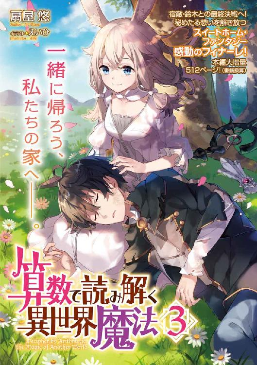
もくじ
序 章：「......必ず成し遂げます」と若き騎士は決意する。
第一章：「魔法使いが魔法を使えないなんて間違っています」と商人の娘は言った。
第二章：「『鍵』──それはお前のことだ」と妖精種の青年が挑発する。
第四章：「なに一つ守れなかったあなたに」と孤高の剣士は自嘲する。
第六章：「全力で、この荷物、運びます」と女騎士は決意の表情を浮かべた。
第十章：「あまねくミシアの光を世界に満たせ」と教皇は言った。
第十二章：「すぐに出立の準備を整えます」と女騎士は踵を返した。
第十三章：「天地を統べるミシア神よ、ご覧あれ」と神秘使いは高らかに歌う。
第十四章：「想いの進む方向を誤ってはならない」と歴戦の戦士は諭す。
第十五章：「私だって、止めるよ。──タカハ」と王女が僕に弓を向ける。
第十六章：「追い詰められた獣はよく吠える、というからな」と大将軍が笑む。
終章一：「でも、それが私を生かす理由にはなりません」と赤髪の少女は問う。
終章二：「あいつも、あいつの大切なもののために、戦ってます」と若き騎士は告げる。
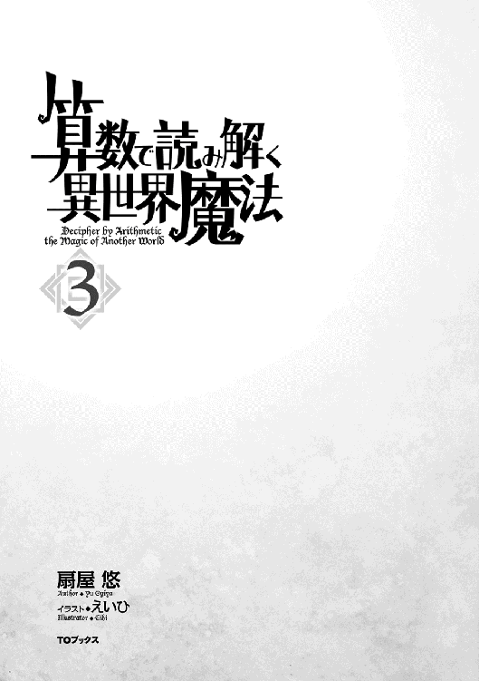
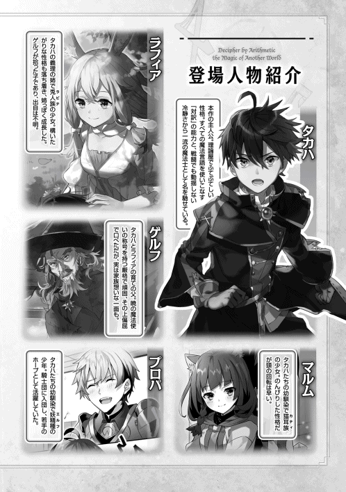
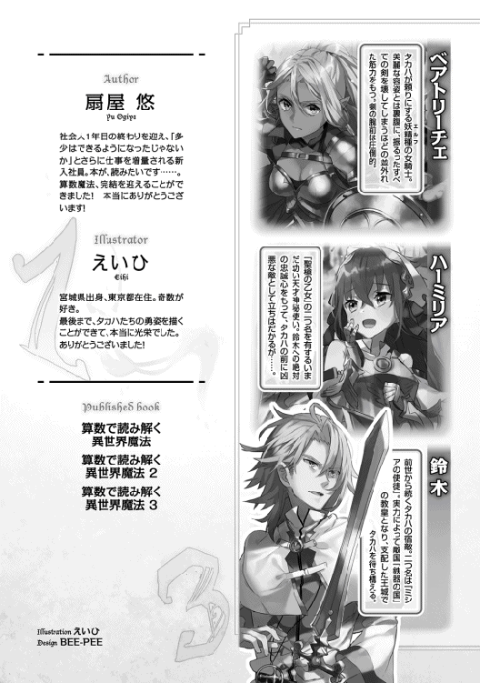
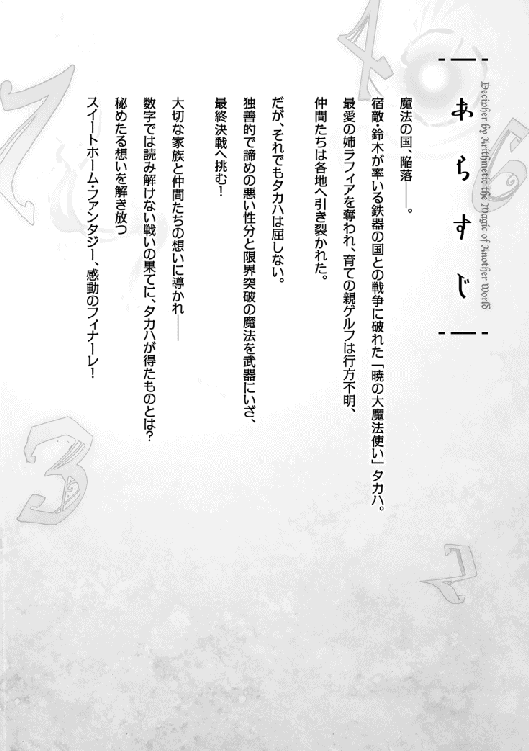
序章：「......必ず成し遂げます」と若き騎士は決意する。
その小屋を照らすのは、頼りない三本の蝋燭の光だけだった。
中央のテーブルに置かれた蝋燭は、外の吹雪に怯えるかのように、ときおりその身体を震わせ、集った者たちの影を不気味に変形させている。
決して広くはないその小屋に、大量の魔法使いたちが押し込められている。人数はスペースに対してあまりにも多く、隣の人間が放つ体温と吐息が感じられるほど。
（だが、息苦しくなどない）と、プロパは高まる心臓の鼓動を感じながら思った。（この日を、オレたちは待ちわびていたのだから──）
その瞬間──小屋で人の出入りが可能な唯一の扉が、外側からノックされた。
コン、コンコンコン、コン......と不規則なリズムで繰り返されるそのノックを、中に居る人間の全員が聞き、確かめ、頷き合う。
「入れな」と小屋の中央から老婆の声が響いて、厳重に鍵がかけられた扉が開かれた。
扉の向こうの吹雪から追い立てられるように、一人の男が飛び込んでくる。両肩に雪を乗せたその男は、それを払う時間すら惜しんで、蝋燭の近くの老婆の側でひざまずき、顔を伏せたまま言った。
「──全部隊、配置完了しました。ソフィ様」
「ああ。本当に......ご苦労だったね」
老婆は──プロパが物心ついた頃からよく知るソフィばあさまは、これまで見たことがないほどに張り詰めた表情で、男にねぎらいの言葉をかける。その言葉に、男は肩をふるわせ、答える。
「すべては我らの悲願のため。革命の成就を思えば、どれほどの苦しみも乗り越えられます」
全員の間をかすかなどよめきが駆け抜ける。男の言葉は、ここに集ったすべての者の総意に他ならない。プロパも同じ気持ちだ。革命は成し遂げねばならない。そう、どんな犠牲を払っても──
そのとき、小屋の中央で蝋燭の光に照らされているソフィが、窓際にいるプロパを見た。
たしかに視線が合ったと確信できるような、一秒の半分ほどの時間。
透き通る琥珀色の瞳がプロパに注がれ、一瞬だけ、その表情が笑顔に変わる。
生まれ故郷のピータ村で何度も見た、ソフィばあさまの笑顔。
だが、その笑顔をすぐに引っ込め、ソフィは周囲に集った者たちに順繰りの視線を送る。
そして、わずかに顔を伏せると、決意の表情で再び顔を上げた。
「──三巡月前、私たちは国を失った」
プロパは目を閉じる。脳裏に、まるで昨日のことのようによみがえる光景がある。
燃え落ちる王都。そして、国王陛下の命を奪った、あの純白の輝き。
いくつもの血しぶきと、悲鳴と、そうやって奪われたものたち。
「私たち魔法使いは、土地を失い、仲間を失い、そして......魔法を失った」
ぎりり、と誰かが奥歯を噛みつぶす音がした。
「今の『魔法の国』を支配する神聖軍は、我ら魔法使いに重税を課し、魔法を詠唱した者を例外なく死罪とする禁詠令で魔法使いたちを縛り上げている。......結果、この冬を乗り越えられない小さな村も多くある」
そうだ。
オレたちは負けた。
戦争で、敵国『鉄器の国』に敗れ去った。
敵軍による王都侵攻と、それに伴う蹂躙を許し、国王陛下の命を奪われた。
だが──あの戦いは、真っ正面から行われた本当の戦いではない。
敵国の教皇は不意打ちで国王陛下の命を奪うことで、戦争の勝利を宣言した。それはもちろん『魔法の国』にとってあまりに痛烈な被害だったけれど、それでも、国民のほとんどは傷つけられることなく生き延びている。
だが、そんな国民たちが『神聖軍』によって不当な扱いを受けていることは間違いない。
「われらは『神聖軍』に反抗する地下組織として、そんな村々をいくつも救ってきた。食糧を上手く分配したり、神聖軍の目をくらませたり、希望者を迎え入れたり......だが、みなも承知の通り、その全ては、大局から見ればあまりに小さな反抗でしかなかった。──そう、これまではね」
ソフィの声がかすかに震えた。
その震えは、寒さでも、怯えによるものでもなく、怒りによるものなのだと、プロパはすぐに気付く。
「これより、我ら革命軍は総力をもって王都に侵攻」
ソフィは息を吸い込み、決然とした口調で言った。
「敵国の教皇『ミシアの使徒』エィム＝ルバーチェ＝アルバレアを討つ」
誰一人として大声を上げなかった。
だが、プロパは確信している。ここに集った者たち全員が、今のプロパと同じように決意の咆哮を胸の内にぶちまけているはずだ、と。
この場に集った魔法使いは二倍した十七人。そのほとんど全員が、旧領主から二つ名をたまわったか、戦場での異名を仲間から与えられた優秀な魔法使いたち。そうでなければ、旧騎士団で叩き上げられた元騎士。そんな彼らに従う形で、さらにこの十数倍の人数が、今回の王都強襲作戦に参加する。
「......」
プロパは武者震いする自らの右手を強く握り込んだ。
絶対に、勝てるはずだ。今の『魔法の国』が持ち得る最大規模の反抗戦力がここに結集していると考えて間違いない。──あの化け物じみた教皇にだって、オレたちの魔法は届く。
「しかし......ソフィ殿」
一人の魔法使いがおずおずと片手を上げた。
「あの膜がある以上、王都のみを急襲するのは困難だったはずでは......？」
「その問題は解決済みさ。よくお聞き。これから作戦を伝えるよ」
ソフィのその言葉に、小屋の中から音という音が消えた。
「様々な情報を突き合わせた結果、王都には、王族が脱出するための地下通路が用意されていたことが判明した。その場所も割り出せている。魔法的な手段で封印された通路を偵察したが、敵が気付いている様子はなかったよ」
「その通路を逆にたどれば......！」
「ああ、そうさ。私たちは苦労なく、王城の目の前にまでたどり着くことができる。......あとは、寝覚めが悪いと噂の教皇猊下に魔法をぶち込んでやるだけだね」
神聖軍による支配体制の中心地は、以前の『魔法の国』の王都。そこを攻め落とすのがもっともシンプルな革命の方法なのは、誰にでも理解できる。
だが、問題が二つあった。王都を守備する神秘使いの数が当然のように多いこと、そして、王都侵入を阻む魔導器の存在だ。
（......）
プロパは魔導器と、それを操れる人物のことは考えないようにして、思考を進める。
敵が感づいていない地下通路を経由することで一気に教皇のいる王城前に侵入する──という今回の作戦は、二つの問題を同時に解決できる作戦だった。
（一度しか使えない、というデメリットはあるが......）
そう考えて、プロパは愕然とする。──自分は今、今回の戦闘が敗北に終わる可能性を検討していたのだ。
強く首を振る。
そんな弱気でいいはずがない。
オレたちは、必ず勝つんだ。この戦いで。
そして──『魔法の国』を取り戻す。
「......ぁ......」
そのときだった。プロパはようやく、首をぶんぶんと振る自分をじっと見つめているソフィの視線に気付いた。
プロパは恥ずかしさを誤魔化すように微笑を浮かべる。
ソフィもまた同じ表情で応えてから、周囲の者に向き直った。
「さあ、行動開始だよ。......ミルヴォ、ロレンス、部隊の移動を開始」
「了解です、ソフィ様」
「ジーク殿、陽動作戦を定刻に」
「心得ました」
にわかに慌ただしくなる小屋。すでに開け放たれた扉から、次々とソフィの命を下された魔法使いたちが飛び出していく。戦場に向かって。
「そして、プロパ」
はっとして、名を呼ばれたプロパは顔を上げた。
ソフィは先ほどまでと同じ、穏やかな微笑を浮かべて言った。
「────お前は、この戦いに参加することを禁止する」
「........................え？」
聞き間違えたかと思った。
だから、聞き取った言葉の意味をもう一度考えてみた。
だが、どうひっくり返しても、ソフィの言葉には、言葉通りの意味しか含みようがなかった。
「ジーク殿の部隊が王都街壁の外で陽動作戦を行う。それよりさらに後方の丘陵地帯で、『遠見』の魔法で戦闘状況を確認。それがプロパの任務だ」
ソフィの諭すような口調は、はっきりと告げていた。
お前はお留守番だよ、と。
「......なぜです！ ソフィばあさま！」
そう理解した瞬間、プロパは声を荒げていた。
「オレだって戦える！ この日のために、オレだって戦い続けてきたんです！ 行かせてください！」
「......お前が今日までの『革命軍』にどれほど尽くしてくれたか、ここに居る全員が知っているよ」
ソフィは、村に居た頃と同じ、あの優しい微笑みで言う。
「そんなプロパだから、任せるのさ。この重要な使命をね」
「......使命？」
「ああ。いいかい、よくお聞き──」
ソフィはゆっくりと、噛み砕くような口調で、いくつかの命令をプロパに下した。
「......そんな！」
その言葉が積み重ねられていくたびに、プロパの全身を冷たい緊張が走り抜けていく。同時に血の気が引くような感覚がして、立っていることだけで精一杯になる。
「......いいね？ これは『暁の革命軍』の盟主としての命令だ。逆らうことは許されないよ」
語り終えたソフィは、蝋燭を前に、低い角度から視線を投げかけている。
プロパは、強く両手を握りしめた。
「......それじゃあ、みんなは、最初からそのつもりだったってことですか」
周囲を見やると、他の魔法使いたちが穏やかな表情でプロパを見つめていた。その仕草は万の言葉よりも正確な返答。
「もちろん希望は最後まで捨てないよ。でも、今伝えたのが、最高の策だってことは間違いないのさ。......プロパは革命軍の中で誰よりも若く、そして全員が信頼を置く人物だ。だからプロパに決めた」
「オレは──ッ！」
プロパは顔を上げる。
いくつもの瞳と目が合う。
その全てが、ソフィと同じ穏やかな色を湛えている。
「......オレは............」
きつく目をつむる。
強く握り込んだ拳は、先ほどとは打って変わって、冷え切っていた。
「......分かりました。......後方の丘陵地帯で、警戒の任にあたります」
「ああ。頼むよ。いつもすまないね」
ソフィは穏やかにそう言い、カーテンで締め切られた窓に視線を送った。
魔法使いの一人がそのカーテンを引く。
外は、先ほどまであれほど強かった吹雪が止んで、ゆっくりと明るみ始めていた。
「もうすぐ夜が明ける。さあみんな、お祈りの時間だ」
『──国民のみなさん、おはようございます』
そのとき、外からすさまじい音量の声が響いた。世界中に響くような音量でありながら、それはひび割れていなければ、聞こえづらくもない。まるで全員の耳元で同じ人物が同じ言葉を発しているかのような、どこか不気味な声が、続く。
『今日は聖九月、ミールの日。西の空に祈りましょう』
それは少女の声だった。
緊張しているようにこわばり、かすれた声。
そして、王都が陥落したあの日から毎日響き続けている声。
『決して魔法を唱えてはいけません。神聖軍の保護の元、穏やかなる日の始まりを祈りましょう』
「悪いけど、言うことは聞けないよ」
得意の雷魔法のようにそう言い残し、ソフィが立ち上がった。すでに表情をそぎ落としたソフィは、もうプロパに一瞥をくれることもなく、その小屋を後にした。
そして、それがプロパとソフィの今生の別れとなった。
「ここです。間違いありません」
「──よし。ぶち抜きな」
相手の顔すら見えないほどの暗闇の中、ソフィの命令に答えて、土属性の魔法の詠唱が始まった。
「「「〝土─六の法───〟」」」
岩石の槍を生み出す単位魔法を詠唱したのは三人。いずれも土属性の優秀な使い手だ。外すことは万に一つもない。
一瞬の後、彼らの足下から立ち上がった地面の槍は、意思を持つ巨大な蛇のように、『そこ』を真下から貫いた。
すさまじい破砕音とともに、立ちこめる土煙。それが晴れるより早く、ソフィは穿たれた穴から飛び出していた。
地の底から、光の世界へ。
光量の変化に滲む涙を誤魔化し、ソフィは目を大きく見開く──と。
美しく巨大な城が、目の前にあった。
すぐそばにある湖に口をつける巨大な白竜のようなその城は、『魔法の国』の象徴たる唯一の城。
王城。
放射状に街路をもつ王都の中心点が、この美しき白亜の巨城だ。その正面の広大な庭園は、冬の最中だというのが信じられないほど鮮やかな植物で彩られている。
（......綺麗なお城だね、いつみてもさ）
ソフィは内心呟き、閉ざされたその城門をじっくりと眺める。
観賞の時間は終わりを告げようとしていた。
「侵入者だ──！」
声を荒げたのは、黒鉄の鎧を着込んだ見張りの兵士だった。
直後、ソフィが命じるまでもなく、その兵士の額に一筋の矢が突き刺さり、命を刈り取る。
「すぐに神秘使いどもが出てくる。その前に、王城を占拠し、教皇を討つよ」
「「「応──ッ！」」」
現状確認、とソフィは内心で呟く。王城の外から繋がっていた地下の秘密通路を辿り、城前の広場にたどり着いた。今も続々と魔法使いたちが地面に穿たれた大穴から吐き出されてくる。想定以上のペースだ。ソフィは後続を待たず、早足で進軍を開始した。
黒鉄の兵士たちが城門を守るかのように左右の詰め所から姿を見せた。が、そんな彼らに向かって、数十人の規模の魔法使いたちが次々と攻撃を仕掛け、打ち倒していく。
城門までは、すぐにでも到達できるだろう。
そんなソフィの胸の底で、ゆっくりと、だが確かな存在感とともに、違和感が首をもたげた。
（たとえあの魔導器があったとして......これほど王城が手薄だということは──）
ソフィは確信めいた予感に、きつく目をつむる。
覚悟はしていた。
だが、それが現実のものになる重みは想像以上だった。
年甲斐もなく、と自重しながら、かすかに震えた肩に力をこめる。同時に、これから立ち向かわなければならない敵の思考能力に戦慄する。胸中で（すまないね、みんな）と呟いた──その瞬間。
「──礼を言うぞ、革命軍」
まるで世界の理の代弁者であるかのような、尊大で傲慢な口調が、広場に響き渡った。
「貴様らを探し出して個別に潰す手間が省けたからな」
声は、城門の上から。
傲然とこちらを見下ろす男がいる。
豪奢な純白の法衣を身にまとった若い男だ。整いすぎた顔立ちと冷酷な瞳は、どこか作りものめいている。唯一、感情をうかがわせるのは、その唇の端に浮かんだ酷薄な微笑のみ。
無感動なアイスブルーの瞳を向けられ、冷たい手で撫でられたかのように、ソフィの首筋が総毛立つ。
「『瞬光の繰り手』と言ったか。以前一度戦場で見かけたからよく覚えている。あの日と変わらない愚かな振る舞いしかできないようだがな」
教皇の言葉に合わせるように、閉ざされていたはずの城門が開かれた。
「......ッ」
息を呑む。
視線の先、その城門の向こうには──純白の法衣に身を包んだ神秘使いが、こちらを上回る人数で待ち構えていた。
喉が枯れるほどの大声でソフィの周囲の魔法使いたちが詠唱を解き放つ。歴戦の彼らが放つ魔法は、黒鉄の兵士たちを瞬く間に蹂躙し、城門へ殺到する──が。
荘厳な神秘の光が、その全てを容赦なく弾き返していた。
『信仰の盾』。
彼らの中では下位の能力に分類されるその防御用の神秘は、魔法を完全に遮断することができる。神秘使いと魔法使いが一対一になった場合、まず勝利は難しいと言われるのは、それが理由だ。
そんな神秘使いが無数にいる。
「エィム様」
声が聞こえて、ソフィは再びテラスに視線を向ける。教皇の隣に一人の少女が立った。鮮やかな赤の髪と、対比される純白の法衣は、その少女の完全なる無垢を強調する。右手に構えた巨大な槍が、まるで冗談のように見える。
『聖槍の乙女』ハーミリア。
敵国で序列二位を誇る、凶悪な神秘使い。
「存分に暴れろ、ハーミリア」
「──はっ」
テラスから『聖槍の乙女』が躍り出る。少女は城門の前に飛び降りると、一切の隙のない構えをとった。すぐにでも、あの未来を読む槍の穂先が、魔法使いたちの隊列に飛んでくるはずだ。
「ソフィ様......！」
ハーミリアの登場に、魔法使いたちの間を緊張が走り抜ける。
「うろたえるんじゃないッ!!」
だが、ソフィの一喝が、魔法使いたちを鼓舞した。
「防御魔法を維持して、他の神秘使いは無視しな！ 『ミシアの使徒』を討ち取れば、この戦いは終わりだよ！」
その言葉に応えるように、魔法使いたちは次々と魔法を放った。城門から出てこちらに接近しようとしてきた神秘使いを牽制する魔法。敵の遠距離攻撃を防御する魔法。敵の視界を奪う霧の魔法。教皇が立つテラスを狙った鋭い魔法。いくつもの光と質量が飛ぶ。私たちは強くもないが、やすやすとやられるほど弱くもない。そう信じさせる密度と威力の魔法の群れ。
だが。
──その全てを、一筋の光がなぎ払った。
「............そうなるだろうね」とソフィは独りごち、再びテラスに視線を向ける。
ソフィはまぶしいものを見つめるかのように、目を細めた。
「──革命軍のみなさん、抵抗はやめてください。あなたたちの計画は露見していました。無益な血を流さないでください」
小鳥のさえずりのような心地よいソプラノ。だが、その口調は霜に覆われた地面のように強ばり、淡々としている。
全身を銀白の鎧で武装した少女だった。その右手には、同じ材質で構成された弓がある。矢筒はない。先ほど全ての魔法をたたき落とした光──あれが、その弓の放つ矢だ。
透き通る空と同じ色の瞳。ともすれば銀色にも見える美しい長髪と同じ色の兎耳は、彼女が兎人族であることを証明している。
人間と妖精種以外を人として認めない『鉄器の国』において、彼女が神秘使いであることはあり得ない。
ソフィは、その少女のことをよく知っていた。
「裏切りの王女め！」「お前がそちらにつかなければ！」「我らに希望の芽はあったのだぞ！」「その力をなぜ民のために振るわない！」
銀白の鎧に身を包む少女が、魔法使いたちの怒号に身を強張らせる。
「しゃべってる暇があったら詠唱しな！ 左翼が手薄だよ！ 今すぐに死にたいのかい!?」
ソフィは自分の言葉に従うように、杖を掲げ、慣れ親しんだ呪文を詠唱した。枝分かれの稲妻。深入りしすぎて『信仰の盾』を砕かれた一人の神秘使いに突き刺さり、その戦闘能力を奪い去る。
「──ソフィ、おばあちゃん......？」
爆号と炸裂音の響き渡る戦場で、魂を置き忘れてきてしまったかのようなその戸惑いの声が聞こえたのは、どういう理屈かは分からない。
ソフィは再び顔を上げることとなった。
テラスで教皇の隣に立つ少女と、目が合う。
空色の瞳が見開かれ、その瞳孔が収束する。
「やめて......！ もう戦わないで！ 勝ち目はないんだよ！ 『魔法の国』は負けたの......！」
そう言いながら、少女は弓を構える。その弓に魔力を凝結させたかのような虹色の光が宿り、矢の形をとって、ぴたりとソフィに向けられる。
「やってみなくちゃ分からないこともあるさ」
顔のすぐ真横をかすめ飛んでいった別の敵の神秘に眉一つ動かさず、『瞬光の繰り手』ソフィは穏やかな微笑で応えた。
「そうだろう？ ────ラフィア」
それを戦闘と呼んでいいのかどうか、プロパには分からなかった。
率直に表現するなら、プロパがじっと見つめ続けたそれは、制圧であり、蹂躙だった。
教皇はどうやら、王都地下の秘密通路から一気に王城前に潜入するという革命軍の作戦を掴んでいたらしい。魔法使いたちと同数以上の神秘使いたちが待ち構えるそこは、革命軍にとって死地以外のなにものでもなかった。
いつかプロパの顔立ちをからかった女槍使いは、敵の光刃に首と胴を断たれた。
いつかプロパに魔法を指南してくれた老賢人は、三人の神秘使いを道連れにすべく、自爆を前提の魔法を解き放った。
いつかプロパに妻子との再会を誓った中年の魔法使いは、巨大な槍に心臓を串刺しにされた。
王都が陥落したあの日。
そして始まった革命軍の構成員としての日々。
────『魔法の国』を取り戻す。
その願いに突き動かされ、ただ駆け抜けてきた。
プロパにはムーンホーク領最年少の正騎士としての自負があった。剣術も魔法もできるし、戦闘行動を指揮できる。だから、オレは一人になったとしても戦い続けなくちゃいけない。そう思っていた。
だが。
まるで羊皮紙を引き裂くように、次々と同志たちが死んでいくのを見て、プロパは自分がどれほど彼らに支えられていたかを知った。
革命軍は地下組織だ。満足に確保できない食糧をともに分かち合い、毛布が足りなければ体温ですら共有し、生き延びてきた。
「......くっ......そぉ......ッ！」
そんな彼らがいたから、プロパはここまで戦ってくることができたのだ。
「......うあぁ......っ......！」
そんな彼らが、次々と死んでいく。殺されていく。革命が成されるその日を信じて、願って、そしてプロパに全てを託して、先に逝ってしまう。
だが、その背中を、プロパは安全な王都郊外の丘陵地帯から眺めていることしかできない。
それが、ソフィの命令だから。
「......ミルヴォさん......ニーアさん......ロレンス......クライン、ディーデルト............ソフィ、ばあさま............」
見事な最期だった。
興がのったと言わんばかりにテラスから身を躍らせた『ミシアの使徒』に全開の雷撃魔法を浴びせ、あの老いた身体のどこにそんな力が残っていたのかと驚愕させるような機敏な動きで敵の懐に入り込み、ソフィは小刀を振り上げた。毒でも仕込んでいたのだろう、その必殺の刃は──厳然とした神秘の光に弾かれた。同時に、膨大な神秘の光が老魔女を押し包んだ。
プロパの視界は『遠見』の魔法で拡張されている。だから、プロパは見た。魔法使いたちがどのように討たれたのか。そして、敵の神秘使いたちがどうやって敵を倒すのか。
『聖槍の乙女』の力。
『ミシアの使徒』の力。
敵の神秘使いの人数と、そこから予測される敵軍全体の戦力の見積もり。
指揮系統、そして、継戦能力。
その全てを瞳に収め、プロパは動く者がいなくなった王城前の庭園にもう一度『遠見』をフォーカスさせる。死んでいった者たちの顔をすべて記憶に焼き付けるように。
『暁の革命軍』最大の反攻作戦は、そうして、終焉を迎えた。
「......プロパ」
強く一度目元をぬぐい、プロパは背後からかけられた声に振り返る。
決然とした表情のプロパに向かい合うのは、王都の外部で陽動作戦を指揮していた一人の騎士だった。
「ジーク、様......」
「戦闘は終了した。以降の作戦行動は、すべてソフィ殿の指示が残されている。しばらくはそれに準じて動く」
「......はい」
「撤退だ。急げよ」
騎士ジークはきびすを返して丘陵地帯を下りていった。
すでに戦闘を終えた革命軍の構成員たちが、所定の経路で撤退を開始している。すぐにこの丘陵地帯にも敵の偵察兵が姿を見せるだろう。
プロパはもう一度、王都の方へ向き直った。
願いをかけるように、星の祈りを額に刻んだ。
「必ず......必ず、成し遂げます。ですから、そこで待っていてください。そして、どうかオレたちを見守っていてください」
プロパはもう振り返らなかった。
その胸を突き動かすのは、ソフィが下したいくつかの命令。
その全ては──あの少年に収束する。
「どこにいようと。すぐに見つけるぞ。──タカハ」
第一章：「魔法使いが魔法を使えないなんて間違っています」と商人の娘は言った。
一度大きく馬車が跳ねたのは、目の前の少女の声のトーンが跳ね上がった、まさにそのタイミングだった。
「間違いありませんわ！」
よく動く翡翠色の瞳が、期待の輝きに満ちて僕に注がれている。
「あなたは『暁の大魔法使い』タカハ様、そうなのでしょう？」
「いや。だから、別人だって」
「夜空色の短髪、黒曜石の瞳、黒衣は......黒衣は......ええと、そう！ 少し汚れてしまっていますけれど──」
裾がほぼ全周でほつれ、そこら中に裂け目があるこのローブを見て、『汚れてしまっている』とスルーできるポジティブさは見習ってもいいかもしれない。
「その杖！ 先代の『暁の大魔法使い』ゲルフ様が使われていた『黒の長杖』ですわよね？ やっぱりそうです！ そうなのですね！ あなたはタカハ様ですわ！」
「......」
「私、あなたの大ファンなんです！ 幼くして戦場に立ったタカハ様が『ミシアの使徒』を追い返したお話は、何度聞いてもドキドキして、夜も眠れなくなってしまうくらいで──」
僕は揺れる馬車の上で、一つ、大きなため息をついた。
（......厄介なことになった──）と。
旅は、長かった。
王都の郊外から旅立ち、旧『魔法の国』領土を横切るこの旅は、目的地もさることながら、制約が多すぎた。
まず、僕は街道を使えなかった。
神秘使いたちの軍──通称、神聖軍が、旧『魔法の国』の領土の全域を支配下に収め、その時点での戸籍を収集したとき、僕は全く関係のない土地で彼らと戦い続けていた。僕の出身地であるピータ村に帰ったところで、僕は拘束されてしまう身分になったわけだ。そこに、戦争中の──戦線がまともに機能していたころの──『暁の大魔法使い』としての僕の罪状が加わった結果、人相表を国中に配られ、その下に名前と金額を書き加えられることとなった。
そう。今の僕は要するに賞金首だ。
だから、僕は街道を使うことができない。
街道を使うことができなければ、『魔法の国』の国土面積の大部分を占める鬱蒼とした森林地帯を踏破するしかない。そんな状況下でも、ばっちり追っ手は差し向けられ、僕はときおり敵国の兵士と戦闘をしつつ、ここまで数巡月に及ぶ旅を続けてきた。
僕がよく知っているムーンホーク領は遙か後方。もうすぐ、旧『魔法の国』領土の外縁にたどり着く。地図も終わろうとしていた。銀嶺山脈を挟んだ向こう側は『鉄器の国』の国土がある。銀嶺山脈の雪をかぶった頂を、僕は視界にはっきりととらえていた。
僕は一人だった。
僕の愛する、孤独な旅だった。
行き先とその目的ははるか彼方にあって、たどり着くことができるのかどうかも分からない手探りの道のりは、大好きだった数学の難問を解くときに似ている。
そして僕はよく知っていた。
そういう難問にぶつかって悶々としているときは、手を動かすだけで解法に式が収まるような簡単な問題を解くと、意外な解決策が見つかることが多い、と。
──僕が商人ライナスとその娘ミライアを助けようと思ったのは、つまり、ただそれだけの理由だった。
「いやあ、申し訳ありませんねえ。英雄譚ばかり好む娘に育ちまして。おてんばもここまで行くとお恥ずかしい限りです。まったく誰に似たのやら......」
「まあひどい言い方。お父様に似たに決まっているでしょう？」
しなやかな枯れ枝のような印象の中年の男が、ライナス。王都と辺境地帯を往復し、地方の珍しい物品を取引するのがスタイルの商人だ。
そして、その枯れ枝に止まったにぎやかな小鳥がミライア。父親とは対照的に健康的な肉づきをしていて、金色の髪と翡翠色の瞳が印象的な女の子だった。
ライナスが穏やかな微笑を僕に向ける。
「改めて──助けていただいて、本当にありがとうございました」
ライナスの馬車は街道のぬかるみに足をとられていた。車輪の一方が半分以上ぬかるみにはまり込んでしまっていて、抜け出すのはかなり困難だろう、と僕はすぐに察した。そして、馬車から下りているのが、枯れ枝のような中年男性と少女の二人だけだったので、僕はつい声をかけてしまったのだった。
『手伝いましょうか』と。
突然現れただけでなく、いきなりそんなことを言った僕に、反応できずにいる二人。そんな二人を前に、僕は一瞬だけ目をつむると、慣れ親しんだ『対訳』の感覚に身を預けた。
「〝土─十一の法───〟」
単位魔法は『土の十一番』、三マナ。
地面の盾を生み出す基本呪文だが、こういう状況での活用法はいくらでも思い当たる。
「〝─二つ───〟」
馬車の大きさを考えれば、二倍魔法くらいでいいだろう。
「〝─今─眼前に───〟」
発動時間指定に二マナ、発動位置指定に二マナ。
合計七マナ、その三倍魔法。
「〝ゆえに対価は 十四〟」
瞬間、僕の心臓の真横にある回路を通り過ぎたマナは、一瞬で現実の力に変換されて発現した。
ぬかるみのある地面から、一瞬で、巨大な土の壁が持ち上がる。そうしてできた坂を馬車が滑り落ちれば、脱出は完了。
「では、僕はこれで......──あ」
立ち去ろうとしたところで、僕は失敗に気付く。
禁詠令。
魔法の詠唱を禁じる神聖軍の法律によって、魔法を唱えた痕跡を目撃されてしまうと、容赦なく重罪をかけられてしまうのだ。
「ええと......」
見たところ、ライナスとミライアはその禁詠令に逆らうことはなさそうな従順な商人だった。もし、この痕跡が発見され、彼らが疑われるようなことがあれば、詫びの言葉を尽くしても取り返しがつかない。
「失敗しました。自分は禁詠令に逆らって逃げ続けている身分なので......。ここの魔法的な痕跡は僕が消しておきますから、神聖軍に見つかる前に早く行ってください」
さいわい、地面はぬかるんでいた。数分の作業で土魔法の痕跡を消すことができるだろう。その間に万一神聖軍が通りかかったとして、僕一人ならば逃げ切ることはできる。......これまで、ずっとそうやって旅をしてきたのだから。
だから。
「なにをおっしゃるのです」
満面の笑みでそう言うライナスに、僕は少なからず驚いた。
「こんな辺境の地では、定点の検問以外に神聖軍の巡回はありません。私は水属性の使い手ですから、仮に魔法を使ったところで、どうしようもできなかったのです」
「はあ......」
「命の恩人をどうして置き去りにすることができましょうか。どうやら行き先もあるご様子。手分けしてこの痕跡を消し、お望みの場所までお連れしますよ。このあたりの土地勘は、ばっちりですからね──」
「それにしても、大きな剣ですね」
ミライアの言葉に、僕は現実に引き戻された。
見ると、僕がずっと背負っていたものをミライアがしげしげと見つめている。
僕のローブと同じくらいに粗末な布が巻かれたそれは、今は馬車の荷台に転がっている。分かる人にはすぐに分かるのだろう。巨大な大剣だった。いざというときには盾代わりにも使えるような幅広のその両手剣は、僕のお手製。この旅の中で何度も窮地を救ってもらった。
「それ、重いから気をつけて」
「んー。そうかしら？」
グリップのあたりをかすかに持ち上げたミライアはすぐに手を放したが、首をかしげている。
「このサイズだとしたら、逆に軽すぎると思います。木......ではないですわよね。どういう金属なんですの？」
「......とある筋から手に入れた剣だよ。材質は僕も知らない」
「ふーん」
はぐらかされたとはっきり感じ取ったのか、ミライアは不満げに眉根を寄せた。
だが、すぐに何かを思いついた様子で瞳を輝かせる。
「ね。タカハ様。魔法を教えてくださらない？」
「いや、だから僕は、そんな高名な大魔法使いじゃないってば」
「私、筋はいいと思うんですの」
......聞いてない。
「ただ、お父様からしか魔法を教わったことがなくて、水属性の初歩の呪文しか使えません。土属性の魔法があれば、さっきみたいな状況でも便利ですわ」
ミライアの眩しい微笑に、僕は手のひらをひらひらと振った。
「禁詠令があるじゃないか。今の『魔法の国』では、唱えただけで重犯罪者の仲間入りだよ」
「バレなきゃよろしいですわ」
ぺろりと小さな舌を見せるミライアに、僕は苦笑を返す。そのとおりだと僕は思った。
ミライアはやはり小鳥を連想させるような仕草で首をかしげた。
「それに、魔法を使える者がその詠唱を禁じられるだなんて、やっぱりおかしいです。タカハ様はそうは思いませんこと？」
「......うん。おかしいことは他にいくらでもあるよね。僕はタカハって名乗ってないからね」
「でしたら、私に魔法を教えてくださいませ」
「今度は『でしたら』の使い方がおかしい」
「土属性の魔法がいいです」
「......複数の属性の発音に精通するには、とても時間がかかるんだよ。土と水は発音も近い。少しでも間違えれば、詠唱が失敗に終わってしまう」
「やはり経験がおありなのでしょう？ あなたは多属性を使いこなせるんですのね！ その若さでしたらタカハ様以外に考えられませんわ！」
「......」
口と同じくらいに、頭も回る少女だ。真剣に馬車を下ろしてもらうことを検討し始めたとき、御者台から声が飛んできた。
「いい加減にしなさい、ミライア。魔法使い殿はお疲れなんだよ」
ライナスの瞳は穏やかな色を湛えている。
その瞳を見て、かえって僕は確信することとなった。
（......たぶん、僕がタカハだってバレてるんだろうな）
思えば、最初からそうだったのかもしれない。普通、こんなボロボロのローブを着た人間は野党だと思うべきだ。だが、ライナスは最初から、僕の協力を拒まなかった。
「ゆっくり荷台でお休みになってください。異変があれば、すぐに起こしますので」
「ありがとうございます」
「もう......！ なによ！ 二人ともひどい！」
「おやすみ、ミライア」
「起きたら、きっちりとお話ししていただきますからね」
ぷくっと膨らませた頬をすぐに微笑みの形に切り替えたミライアは、丁寧な手つきで僕に毛布を手渡してくれた。
太陽に匂いがあるとしたら、こんな感じなんだろう。そう思わせるようないい匂いがする、柔らかくて上等な毛布だった。
僕は荷台に身体を横たえる。
ゆっくりと繰り返す馬車の振動が心地よくて、僕はすぐ眠りに落ちていった。
心地よい眠りは、一瞬で過ぎ去った。
僕は目をつむったまま意識を覚醒させる。
──馬車が減速している。
車輪の振動の周期が変わっていた。もう間もなく、ライナスの愛馬はその足を止めるだろう。
「起きていますか」
御者台と荷台を仕切る布から顔を出したライナスは、少し張り詰めた表情をしていた。
「神聖軍の検問です。あなたは私の従者として、なにも喋らずに頷いていてください」
「でも──」
「ご安心を。あなたのような方を乗せたことは何度もありますから。書類だって、このとおり」
ライナスが懐から三通の書類を取り出す。その全てに王都の駐屯地で神聖軍が発行した正式書類の印が押されていた。
枯れ枝のような見た目とは対照的に、ずいぶんとたくましい商人らしい。
「止まれ──！」
御者台の前方では、黒鉄の兵士が数人、進行方向をせき止めるように立ち並んでいた。木の柵が道の両側からせり出しているだけの簡易な検問だが、兵士の数が多い。突破するのはめんどくさそうだ。
「どうも。ご苦労様です」
「許可証を提示しろ」
「はい。こちらに」
ライナスは三通の書類を手渡しつつも、にこにことした表情を崩さない。
黒鉄の兵士がそれらを眺め、ライナスを見て、ミライアを見て、そして僕を見た。細められた青い瞳と目が合う。若い兵士だ。僕の心拍数が否応なく高まった。じっと見ている......気がするけれど、たぶん気のせい。そう感じただけのようだった。
「しばし待て」
そう言って、兵士は木の柵の影に引っ込んでいった。
「大丈夫そうですね」
ぽつりと呟いた僕を二人の商人が振り返る。
そこで僕は口をつぐんだ。
「すみませんが、タカハ様」
そう言ったライナスの瞳が──まるで、刃のように研ぎ澄まされていたからだ。
「助太刀をお願いすることになりそうです」
ライナスはそう言いながら、手綱を握る手のひらに力を込めた。ミライアもぐっと身を低くして御者台に掴まっている。いつでも飛び出せるように。
呆然とする僕を置き去りにして、その瞬間はきた。
「商人ライナス、だな。──発見した。荷台を検めさせてもらう。ただちに馬車を下り──」
「行けッ！」
鋭い一喝に合わせて鞭が踊り、ライナスの愛馬の両脚の筋肉が爆発的に盛り上がった。次の瞬間、すさまじい加速度に僕は荷台を転がされる。回転する視界の中で、ライナスの愛馬が黒鉄の兵士をなぎ倒すシーンが見えた。
「後ろから弓矢が来ます──！」
ライナスの切迫した叫び声は僕に向けられたものだと瞬時に理解し、僕は揺れる荷台で身を起こすと同時に、狙いもつけず詠唱をスタートさせていた。
「〝風─二の法─三つ──〟」
単位魔法は『風の二番』。猛烈な突風を生み出す風属性の軽量呪文は、弓矢の防御に活用できる。
その、三倍魔法。
「〝─今─眼前に ゆえに対価は二十一〟」
瞬間、荷台の最後尾のあたりから、冗談のような突風が吹き出した。
それでギリギリのタイミングだった。
『鉄器の国』が誇る鉄矢は、三倍の威力を重ね合わせた僕の風魔法にわずかに軌道を逸らされ、荷台のわずか下に突き刺さった。べきゃり、と木片がはじけ飛び、僕の目元をかすめ飛んでいく。直撃したら人間の肉体なんて容易く貫通する重弓の威力を改めて思い出し、背筋が冷える。
「〝水─六の法─今─眼前に ゆえに対価は十〟」
手早く僕の隣で詠唱をしたのは、ミライアだった。彼女の身体のすぐ真横に『水の六番』が出現し、すぐにそれは主の指先が示す方向に疾走を開始した。
わずかな放物線を描き飛翔した人間大のサイズの氷槍は、今まさに僕たちを追撃しようとしている黒鉄の兵士たちの騎馬に突き刺さり、二頭を相次いで串刺しにして、なぎ倒す。
「やるね......！ ミライア！」
思わず口にした僕に、ミライアは満面の笑みを返した。
「タカハ様こそ。『原則』すら無視する倍数魔法。この目で見ることができるとは思いませんでした。......さすがですわ」
「............僕は」
純粋な敬意を結晶化させたかのようなミライアの口調に、なにかを言い返しそうになって、僕は内心慌てて口を閉ざす。
「......タカハ様？」
「いや。なんでもない。油断、しないで」
荷台の後方に流れ去っていく光景を確認する。敵兵の追撃はなさそうだ。
僕はミライアの手をとって立ち上がらせると、揺れる荷台を進み、御者台へ近づいた。
「これはいったい、どういうことですか？」
「娘の言ったとおりです。魔法使いが魔法を使えなんて、間違っている」
振り返ったライナスは、巻きこんでしまったことを詫びるような苦笑で、僕を見る。
「──私たちは、反抗勢力『暁の革命軍』に協力する商人なのです」
「────」
僕は表情を動かさないようにするのに精一杯になった。
『暁の革命軍』。その名は僕も知っている。『魔法の国』を取り戻すために神聖軍への抵抗を続けている国内最大の反抗勢力だ。二つ名持ちの魔法使いのみならず、かつての騎士たちをも取り込み、その構成員の詳細な人数は把握できないほど。神聖軍がもっとも警戒している相手とみて間違いないだろう。
同時に、僕は知っていた。
その反抗勢力を立ち上げたのが、ソフィばあちゃんであるという事実を。
ライナスはかすかに首を振ると、決然とした無表情を僕に向けた。
「積み荷は彼らへの補給物資がほとんど。一巡月ほどこの活動を続けてきましたが、ついに足がついてしまったようです。荷台を検められてしまえば、書面の内容との不一致が明らかになり、私たちはおしまいです」
「なんでそんな危険なことを......！」
「覚悟の上ですわ。タカハ様。あなたが躊躇いなく魔法を唱えるのと同じように、私たちもまた、自らの手に魔法を取り戻したいのです」
ミライアの透き通る瞳を僕は直視できなかった。
そこに映りこむ僕が、どこか怯えたような表情をしているように見えたからだ。
「この先の地で、重要な任務がおありなのでしょう？ こうして『暁の大魔法使い』タカハ様にお会いできたこと、私、一生の誉れにしますわ。どうかこれからも『革命軍』を正しく導き──」
「──違う」
ミライアの言葉を踏みつけるように放った僕の声は、やけに重苦しかった。
「違う。勘違いをしている」
「タカハ、様......？」
「僕は『暁の革命軍』に入ってなんかいない」
その言葉の意味が理解できないと言わんばかりに、二人の商人は目を瞬かせ、互いの戸惑いの感情を視線で交換した。
「それは、どういう......？」
「分かんないの？ 言葉の意味が？ もう一回言ってあげるよ。僕は『暁の革命軍』なんていう怪しい組織に所属してなんかいない」
「で、でも......っ、暁はタカハ様の二つ名でしょう......？」
「誰かが勝手につけたんだよ。僕の知らないところで、勝手にね」
「そ、それは──」
「......一つ、たずねてもいいですか」
疾走する馬車の上だというのに、ライナスの声は穏やかで、落ち着いていた。
「あなたは先ほど魔法を使っていた。神聖軍に抵抗する意思があるということです。でも、それだというのに、なぜ『革命軍』を否定するのです？」
「決まってるでしょう。『革命軍』に神聖軍を打ち破ることは不可能だからだ」
確信を伴った僕の強い言葉に、ライナスがたじろぐのがはっきりと分かった。
「そんなはずは......ないと思いますが」
「いいや。分かってない。たしかに『革命軍』に所属する魔法使いや元騎士たちなら、雑魚の神秘使いは倒せる。でも、それじゃダメなんだ」
記憶が、巻き戻る。
焼け落ちる王都の光景。
整然と並ぶ純白の法衣の一団。
そして、彼らを従えるあの男──
「あいつを倒さない限り、『魔法の国』に未来はない。でも、『革命軍』にあいつを倒せる人間はいない」
「あいつとは、まさか──」
ライナスが言いかけた。
その瞬間だった。
すさまじい衝撃が馬車を貫通し、僕の身体は宙に投げ出された。ミライアの悲鳴が爆音を切り裂くように響き渡る。
馬車から放り出された。
その事実だけは理解できる。
だが、回転する視界では、周囲の状況を確認できるはずもない。疾走し続けていた馬車と同じ速度を維持したまま、僕は地面に叩きつけられた。
「ぐうっ......」
鈍い声が漏れる。受け身はなんとか間に合った。身体の右側から電撃のような痛覚が走るが、骨は折れていないはず。ゴロゴロと地面を転がり、僕はその勢いのまま、意思の力だけで立ち上がった。
「......あ......」
見るも無惨な有様で、先ほどまで乗っていた馬車が道に横倒しになっている。まるで巨大すぎる獣に襲われたかのように馬車の荷台の幌は大きく切り裂かれ、その切断は両輪をつなぐ車軸をねじ曲げていた。ぶちまけられた食糧や貯蔵酒がまるで人間の臓腑のように周囲に飛び散っている。その中に混じっている武器や防具が『革命軍』への補給物資なのだろう。
「ライナスさん！ ミライア！」
僕のすぐ側に、二人の商人もまた投げ出されていた。
ライナスはわずかに身じろぎしているが、その額からは血が流れ、目も焦点があっていない。
一方のミライアは意識を失ったことが幸いだったかもしれない。右腕が、人間の関節の正常可動域ではあり得ない方向に曲がっていた。
「──武器と防具に、密造酒かぁ？」
のっぺりとした声が僕の意識を周囲に引き戻した。
「つまみもあることだし、宴会だなぁ」
舌打ちがこぼれる。
横転した馬車の向こう。まるでのぞき込むようにしてその中身を見ていたのは──純白の法衣を滴る血で汚した神秘使いだった。
まるまると太ったその男は湯気を漂わせる肉の塊を抱えていた。顎の動きは間断なく続く。神秘使いが食べるその肉は──ライナスの愛馬だったモノだ。
「兄貴ぃ、俺にも分けてくれよぉ」
瞬間、僕のこめかみから血の気が引いた。
同じ声のトーン、同じ口調、同じ体格の神秘使いが、もう一人いる。
「たぁっぷりあるからなぁ、心配すんな」
「......いや。食ってんじゃんよぉ。そう言いながら兄貴、食ってるってぇ、もう半分くらいぃ」
「残りは全部お前ぇにやるよぉ。だからよぉ、その前に──」
ぎらりと、まるで示し合わせたかのように、二人の神秘使いが僕に視線を向ける。
「あの羽虫三匹、やっちまうぞおらぁ──ッ！」
「ハラ減ったんだよぉ──ッ！」
時間が、凍りつく。
ど、く、り──と心臓の拍動さえも、やけにゆっくりになる。思考が加速していく。
（──撤退だ）と一人の僕が言った。（お前は一人でも神秘使いを倒せる。けど、二人以上を相手にしたことはないだろ？ 勝率は十パーセントってとこだよ。さっさと逃げろ）
神秘使いを倒すためには、大多数の神秘使いが操る『信仰の盾』という防御用の神秘を突破しなければならない。移動する膜のようなその防御用の神秘をくぐり抜けて魔法を届けない限り、魔法使いに勝機はない。
敵が一人ならば、状況の推移の中で機会をうかがって勝利をもぎ取ることはできる。
だが、複数人だとその難しさは倍以上に跳ね上がる。敵の攻撃は、詠唱なしなのにこちらより高威力のものがほとんどだ。二枚の『信仰の盾』を張られてしまえば、それをすり抜けられる魔法もごく限られる。
僕の肉体は、俊敏な獣のように、この危険な地から背を向けようとして──
脳裏に、言葉がよぎった。
『魔法使いが魔法を使えなんて、間違っている』
『さすがですわ、暁の大魔法使い、タカハ様』
僕は一瞬、倒れ伏した二人の商人に視線を送る。
どくり、と心臓が一拍を打つ。
その拍動はまるで僕の決断を急かすように、やけに大きく聞こえた。
答えは──決まっている。
僕は両脚を踏み込んで、彼らをかばうようにそこに踏みとどまった。同時に、詠唱を開始。
「〝土─二の法─八つ─今─彼方に〟」
単位魔法は『土の二番』。地面から大地の穂先を突き刺す中級攻撃魔法、五マナ。
──それを、八本。
「〝ゆえに対価は 八十〟」
二人の神秘使いの足下を中心に、数本の槍をばらまくようなイメージ。──直後、猛烈な勢いで、僕の身長の半分ほどの大地の槍が八本、地面からそそり立つ。
あまりに至近距離だったり、神秘使いの意識がそちらに向いていなかったりすると、『信仰の盾』はその防御力を十全に発揮できないことがある。奇襲性の高い『土の二番』は、そういった意味でも対神秘使い戦で有効な単位魔法だと僕は知り尽くしていた。
──果たして。
「どぅ......っ!?」
「ぶが......っ!?」
二つの巨大な神秘使いの肉体に、まるで茨が迎え入れるように、数本ずつ大地の槍が突き刺さる。
兄の方は、左の大腿と脇腹。
弟の方は、右のつま先と右脇腹、そして、腹のど真ん中に一本が突き刺さっている。
ひりつくような緊張感の中で、僕は最初の詠唱がきわめて効果的に作用したことを確信した。勝機への興奮が背筋を駆け抜ける。
「兄貴......ぃ」
兄の方はまだ生存も戦闘も可能だろう。だが、弟の胸を貫いた槍は重要な臓器をいくつか破壊しているはずだ。
「お、おいぃ......！ 何ドジってんだよぉ」
「すまねえ......すまねえ......兄貴......」
ここまで戦って、遠距離攻撃系の神秘が飛んでこない。となれば、十中八九、こいつらは近接攻撃系か防御系の神秘しかもっていないはず──。
いや。変だ。
防御系も......使ってない......？
ふと、嫌な予感という言葉に僕は思い至った。
こいつらはまだ神秘を発動させていない。
「〝火─三の法─四つ──〟」
坂を転がる岩のような早口でスタートさせた追撃の詠唱は『火の三番』。大火球を投射する火属性屈指の高火力魔法。その爆熱の余波は一発で人間を生存不能に追い込むことができる。僕が立っているこの地点にまで危険が及ばないギリギリの数。
「〝─今─眼前に ゆえに対価は四十〟」
僕の周囲に四つの大火球が生み出される。
視界の先では、二人の神秘使いが互いに協力しながら、僕の生み出した大地の槍による牢獄から自らの身体を引き抜いたところだった。
「......ッ！」
視線が凍りつく。
二人の兄弟神秘使いの身体から、一滴の血も流れていなかったのだ。
代わりに、神秘の光が傷口をぼんやりと覆っている。
にたり、と兄弟たちが笑ったように見えた──瞬間。
僕の視界を埋め尽くすように、周囲を取り巻いていた大火球が疾走した。
敵神秘使いとの距離を瞬く間に詰めた大火球は、凝縮された火炎のエネルギーを神秘使いに叩きつけ、爆熱とともに蹂躙する。肉の焼ける強い臭気が鼻をつく。
この熱の中で、人が生存できるとは思えない。
だが、僕の本能の部分が、警鐘を鳴らし続けていた。
──その予感は、的中する。
「......ぬあぁ......ッ！」
「ごほっ......がほっ......！」
炎と煙の壁の向こうから、声が響く。
それは聞き間違えようもなく、神秘使い兄弟のものだった。
ゆらり、と巨体のシルエットが二つ、煙を割って姿を見せる。
「なぁ兄貴ぃ、さっきの馬さぁ、焼いたら美味いんじゃねぇ？」
「馬ぁ鹿、血のしたたる肉をそのまま食うのがよぉ、いっちばん美味いに決まってんだろぉ」
全身の皮膚が焼けただれ、筋肉も一部消し炭に変わり、腕や足にいたっては骨さえも露出させているというのに──兄弟は、笑って言葉を交わしていた。
弟の笑い声に合わせて、かたかたと音が響く。頬の肉が炎熱で焼き切られ、顎の骨が露出しているのだ。頬を半分骸骨のようにした弟の笑みは凄絶で──だが、圧倒的に余裕の雰囲気があった。
なんで、生きてる......？
「〝土─七の法───ッ！〟」
「それにしても......お前ぇ」
神秘使いの兄が続けざまに重量級の魔法の詠唱をスタートした僕に視線を向けた。小さな黒い瞳が、まるで爬虫類のようにぴたりと僕を捕らえる。
「一人にしちゃあ、魔法の量が多いなぁ」
「〝ゆえに対価は 七十二！〟」
「それも無駄なんだけどなぁ」
神秘使いの言葉尻を踏みつぶすように、僕の足下から人間大の岩塊が六つ、猛烈な勢いで連射された。自動車の衝突をはるかに上回るエネルギーを持つその岩塊を受ければ、まともな人間なら挽き肉に変わり、即死となる。
そんな岩塊が六つ。二人の神秘使いに襲いかかり、轟音とともにその巨体を押し潰したことを僕は確認した。
やはり防御系の神秘を行使した形跡はない。今度こそ、決着だ。
「ライナスさん......！」
そう確信した僕は商人に素早く声をかけた。
「すみません......タカハ様......」
四つん這いで起き上がろうとしている商人の視線は定まっていない。頭を強くぶつけたのだろう。
「〝水─八の法───〟」
青い光が商人を包み、消える。気休め程度の回復魔法に、商人はわずかに力を取り戻したようだった。ふらつきつつも立ち上がり、愛娘を両腕に抱きかかえる。
「すぐに追っ手が来る。森の中へ逃げ込みましょう」
「......はい」
ライナスは細腕のどこにそんな力が残っていたのかと思わせるような動きで、脱力したミライアを背負うと、ゆっくりと街道を進み始めた。
「あーぁ、服がよぉ......また、台無しじゃねえかぁ......」
「────！」
そんな僕たちの歩みをあざ笑うかのように、僕が作り上げた岩の墓標の中から声が響いた。
あれでも、倒せないのか。
だったら──！
僕はとっさに馬車の方へ駆け戻る。
「タカハ様──！」
「そのまま進んで！」
岩石の塊の中から、わずかに神秘の光が漂い出てくる。次の瞬間、爆発のような衝撃とともに、岩塊が払いのけられた。
腕や足を焼かれ、岩にすりつぶされて──それでもなお二人の神秘使いは生きていた。しゅうしゅうと蒸気のようなものを漂わせつつ、その両手や両脚に神秘の光が宿る。その光に触れた部位から肉の塊が盛り上がろうとしていた。
自己再生。
言葉で定義するとしたら、そういう能力の神秘なのだ。
魔法で焼こうが、剣で切ろうが、再生できる能力。それがこの兄弟の異能。
「さんざんやってくれたなぁ......羽虫ぃ......」
「なぁなぁ、こいつ、殺さないようにして、食ってみようぜ。面白そうだぁ......」
にたりと大きな口を揺らし、男たちが笑い合う。その頃には、僕は馬車のそばにたどり着き、ずっと持ち歩いていた大剣を回収することに成功していた。
「安心しなよ、神秘使い。すぐにお前らの倒し方を見つけてやる」
大剣を正眼に構え、僕は不敵に笑んでみせる。ライナスたちが森の奥に逃げ込むことさえできれば、僕は思い切り戦える。頭を切り飛ばせばどうだ。心臓をこの剣で貫けばどうだ。試せる手はいくらでもある。
初手は風属性の移動強化の補助魔法。あとは成り行き。そう決めて──
「とりあえずお前ぇは──踊れ」
「────ッ！」
瞬間、僕は直感に従って身体を大きく伏せた。
その直感はもう理屈を超越していたけれど、僕はひどく感謝することになる。
鋼鉄の矢が三本、僕の身体が一瞬前まであった空間を横切って走ったのだった。
周囲に視線を走らせ──僕の胸を、絶望の黒が浸した。
「くそ......ッ！」
街道を挟む森の周囲に、黒い鎧が鈍く反射する光がいくつも見えた。敵国の兵士たちだ。すでに重弓を構え、こちらに矢尻を向けている兵士が幾人もいる。囲まれている。
「ライナスさん──！ 逃げて！ 早く！」
「よそ見してんじゃねぇ──!!」
瞬間──世界が爆発した。
そう思わせるような衝撃が、僕を打ち抜いた。
いつの間にか距離をつめた兄の方が、丸太のような太い足で思い切り僕を蹴り飛ばしたのだ。
とっさに大剣を盾にしたけれど、無駄だった。息が詰まる、どころではない。大砲の直撃を食らったかのような衝撃。神秘使いは身体能力にもその加護を授かる。僕の身体がばらばらに弾け飛んでいないのは、とっさに盾代わりにした大剣の硬度のおかげだ。
「〝火─十の法─......〟」
視界が回転し、僕はなんとか足から着地することに成功する。剣を地面に突き立てるようにして衝撃をいなす。
「〝─九つ─今─彼方に〟」
顔をあげたときには詠唱が終わっていた。
「〝ゆえに対価は 百五十三〟」
単位魔法は『火の十番』。強力な爆発を生み出す火属性屈指の重火力魔法。
発動時間は至近。発動位置は遠方。九つの爆発を、敵兵士が潜んでいる周囲の森を巻きこむように広域に展開するイメージ。
瞬間──街道の両側の森が、弾け飛んだ。
そう思わせるようなすさまじい光景。森の中から接近しようとしていた黒鉄の兵士たち全てを飲み込む強烈な爆圧が、術者の僕をも揺さぶる。
二秒に満たない時間で繰り出した反撃の詠唱は、戦況を大きく動かした。最良の手だった。『火の十番』という選択もベストだったし、九倍魔法は多すぎず少なすぎない破壊範囲だった。計算ミスをするはずがない。
だが、あろうことか僕は──もう一つの計算のことを忘れていた。
「ぐうぁぁ......ッ!!」
心臓の真横。
精霊様にマナを届ける回路。
魔法使いだけが持ちうる第六の感覚の路。
使い慣れたその部分が──まるで灼熱したレイピアで一突きされたかのように、発熱していた。
その部位の肉を火ごてであぶり、切り出そうとするかのような痛み。
混線する思考回路が、すぐにその理由にたどりつく。
精霊様の『噛みつき』。
回路の太さ──つまり、単位時間あたりに使えるマナの数は上限がある。十七秒で回復する回路の太さは成人になるまでにおおよそ定まり、それ以上成長することはない。減ることはあっても。
僕の回路は十七秒あたりで三百二十二マナだった。
戦闘開始から使ったマナは、八十、四十、七十二、十二、そして、百五十三。──合計、三百五十七マナ。
最初の八十マナの分は回復していると思っていた──というのは嘘だ。
あまりに追い詰められたこの状況が、僕に自分の身の丈さえも忘れさせていたのだ。
余剰分の二十五マナ──オーバーロードしてしまった分の回路の太さを僕は削られることになる。
今は、それはいい。
問題なのは、冷や汗すら蒸発させてしまうほどの苦痛が、今になっても消えないことだった。
「おぉ......？」
「さっきまでの威勢はどうしたぁ？」
「骨でも折れたかぁ......？」
「安心しろよぉ、全部食ってやるからよぉ」
「どうか。どうか逃げてください！ あなただけならば......！」
ライナスの声は無視し、僕は噛みしめた歯の根から、獣のうなり声のような詠唱を紡ぐ。
「〝風─七の法─今─眼前に ゆえに対価は七〟」
『風の七番』。移動に風の加護を得る補助魔法だ。大剣を杖代わりにして立ち上がった僕の周囲に、踊るように風がまとわりつく。僕の意図した方向に強く吹くその風は、僕の移動速度を飛躍する。
逃げる......？
僕が......？
逃げるはずなんて、ないだろ。
負けるはずだって、ない。
だって僕は取り戻さなくちゃいけないんだ。
──僕の隣に当たり前のようにいた彼女を、当たり前のように取り戻す。
だから、こんなところで負けるはずがない。
たった二人の商人すら守れない大魔法使いに、なにができるっていうんだ。
両脚に力がみなぎっていく。
回路の痛みを僕は忘却する。
風が僕の意思に応えるように、背中を押してくれる。
正眼に構えた大剣は羽のようだ。
勝つ。
敵は回復するだけの異能しかもっていない。
自己再生するだけの敵が二人。
敵の戦闘能力、僕の戦闘能力を天秤にかけてみても、それは拮抗している。
僕は加速するための一歩を踏み出した。
その瞬間────僕の右足を雷撃に似た痛みが貫いた。
「............え？」
見る。
膝の下。
細長い矢が、まるで地面に縫い止めるように、僕の脚を貫いていた。
そこから生まれた痛覚が僕の頭蓋を貫通するまでにタイムラグはなかった。
「......ぁぁ......ッ！」
人間に危機を知らせるはずの痛みの感覚が、意思をもつ獣のように僕の右足で暴れ回る。立っていることすら難しい。視界がぎゅうっと引き絞られ、意識が遠のくような感覚。
その視界の中央から、肉体を完全に回復させた二人の神秘使いが突っ込んでくる。
僕の脚に矢を打ち込んだ兵士は、第二射を構えているはずだ。
絶望が、僕を飲み込む。
するり、と僕の両手から大剣が滑り落ちる。両腕はもう僕の言うことを聞いてくれない。全身から心が切り離され、意識が遠のいていく。神秘使いの大きな口が僕の認識できる全てだった。
崩れ落ちる。
あと一秒もしないうちに、僕は神秘使いたちに轢き潰される。
ここで終わるのか。
こんなところで。
僕は──また、負けるのか。
まぶたが、落ちて────
「────はあああッ!!」
瞬間。
僕の視界いっぱいに、緑のコートが翻った。
裾がほつれ、ボロボロになったそのコートを踊らせるのは、人影だった。
金色の短髪。やせ形の体型。ほっそりした肩。
それを見た瞬間、理由は分からないけれど、ひどくなつかしい感覚が僕を包む。
人影は、腰から剣を抜き放つ。
すらりと輝く白銀の刃は──『魔法の国』の騎士団の制式装備。
その若い騎士は、自分の三倍ほどにも体重がありそうな神秘使いの二人組に向かって、ためらわず突っ込む。接触の瞬間、低く構えたミスリル剣をすくい上げるように二度振るった。
「ぬおわぁ......！」
「なんだぁ......!?」
突撃してきた神秘使いが僕に直撃するコースから逸れていく。
右と、左へ。
神秘使いのそれぞれの脚の付け根に、鋭い切創が刻みつけられている。まだ開いていないその傷の奥深くで、腱が断ち切られているのだ。だから神秘使いたちはまっすぐに進むことができない。
一拍遅れて、神秘使いたちが倒れ、地面を転がる無様な音が響く。
「一番隊！ 『土の二番』で拘束！」
振り返りながら、若い騎士が叫ぶ。
金色のざっくりした短髪と、透き通るような青の瞳。どこか冷たい無表情にも見えるが、その瞳の底では決意の炎が踊る。
その若い騎士は僕が僕であると気付かない様子で、すぐさま戦場に戻っていく。
「四番隊は黒鉄の兵士を制圧しろ！ そのほかの隊は神秘使いに攻撃詠唱！ やつらはすぐには死なないぞ！ 回転数をあげて撃ちまくれ！」
「てめぇ......！」
斬りつけられた傷を神秘の光で回復したのか、二人の神秘使いが立ち上がる。
「邪魔すん──ぐあぁ！」
その二人を──おびただしい数の土の槍が貫いた。
周囲を見やる。
街道の向こう側に杖を掲げる魔法使いたちがいた。
彼らは額や腕に黄色の布を巻いている。その布に縫い付けられた意匠は──夜明けの太陽。
その意匠を認識した瞬間に、僕は知る。
彼らが、彼らこそが、暁の革命軍の魔法使いたちだと。
「この程度ぉ......！」
数本の土の槍に全身を串刺しにされた兄弟の神秘使いは、すさまじい膂力でその拘束から逃れようとする。──だが、それよりも早く魔法が殺到した。火球、岩塊、雷撃、氷槍。暴力じみた魔法による破壊が、神秘使いをその叫び声ごと蹂躙する。
若い騎士はまるで一筋の矢のように加速し、神秘使いに接近した。
「〝水─七の法─付与─今 ゆえに対価は十六〟」
瞬間、若い騎士のミスリル剣が凍りついた。騎士の振るう軌跡に凍りついた大気が残されていく。騎士団の戦闘技術の一つ、魔法の武器への付与だ。
「俺だぢは......死なねぇ......」
全身をおびただしく欠損させた弟の神秘使いが、呪いのような声を放つ。
「ふん、たしかにそうなんだろうさ」
涼しい声で言った若い騎士はミスリル剣を刺突の姿勢で構えると、さらに加速した。
「──聖痕がある限りはな」
「まずい......！ 避けろぉ......！」
兄の神秘使いが絶叫し。
若い騎士は、もはや肉塊としか見えない弟の心臓に、冷気をまとわせたミスリル剣を突き込んだ。
「あ......っ......」
びくり、と神秘使いの眼球が空を向く。思い切り見開かれたその瞳が一瞬で鈍く反転し、その全身を覆っていた神秘の光がかき消えた。
「お前らの身体の表面に、聖痕は刻まれていなかった。なら、身体の中にあるはずだ。頭か心臓か、どっちかだとは思ってたけど、当たったみたいだな」
若い騎士はミスリル剣を引き抜いた。剣の表面にこびりついた神秘使いの血液が瞬時に凍り付き、塊となって剥がれ落ちると、ミスリル剣は銀白の輝きを取り戻している。
「──さあ、お前はどっちだ？」
「ぐ、ぐそがぁぁぁ──！」
兄はついに大地の槍の戒めから解き放たれ、若い騎士に向かって咆哮する。再生した分厚い両腕で胸をかばうような姿勢をとるだけで、若い騎士のミスリル剣のリーチでは心臓を貫くことはできなくなる。
「く......っ」
若い騎士の表情を困惑ととったのか、兄の神秘使いは不敵に笑み、爆発的に加速した。
巨獣のような男が若い騎士を轢き潰す──その寸前。
「おぁ──」
必然のように、兄の神秘使いを圧倒的な密度の魔法が押し潰した。
おびただしい数の槍が神秘使いの足下から飛び出し──その一本が吸い込まれるように、胸の正中を貫いた。
「......うそ......だろぉ......？」
神秘使いの身体から、それを象徴する純白の光がかき消え、肉体の修復がぱたりと消失する。
後に残ったのは致死量のダメージを受けた肉体のみ。
ずぅんっと重苦しい音とともに、神秘使いが地面に倒れ伏す。
僕は周囲を探る。
すでに森の中に散った魔法使いたちが敵兵を制圧し、こちらに合流しようとしているところだった。
そこで──僕は地面に崩れ落ちた。
「君、大丈夫か......！ すぐに回復魔法を使う。安心しなさい」
慌てて、一人の魔法使いが僕に駆け寄ってくる。中年で、頬はこけているが、理性的な瞳が僕を安心させるように向けられていた。
「君は、従者かい？ あの危機的な状況をよく耐え抜いた。ライナス殿と娘さんは無事だよ」
回復魔法の発動と同時に矢を抜き、癒し手はてきぱきと僕に処置を施してくれる。鮮やかな手つきだった。......戦場の傷に慣れている人の手つきだ。
「ライナスさん、間に合ってよかった」
「こちらこそ。まさか革命軍が助けに来てくださるとは思っていませんでした」
「あなたの届けてくれる食糧がなければ、多くの者が飢えていましたから」
「食糧は......うん、まだ十分に食べられそうだ」
僕を救ってくれた若い騎士が穏やかな口調で商人と会話をかわす。僕はそんな彼らに背を向け、会話だけを聞いていた。
「任務の帰り道、偶然情報を掴んだんです。二人組の神秘使い『不死者たち』が、この地方に姿を見せたという情報を」
「......私の存在から、革命軍の所在が見つかったのかもしれません。本当に、申し訳ない」
「いいえ。ライナスさんが無事で何よりです。拠点までご案内します。まずは休んでください」
「ありがたい。......そうだ。一つお願いがあるのですが」
ライナスの言葉に、僕の胸をちりりと焦燥に似た何かが焼いた。
「あの魔法使い殿もまた、拠点に迎え入れてもらえないでしょうか？ 彼の助力がなければ、私とミライアは確実に検問で捕らえられていたはずですから」
そう言ったライナスの表情は分からない。だが、なにかの意図を込めた含みを、僕はわずかに感じ取っていた。
「従者殿なのでしょう？ もちろんです」
がしゃり、がしゃり、と若い騎士が身にまとう鎖帷子の音が近づいてくる。
若い騎士はそのまま、僕の正面に回り込んできた。
整った顔立ちに、いつの間に身につけたのか、誰をも安心させるような微笑を浮かべ、若い騎士が僕の顔をのぞき込んだ。
「従者殿、見事な戦闘でした。自分は......──」
若い騎士の長いまつげがわずかに揺れた。
張り付いていた微笑がゆっくりと溶けていく。
まるで信じられないものを見つけたかのように、口がかすかに開かれる。
「............まさか」
僕は、知っていた。
この若い騎士の表情も、声のトーンも、剣さばきでさえも。
「......本当に、タカハ、なのか？」
「そうだよ。久しぶりだね、プロパ」
ぴきり、とプロパの表情が変化していく音が聞こえたような気がした。
第二章：「『鍵』──それはお前のことだ」と妖精種の青年が挑発する。
プロパの驚愕は、瞬時に怒りへと変換された。
目の前で治療を受けている青年のローブの胸ぐらを掴むと、一気に自分の視線の高さまで引き上げる。
「プロパ卿......！」
癒し手であるヴィンスの諫めるような口調を完全に無視し、プロパは声を叩きつけていた。
「これまで、どこで、なにをしていた、タカハ......ッ!!」
探し続けていた黒髪の青年は、瞳だけをちらりとこちらに向ける。
そして──まるで逃げ出すように、視線を逸らした。
「......ッ！」
鈍い音が響き、鈍い感触が右の拳に跳ね返る。
自分が振り抜いた拳がタカハを殴り倒しているという事実すら、どこか現実感がない。
「プロパ卿！ 何をしている！ 彼は怪我人だぞ！」
ヴィンスの言葉は聞こえていたし、理解もしていた。
だが、腹の底から噴出する火山のような怒りを抑えることができない。
タカハはボロボロだった。長い間、一人で旅を続けてきたのだろう。衣服はすり切れ、頬もこけている。そんな状態で商人たちを守り抜くための大立ち回りを演じ、ケガをしている。
殴ったのは完全なオレ個人の動機だ。タカハに罪はない。そんなこと、分かりきっていた。
だが、あの怯えるように視線を逸らしたあの仕草が、ただただムカついた。だから殴った。
間違っても。
タカハはあんな表情をしなかった。
いつも不敵に笑んで、こちらを馬鹿にして、そして圧倒的な魔法で全てを解決する。
それがタカハだったはずだ。
そう信じてたからこそ、今のタカハをオレはどうしても認めることができない。
「......」
タカハはゆっくりと立ち上がった。
「君も......！ 動かず治療を受けなさい！」
「......いいえ。もう大丈夫です」
ヴィンスの警告をタカハはたしかに拒絶し、プロパに目を合わせる。
四巡月前、焼け落ちる王都の前で別れたときと変わらない、透き通るような黒の瞳と冷ややかな無表情。乱れた衣服や黒髪は気にもかけない様子で、タカハは言った。
「助けてくれた礼は言う。殴ったのはわけわかんないけど、貸しにしておくよ。......じゃあ、僕は行くから」
「どこへ行くつもりだ？」
「......」
タカハは再び目を逸らすと、プロパのすぐ横をゆっくり歩いて通り過ぎようとした。だが、矢に貫かれたばかりの片足はまともに動いておらず、引きずるようにしている。冷や汗の浮かぶ額の下には苦悶の表情が刻まれ、今すぐに倒れないのが不思議なほどだ。
だが、タカハは応えることなく、プロパのすぐ横を進んでいく。
その横顔に、言った。
「──ソフィばあさまが、死んだ」
「......」
ぴたり、と。
タカハの足取りが止まる。
「一巡月前、オレたち革命軍は大規模な反攻作戦を実行した。その戦いの中で、革命軍の初代盟主だったソフィばあさまは討たれた」
プロパはゆっくりとタカハに顔を向ける。
タカハも同じようにこちらに向き直ったところだった。
「大規模な......反攻作戦、だって......？」
ぐ、とタカハはプロパに詰め寄る。
黒い鏡のようだったその瞳に、初めて、感情らしい感情が宿った。
その正体は──先ほどプロパを突き動かした激情と、たぶん同じものだった。
「どうして、そんな無駄なことをしたんだ！」
動かすのもやっとの両腕を、タカハはプロパの両肩にかけた。
「君なら分かるだろ!? プロパ！ 何人の魔法使いを束ねたって、ミシアの使徒は倒せないんだ！ あいつを倒さなければ意味がないのに！」
「......そうかもしれないな」
「何人、死んだんだよ？」
「八倍した十七人と八人」
「そんな数の魔法使いたちをむざむざ死地に送り込むことが、革命軍のやりたいことなのか!?」
「もちろん、違う」
プロパはタカハの片腕を掴んだ。タカハの肩がぴくりと跳ねる。
「今回の作戦に参加した魔法使いたちは誰もが理解していた。行き先が死地であることも、──この戦いが次へ繋がる布石でしかないこともな」
タカハの表情が、変わる。
「......どういうこと？」
「全員、オレを通して、お前に託したんだよ」
プロパはタカハの腕にかけた握力を、少し強くした。
「だから、オレの最初の問いに答えろ。『これまで、どこで、なにをしていた』。命を助けられておいて、それも言わずに去るのか？」
「......ッ」
「今のお前はなにを目的に動いている？ 道ばたの商人を助けて、英雄気分に浸れるお気軽な旅をしたいだけなのか？」
「違う......ッ！」
叫んで、タカハは三度、視線を逸らした。
だが、改めてこちらに向けられた黒の瞳には、どこまでもひたむきな光が宿っていた。
「僕は──スズキに奪われたラフィアを取り戻す。彼女をピータ村に連れ帰る。それだけが、僕の望みだ」
「......」
プロパは目をつむる。
「どういう神秘なのか知らないけれど、ラフィアは敵の支配体制に協力させられている。ミシアの使徒のすぐそばでね。だから、僕は、やつを倒す方策だけを探し続けてきた」
肩にかけられたタカハの手のひらに、たしかな力がこもっていく。
「あの日王都から逃げ出してから、神秘使いを何人も捕まえて情報を吐かせた。ミシアの使徒が教皇になった。王都を強襲して僕たちの国王を惨殺したのは、あいつの計略だ。あいつは、国民の大部分から恐れられ、支持されてる。この国でどれほど頑張って雑魚の神秘使いを倒したって、本国から増援が送り込まれるのは間違いない。ラフィアを取り戻すためには、ミシアの使徒を倒すしかない」
でも......、と続いた声の端は、かすかに震えていた。
「......今の僕には、やつを倒すだけの力がない。どう考えたって無理だ。どれほど魔法を伏せても、倍数魔法を積み重ねても......そもそも、敵の聖痕の数だって分からないのに......。──だから」
プロパは目を開ける。
そこには、決意の光に満ちた黒い瞳があった。
「僕は『鉄器の国』へ侵入するつもりだ。スズキの戦闘能力の上限や、そもそも神秘っていうあの異能の根源が何なのか掴めるかもしれない。もちろん、時間はかかる。けど、ラフィアを取り戻す最善の方法はこれだって、僕は思う」
「......ミシアの使徒の強さが分かったとして、お前がやつを倒せると確信できたとして、どうするつもりだったんだ？ 王都は今、ラフィアの展開する魔導器と、その周囲を守護する大量の神秘使いたちに守られている」
「王都の地下には、王族が脱出するための秘密の通路があるらしい。そこを通れば、やつと一対一に持ち込める」
「......」
プロパは肩をすくめてから、問いを重ねた。
「お前一人で戦いたいから、革命軍に加わらなかったのか？ 機会はいくらでもあっただろう？」
「分かんないの？」
タカハはいつもの──プロパがよく知る、人を小馬鹿にするような表情を浮かべた。
「ミシアの使徒を倒す以外に、この支配体制を終わらせる方法はない。今の革命軍なら、雑魚の神秘使いは倒せる。でも、それじゃあ意味がないんだ。意味のない戦いに出て、魔法使いたちを無駄死にさせるくらいなら、おとなしく神聖軍の言うことを聞いてる方がマシだよ」
タカハはそう言い放つなり、プロパをかすかに突き飛ばすように、肩にかけた手を放した。
「だから、僕も聞かせてもらう。さっきの話。今回の反攻作戦に加わった魔法使いたちは死地であることさえも理解していて、プロパを通して僕に何かを託した......って、どういうこと？」
腹の底から熱に似た感情がわき上がってくる。
「タカハ」
「なに？」
「オレを殴れ。さっきは殴ってすまなかった」
「え？ わけわかんないんだけど......」
一度でも疑って損をした。
こいつは......容易く諦めるようなヤツじゃない。
そんなこと、幼なじみのオレが一番よく知っていたはずだった。
「タカハが一人が考えた程度のことはオレたち革命軍も検討済みで、その上でタカハが思いついていない秘策がオレたちにはあるってことさ」
「だから、どういうことなんだよ」
「お前が意外なほどに間抜けだと、オレは言ってる」
瞬間、タカハの表情という表情が消えた。
だが、プロパは内心でかすかに笑んでさえいた。
もう、これ、信じられないくらい、怒ってるな──と思いつつ。
「どういう、こと？」
「今回のオレたちの作戦は命がけの偵察だった。第一に敵の戦力の総数。第二に、敵の主力クラス、とくにミシアの使徒と聖槍の乙女の実力を探るためのな」
「──！」
「神秘使いは神秘を発動するたびに、聖痕に宿る光を一つ消費する。聖槍の乙女の聖痕の数は恐らく、三つだ。何人もの魔法使いたちがあいつを追い詰め、そして確信できた。あの未来予知の能力は三回までしか使えない。他の二つ名持ちの神秘使いも全員そうだ。最大三つ、これが上限だと、オレたちは判断している。......あの男は例外だがな」
「......教皇」
「ああ。あいつは七回神秘を行使したところで、戦闘をやめた。全部使い切ったと考えるのは甘い読みだろう。オレは九個か十個だと思っている」
「僕は十四か十五個あると思うけどね。スズキはたぶん、追い詰められなければ全力なんて絶対に出さないよ」
まるであの男の性格を知っているような口ぶりだった。
だが、それに関しては流して、プロパは言葉を進める。
「ミシアの使徒の実力は分からない。だが、第一の目標は今回の戦闘で達成されている」
「敵の戦力の総数の確認......？」
「そうだ。王都に居る神秘使いの戦力の合計を、オレたちはほとんど把握することに成功した。──結果、革命軍に鍵が加われば、十分にその全てを殲滅できるという結論に達した」
「だから、それが不可能だって僕は言ってるんだ。今の魔法使いたちの実力では、国中の魔法使いたちを集めたって、数十人もの神秘使いを仕留めることはできない」
「──今の、魔法使いたちの実力ではな」
プロパは一歩、タカハに近づいた。
「ここまで言って、まだ分からないのか、タカハ。革命軍を強くする『鍵』──それは、お前のことだ」
タカハの表情に戸惑いが宿った。
「......さっきので、分かっただろ？ 僕は......たった二人の神秘使いすら満足に倒せないんだ。革命軍に参加したところで、それが大局で見た戦力の増強につながるとは思えない」
敵兵士を十七人以上制圧し、その上で二人の神秘使いを押し込んでいた時点で、もはや人外の強さだとプロパは思う。が、それは口にはしない。
「タカハは鍵を持っている。お前を最強の魔法使いにする万能の祝福が」
「............まさか、『対訳』のこと？」
でも......、と言いかけたタカハに畳みかけるように、プロパは言葉を重ねる。
「タカハ、〈二倍した十七と十四〉を意味する数字を、水属性の精霊言語で言ってみてくれ」
「......！」
タカハはようやく何かを察した様子で、一瞬だけ集中すると、唇を開いた。
「〝四十八〟」
舌や歯茎を巧みに使う発音は、なんの経験のないものには到底真似できないと思わせるような複雑さだった。プロパは目を閉じ、その音に集中する。
「もう一度」
「〝四十八〟」
「もう一度」
「〝四十八〟、〝四十八〟、〝四十八〟......」
息をゆっくりと吐き出す。
確信する。
ソフィばあさまの言ったとおりだ。
〈二倍した十七と十四〉。その発音は、普段使っている精霊言語の数字の発音に、よく似ている。
「〝四十八〟、〝四十八〟、〝四十八〟......」
「もういい。......さあ、タカハ、聞いてくれ」
プロパはかすかに息を吸い込む。
「〝四十八〟」
瞬間、タカハの瞳が驚愕に見開かれた。
どうやら発音は上手くトレースできていたらしい。
「ソフィばあさまは何度か『十七の原則』を超えるタカハの詠唱を聞いたことがある、と言っていた。だから知っていたんだ。十七よりも大きい数字を発音することは、たぶん、それほど難しくないっていう事実に」
「......それなら」
「ああ。そうだ」
この実験の成功には大きすぎる価値がある。
「魔法使いたちは『十七の原則』を突破することができる。お前と同じような圧倒的な倍数魔法を、反抗の意思のあるすべての魔法使いたちが使いこなせるようになったとしたら──」
プロパはタカハの手を強く掴んだ。
「勝てる。オレたち革命軍は本当に、この国に革命を引き起こすことができるんだ」
「......」
タカハはしばらく沈黙した。
その沈黙は長い時間続き、やがて、タカハはゆっくりと肩の力を抜いた。
まるで重すぎる荷を一つ下ろしたかのように。
「僕は......どうしてそんな単純なことに気付かなかったんだ」
唇を噛みしめたようなその表情に、プロパは内心で驚愕する。プロパが見たことのないような、ひどく弱々しくて、だが、共感せずにはいられないような表情だった。
（......変わったな）とプロパは思う。九歳までのタカハは決して他人にそんな表情を向けなかった。大人たちを相手にしてさえも、自分の価値観とその正当性を決して否定させない、決して溶けない氷の壁のような表情をしていた。
「この力に、そんな使い途があったなんて、想像することもできなかった。僕は、僕が一人でスズキを倒さなくちゃいけないって思って......。ソフィばあちゃんたちが無謀な作戦なんて立てるはずないのに、僕は疑っているばかりだった」
くそっ、と吐き捨てながら、タカハは地面を蹴りつけた。
「ソフィばあさまは、お前に戦う意思が残っているはずだと言っていた」
プロパは右手を差し出した。
「きっと、ラフィアも待っているはずだ。タカハが助けに来てくれるその瞬間を」
タカハは一瞬だけ目をつむり、葛藤を振り払うように首を横に振った。
そして、目を開いた。
まっすぐな視線がプロパを貫く。
「僕を、革命軍に入れて」
第三章：「無論だとも」と革命軍の盟主は微笑を浮かべた。
旧『魔法の国』と『鉄器の国』の国境線は長く、その地形によっていくつもの呼び名がある。
南方の国境森林帯。
中部の迷宮渓谷。
そして、北方にあるのが、銀嶺山脈だ。
神が世界を区切るために置いた仕切りのように見える標高の高い山々が、厳然と僕を見下ろしている。幾度となく行われた調査の結果、その山脈に切れ目はなく、この山脈を経由しての侵攻は不可能と判断されている。
だが、そんな地にも『魔法の国』は念のための対策をほどこしていたらしい。
「......こんなのがあったんだ」
寒風とブーツから染みこむ冷気に悪態をつきつつ、銀嶺山脈の麓を進むこと半日。
僕の目の前には城塞があった。
一見するとそれは、単なる切り立った崖のように見える。だが、よくよく目をこらせば、その側面にはいくつかの見張り穴が規則正しく開かれ、弓兵が身を潜めることのできるでっぱりが合理的な配置で作られていることが分かる。
「『ビルススの哨戒砦』──それが、この砦の呼称だ」
後ろから追いついてきたプロパが同じように僕の隣で立ち止まりつつ、告げる。
「銀嶺山脈を超えてきた場合、敵はこの街道を経由しない限り、王都に進軍することができない。その進軍を阻害し、可能ならば時間を稼ぐために建設された砦だ。──今は、オレたちのアジトになっている」
「こんな辺境にまで砦を作っているなんて、敵も想像してないんじゃないかな」
「そうでなければアジトを構えることなんてできなかったさ。......とはいえ、こんな使い方をされるとは、四代前の国王陛下もご想像されていなかっただろうがな」
吹雪の中にひっそりと隠れるその城塞は──国を取り戻すための革命軍のアジトとしては、まあまあのサイズ感だった。
「これから騎士ジークと面会して、タカハの革命軍の中での立ち位置を決める」
「タカハ、こうしてここに来てくれたことに、私は深く感謝する」
アジトの深部。
僕はなつかしい人物と対峙していた。
プロパと同じ、すり切れた緑色のコートと鎖帷子をまとっているその人物は、中年の犬人族だった。大柄でありながら引き締まった身体つきのその人物は、職務に忠実な警察官という印象がまさにぴったり当てはまる。
──騎士ジーク。
幼少期、僕がピータ村で過ごした日々において、そのピータ村を管轄していたのが、騎士ジークだった。
再会した騎士ジークは穏やかな微笑を浮かべ、僕の無事を祝ってくれた。
だが、今は鋭い一振りのミスリル剣のように、表情を引き締めている。
「同時に、問わねばならない。──なぜもっと早く立ち上がらなかった？」
その問いかけに答える言葉を探しているうちに、騎士ジークは言葉を続けた。
「ソフィ様をはじめとしてたくさんの魔法使いたちが、お前を待ちわび、散っていった。『対訳』という力がもう一巡月早く我らの手中にあれば、戦略は大きく変わっていたはずだ」
胸の底を、鋭い針で貫かれたような痛みが襲う。
理屈で考えれば、それは僕に関係のない話だ。だって、僕は革命軍に声をかけられたわけじゃない。ただ自分の中の真実に従って、旅を続けていただけなのだから。
だが──プロパの言葉を聞いて、その思いはすっかり変わっていた。
僕が『対訳』の力の活用法に気付いていれば、魔法使いたちは無駄死にをしなくてよかったのかもしれない。
僕の知らないところで失われていった命を──僕はただ、悔しく思う。
ただただ、悔しい。
吹き出してこぼれそうになるその感情に、僕はなんとか蓋をして、せめて正直な思いを告げようと口を開く。
「僕は......僕が、ミシアの使徒を倒さなければならないと思っていました。僕にしかあいつを倒すことができないと信じて、一人で旅を続けていたんです」
「......」
「そして、僕一人の旅では、その勝機をどこにも見つけることができなかった。......プロパが、僕に、僕の力の活用方法を教えてくれるまでは」
「......残念だが、今の君に『革命軍』の盟主の座を預けることはできない。私やプロパのもとで作戦行動に従ってもらう予定だ」
「............はい」
顔を上げる。きっぱりと答えた。
「それでも、革命軍とともに戦わせてください、騎士ジーク」
「無論だとも」
騎士ジークはそう言って、相好を崩した。
「君の『対訳』という力が、革命軍の最後の希望だった。君を見つけることができたのは、まさに精霊様の導き以外のなにものでもないと思っている。どうか、我らに力を授けてほしい」
「はい」
騎士ジークは一度頷くと、僕を促してテーブルへ導いた。プロパをはじめとして、数名の幹部がすでにテーブルについている。全員が向けてくる期待に満ちた視線にわずかに緊張しつつ、僕は騎士ジークの隣の椅子についた。
テーブルには『魔法の国』の地図があり、さらにその上にいくつかのマーカーが置かれている。
「これが我ら革命軍の全体像だ。このビルススの哨戒砦に本部を置き、各地方で連絡網を形成している」
騎士ジークはそれぞれのマーカーを結ぶように指さした。
「革命軍は、賛同してくれる魔法使いたちの善意による寄付で食糧などをまかなっている。それを集積し、分配するのが一つ目の仕事だ。
もう一つは、各地での煽動行為。神聖軍による支配体制の悪い部分を指摘し、我ら革命軍に荷担するように魔法使いたちを説得し続けている。また、神聖軍の過酷な重税に耐えかね、飢える魔法使いたちが出ないように、影ながら食糧などの支援を行っている。
これらが、穏やかなる革命軍の活動だ」
騎士ジークの瞳にどこか剣呑な色が宿った。
「もう一方、戦闘部隊としての革命軍は、必要と思われる作戦を立案し、戦闘を続けている。近日中に大規模な反攻作戦を一つ予定しているが、詳細は追って告げる」
僕は内心で舌を巻いていた。マーカーの数から察するに、僕が想像していたよりもはるかに多くの国民たちが革命軍に協力をしているらしい。
その協力の数ももちろんだけれど、革命軍の組織だった動きにも脱帽だった。元騎士たちが作り上げた命令系統は、この地下組織を一体の獣のように、有機的にまとめ上げている。
「改めて、我らの最終目標と、そこに至る過程に存在する障害を確認しよう」
騎士ジークは集った面々を見渡し、はっきりと宣言した。
「我ら暁の革命軍は、この国の支配体制を取り戻す。神聖軍を撤退に追い込むこと、これが最終目標だ。......前回の反攻作戦で大きく戦力を失った我々にとって、それは遠い道のりとなっていたが、今は違う。我らは鍵を手に入れた。──紹介しよう。ゲルフ様の後継者、若くして称号を得た天才魔法士、『暁の大魔法使い』タカハだ」
うっ、と僕は息を詰まらせた。そんな大上段に構えた紹介をされるとは思っていなかった。
なんとか無表情を維持する僕......だったけれど、プロパがなぜかにやりとした笑みを浮かべていて、結局、苦虫を噛みつぶしたような表情になってしまった。あとでみっちり魔法の稽古をつけてやる、と内心に決意して、僕はテーブルの向こうに意識を集中する。
「タカハは『魔法の国』で唯一、『十七の原則』を突破することができる。これまで秘伝としていたその知識を、タカハは革命軍、そして、魔法使いたちの全員に還元することを決意してくれた」
騎士ジークは両手を大きく広げる。
「これが意味することは明白だ。我らはこれまで、十七マナまでの魔法を唱えることしかできなかった。だが、新たなる精霊言語の発音を習得することができれば、我ら一人あたりの戦闘力は数倍に跳ね上がる」
この世界に生まれ変わったとき、僕が授かった反則的な能力。
僕はこれまで一度だって、その力を他人に広めようとは思わなかった。
考えたことさえ、なかった。
それは──最強であり続けたかったから、なのかもしれない。
倍数魔法の発動に必要な精霊言語を秘伝として自分一人で隠し持っていれば、戦場では他の誰よりも優れた活躍ができる。......そういう風に無意識の部分が判断して、その選択肢をないものとして扱っていた。
でも、考えれば考えるほどに、『対訳』の力の正しい使い方は、伝えることにあるのだと思うようになっている自分がいる。
僕が、他のたくさんの魔法使いたちを、強くできる。
その能力のパラメータを、飛躍的に向上させることができる。
それがラフィアを取り戻す最短の道のりだとするなら、僕はためらわない。
「タカハの伝える発音を我らがさらに魔法使いたちに広める。神聖軍に怯える者たちが、自分に隠された大きな力に気づき、さらにその発音を隣人に広める──そうして連鎖は続き、今は屈辱に耐える魔法使いたちの全てに、タカハの『対訳』がもたらす成果を届ける。戦力のバランスは大きく傾くはずだ」
騎士ジークがそこで言葉を切ると、テーブルについた魔法使いたちがどこか興奮気味に語り始めた。勝利の日は近い、革命へ進め、と。
だが、騎士ジークはそんな彼らに冷徹な視線を向けた。
「──だが。問題はまだ残っている。王城を占拠する敵教皇、そして、最後の王女の問題が」
最後の王女......？ と内心で首をかしげ、すぐに思い当たる。毎朝、国中に大音量で放送が行われてるじゃないか。王家の血を引く唯一の人物となったラフィアの放送が。
タカハ、と呼びかけられ、僕は顔を上げる。
「君から、ミシアの使徒に関する情報を話してほしい。その後、我ら革命軍が収集した情報を提供しよう」
「僕も十分な情報を持っていませんが......」
「忘れたわけではないな？ 『魔法の国』の記録において、ミシアの使徒を戦場で撤退に追い込んだ魔法使いはお前だけだ」
九歳の頃、僕はたしかに一度、鈴木と戦った。その慢心につけ込む形で、僕は撤退することができたけれど、あれは勝利でもなんでもない。
あの目を覚えている。
永久凍土のようなアイスブルーの瞳にあったのは、どこまでも傲然とした余裕だった。
そう......僕はまだ、あいつの全力を知らない。
「分かりました」
頷いて、立ち上がる。
「まず、戦闘に関連しない部分から。ミシアの使徒は前教皇に反逆する形で教皇の地位につきました。しかし、国内で彼の評価は高く、今回の『魔法の国』の遠征にも、多くの支持が集まっているようです。──あいつを倒さない限り、いくらでも本国から神秘使いが補充され、神聖軍の支配体制は続く。革命軍の勝利はすなわち、あいつの討伐とイコールです」
沈黙するテーブルに向かって、僕は続ける。
「戦闘面に関して。あいつの戦闘能力は圧倒的です。神秘使いたちの証言によれば、ミシアの使徒はどうやら全ての神秘を操ることができる」
「全ての......？」
プロパの呆然とした呟きに、僕は頷きを返す。
「魔法を弾く防御膜『信仰の盾』、物体を両断する光を武器に宿す『奇跡の剣』、移動速度を加速させる『聖別の靴』といった神秘は、多くの神秘使いが操ることができる。......これら下位の神秘を、敵は普遍系と呼んでいます。誰にでも使いこなすことができるから、普遍系。
一方で、二つ名持ちの神秘使いが操る上位の神秘──たとえば、『聖槍の乙女』の『敬虔の瞳』や『大食い』、『聖歌隊』などの能力は、すべて固有系に分類される。その個人にしか使いこなせないから固有系。
ミシアの使徒は──固有系を含めたすべての神秘を行使することができる」
「あり得ない......」「文字通り、ミシア神に祝福を授けられた使徒ということか......」「凶悪な固有系はいくらでもあるぞ......」
「さらに、ミシアの使徒は全身に刻まれた聖痕によって、同時に複数の神秘を行使することもできる。その使用回数の上限も分かっていません。『信仰の盾』を重ねがけして万全の防御を構築した上で、強力な固有系の神秘を連発されれば、軍団にも匹敵するような戦力があるでしょう。そして、そんな教皇は無数の神秘使いたちに守られている」
テーブルは沈黙の底に沈んだ。恐らく、直視しようとしていなかった現実なのだろう。
その現実を突きつけた僕には、責任がある。
「──ですが」
勝利の方程式を提示する責任が。
「僕は、固有系を含め、たくさんの神秘をこの目で見てきました。破壊力や射程、影響範囲......パラメータをつけて分析してきて、一つ、確信していることがあります。完璧な神秘は存在しない、という確信です」
魔法使いたちが顔を上げる。
「『信仰の盾』は使用者が意識を向けていない方向への防御が手薄になるという弱点がある。『奇跡の剣』はただの剣だ。近づかなければ弱い。『聖女の瞳』は視線の方向にしか光を放てない。『神罰の光』は予備動作がデカいし、威力も土魔法の防御魔法で受け止められる程度。僕は、聖槍の乙女も撃退に追い込むことができた。ミシアの使徒の攻撃や防御は、要するにそういうものを組み合わせた無数のパターンでしかない」
「......タカハ殿ならば、倒せるのか？ あのミシアの使徒を」
「分かりません。いや......正直に言えば、可能性はかなり低い」
僕は首を横に振った。だが、続く言葉が無意識のうちに飛び出していた。
「でも、諦めるつもりは毛頭ありません」
「......ああ。そうだな」
プロパが頷いて立ち上がる。
「倒すしかないんです。オレたちが力を合わせて、タカハをミシアの使徒と一対一の状況に持ち込ませる。革命軍が勝利をする方法は、それしかない」
肯定する声、躊躇うような声......いくつかの反応がテーブルから上がる。
「現時点での情報では判断しようもないだろ、プロパ。期待しちゃうじゃないか」
「なっ、なんだと？ オレはお前を援護したんだぞ」
「今のが？ 嘘でしょ？ 恩着せがましいなあ」
「こいつ......！」
飛びつきそうな形相のプロパを手で制し、僕は会話を本筋へ引き戻す。
「僕がほしいものは二つあります。一つは、ミシアの使徒の聖痕の総数に関する情報。やつがいくつ神秘を使えるのか、それが分かれば、戦術レベルでの勝機は見えてくる」
「もう一つは？」
「......」
プロパに問われ、僕は自分が言おうとしていることを想像して、無性な気恥ずかしさに襲われた。
「......か......」
「ん？ なんだ？」
合理的に考えて。
これを口にすることはなんの問題もない。
だが......なんというか、すれきった僕の心に、その言葉はあまりにもくすぐったかった。
「おい。聞こえなかったぞタカハ。飯か？」
「違う！」
ふっきるように、僕は叫んだ。
「仲間！ パーティメンバー！ 僕と一緒にミシアの使徒に立ち向かってくれる少数精鋭！ それが必要です！」
「......」
ぽかんとした表情のプロパは、騎士ジークと顔を見合わせた。そして、騎士ジークもまた同じような表情をしていることに気付き、もう一度僕を見た。
そして。
「............くっ。あははははは──っ！」
プロパは爆笑した。
「た、タカハが！ あはは......ッ！ あのタカハが、仲間だって......!? 似合わない！ 似合わなさすぎるぞ！ 笑い死なせるつもりか！」
「......笑ってるのは君だけだよ、プロパ」
僕は不愉快な笑い声を上げ続ける若い騎士を黙殺することに決めた。
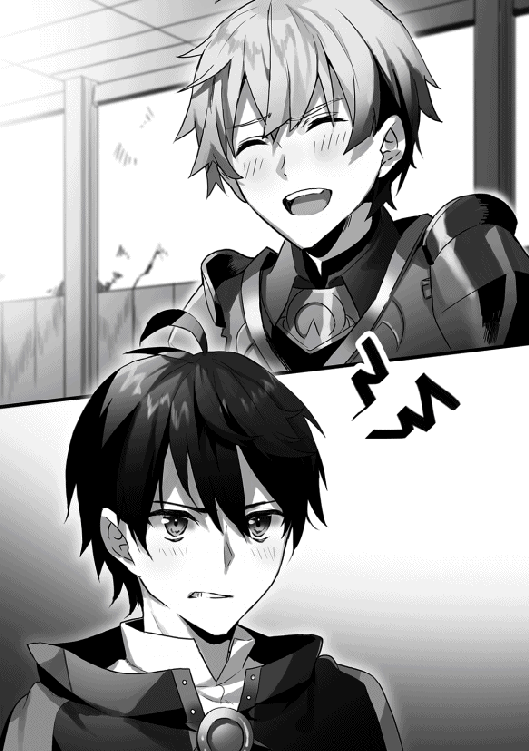
「まず最優先なのは、前衛を引き受けてくれる剣士。僕は魔法を使えるけれど、接近戦は不向きなので、あいつの近接系神秘に対応できるような実力者がほしい。もう一人、戦闘の推移を見て、適切な指示を出せるような判断力に優れたサポート役がいてくれれば助かります。僕は詠唱に専念したい。あとは、僕と同じように倍数魔法を使える数人の魔法使いがいれば......勝機はぐっと増すはずです」
騎士ジークはかすかに顎を引いた。
「適任は......少ないな。私も剣術に才があるわけではない。そして、神秘使いとの戦闘経験をもつ魔法使いは、多くない......」
「ふふ......っ、くふふ......っ」
笑い声を殺せていないプロパに、本気で魔法を撃ち込みそうになって、僕は理性で制する。
騎士ジークも諭すような視線をプロパに投げつけながら、言った。
「こちらから追加で補足できる情報としては、前回の反攻作戦の際に、ミシアの使徒が七つまで神秘を連続で行使したという事実、くらいか」
「......現状では、これ以上の議論は時間の浪費だと思います」
僕はそう言って、もう一つの問題に触れた。
「それで、最後の王女の件は......？」
ぴたり、とプロパの笑い声がやんだ。
同時にテーブルを緊張感が駆け抜ける。
「......忌々しい王女だよ......」「あの娘が寝返らなければ、魔導器は我らの手にあった」「おい、お前、タカハ様は......」
すぐに僕は気付く。
革命軍の誰もが、憎悪によく似た感情を、ラフィアに向けていることに。
すっとこめかみのあたりが冷え込んだ。
それは──怒りだった。
だが、分からない。
僕は何に対して怒っているのだろう。
だって、革命軍の魔法使いたちの言い分は全て、正しい。
ラフィアが敵に加担しなければ、魔導器は革命軍のものとなっていたはずなのだから。
「タカハにとっては辛い話となるが、報告をまとめてある。聞いてくれ」
騎士ジークが僕に着席を促しつつ、立ち上がった。
「ピータ村でゲルフ殿が育てた少女、ラフィアは先代国王陛下が側室に生ませた娘である可能性が高い。彼女は、王都陥落の直前、敵国の兵士に捕らえられ、そして、王都侵攻の際に、国王陛下が使用する魔導器に対抗する目的で、ミシアの使徒に利用された」
『魔法の国』の王族にしか操ることができない、古代の遺産。それが魔導器だ。当然、王族の血を引いている彼女を魔導器は攻撃することができなかった。鈴木はそんなラフィアを雨よけの傘のように使い、王都に侵攻した。それが、王都陥落の最大の理由だ。
「教皇は王都を制圧したのち、王太子をはじめとして王家に連なる人物を次々と処刑した。......ラフィアがその処刑を免れたのは、恐らく、神聖軍に協力するという条件をのんだからだろう」
騎士ジークは地図の上で王都を指さした。
敵の規模を示す赤いマーカーの中に、白いマーカーが一つ、置かれている。
「現在、王都はラフィアが行使する魔導器による強力な防護障壁で覆われている。それを突破することが、現在の革命軍の戦力では困難だ。あの障壁は、恐らく『信仰の盾』以上に強力な防御性能を有している」
僕は手を上げた。
「王都の地下には秘密の通路が用意されていると聞いたことがあります。それを使って侵入すればいいのでは？」
「......先の反攻作戦で、それは使用した」
そういうことか、と僕は内心に納得する。
そして、脳裏にラフィアと最後に会話したあの日の記憶がよみがえった。
弓を背負い、他の村人の代わりに、招集の数あわせとなることを決めた少女は、自信に満ちた表情で旅立っていった。そして、鈴木に捕らえられ、今は王城でその血を利用されている。
かすかに、違和感があった。
鈴木は『魔法の国』の王族を殺した。その血脈を断つことが、この国の終焉の一つを意味するからだ。だが、ラフィアは殺されなかった。それはラフィアが裏切ることを──神聖軍に協力することを決めたから。
客観的に見て、筋は通る。
だが、二人の登場人物の性格を知っている僕にとって、どこか違和感がある。
鈴木は......僕と同じく数学の道にいた人物だけれど、その行動原理は対照的だ。僕が理論を積み重ねることしかできないのに対して、鈴木はまるで答えを含んだ概念をまるごと切り取るように、超越的な理解から結論を迎えに行く。それはあいつの性格にも反映されていて、合理的とは思えないような行動をとることも多い。......単純に、あれだけの才能を持ち合わせながら、なんで努力をしないのだろうとか。
そういう意味で、王族の処刑を完遂しないのは、僕にとっては納得できない。......まあ、その気まぐれのような何かのおかげでラフィアの命が救われているのだから、文句を言う方がおかしいのだけれど。
そして──ラフィア。
違和感は、どちらかというとこっちの方が強い。
あの、自分の優先順位が低くて、他者を優先してしまうような少女が、果たして命乞いなどするだろうか──
分からない。
もともと、僕には人の心の動きなんて分からないんだ。そんなもの不要だと切り捨ててきた。今でもそう思うことがある。
......やっぱりダメだな。考えるだけ無駄かもしれない。
この違和感は疑念としておいておいて、僕は現状を見据えなければならない。
ラフィアが生きている。生きて、敵に利用されている。そして、ラフィアの命を鈴木の手のひらが握っている、ということ。
「──現状の確認は以上だ。まとめると、今後の革命軍の行動方針は次の二つに集約できる」
騎士ジークが教師のように厳かに言った。
「タカハの対訳の力を広く、迅速に魔法使いたちに広めること」
プロパが僕の発音をトレースしたように、『対訳』の知識を魔法使いたちに広める。それが革命軍の飛躍的な戦力増強につながる。
「そしてもう一つは、神秘使いに立ち向かえる戦士を集めること」
神秘使いは魔法を無効化する『信仰の盾』を持っている。遠距離から大量の魔法で圧倒するのは難しい。たとえ、僕が倍数魔法の対価となる精霊言語を広めたとしても。
神秘使いとの駆け引きの中で、その『盾』の向こう側に魔法を放り込む。それはとても高度な戦闘技術だ。一朝一夕で身につくものではない。
「神秘使いの討伐経験をもつ大魔法使いたちは、王都近くの『大監獄』に収容されている。......ゲルフ様もそこに捕らえられているようだ」
「ゲルフが......！」
「ああ。生きているようだぞ。ゲルフ様のこと、しぶとく生き延びておられるはずだ。......いずれにせよ、『大監獄』は王都に近すぎる。まだ到底手を出せない」
そこでだ、と騎士ジークは王都に置いた人差し指をすっと移動させた。その指がぴたりとある一点で止まる。かつての国境線の一点──そこには、一つの城塞が描かれていた。
「......ここは──」
「密偵が一つの情報を入手した。捕虜となったかつての騎士たちが、恐らく魔法の能力を解明するための実験材料として、まとめて敵国の首都に移送されているらしい。かなり確度の高い情報だ。その経由地点がここ。近日中に通過する」
ビルススの哨戒砦の位置を確認する。......わずかに南下すれば、すぐにたどり着く地点だ。
かつての騎士たちは戦場で先陣を切り、神秘使いと戦い続けてきた。彼らを奪還することができれば、革命軍は大幅に戦力を強化できる。
「思い出の地には、お前を待っている人がいるかもしれないぞ、タカハ」
プロパが茶化すような口調で言い、その意図が分からなかった僕は首をかしげる。
騎士ジークもまた唇の端を持ち上げて補足した。
「移送される騎士たちの中には、女騎士が混じっていたらしい。褐色の肌、アメジストの瞳、流星と同じ色の銀髪をもつ女騎士がな」
「まさか！」
その騎士とは彼女なのか。
だとするなら、この地というのはあまりに因果な話だ。
「出立は二日後の早朝だ。作戦にはタカハも参加してもらうぞ。いいな？」
騎士ジークがきっぱりと宣言した。
「敵部隊を強襲し、騎士たちを奪還する。──場所はローグの古城だ」
「土属性使いの場合、優秀な攻撃魔法である『土の七番』の倍数魔法が、最優先になると思います。『土の七番』の対価は六。〝今〟と〝眼前に〟は必ず追加するとして、合計十マナ。六倍すると考えれば──」
「............三倍した十七と九だ！」
「そう。〝六十〟。これがその発音です。同時にもう一つ。最優秀の防御魔法『土の十一番』を〝堅牢なる〟で補強し、〝今〟、〝彼方に〟を追加したものの対価は？」
「......ええと、三、四、二、三で......十二」
「それを五倍してみてください」
木の実をいくつか並べて考え込んでいた魔法使いたちの一人が、ああっ！ と声を上げた。
「一緒になる！ 三倍した十七と九だ！」
「まだまだ組み合わせを作ることはできます。大地の槍を生み出す『土の二番』、対価は五ですが、そこに〝今〟と〝彼方に〟で対価は十。その六倍魔法。
あるいは、狭い範囲の地震を引き起こす『土の四番』、対価は十二に、〝彼方に〟の三マナを加えると十五。その四倍魔法」
「ぜ、全部、三倍した十七と九になるんですかい？」
「なります」
というわけで、と僕は数名の魔法使いたちに顔を向けた。期待に満ちたいくつもの瞳と目が合う。
「〝六十〟。......まずはこの発音を習得しましょう」
土属性は六十、水属性は四十八、火属性も四十八、風属性は六十──それがもっとも便利どころの単位魔法を倍化して活用できる対価だと分かり、僕はそれを順番に魔法使いたちに広めた。
それぞれ一時間ほどのレクチャーを行い、革命軍に所属する魔法使いたちは発音を身につけることに成功した。
これを僕がこの国の全ての魔法使いたちに向けて広めていく──必要はもちろんない。僕が教えた魔法使いたちが、別の魔法使いたちに広めさえすればいいのだ。僕の『対訳』から取り出した倍数魔法の知識は、ネズミ算のように次々と広がっていくだろう。神聖軍が気付かないうちに、魔法使いたちの戦力は数倍に跳ね上がることとなる。
知識は武器。
ありふれた言葉だけれど、実感をともなって認識したのは、今回が初めてだった。
「ご苦労だったな、タカハ」
声をかけられ、アジトの食堂の隅で突っ伏していた僕は顔を上げる。
「ほら。貴重品だぞ」
プロパが投げてよこしたものを僕は宙で掴む。ごつごつしたそれは木の実だ。イェナの実。その見た目とは裏腹に、中にはみっちりと甘い果汁が隠れている。......僕の好物だ。
確かにこの地方では全然見かけなかった。僕は早速その殻をナイフで割り始める。
プロパが僕の隣の椅子に座り、どっかりと身を下ろした。ごつりと硬質な音を立てて、プロパはミスリル剣をテーブルに置くと、それを抜剣して磨き始めた。仕草に合わせて、鎖帷子がじゃりじゃりと音をたてる。
「......それ、いつも着てるの？ 重くない？」
「いざというときにすぐに戦いたい。起きているときは身につけるようにしてるんだ」
当然と言わんばかりのその口調には、ひねくれたトーンは少しも混じっていなかった。脳裏に幼年期の少年の姿がよみがえる。何にでも食ってかかり、皮肉めいた口調を投げてよこす少年の姿。
「プロパは、どうして戦っているの？」
「ん？」
僕の問いかけが唐突だったのか、プロパは剣を磨く手を止めて僕を見た。翡翠色の瞳は大きく澄んでいて、まるで吸い込まれそうになる。
「オレが、騎士だからだ」
「......騎士」
「ああ、そうだ。オレはムーンホーク領で最年少の正騎士に任ぜられたんだよ。苦しんでいる民がいるんだ。救わないわけにはいかない」
正直、理解することはできなかった。顔も見たこともない民のために戦う決意。そういう心は、僕は一生かかったって身につけることができないだろう。
──だが、その信念をプロパがとても大切にしているということはよく分かった。
「騎士を目指したのは、最初は......別の理由からだったんだ」
ちらりと、一瞬だけ、プロパは探るような視線を僕に向けた。
「けど、ジーク様に出会って考えが変わった。ジーク様もオレたちと同じ、辺境の魔法奴隷たちの村の出身なんだ。けど、貴族出身の騎士たち以上の実力が認められて、次席正騎士まで上り詰めた。......オレたちが知っている騎士って強いけれど傲慢な人がほとんどだったよな？ けど、ジーク様はいつでも民のためを思って、そのために剣と魔法を磨いていた」
職務に忠実な警察官のようなあの騎士は、たしかに、僕たちに優しかったように思う。表面上はピータ村を担当する一人の騎士として厳しく、職務に忠実だったけれど、救われたことが何度もある。
「憧れてるんだな、騎士ジークに」
「ああ。だからオレは......もう少し強くなりたい」
プロパは剣にかけていた布を払った。
手入れを施された白銀の刃は、薄暗いランプの光の下でも、燦然とした輝きを放っている。研ぎ澄まされたその刃が眩しくて、僕は目を細める。
「だから、タカハ」
プロパは手早くそれを鞘にしまうと、まっすぐに僕を見て、言った。
「オレに魔法を教えてくれ」
「でも、さっきの水属性の話を聞いて──」
「いや」
僕の言葉を遮ったプロパは、まっすぐに僕を見つめたまま言う。
「さっきの〝四十八〟の発音だけじゃ足りない。もっと発音を教えてくれ。それから、魔法の活用法を。オレは水属性しか使えない。それを前提で、状況に応じてどんな魔法を選べばいいのか、大魔法使いになったお前の考えを教えてほしい」
「......何を言い出すかと思えば」
「お、おい......っ」
立ち上がった僕に、プロパは戸惑うような視線を向けた。
その表情がおかしくて、僕はかすかに笑む。
「プロパはもうメンバーのつもりだから」
「なんの話だ？」
「決まってる。鈴木のもとに手が届いたとき、僕と一緒に戦ってくれる少数精鋭のさ」
瞬間、プロパの表情が一瞬で明るくなった。
「あ、当たり前だ！ オレを差し置いて他に誰がいる!?」
「ほら行くよ。部屋の中で魔法なんて使えないだろ？」
「ああ......！」
僕たちはなぜか競うようにアジトを走り抜け、寒風が吹きすさぶ屋外へ飛び出した。
第四章：「なに一つ守れなかったあなたに」と孤高の剣士は自嘲する。
──じゃらり、と鎖が音を立てた。
重く、冷たい、金属の鎖だ。
それは両手にかけられた金属の輪につながり、金属製の檻の底と結ばれている。巨大な獣ですら食い破ることができないような、物々しい拘束だ。
（こんな厚遇を受けているのは、どうやら私一人のようですね）
とベアトリーチェは内心で呟いた。
ベアトリーチェを捕らえる檻は、さらに厳重なことに、どこかの地下室に押し込まれていた。
光が差し込むのは、天井のわずかな切れ間だけ。今は深い紺色の空だけを仰ぎ見ることができる。
その切れ間からは、肌を切り裂く刃のような冷気が忍びこんでいる。身にまとう粗末なティーガと檻の中に投げ込まれたボロボロの毛布ではしのぎきれないほどの冷気だ。檻に届けられる食事はいつも決まって、乾いてひび割れたいくつかの木の実だけ。捕らえられてから幾日が過ぎたのか、数えることさえ億劫になるほどに、ベアトリーチェは消耗していた。
空の深い紺色が、ゆっくりとその色を淡くしていく。
「......」
ベアトリーチェは毛布を払いのけ、ゆっくりと立ち上がった。
もうすぐ夜が明ける。この時間は、見張りの兵士たちがもっとも手薄になる。
音を立てないように、鎖をかけられた両腕を交差させ、檻の中に置かれたベッドにその一部を絡める。あとは思い切り引くだけで、その鎖の交点にすべての負荷がかかる姿勢だ。
目を閉じて、自分の身体に意識を集中させる。
息を吸い、すべてを吐ききる。
全身を一つの弓のようにしならせ──そして、解き放った。
「......は──ぁ......っ!!」
裂帛の気合いとともに、鎖がまるで悲鳴のような軋みを立て始めた。
だが、それ以上に、骨が、筋肉が、ぎりぎりと軋む。鉄輪がまるで二本の剣のように手首に食い込んでくる。力を込められた全身の筋肉がみるみるうちに熱を持ち、一瞬で大量の汗が噴出する。
その時間は、ごく短いようにも、あるいは永遠のようにも感じられた。
気がつくとベアトリーチェは仰向けになり、檻の底から明るんでいく空を見上げていた。
じゃらり、と鎖が音を立てる。
幾度となく全力の負荷をかけ続けてきた部位の鎖の輪は、見張りの兵士が気付かぬうちに大きくたわみ、もうすぐ引きちぎれようとしていた。
この鎖さえ断ち切れば、檻はなんとかできるだろう。その後は──
（その後は──？）
心の中で、もう一人の自分が冷酷な笑みとともに言う。
（この鎖を破って、あなたはどこに行こうというのですか？）
............決まっている。
逃げ延びて、自分が生まれた国へ戻るのだ。
そうしなければ、意味がない。
（ふふふ......っ。ふふふふふ......っ！）
心底おかしいというように、もう一人の自分はベアトリーチェをあざ笑う。
（参考までに教えてください。あの国のどこに、あなたの居場所があるというのでしょう？ その、呪われた両腕を持つ、あなたに──）
............やめて。
（戦うためには剣を折らねばならないあなたに）
......違う。
（結局なに一つ守れなかったあなたに）
私は全力で戦った......！
（......そもそも、あなたという個人を認めようともしなかったあの国が、なぜあなたを受け入れるなどと──）
やめて──！
「──食事だぞ、化け物」
声がする一瞬前に、ベアトリーチェはその気配に気付き、檻の中で礼儀正しく座っていた。
檻の向こうに二人の兵士が立つ。黒い鎧を身にまとった、敵国『鉄器の国』の兵士たちだ。一人の男がおそるおそる檻に向かって食べ物を滑り込ませた。
「とって食べたりなどしませんよ」
「どうだかな？ お前がその両腕で信徒たちを引き裂くのを見たっていうやつが何人もいるんだ」
「光栄な噂ですね」
「......ちっ......」
「なあ、おい」
それまでじっとベアトリーチェを見つめていたもう一人の兵士が、同僚の肩をつついた。
「いいだろ？ ちょっと見張っててくれよ」
「お前......正気か？ こいつを捕まえるのに信徒のみなさんがどれだけ苦労したか分かってんのか？」
「よく見ろよ。そのおかげで今は両腕をしばられてる」
短髪の男が再びベアトリーチェを見つめた。
その視線に、どこか熱っぽさと、粘つくようななにかを見つけ、ベアトリーチェはその視線の真の意味に気付いた。
「とんでもなくいい女だぜ。黒い妖精種なんてみたことない。いいからほら、鍵貸せよ。そっちから鎖を引っ張っててくれるだけでいいから。......なに、すぐ終わるって」
「......死んでも知らねえからな」
鍵が、短髪の男の手に渡る。
（......これが末路だ）
村を飛び出し、剣を磨き、必死に騎士になって、それでも何一つ守ることができなかった私に与えられる罰。異国の兵士の慰み物にされる運命。
鍵を手渡した兵士が檻の外へ強く鎖を引き、鉄の棒でそれを絡め取る。ベアトリーチェはまるで磔にされるように、檻に両腕を固定される。
ぎぃぃ......とさび付いた音を響かせて、檻が開かれる。獰猛な獣と同じ目をした兵士が、ゆっくりと近づいてくる。
「ちょうどよかった。退屈していたところですから」
「その強気がいつまでもつか、楽しみだな」
くつくつと喉の奥で笑った男は、ベアトリーチェの首元に指を這わせた。毒々しい色の虫が幾匹も這いずり回っているかのようなおぞましい感覚に、全身が総毛立つ。
（殺してしまえばいいのに）
冷酷なもう一人の自分が、あざ笑うように言った。
（その自由な両脚だけでもこの男を倒せることくらい、分かっているでしょう？）
分かっている。
だが、そうすれば間違いなく、ベアトリーチェ自身も殺されてしまうだろう。今の自分は敵にとって、多少興味深い点がある捕虜でしかないのだから。
ふと、思う。
逆に、なぜ生きているのだろう。
なぜ私は生きようとしているのだろうか。
尊厳を汚されるくらいなら、その前に潔い死を選べばいいはずなのに──
大きな男の身体が覆い被さってくる。熱を帯びた吐息が頬をなぶる。
瞬間──走馬燈のように、いくつもの記憶が弾けた。
生まれた村。ただ穏やかだった幼い日々。
それが反転した、幼少期。
黒い肌を持つ妖精種は呪われている、と蔑む村人たちの視線。それに心を蝕まれた両親の最後の表情。
魔法の適性はなく、ただ己の両腕に宿った大地を引き裂くような力だけを頼りに、騎士団の門を叩いたあの日。
盗人のように剣術を磨いた従騎士の時代。投げかけられたいくつもの侮蔑を力にして、序列の階段を駆け上った日々。
剣術の指南役に恐るべき若さで就任したベアトリーチェに向けられた、尊敬とそれを遙かに上回る恐怖の瞳。
焼け落ちた王都。そして参加した名もなき反抗勢力。必死で戦おうとした彼女を待ち受けていた、剣を使い潰してしまうという現実。補給の望めない反抗勢力では、自分が却って足を引っ張るだけだという自覚。──大量の敵を引きつけ、そして投降したあの日。
「泣けよ。その方がぐっとくるぜ」
ああ。
そうか。
私はずっと、居場所を探していたんだ。
ただ力ばかり強いこの両手でも、戦うことで誰かを守ることならできる。
恨む気持ちも、少しはあるけれど──でも、全部じゃない。
そうして守られた誰かがどこかで幸せに笑ってくれるのなら、それでいいと思っていた。
騎士になって、戦場に立っている間、私は満たされていた。誰かの盾になることができる。そのためにこの両腕を振るうことが、なによりの私の願いだった。
でも──どれほど願っても、この両手は剣を粉砕してしまう。力を込めれば込めるほどに。確実に。
こんな歪で、弱くて、狂った私を、受け入れてくれたのはたぶん──彼だけだった。
「......タカハ......くん............」
「あははは......っ！ いいね！ 最高だ！ しっかりお詫びしとけよ、そのタカハくんになぁ！」
目を強く閉じる。
『詫びる......？』
まぶたの裏側にあの不敵な笑みがよみがえった。
『なんでベアトリーチェが僕に謝らなくちゃいけないのさ？』
（......そうですね。きっとあなたはそう言うでしょう）
もう一度だけ、会いたい。
ともに戦場を駆け抜けたあの日々のように。
（......それは叶わぬ望みでしょう。慣れています。汚い言葉を投げかけられることには。だからきっと今からされることも同じ）
全身の力を抜く。
抵抗を諦めた────その瞬間だった。
「なんだ......？ 揺れたか？」
腹の底に響くような爆発音が、その地下室を確かに揺らした。
「これ......外からだぞ！」
兵士たちが動揺している間にも、その爆発音は頻度を増しながら近づいてくる。にわかに建物の中が騒がしくなり、慌ただしく兵士たちが動き始める音がする。
「敵襲──ッ!!」と遠くから声が聞こえた。
ここは神聖軍の拠点だ。
そこに攻め入ろうとする勢力は、旧『魔法の国』の反抗勢力に他ならない。
「......ア............チェ......──ッ！」
続けて地下室の切れ間から入り込んできたそのかすかな声に、ベアトリーチェの肩がぴくりと跳ねた。
「......ベアトリーチェ......──ッ！」
「あ......あぁ......っ！」
聞き間違えるはずもない。
あるいは、極限状態の自分が受け取ったリアルすぎる妄想でも構わない。
その声は──あの黒髪の青年の声だ。
「ベアトリーチェ──ッ！ どこ──ッ!?」
まるで建物の全体を揺らすかのようなその声量は、恐らく魔法で拡張しているのだろう。三度目のその声を聞いて、ベアトリーチェは確信する。これが妄想でも幻聴でもなんでもないことを。
「馬鹿な魔法使いどもが攻め込んできたんだ！ くそっ、戻るぞ！」
「──どこへ戻るつもりですか？」
「あ？ ぎぁっ......!!」
目の前の短髪の男の胴を両脚でがっちりと挟み、ベアトリーチェはそのまま全力で身をひねった。解き放たれた圧倒的な力は、残像を残すほどの速度で男の身体を上下に反転させ、その頭部を檻に叩きつける。嫌な感触とともに、男が昏倒したことを知る。
「き、貴様ぁ──ッ！」
ぎんっ、と鋭い金属音をまとって、ベアトリーチェの鎖を引き留めている男が剣を抜き放った。
背後を振り返り、何度も何度も負荷をかけた鎖の輪が絶妙な位置にあることに気付いたベアトリーチェは、そのまま力任せに鎖を引いた。
「はぁぁぁぁ──ッ!!」
鎖が強く軋み、まるで一本の縄のように伸びきった直後。
澄んだ高音とともに、戒めの鎖が一本、断ち切られた。
「っ......！」
ものすごい勢いで跳ね戻った鎖が、檻の向こうからベアトリーチェを刺し殺そうとしていた兵士に襲いかかる。今のうちに、もう一本。引き裂けるという確信しかしなかった。
捕らわれてからずっとぼんやりとしていた意識はこれまでになくクリアで、心臓が新しい命を得たとばかりに全身に力を送り込む。
「すぅ............はぁっ！」
がきんっと再びの金属音が響き、ベアトリーチェは戒めを解かれたことを知った。
「くそっ、ふざけやがって、お前はここで......」
檻の入り口に回り込んできた男は、呆然とした表情で足を止めた。その視線がいくつかのポイントを移動し、一つの事実にたどり着く。
両の手首から血を流しているが、今のベアトリーチェを拘束するものは何もないという事実に。
「......鞭はそこそこ程度の使い手ですが」
ベアトリーチェは両手の鉄輪から伸びる二本の鎖を振り回し、試すように内側から檻に叩きつけた。
たったそれだけの仕草で──べきゃり、と同じく金属製の支柱が軋む。
「兵士さんを退屈させることはないでしょう」
「うわああああああ──っ！」
闇雲な兵士の突撃は、正直、まるで止まっているように見えた。
手加減に手加減を重ねた一撃を、正面に放つ。
狙いと寸分違わず、意思を持つ一匹の蛇のようにしなった鎖が、兵士の右手を打ち据えた。
絶叫。取り落とされる剣。
「せいっ」
前後不覚に陥った兵士を手刀で昏倒させる。
地下室に動く気配は残っていなかった。
ベアトリーチェは足下に転がっていた剣を拾い上げる。兵士に支給される剣だというのに、その刃は磨き上げられていて、刃こぼれもなさそうだ。（さすがは『鉄器の国』ですね）と内心で呟き、昏倒した兵士からベルトを奪い、それを肩から腰に回す。先に気絶させた兵士からも同じように剣を奪い、その二本をベルトに通した。
地下室に響いてくる戦闘の音は、いよいよ近づいてきている。
ベアトリーチェは二人の兵士を閉じ込めた檻に鍵をかけると、地下室を横切り、上階への階段へ進んだ。
心臓が高鳴っている。
足が階段を次々と蹴り飛ばしていく。
救援部隊が来ている。ベアトリーチェと同じように敵国に送られようとしている騎士たちが、この拠点のどこかににいるはずだ。
階段を上りきる。
そして、そこに見慣れた光景が広がっていることに、ベアトリーチェは半ば愕然とし、半ば納得した。
石造りの広大な廊下と、開かれた城門。
ここは、『魔法の国』が敵軍に占拠される前、最後に戦った地──ローグの古城だったのだ。
「なっ！ 貴様は──！」
金属の鎧が互いにぶつかる音を響かせ、慌てた様子で兵士たちが飛び出してくる。
ベアトリーチェの瞳は一瞬で敵対戦力を分析した。数は六。槍が四本、戦斧が一本、剣が一本弓はなし、神秘使いもいない。
戦闘か、撤退か。
──迷わず前者です。
ベアトリーチェは、捕らえていたはずの『化け物』と対峙した衝撃から動けなくなっている敵兵士たちの集団に、一気に飛び込んだ。
「やあっ！」
槍兵がそのリーチを生かした防御態勢を構築する前に、両腕の鎖を横薙ぎに払う。その衝撃で、冗談のように二人の兵士がはじき飛ばされ、ベアトリーチェは間合いに踏み込んだ。
「この人数なら......！」
剣が、斧が、槍が一斉に襲いかかってくるその光景は──あまりに遅い。止まっているようにさえ見える。
鎖が踊り、剣が舞う。一本の剣は敵兵士の肩鎧を粉砕するのと同時に砕ける。後ろから斬りかかってきた戦斧を鞘で払い落とし、戦闘力の塊になったベアトリーチェは本能に従って戦い続ける。
ものの十秒で敵兵士の集団は完全に沈黙していた。
代償として、左足の付け根を少し深くやられた。ティーガの裾を切り裂いてきつめに巻き付ける。失ったものは血液だけではない。最初の兵士から奪った剣はすでに二本とも、折れていた。
「......はっ......はっ......」
息を整える。自分の身体が重い。食糧は満足に与えられていなかった。そのせいで消耗しているのだろう。
だが──その歩みは止まらない。
行かなくては。
帰らなければ。
彼の元へ。
倒した兵士たちから三本の剣と一本の戦斧、二本の槍と大きな鍵を広い上げ、ベアトリーチェは廊下を見渡す。他の兵士たちの姿はない。おそらく、正面の戦闘にほとんど全員が駆り出されているのだろう。
ベアトリーチェは廊下に素早く視線を走らせた。一際頑丈そうな扉を一つ見つけると、駆け寄る。ダメで元々と差し込んだ鍵が、かちりとその扉を開かせたとき、ベアトリーチェは生まれて初めて精霊に感謝の念を捧げた。
「うおおおお──っ!!」
瞬間──中から男が飛び出してくる。手に持つ棒きれは箒を解体して作り出した即席の槍だろう。ベアトリーチェはその一撃をいなし、廊下に飛び出した男の姿をはっきりと見る。──ぼろぼろにすり切れた黒いコート。黒色騎士団に所属する証。
「落ち着いてください！ 私も騎士です！」
その鋭い一喝で、薄暗い部屋の中の気配がさっと変化した。
「......まさか、ベアトリーチェ殿か......？」
部屋の中から確かめるような声と視線が向けられる。
薄暗い部屋の中は、こもった臭気と熱気に満ちていた。きつく両腕と両脚を縄で縛り付けられ、猿ぐつわをかまされた騎士たちが押し込められている。近くにいた三人の騎士の拘束を切り裂くと、ベアトリーチェは剣を次々に手渡した。
「これを使って。手早く全員を逃げられる状態にしてください」
「あ、ああ！ 承知した！」
「それと、鎧を持っている方がいれば私にください。大至急」
言いながら、部屋の隅に落ちていた鎖帷子を手早く着込む。脇止めを結ぶ時間すらもどかしい。
「し、しかし、外は戦闘の只中だぞ!?」
「だからこそです。......あ。あなたのその胸当て、お借りします」
「......どういうことだ？」
「我らの味方となる勢力は、夜明けと同時にこの城を襲撃しました」
徐々に立ち上がり始めた騎士たちに向かって、ベアトリーチェは最大の懸念を口にする。
「裏を返せば、恐らく少人数による奇襲だった可能性が高い。......にも関わらず、私たちが捕らわれているこの廊下にまで、味方が到達していないということは──」
目の前の騎士がはっとした表情になる。
「押し切れていない。いいや、押し返されている可能性が高い、ということか」
「はい」
ベアトリーチェは装備を点検する。額当て。鎖帷子の上に胸当て、右手だけの手甲、腰当て。足はむき出しだが仕方ない。剣は騎士たちに手渡したから、武器は槍が二本、戦斧が一本。
「私は城前の戦闘に加勢します。魔法で戦える自信のある方々、ご助勢をお願いします」
「──心外だな、ベアトリーチェ殿」
最初に飛び出してきた黒コートの騎士が、やつれた顔に爛々と瞳を輝かせている。
「一度は全員が諦めた命。ここで引き下がる道理など、どこにもない」
「「「「応──ッ!!」」」」
騎士たちの低い声がベアトリーチェの腹の底を揺さぶった。
「では、すぐに出ます。私が先陣を切る」
言うが早いか、ベアトリーチェはその部屋を飛び出した。いくつもの足音がベアトリーチェに続く。石造りの廊下は長く伸び、遠くに城扉が開いている光が見えた。整然と、騎士たちは走る。出口へ向かって。
「戦闘準備──！」
ベアトリーチェの一喝とともに、騎士たちは光の中へ飛び出した。
光量の差に目が慣れるのに、一秒。
ローグの古城の城門の前は、両側を崖で挟まれた幅の広い下り坂になっている。高地を自動的にとれる防御側が圧倒的に優位になる地形だ。そこには突撃防御用の柵が幾重にも敷かれ、その裏側から弓兵たちが矢を連続で放っている。
戦闘の最前線は、はるか下方。神秘が発動する際に発生する純白の光と、無数の魔法がぶつかり合う。その上空から矢が射かけられている、という状況だ。
ベアトリーチェの悪い予感は的中した。
──味方はどうやら明らかな劣勢であるようだ。
「な──っ！ 貴様ら──!?」
敵国の弓兵たちがこちらに気付き、狙いを慌てて振り向けてきたときには、大勢は決していた。
火矢、雷槌、濁流、縛砂──ベアトリーチェの背後から騎士たちの詠唱した無数の魔法が放たれ、まったく用意のできていなかった弓兵たちの大部隊を後方から直撃する。各種の爆音が敵兵の悲鳴とともに咲き乱れ、敵部隊は混乱のるつぼへ放り込まれた。
その様子を──ベアトリーチェはほとんど認識していなかった。
ただ、前へ。
衝突の最前線へ、突き進む。
立ちふさがる黒鎧の兵士に鎖の一撃を放ち、遠くから狙撃しようとしている弓兵に槍を投擲する。その槍が兵士の胸に突き刺さるよりも早く、ベアトリーチェは戦斧で二人の兵士をすでに仕留めている。
防御柵を飛び越え、スピードを落とさないまま、落ちていた剣を拾い上げる。鞭の間合いを理解し、至近距離で勝負を仕掛けてきた重鎧の兵士の脇腹に、剣を思い切り撃ち込んだ。重鎧が膝を折ったその瞬間に顎を蹴り上げ、背負いの大剣を奪ってまた駆ける。
「やつだ！ やつを止めろ──！」
気付けば、敵兵士たちの包囲のただ中にいた。目の前を一本の矢が疾駆する。構うものか。
「はああ──ッ！」
裂帛の気合いとともに、包囲の一端に突撃する。突き出される幾本もの槍の穂先を瞬時に切り払い、その突破を抜ける。
「行け！ ベアトリーチェ殿！」
ついてきていた最後の騎士が、大火球の魔法で援護する。爆炎が敵の包囲を切り開き、その灼熱の隙間に、ベアトリーチェは飛び込んだ。
全身を熱が包み──抜ける、と。
目の前だった。
純白の法衣を身にまとう神秘使いたちが、幾人かの魔法使いたちを押し込んでいる。魔法使いたちは腕に黄色い布を巻き、一糸乱れぬ動きで反撃の詠唱を放っているが──敵の防御神秘を突破できていない。
「────！」
そして、ベアトリーチェは探し続けていた人影を、ついに見つけた。
魔法使いたちの最前衛。
ぼろぼろにすり切れた黒いローブを身にまとうのは、ローブよりも黒い髪と瞳を持つ、一人の青年だ。重厚な造りの杖を掲げ、なにか大きな物を背負ったまま、信じられない火力の魔法を立て続けに詠唱している。そのすさまじい詠唱がなければ、魔法使いたちの集団は敗走していたのかもしれない。──そう思わせるほどの倍数魔法。
だが、正面に向かって必死の戦闘を続ける彼は気付いていない。──人間離れした速度で回り込もうとしている一人の神秘使いの存在に。
瞬間、ベアトリーチェの両脚の下で、地面が爆発した。
景色が搾り取られるように後ろに流れていく。
もっと早く。早く......ッ!!
ベアトリーチェは大剣を両手で握り込む。
青年に襲いかかろうとしている神秘使いが、戦闘用のメイスを高く掲げる。
「......！」
ようやく、青年は至近距離に迫った神秘使いに気付く。
だが、神秘使いは、すでに人間離れたスピードで迫っている。
「────────ッ!!」
声にならない絶叫を放ちながら、ベアトリーチェはその二人の間に飛び込んだ。
がんっ！ と猛烈な金属音が響き渡り、ベアトリーチェの大剣は半ばからへし折れる。
そのグリップを──ベアトリーチェは手放していない。メイスの一撃はあまりに重かったが、ベアトリーチェはそのエネルギーの全てを両腕で受け止めていた。
「やぁ──っ！」
必殺のメイスの一撃を受け止められ、驚愕する神秘使い。その法衣の襟元を掴み、ベアトリーチェは勢いそのままに放り投げた。
「な、にぃぃぃ──っ!?」
信じられない風切り音とともに、純白の法衣がはるか遠方へ投げ飛ばされていく。
「──相変わらずいいタイミングだね」
その落ち着いた声を聞いた瞬間、心臓が一気にテンポを上げた。全力の疾走でも疲弊することなく全身に力を送り込んでいた心臓が、まるで狂ったように暴れ出すのを感じて、ベアトリーチェは戸惑う。
その動揺を上手く誤魔化せているのか確信が持てないうちに、ゆっくりと振り返る。
「......ぁ......」
穏やかに微笑むタカハがそこにいた。
「久しぶり、ベアトリーチェ」
タカハはぱちりと目を瞬かせる。
「なかなか扇情的な格好をしてるけど......それはまあいっか。ちょっと痩せた？」
自分の身体に意識を向ける。ぼろきれのようなティーガの上に急所を防御する鎧をまとっているだけに過ぎない。戦闘行動に支障はない。
「タカハくんも、素敵なローブが台無しです」
「なるほど。お互い見た目を気にしてる状況じゃないってことだね。うわっ......！」
そんなタカハの足下に上空からの矢が突き刺さり、二人は一瞬で戦闘態勢に戻る。
「今の矢は危なかった。......ええと、話は後回し。さっそくで悪いけど、ちょっと手を貸してくれる？」
「はい......っ！」
「じゃあ、これを」
タカハはそう言って、背負っていたなにか大きなものを地面に突き立てた。
包帯を幾重にも巻かれた巨人の腕のようなそれは武器だと、ベアトリーチェはすぐに直感する。
武器だとするなら大剣だ。それもかなり大きい。両手で振るうことが前提の特大剣といえるサイズの剣。
「し、しかし、私は剣を使い潰してしまうのです。タカハくんのその剣もまた、きっと......」
「知ってるよ。ベアトリーチェの両腕が、どれほど優れた力を秘めているかってことはね」
タカハはいつものように不敵な笑みを浮かべ、肩をすくめる。
「だからこれは、そんな君のための武器だ」
タカハはそう言って包帯を解いた。
ベアトリーチェは息をのむ。
姿を見せたのは、美しい剣だった。
素材は黄銅色の金属。かなり幅広かつ肉厚の剣で、緩やかに反っている。左右非対称だが、それが強度を何よりも優先した造りのためだろう。
「この、素材は......」
黄銅色の金属をじっと見つめるベアトリーチェに、タカハは頷きで応える。
「そう。『聖槍の乙女』ハーミリアが取り落とした大盾を入手して、僕が魔法で削り出した。ほんと大変だったんだよ。火属性の魔法程度の熱じゃ変形させられないし、信じられないくらい固かったんだ」
ベアトリーチェはゆっくりと剣を地面から抜く。重量は思ったほどではなく、むしろこの量の金属製だとするなら軽い方だろう。だが、その素材に脆いという印象は絶無。
「折れたらそれまで。またあいつから盾を奪って剣を作ればいい。──じゃ、行くよ、ベアトリーチェ」
言うが早いか、タカハは神秘使いの一人に突撃した。
ベアトリーチェは手の中で輝く黄銅色の剣を見つめ、葛藤を一瞬で振り払う。自分は剣を振るうときに加減などできない。そういう器用な人間でないことなど、知り尽くしている。──そして、その事実をタカハも理解してくれている。
託してくれたこの剣。使わない方が失礼というもの。
「──っ！」
両脚に力を込め、すぐにトップスピードに乗る。瞬く間にタカハを追い越す。その瞬間だけ、驚いた表情のタカハと目があって、ベアトリーチェは笑う。心臓が一拍を打つたびに、とんでもないエネルギーが全身に広がっていくかのようだ。
錯覚でもなんでもいい。
でも、今は、負ける気がしない。
「魔法さえ持たぬ身に、なにができる──！」
ベアトリーチェの姿を認めた神秘使いが遠距離攻撃系の神秘を解き放った。純白の羽毛のようなものが幾枚も周囲に拡散し、それが一斉にベアトリーチェに向かってくる。
見たことのない神秘だった。
だが、不安はこれっぽっちもない。
「〝ゆえに対価は 七十二〟」
バヂィッと大気を引き裂くような轟音とともに、雷撃属性の魔法がベアトリーチェを追い越していく。
タカハの放ったほとばしる稲妻は、まるで急速に成長する茨のように細く分岐し、無数に広がった輝く羽毛を次々と焼き尽くしていく。
その破壊の真ん中を、ベアトリーチェは突破した。腕や足を羽毛が切り裂いて過ぎるが、致命的なものはすべて回避。タカハが道を切り開いてくれる。
黄銅色の剣の向こうに怯える神秘使いの表情が写った次の瞬間には、ベアトリーチェは間合いに踏み込んでいた。
両脚から生み出されたエネルギーが腰を伝わって、剣先を疾駆させる。大気がうなり声を上げ、瞬時に神秘使いに襲いかかった。
すさまじい金属音。
敵も見事だった。恐らく視認できていないほどのスピードで振るわれた剣先に合わせるように、メイスを盾代わりとしたのだ。
ただし、残念なことに、そのメイスでは盾としてはあまりに力不足だった。
鉄の柄が大きくねじ折れ、衝撃が神秘使いの身体をくの字に曲げる。
「ぐはぁ......っ！」
痛打を叩き込まれ、吹き飛ばされてもなお、神秘使いは体勢を立て直そうとする。
すでにベアトリーチェは、その着地地点に回り込み、大上段に剣を構えいてた。
「や、やめろおおおお──ッ！」
「祈りなさい。あなたの神に」
ずばんっ、と板を割ったような音とともに、ベアトリーチェの剣は神秘使いの身体を袈裟懸けにしていた。
純白の法衣は濃い赤に染まり、その男の絶命を告げる。
「......はっ......はっ............」
二呼吸で息を整え、ベアトリーチェはゆっくりと黄銅色の大剣を掲げる。
その剣先の向こうに太陽が写り、まばゆい光を反射した。
神秘使いを両断した剣先も、メイスをねじ折った刃も、何一つ損傷していない。
「壊れない......。壊れてない......！」
間違いなく全力で振るった。普通の剣ならば間違いなく破損していた。その確信があるほどの全力の一撃だった。でも、この剣ならば応えてくれる。
「どうかな？ 気に入った？」
すぐ後ろに立っていたタカハに視線を合わせる。
だいたい同じくらいの高さにある黒い瞳は、どこまでも穏やかな光を湛えていて、次の瞬間──ベアトリーチェの視界がぐにゃりと歪んだ。
「な、なんで泣くんだよ......！」
感情が、胸の底で爆発する。
「分かり、ません......！」
「うわあっ......！」
戦闘中だということも全部忘れて、ベアトリーチェはタカハに飛びついていた。そのほっそりとした身体を壊さないように、苦しくないように、抱きしめる。かさかさとした黒髪が首筋に触れるが、そのくすぐったさすら心地よい。
分からない。
壊れない剣を手に入れたことが嬉しいのか。
それをタカハが手渡してくれたことが嬉しいのか。
もっと他の理由なのか。
でも、一つだけ確信していることは、これが歓喜の涙であるということ。
「よく分かんないけど、僕が言えることは一つだけだよ──君が生きていてよかった、ベアトリーチェ。こうして再会できたこと、僕はとても嬉しく思う」
タカハが不器用な手つきで、ぽんぽんと背中を叩いた。心臓が早鐘を打ち、切ないほどに甘い痺れが全身を包む。
「......！」
直後、目の前のこの青年が、自分よりもいくつか年下だということを思い出して、ベアトリーチェはまたしても理解できない動揺に襲われた。
タカハの身体をそっと離すと、その瞳をまっすぐに見つめる。
「私はタカハくんの戦絆です。あなたに近づくすべての脅威を退け、あなたの詠唱の時間を稼ぐ」
「頼りにしてるよ、最強の剣士さん。また、前みたいに僕を守って。僕は接近戦が全然ダメみたいだからさ」
二人は視線を同じ方向へ向けた。
「逃げ出してきた騎士たちが包囲されてる。彼らを救出して撤退するよ。準備はいい？」
目元をぬぐい、黄銅色の大剣を正眼に構える。
全身に決意がみなぎっていく。
守り抜く。
この剣で、この私が。
今度こそ、全てを。
「いつでもいけます。タカハくん」
「よし。じゃあ、突撃──！」
魔法使いと剣士は、同時に駆けだした。
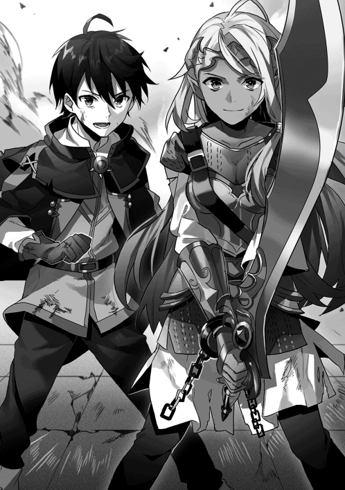
第五章：虹色の光が落ちて、僕は彼女と再会する。
たしかに見込みは甘かった。
でも、僕たちにそれ以外の選択肢はなかった。
「現状の戦力の半数を投入し、ローグの古城から騎士たちを奪還する。これを果たさなければ、いずれ革命軍は潰される。......厳しい戦いとなるだろうが、成し遂げてほしい」
険しい表情でそう言った騎士ジークの懸念は的中し、朝日と同時にローグの古城を奇襲した僕たちは、徹底的な反撃に押し返された。
現れた神秘使いは十一人。恐らく敵も革命軍の襲撃を警戒していたのだと思うけれど、それは想定をはるかに上回る数だった。加えて、弓兵たちによる苛烈な反撃とローグの古城が堅牢な城塞であるという事実を突きつけられ、撤退するしかないと誰もが諦めていた。
その大局が、たった一人の剣士によってひっくり返されるなんて、誰が想像できただろう。
「はあああぁぁ──ッ！」
敵の繰り出す遠距離攻撃系の神秘に怯みもせず、補助魔法によってさらに加速したベアトリーチェが一人の神秘使いに距離を詰める。黄銅色の大剣が二度翻り、神秘使いが倒れている。瞬時にその地点に向かって、複数の神秘が炸裂するが、どういう動体視力をしているのか、その全てを避けきり、ベアトリーチェは破壊の限りを尽くしていく。なんていうか、将棋の飛車や角行を人間にしたらこんな感じになるんだろうな、っていうイメージ。
僕にできることは、頼れる最強の剣士様にかけたいくつかの補助魔法が切れないようにキープすることと、上空から襲い来る鉄矢を迎撃し続けること。あとは応援することくらいだった。
僕が二人を倒し、革命軍の本隊が一人、ベアトリーチェが五人を倒して、神秘使いは三人にまでその数を減らしていた。全員がベアトリーチェを相手取ることで手一杯になっている。
となれば。
フリーになるのは、プロパが指揮する革命軍の本隊だ。
「土属性班、回路のいっぱいまで『土の七番』──！ 弓兵部隊を叩け！」
直後、無数のとしか表現しようもないほどの岩塊がこちらの陣営から放たれた。放物線を描きながら飛んだ岩塊は、敵が古城前に敷いた柵を飛び越え、弓兵たちに直接襲いかかる。
「タカハ！ 教官とともに神秘使いたちを抑えてくれ！」
「分かった！」
剣を高く掲げたプロパは、指揮旗のようにそれを鋭く振り下ろした。
「全隊！ 前進するぞ！ 包囲されている騎士たちを奪還する！」
プロパの号令に従って、魔法使いたちが一斉に突撃する。
空を埋め尽くすほどの矢と、それに対抗する各種の攻撃魔法が入り乱れ、戦場には爆音と轟音と悲鳴と怒号があふれかえる。
「甘い......！」
ベアトリーチェが叫びながら黄銅色の大剣を横薙ぎに振るった。敵の神秘使いの『信仰の盾』による防御に叩きつけられたその大剣は、『盾』を砕き、突き進む。
必然、その剣を受け止めるものは、神秘使いの肉体だけだ。
「ぎぃあぁぁぁぁ──！」
人間の声とは思えないような絶叫を放ちながら、腹のあたりを深く斬られた神秘使いが倒れ込む。
「〝土─二の法─今─彼方に ゆえに対価は十〟」
その神秘使いにトドメを刺すのは僕の役目だ。
最速で詠唱を終えた『土の二番』が神秘使いの倒れた地面から飛び出し、その命を奪い去る。
「さすがです......！ タカハくん！」
「......」
再会したベアトリーチェは多少痩せていたし、傷だらけだったし、両腕にじゃらじゃらと鎖をつけていたし、なんというかボロボロでギリギリの服装だったけれど、それ以外は以前とまったく変わらない。
アメジスト色の瞳をキラキラと輝かせて、僕に顔だけを向けている。
褒めてくれ、と顔に書いてあるかのようだったので、応援することにした。
「ベアトリーチェも！ 最高！」
「はいっ！」
もちろん、その身体は全力で二人の神秘使いと戦闘中だ。心なしか、褒めるたびに動きが加速しているように見える。
「て、撤退だ──！」
そのとき、神秘使いの一人が叫んで、一気にきびすを返した。もう一人の神秘使いもその言葉を待っていたと言わんばかりに、ベアトリーチェに背を向ける。その全力の遁走はさすがに予想外だったのか、ベアトリーチェは一瞬出遅れた。その間に、移動加速系の神秘を発動させた二人の神秘使いたちが古城の方へ引っ込んでいく。
「騎士たちの支援に行こう！」
百メートルほど先を見れば、革命軍の本隊はもう少しで救出対象である騎士たちと接触しようとしていた。
すでに弓矢による攻撃を諦めた敵国の兵士たちは剣や槍に持ち替え、両側から迫る革命軍と騎士たちを近づけまいと奮戦している。──が、時間の問題だろう。神秘使いが退却した以上、敵の一般兵士よりも魔法使いたちの方がはるかに強い。
僕はいくつかの詠唱を放ちながら走る。倍数魔法にした火球や氷槍が敵兵士たちをなぎ倒す。
僕を引き離して走るベアトリーチェも、その戦域に飛び込むはずだ。
大勢は決した。
たぶん、それは僕だけの認識じゃない。
戦闘に参加する魔法使いたちの全員がそう思った。
その瞬間だった。
──革命軍と騎士たちの間に、虹色の光が落ちた。
「なに──!?」
直後、僕の正面からすさまじい風圧と砂埃が迫ってくる。落ちた光が放った衝突のエネルギーが爆散したのだ。
僕はとっさに身を低くする。頭の後ろを猛烈な突風が過ぎ去り、そしてそれはすぐに終息する。
......遠距離砲撃みたいな神秘か。内心に呟いて、首をかしげる。でも、そんな能力を、残った二人は持っていなかった。敵がここまで温存する理由もないだろうし。
それ以上に。
あの光は、神秘使いの放つ純白のそれとは少し違った。
まるで、虹色のような────
「────全員、動かないでください」
そのソプラノの声を聞いた瞬間、僕は顔を上げていた。
どくり、と心臓が一拍を打つ。
無防備なその姿勢のまま、僕は立ち上がる。
ゆっくりと晴れていく土煙の中心を、見つめる。
「........................嘘だろ」
その言葉が、まるで固体のように僕の足下に転がった。
どくり、どくり、と耳障りな音が大きくなっていく。
土煙が晴れた。
立っていたのは、一つの人影。
新雪のようにまばゆく輝く銀白の鎧は、丸みを帯びたシルエット。同じ色の素材で構築された弓には、虹色の光の矢がつがえられている。
その鎧を身にまとう彼女は、小柄だ。鎧なんて不釣り合いなほどの身長であるはずなのに、違和感がないのは、たぶんその表情のせいだ。
張り詰めた無表情。冷え切って、どこか昏い色を湛えた薄青の瞳。──決意の果てに全てを捨てた覚悟の面影が、見た者の言葉を奪う。
「次に魔法を唱えれば、禁詠令への抵抗とみなし、制圧します」
兜は、彼女の耳の形を覆うように、頭頂部から二叉に別れている。
「革命軍のみなさん、騎士のみなさん、抵抗はやめてください。神聖軍に反抗してはいけません」
知っていたはずだ。
覚悟していたはずだった。
毎朝の『あの放送』が、彼女の声だということは、理解していた。プロパから聞かされてもいた。王城に攻め込んだ革命軍を撃退に追い込んだ神聖軍の勢力の中に、彼女がいたことを。
でも。
でも、僕は、心のどこかで、それが間違いなんじゃないかと疑っていた。
声や容姿がよく似た別人、だとか。姿をコピーする敵の神秘、だとか。そういう可能性はまだ残っているはずだと僕は考え、それどころか、そうであってくれと願っていた。現実よりもずっと低い可能性が僕の希望だった。
だが、それは僕の目の前に突きつけられた。
見間違えるはずもない。
僕の全ての感覚が彼女はイコール彼女だと訴えている。
探し続けていたその姿が、ただじっと、僕たちを見下ろしていた。
「......──ラフィア」
この距離でかすれきった僕の声が届いたはずはない。
だが、見慣れない銀白の鎧に身を包んだラフィアは、その視線を僕に向けた。
「────」
目が合う。
この世界に生まれ変わってから、いつもそばにあった薄青の瞳が、鋭い矢のように僕に向けられる。
その目元が、かすかに動いた。
昏い光を湛えた瞳にわずかな光が差し込んで、揺れたように見えた。
──それだけだった。
ラフィアは素早く僕とあわせた視線を断ち切ると、油断なく銀白の弓を周囲に向ける。
ラフィアが落ちてきてから、たぶん、五秒も経っていないだろう。
そして、戦場が凍りついていたのも、その五秒間だけだった。
「止まれるものか！ オレたちは！ 勝つためにここにいるんだッ!!」
プロパが叫び、革命軍からも、取り戻そうとする騎士たちからも、一斉に魔法が放たれる。
その全てはラフィアに向かって飛翔し、その銀白のシルエットを押し潰す──
寸前。
幾筋もの虹色の光が奔り、無数の魔法を例外なく撃墜した。
「──制圧を開始します」

銀白の鎧はすぐに圧倒的な力で動き始めた。補助魔法を重ねたベアトリーチェをも上回る速度で移動し、次々と魔法使いたちに虹色の光を撃ち込んでいく。それを撃ち込まれた魔法使いたちは身体を大きく痙攣させ、一撃の下に意識を刈り取られる。
状況は反転した。そこらへんの神秘使いよりもはるかに凶悪な戦闘力を秘めたラフィアが暴れ回り、次々と魔法使いたちが昏睡させられていく。状況を理解した敵国の兵士たちも反撃を開始した。
また、押し込まれる。
なのに──僕は、動けなかった。
魔法を。詠唱をしなければ。まずはラフィアの足を封じるべきだ。土属性の壁を生み出す魔法でその移動方向を制限する。直後に彼女の意識の外にある角度から倍数魔法を叩き込む。そうすれば勝てる。だって勝たなくちゃいけないんだ。プロパたちと連携し、騎士たちを取り戻さなければ、革命軍に未来はない。そのために僕は敵を倒さなければ──
敵？
敵なのか。
ラフィアが？
なんでラフィアが敵なんだ。
僕は。僕は、王都が焼け落ちたあの日からずっと、鈴木に奪われたラフィアを取り戻すために旅を続けていた。神秘使いたちから情報を集め、鈴木を倒してラフィアを取り戻すそのためだけに、この数巡月はあった。
そんなラフィアに。
僕は、魔法を撃たなければいけないのか。
あの銀白の鎧は魔導器だ。古代魔導王の遺産。強力な武装。たぶん、魔法だって受け止めるだろう。でも、むき出しの二の腕や顔に魔法の欠片でも当たったら、それが致命傷になるかもしれない。大けがを負ってしまうかもしれない。
「──タカハくん」
ローブ越しに、優しい手つきで肩を叩かれる。
右隣に立つ女騎士は黄銅色の大剣を肩に担ぎ、まるで戦場の女神のように、僕に微笑を向けた。
「あなたは、周囲の敵兵の排除を。彼女の相手は私にお任せください。間違っても、ケガはさせませんから。時間を稼ぎます」
「............」
僕の思考回路は混線し、完全に破綻しかけていた。
ベアトリーチェに危険すぎる戦いを任せておきながら、ラフィアを傷つけないでくれと願うのは、あまりにも自分勝手な理屈だ。間違っている。
今の僕は革命軍の一員。
そしてラフィアは神聖軍の一員だ。
誰よりも強い覚悟で戦わなければならないのは、『暁』の名を継承したこの僕だ。
なのに──動けない。
詠唱のための言葉が失われて、脳内の魔法書は風に弄ばれるかのようにページをめくるばかりで、この状況の解決策を教えてくれない。
「──行きます。補助魔法、お願いしますね」
「あ......！」
僕の長い沈黙を肯定と受け取ったのか、ベアトリーチェが瞬く間に加速する。
「〝風─七の法───〟」
その頼もしい背中に大慌てで補助魔法をかけることしか、僕にはできなかった。
ベアトリーチェは突き進む。移動距離を飛躍させる僕の魔法を得たことで、さらに加速したベアトリーチェは、ほぼ一瞬とも思えるような時間でラフィアに肉薄した。
「あなたの相手は、この私です！」
黄銅色の大剣が翻り、銀白の大弓が迎え撃つ。
激突の瞬間、ぎんっ、と魂を引きはがされるようなすさまじい金属音が響き渡り、二人は鍔迫り合いになった。
「っ......！」
ラフィアの瞳が驚愕で見開かれる。恐らく、あの銀白の鎧は、使用者の身体能力を引き上げる作用があるのだろう。鍔迫り合うことができる時点でベアトリーチェの筋力は異常なのだ。
「一度、あなたとはじっくり話してみたいと思っていたところです。ラフィア」
そう言いつつも、鍔迫り合いではっきりと苦しげな表情をしているのは、ベアトリーチェの方だった。
黄銅色の大剣を押し込むその両手が、かすかに震えている。すさまじい圧力がせめぎ合い──そして、ベアトリーチェは次第に押し込まれていく。
「......っ......。あなたを......待っている人がいます......っ！」
ベアトリーチェは素早く大剣を引き、同じくらいの速度で反対側から切り返す。再びの鍔迫り合い。
「答えなさい。......そんな、彼らを裏切ってまで......するべきこと......っ。あなたの正義は、どこにあるのですッ！」
「──!?」
わずかに黄銅色の大剣が前に進む。ラフィアは膝を折り、その圧力を受け止め──
「......そうやって！ そう言って！」
直後、その両手から虹色の光が噴出した。
「たくさんの魔法使いが命を奪われた！ 数え切れないくらい、たくさん！ 何人も！ 何人も！」
光の勢いに押されるように、わずかにベアトリーチェが体勢を崩す。
すさまじい光をまといながら、ラフィアがベアトリーチェを押し返した。
「どうして分からないの!? 勝てないんだよ？ 魔法使いは、神聖軍に、勝てない！」
その瞬間、たしかにラフィアは僕を見た。その瞳が悲しげに細められる。今にも泣き出しそうな表情だ。十何年もラフィアを見てきた僕だから、分かる。
同時に、
（......そういう、ことか）
と、内心の僕が呟いて──それまでの自分が嘘のように、僕は魔法の詠唱を再開していた。
「ぐぅ──!?」
ついに持ちこたえられなくなったベアトリーチェが圧力の拮抗点からはじき飛ばされる。
「〝────ゆえに対価は 百二十〟」
ベアトリーチェに追い打ちをしかけようと動き出したラフィアの足を止めたのは、僕の放った土属性の倍数魔法だった。十二個の岩塊が二人の間をふさぐように疾走する。連射された虹色の矢がそのいくつかを空中で粉砕するが、ラフィアの足を止めることには成功した。
三度、ラフィアと目が合う。
その表情が、すべてを拒絶する無表情に落ちていく。
「〝火─三の法───〟」
再び詠唱を始めた僕に、ゆっくりと、ラフィアが銀白の長弓を向ける。次の瞬間、側面からベアトリーチェが襲いかかり、ラフィアはその狙いを剣士に切り替えた。
「作戦目標は達成した！ 総員、退却！」
プロパの号令が戦場に響き渡り、僕の横を様々な色のコートを身にまとった騎士たちが駆けていく。全員がボロボロだったけれど、その瞳には確かな光が宿っていた。
「暁！」「タカハではないか！」「よく来てくれた！」「この礼は必ず！」
顔見知りの騎士たちに手を上げて応じ、僕はベアトリーチェを援護する魔法を放ち続けた。
「タカハ！ 教官！ 退いてください！」
僕の隣に戻ってきたプロパの命令に従って、僕は杖を収める。視界の先で、ベアトリーチェは全力の一撃をラフィアの叩き込んだ後、素早く背中を向けた。
「〝水─七の法─三つ─今─眼前に ゆえに対価は二十一〟」
『水の七番』。大量の霧を生み出すその魔法で視界を奪い、僕たちは城前の坂を全力で下った。
追撃はない。
息が切れ、心臓が張り裂けるほどに走って、僕たちは迷路のような渓谷に逃げ込む。
霧が晴れていく。
戦いの爪痕を刻まれた古城の前の通路の真ん中で、黒鉄の兵士たちに混じって、ぽつりと立ち尽くしてるラフィアが見えた。
その身長はやっぱり、鎧が不釣り合いなくらいに小さい。
ラフィアはそのまま身じろぎせず、僕たちを見つめ続けていた。
「行くぞ、タカハ。次の作戦がある」
プロパが強く僕の手を引いた。
その手は白くなるほどに握り込まれている。
「タカハくん......」
言いかけたベアトリーチェは、けれど次の言葉を見つけられない様子で、肩を落とす。
「心配しないで。よく、分かったから」
「......なにが、ですか？」
「僕たちはきっと勝てる。それが分かったんだ」
きょとんとする二人から視線を逸らし、僕はもう一度だけ、ローグの古城を見上げる。
そして、僕はその地に背を向けた。
第六章：「全力で、この荷物、運びます」と女騎士は決意の表情を浮かべた。
革命軍に参加して、あっという間に一巡月が過ぎた。
長い冬がゆっくりとその身を退いてゆき、日に日に気温が高くなってきている。ビルススの哨戒砦がある銀嶺山脈にも、春の気配が近づいていた。周囲の深い森にも、わずかな雪解け水が集まってできた小川がいくつか生まれている。
そんな、革命軍のアジト近くの森の中に、僕はいた。
革命軍は地下組織だ。食糧や水分の補給も、すべてを秘密裏にこなさなければならない。協力者が国中に増えたことで食糧の問題は解決しつつあったけれど、生活用水は絶えずアジトの難題だった。夜間に遠くの川まで汲みに行っていたのだ。
だから、その雪解けの小川から水路を作り、生活用の水をくみ上げようという計画ができあがるのは、ある意味では必然だったのかもしれない。
その工事に、僕もまた駆り出されていた。
「これですか？」と僕は問う。
「はい。掘り返しても、根がびっしりと張ってまして......」
目の前には、枯れた大樹がそびえている。直径が僕の歩幅で三歩を超えるような、とても太い木だった。なんでも、水路を通過させる予定地にこれがあり、どうしても取り除きたいのだという。
「土属性の魔法による破壊は試してみましたか？」
「はい。考えられる範囲でいろいろな呪文をぶつけてみたのですが、へし折ることも、掘り返すこともできなくて......」
作業着の上から防寒衣を身にまとった猫人族の男が申し訳なさそうに応える。
「タカハ様の火属性の魔法で焼いてもらえないでしょうか」
腕を組み、あごに手をあてる。
考えること、しばし。
「......いや。この場合、たぶん風属性でしょう。雷撃系」
「......え？」
「周囲の人を下がらせてください」
慌てた様子で作業員たちが大樹から距離をとった。
その安全を十分に確認し──詠唱。
「〝風─六の法─十二個─今─眼前に〟」
単位魔法は『風の六番』。迸る稲妻を呼ぶ、風属性の強力な攻撃魔法だ。合計十六マナ。──その十二倍魔法。
「〝ゆえに対価は 百九十二〟」
瞬間──僕たちの目の前に、文字通りに雷が落ちた。
単位魔法として使用される『風の六番』は本来、自然が生み出す雷と比べればずいぶんとちっぽけなものに見える。──だが、無理やり十二個を重ね合わされたその雷撃は、本家本元の雷に匹敵するような破壊力を有していた。
轟音とともにその稲光が収束すると、作業員たちを苦しめていた大樹は、ぱっかりと二つに割れていた。
この威力ならば、根の先まで電流が駆け抜けたはずだ。内側からぐずぐずに焼けたその根を掘り返すのはさっきまでよりずいぶんと簡単になるだろう。
「「「おお......っ！」」」
大柄かつ屈強な男たちが揃いも揃って驚くものだから、悪い気分ではない。
「今のように、雷撃系は倍数魔法をかけることで、飛躍的に破壊力を向上させることができます」
「「「おおお......っ!!」」」
「さすがだな、タカハ」
そこに姿を見せたのは、犬人族の騎士、現在の革命軍の盟主である、騎士ジークだった。馬にまたがって水路の建造計画を細かく指揮していた騎士ジークは、僕の破壊した大樹を興味深そうに見つめている。
「今のが最大火力か？」
「いいえ。半分より少し多いくらいです。もう少し倍数魔法を大きくすることもできました」
「的確な量を適切に選択する。それも魔法使いの重要な能力だ」
「ありがとうございます」
騎士ジークは、僕に向けて一瞬だけ片目をつむってみせた。
「ふむ。せっかく魔法を披露してもらったついでだ。タカハ、みなへの魔法の指導をしてもらえないだろうか」
「ここで、ですか？」
「私も含め、皆がもっとあやかりたいと思っているのだよ。大魔法使いの『対訳』の恵みにな」
振り返ると、工事に振り分けられた革命軍の構成員たちが手を止めて、僕をじっと見ている。
「もちろん、いいですよ」
「では、火魔法から！」「いいや待て！ この場で人数が多いのは土属性だぞ！」「今回の工事で活躍している我ら水魔法の使い手を無視してもらっては──」「なにぃ？」「やるかあ──！」
「──静まれ静まれ。進む話も進まんではないか」
騎士ジークの声は決して大きくなかったけれど、全員がすぐにその言葉を聞いた。
「私は土属性の使い手だ。だからといって、土属性の魔法を優先して教えてもらうというのは、公平ではない」
というわけでこうしよう、と騎士ジークは四本の指を立てた。
「属性の使い手ごとに小さな班を作り、今回の水路工事に大きく貢献した二つの属性の班は、この『暁の大魔法使い』の特別講義を受けられる、というわけだ」
「「「おおおお──ッ!!」」」
盛り上がる革命軍のメンバーたち。
対する僕は、こっそりとため息をついていた。
要するに、僕はエサにされたのだろう。工事を進める上でメンバーたちのモチベーションの着火剤に利用された。しかも重要なのは、これが誰も損をしない方法だということ。改めて、騎士ジークはやり手だと思い知らされる。
我先にと駆けだしていく作業員たちを見送った騎士ジークが肩をすくめた。
「すまないな、タカハ。使わせてもらった」
騎士は、穏やかなトーンで言葉を続ける。
「だが、見てみるといい。これが革命軍の力の源だ」
「......はい。そうですね」
『これ』、というのが何を指し示しているのか。僕にはすぐ分かった。
かつて騎士だった人も。
特権階級である市民だった人も。
魔法奴隷と呼ばれていた人も。
全員が肩を並べて仕事にとりかかろうとしている。
それどころか、賑やかな笑い声さえ聞こえてくる。水路を作ったことのある魔法奴隷が、かつての支配階層の人々に指示を出して、全員がそれに従っている班もある。こんな光景、以前の魔法の国であれば到底信じられない。貴族は奴隷たちのことを人と見ていなかったし、それは逆もそうだ。今は、違う。
そんな今は、穏やかな時間だ。僕に魔法を教えてもらえるなんていう無邪気な理由で競い合って、誰もが笑い合っている。
でも、一度戦いが始まれば、ここに残っている全員が命をかけた覚悟で神聖軍に挑むのだ。
「では、タカハ、改めて。──私に魔法を教えてくれ」
「......それは、ルール違反では？」
「だから彼らに見つからないように、こっそりとな」
......うん。やっぱり騎士ジークはやり手だ。
「土属性でいくつの数字を言えばいいですか？」
魔法を教える、と言っても、僕にできることは、十七より大きい精霊言語の発音を聞かせることだけだ。基本的に魔法使いたちは全員魔法の文法を理解しているから、最終節の大きな対価を知ることさえできれば、誰でも倍数魔法を唱えられる。
「十一を六倍した数字を頼む」
「......」
六十六。
だが、僕はすぐにイエスとは言えなかった。
「対価が十一となる詠唱の六倍、ということですよね？ 修飾節を使って、もとの詠唱分の対価を調節できませんか？ 十一は使い勝手が悪いと思います」
──倍数魔法の対価はかけ算の答えになる。
当たり前だけれど、それを前提とすると、見えてくる事実が一つある。
できるだけ約数の多い対価を使えば、一つの数字の発音だけで無数のバリエーションが使えるようになる、ということだ。
例えば、僕が四十八という数字の発音を広めたとする。これを知っている魔法使いは、対価六の呪文の八倍魔法も、対価八の呪文の六倍魔法も、対価十二の呪文の四倍魔法も、対価十六の呪文の三倍魔法も、使いこなせるようになる。かなり幅広く応用ができるのだ。
だが、騎士ジークが求めてきた六十六は、それが難しい数字だった。二×三×十一。応用は効かせづらい。
......というようなことを説明してみたのだけれど。
「理解しているよ。それでも頼みたい。タカハが教えてくれた〝四十八〟も〝六十〟も、ほらこの通りだ」
さらりと土属性の発音でこれまでの教えの成果を披露されてしまえば、まあ、文句はないか。
「〝六十六〟。〝六十六〟。............」
何度か繰り返す。
騎士ジークは両耳をぴくぴくと揺らしながら、それをじっくりと聞いた。
「ありがとう。もう大丈夫だ」
騎士ジークは目を開けると、咳払いを挟んでから、かすかに息を吸い込んだ。
「────〝六十六〟」
「ばっちりですね」
「〝六十六〟、〝六十六〟......忘れないようにしよう」
「ちなみに、どんな魔法ですか？」
「......ああ。これはな、初めて神秘使いを仕留めたときに使った魔法だ。六倍程度で使うのがちょうどいいだろうと思ってな」
騎士ジークは道ばたに拾った小石を放り投げるかのように気楽な口調で言った。
返答を見つけられず、細められたその目を見ていると、騎士ジークが言葉を継いだ。
「あれは、本当にひどい戦いだった。私がまだ従騎士の身分だった頃、緑色騎士団の上層部はほとんどが貴族で占められていてな。その作戦も、おそらく、私のように魔法奴隷出身の従騎士や、派閥争いで敗れた正騎士を粛正するための無謀な作戦だったのだと今では思う。空を埋め尽くす矢に怯え、神秘使いの放つあの美しい光に怯え、生まれ故郷の村を旅立った日の決意も忘れて、私は剣を抜くことさえできなかった」
「......」
「私たちのそばには不幸なことにたくさんの魔法使いたちがいて、全員が生き延びようと必死に魔法を放っていた。『逃げ道はどこですか』『増援はまだですか』と、自分よりいくつも年上の者たちが次々と私にすがり、そして動けない私を見て前に飛び出し、散っていった。......そう、ひどい戦いだったのだ」
「......でも、ジーク様はその戦場を生き延びたんですよね？」
「友と師を身代わりにして、な。自分が放った魔法が奇跡的に敵の神秘使いの足を止め、私の騎士団における師が盾となってくれて、私はその神秘使いを仕留めることができた。......誰も使わぬ魔法だから、敵も警戒していなかったのだろう。見事にかかってくれたよ」
動きを拘束する。
で、対価が十一になるとするなら──
「『土の六番』ですね」
騎士ジークがかすかに眉を動かした。
「さすがだな」
「いえ。知識としてあるだけで、僕は使ったことがありません」
『土の六番』、通称は大地の縄。指定した地点から三本の土の縄が生み出され、蛇のように相手に巻き付き絡め取るという拘束系の防御魔法だ。一対一の戦闘なら、なかなか強力な単位魔法ともいえる。怯えつつも、若き騎士ジークは冷静だったということだ。
ただ、その魔法には縄が固まるまで少し時間がかかる、という弱点がある。固まってしまえばかなりの拘束力を有するけれど、それまでの数秒間が脆い。応用も効かせづらいから、僕の中ではネタ呪文の枠に入っていた。
「そうか......やはり弱いのか......」
騎士ジークは僕の返答にがっくりと肩を落とした。
「でも、逆に言えば、固まってしまえばこちらのものですから」
「実際にあの日もそうだった。動けぬ神秘使いに騎士が三人がかりで肉薄し、一番後ろにいた私がなんとかトドメを刺すことができたのだ」
騎士ジークは穏やかな表情で言った。師匠と友人の死を振り切った戦士の姿がそこにある。
そのぶれない表情を見ているうちに、言葉が勝手に喉から転がり出ていた。
「あの......一つ聞いてもいいですか」
「ん？ なんだ？」
「ジーク様が初めて殺めた人は、その神秘使いですか？」
「いや。そうではない。名も知れぬ黒鉄の兵士だ」
僕は、僕の魔法が初めて殺した相手を、覚えていない。
「私はもう慣れてしまった。人を仕留めることにも、命をかけた攻撃をされることも。あの日、あの戦場を生き延びたことがきっかけとなっているのは、恐らく間違いないだろう」
騎士ジークは小さな黒の瞳をまっすぐに僕に向ける。
「君はどうだ、タカハ？」
問いかけられて、答えを考えて──僕は自分がなぜこんなことを口走っているのか、その理由にかすかに思い当たった。
僕は今、革命軍に所属している。
革命軍は、神聖軍からこの国を取り戻すための地下組織だ。
そこに所属している以上、勝利のために、僕はいつか鈴木を倒さなければならない。
倒すということは、つまりこの場合、「殺す」ということだ。
僕はこれまで、なにも考えずに魔法を唱えていた。大きな花火を打ち上げる程度の気楽さで、大規模な倍数魔法を敵陣に向けてぶっ放していた。当然、そのエネルギーの向こう側には、たくさんの死者がいたはずだ。敵の接近さえも許さない無限とも思える魔法。それさえあれば、僕に怖いものなどなかった。そう、思っていた。
でも、ここのところ、僕はひやりとする命の危険を味わい続けている。王都が陥落したあの日も、その前の戦場でぶつかった『聖槍の乙女』との戦いも、革命軍に加わる前にあった二人の神秘使いとの戦いでも。
それまで僕は、自分が誰かの命を奪っているという感覚がなかった。弱い者が悪いと切り捨て、散っていくいくつもの命を直視しないようにし続けていた。
......今は少し、違う。
ソフィばあちゃんが死んだことを知ったから、だろうか。
前ほど躊躇いなく、僕は魔法を放つことができない。そんな気がする。
そして──鈴木だ。
あいつはこの国に対して残虐な行いを繰り返してきた。倒して当然の相手だと、思う。
でも、鈴木は僕と前世を同じくする人間だ。
この世界の人の命を奪うことよりも、少しだけ、その事実は重い気がする。
「......僕はまだ、覚悟ができていません。殺される覚悟が」
「それでいいさ。そんな覚悟、できた者から死んでいくのだからな」
騎士ジークが、大きな手のひらで僕の髪の毛をぐしゃぐしゃに乱した。
「タカハやプロパはまだ若い。どうとでもなる。生きてさえいればな。......君は絶大な力を手にしながら、驕っていない。その姿勢を私は見習いたいとさえ思っているよ」
「僕は──」
返答しようとしたそのときだった。
「ジーク様──っ！ タカハ──っ！」
声につられてアジトの方角を振り返ると、小川に沿ってゆっくりとこちらに近づいてくる人影が見えた。
「お。噂をすれば、か」
プロパだった。小川に落ちないように慎重に、けれども、ある程度の早足でプロパが近づいてくる。このところ書類仕事や作戦計画の立案でアジトに籠もっていたはずのプロパは、遠目でもはっきりと慌てていた。何の用だろう？
まさか、アジトが襲撃されたとか？
「........................あ」
そのとき、騎士ジークが口をまん丸くした。
「どうしたんです？」
そのまま、騎士は犬耳の付け根をぽりぽりとかく。
「タカハが手伝いに来るというから、つい、な」
「ええと......？」
「端的に言えば、会議の時間を忘れていたのだ」
「............」
「ジーク様──ッ!!」
プロパの声が空しく森に反響して、消えていった。
「まったく困ります。盟主が重要な会議の時間をお忘れになられては」
「すまんすまん。久しぶりに吹雪いていない外を見たら、飛び出したくなってしまってな」
「それはオレだって同じですよ！」
ははは、と鷹揚に笑う騎士ジークと、対照的に顔を真っ赤にして怒っているプロパ。
僕の知っているプロパは、いつもクールな表情で人の話を聞いた後、皮肉っぽい言葉をぽつりと放つようなやつだった。こうまで感情をむき出しにする姿は、あまり見たことがない。
「......なんだよ？」
ふと気付くと、プロパが訝しむような視線を僕に向けていた。
「二人は親子みたいだなと思って」
しっかり者の息子と、仕事以外ではちょっと抜けている父親。うん。これがしっくりくる。
「プロパなら大歓迎だな。今日みたいな事態に陥ったとき、プロパは大抵完璧なフォローをしてくれる」
「ジーク様！」
声を荒げるプロパに、僕と騎士ジークは笑う。プロパもつられるように、ゆっくりと苦笑を浮かべた。そんな表情のせいだろうか、思わず、僕はプロパに声をかけていた。
「君はどこか変わったような気がするよ、プロパ。てか、まるで別人になった。正騎士様になったからかな？」
「オレは生まれたときから正義感にあふれる、義理堅い人間だ」
「まあ。解釈の仕方は人それぞれだからね」
「皮肉な言い方しかできないのか！」
「皮肉のつもりはないってば。自己認識と客観的な評価は違う。プロパが自分をそう思うんなら、それでいいんじゃないの？」
「......まあいい。それを言うなら、タカハこそ別人のようだとオレは思うがな」
「僕？」
今度は、二人が僕を見つめる番だった。
「オレはお前と数年間会っていないから、正直驚いたよ。他人に興味なんてないやつだと思っていた」
「え。今も興味ないけど」
「だが、このアジトへ来てから、お前は魔法の教えを請われれば断らず教え続けている」
「そうだね。だって、僕は革命軍のメンバーになったから」
「それだよ」
プロパは僕の心臓の横の、回路があるあたりを指さした。
「自分の強さの秘密を打ち明けるなんて、以前のタカハからは想像もできない。しかも、ここ数日なんて働き通しじゃないか。魔法の教えをやって、今回みたいな工事には手伝いにいって、遠征には欠かさず参加して。まあ、命令を出しているのはオレだが......それに従うタカハは正直想像できなかった」
プロパに言われて、僕は（たしかに......）と内心で呟いた。
僕は他人にいくつもの『数字』をつける。その人の能力をパラメータ化し、価値のある人間とそうじゃない人を判断する。癖だけれど、僕はそれが合理的なことだと今でも確信している。
けれど、自分の魔法を──圧倒的な強さの秘密である『対訳』の力の一部を他の魔法使いたちに分け広めることは、自分の価値を相対的に下げる結果につながる。
それが、プロパのいう『別人』という言葉の真意なんだろう。
自分の魔法にしか興味のない僕が、その実力の秘密を躊躇いなく広めることへの違和感。
......でも、僕は変わっていない。
「だって、それが一番の近道だと思うから」
「近道？」
「ラフィアを取り戻すための近道。......ほら、革命軍に所属しているのに、結局僕は自分のことしか考えてないだろ？ だから僕は変わってないよ」
プロパと騎士ジークは驚いた表情をして、互いに顔を向け合った。
「なあタカハ、一つ聞きたいんだが」
「なに？」
「お前、ラフィアに惚れてるのか？」
「............は？」
まるで後ろからいきなり殴りかかられたかのように、僕はその言葉に反応することができなかった。
「いや。だって十何年も一緒に暮らしてた家族だよ？ そんな感情が今さら生まれるはずない」
「家族といっても義理だろう？」
「義理でも家族だ」
「じゃあ、家族だから、取り戻すのか？」
考えて、それは違うと思い至った。だって、もう一人の義理の家族であるあの老魔法使いの救出を、僕は後回しにしている。ゲルフなら、ちょっと放っておいても大丈夫だろうと思うし。
惚れてる......？
いや。ない。あり得ない。
だって、そういうのは、よく分からないけど、甘酸っぱい感情みたいなものが伴うはずだ。前世で一度も感じたことがない未知の感情を、僕はまだこの世界でも知らない。それに、そもそも、性別っていうステータスは個人の能力を判断する上で、もっとも僕が軽視しているものだ。
「はははっ。タカハもついに恋を知ったか」
「ですね」
「......ちょっと待て」
騎士ジークが心底おかしいというように破顔して、そこにプロパまで相づちを重ねるものだから、なぜか僕はひどくむっとした。
「拙いぞプロパ。撤退すべきタイミングのようだ」
「ですね......っ！」
「待て！ 訂正しろ！ 訂正しなければ魔法を撃つ！」
じゃれあいのようなその時間は、やっぱりどこまでも穏やかな時間だった。
哨戒砦の最深部。革命軍の重要人物しか立ち入りを許されないその空間は、いくつかの燭台の明かりが照らすだけだった。参加者たちの張り詰めた雰囲気と相まって、空気が粘り気を持っているかのように、僕の喉に絡みつく。
「────では、報告から」
騎士ジークの声が沈黙の垂れ幕を裂き、革命軍の最高会議は始まった。
「『福音』の拡散状況はどうだ？」
「はっ」
革命軍が設立された頃からのメンバーだった一人の騎士が、手元の羊皮紙を読み上げた。
「現在、この拠点にいる全ての魔法使いが、『十七の原則』を突破する詠唱の発音を習得しました。その上で、一部の構成員を伝道師として各地域に送り込んでいます」
僕だけが使えた『原則』の向こうにある大魔法。一度の詠唱で倍数魔法を行使するための重要な発音は、今や国中に広がろうとしている。
「もっとも近いサンベアー地方では、半数以上の村に広がっています。隣のムーンホーク、スターシープにも浸透。王都周囲のミッドクロウ地方は、まだ到達できていません」
騎士は地図を指差しながら、その発音が伝わった範囲を指さした。おおよそ国土の八分の一くらいにまで僕の言葉が広がっている。万単位の人が、僕の発音を習得したことになる。
「恐らく、敵も勘づいているだろうな」
「はい。この詠唱を手に入れたことで、神聖軍に反抗しようとする魔法使いたちが増えています。散発的な戦闘の中で、敵もこちらの戦闘能力の向上には気付いているでしょう」
「革命軍への賛同者は？」
という騎士ジークの言葉に、眼鏡をかけた女性の猫人族が応えた。
「大幅に増加しています。先巡月と比べて倍の志願者が革命軍への加入を志願してきました。彼らにはそのまま、現地の工作員として潜伏してもらい、『福音』の拡散に従事してもらいます」
「すべては、タカハ殿の影響だな......」「......ええ、間違いない」「これほどの力を手にすれば......勝機も見えてくる」
テーブルについた魔法使いたちが熱っぽい視線を僕に注ぐ。
その賞賛の言葉に、僕は首を横に振った。
「たしかに、僕の『対訳』から手に入れた発音は魔法使いたちを強くする。敵の一般兵に魔法使いが遅れをとることは、万に一つもなくなるでしょう。──ですが、それでもやはり、神秘使いには及ばない」
会議の参加者たちが全員、深く頷く。
「かつての『魔法の国』で、神秘使いを倒した経験を持つのはほとんどが騎士でした。剣を使うこともできる彼らを中心として、神秘使いを討ち取ることに特化した部隊を効率よく動かさなければ、僕たちに勝機はない」
「では、ベアトリーチェ殿。教練の方はどうか」
「はい」
騎士ジークが言って、首に革命軍の証である黄色い布を巻いたベアトリーチェが立ち上がった。
「騎士と志願者たちを中心に、対神秘使い特科部隊を八隊、編成しました。すでに二隊は実戦で戦果を挙げています」
ベアトリーチェは大きな羊皮紙をテーブルの真ん中に広げた。
「サンベアー領アレン村での戦闘記録です。ここはもともと私たちに協力的な村でしたが、革命軍に全面的に協力することを村民会議で決定した数日後、神聖軍による粛正が行われました。アレン村の住民を待避させる作戦に二隊が参加し、神秘使いを五人排除。こちらの損害はありません」
おお、とテーブルがどよめく。
「神秘使いは一度に一つの神秘しか発動できません。魔法を無効化する『信仰の盾』が最大の脅威ですが、それを発動している状況では、他の攻撃を使えないという状況になります。動きを封じ込め、剣術を中心とした接近戦に持ち込むことで、安全に討伐することができました」
「神秘使いに対応する基本戦術となりそうだな。その教練を進めてほしい」
「承知しました」
ベアトリーチェはそう言って、テーブルにつく。
その着席を待って、騎士ジークが言った。
「我らに追い風が吹いている。それは間違いないだろう。魔法使いたちは飛躍的にその戦闘力を向上させ、神秘使いを討ち取る力も我らは手に入れた。本当の最終決戦は近い」
「障壁となるのは、やはり、二つ名持ちの神秘使いたちですね」
プロパがそう言って、テーブルにつく面々を見渡した。
その鋭い視線がぴたりと僕に向けられる。
「サンベアー領を抑える『大将軍』、ムーンホーク領を支配する『密林の射手』、ミッドクロウで虐殺を繰り返す『裂姫』、そして『聖槍の乙女』と『ミシアの使徒』。──二つ名持ちはたった一人でもこちらの軍団規模を相手にできるような、化け物じみた固有の神秘を有しています。彼らを倒さない限り、完全な勝利はあり得ません」
「現状で、彼らを討伐できる戦力とすれば、タカハとベアトリーチェ殿くらいのものだろう。だが、ここに、もう一つ希望がある」
騎士ジークは『魔法の国』の全体を描いた地図の真ん中──王都に指揮棒の先端を向けた。ゆっくりとその指揮棒の先が右下にスライドし、ある一点で静止する。
「──『大監獄』。難攻不落のその砦には、複数の大魔法使いたちに加え、かつての騎士団長たちも捕らえられている。彼らであれば、二つ名持ちの神秘使いたちにも対抗できる」
かつての『魔法の国』が誇る英雄たち。
彼らがその『大監獄』に集められているという事実は、複数の神秘使いたちから引きずり出した情報から明らかになっていた。
でも、正直、僕には疑問しかない。
「すでに命を奪われているのでは？」
僕の放った言葉に、テーブルが凍りつく。だが、それは当然の予測だ。敵からすれば、捕虜なんて手間がかかるだけ。まして、そんな強い人たちなら、殺してしまった方が楽なはず。少なくとも僕が鈴木だったら、たぶん、躊躇わずに処刑するだろう。
「──その可能性は、低いと思います」
そう言ったのはベアトリーチェだった。
全員の視線にさらされ、ベアトリーチェは立ち上がる。
「私もまた、騎士団の一員として捕虜とされました。厳しい尋問のことをよく覚えています。その尋問には、ある目的があったように思えるのです」
「目的？」
「はい。敵は調べているようでした。魔法という力の本質を」
なるほど。
僕は納得した。
僕たちにとって神秘が未知の力であるように、敵にとって魔法もまた未知の力だ。
その実験体として、英雄たちはふさわしい存在となるだろう。
「なるほどな。やつらは......魔法でさえも身につけたいのかもしれない」
「敵も、魔法を使えるようになるのでしょうか」
テーブルにつく一人の魔法使いが、僕とまったく同じ懸念を口にした。
敵が精霊言語を理解して発音したとき、精霊はその詠唱に応えるのだろうか。
だとしたら──
「分からない」
騎士ジークは首を振り、さっぱりと言った。
「考えても始まらない。我らにできることは、精霊様が我らを守ってくれることを祈るだけだ」
そのとおり。精霊言語の発音や魔法の文法は、もう敵に解読されていると考えて間違いないだろう。あとは、敵国の人間たちが回路を持っていないことを心の底から祈るだけ。
「──もう一つ問題があるのではないかな？」
手を挙げたのは、先日ローグの古城で解放することに成功した壮年の騎士だった。
「あの裏切り者の王女のことだ」
裏切り者の王女。
その言葉が誰を指すのか、僕はいつも、理解するまでに時間がかかる。
僕のこめかみのあたりから、すっと熱が引く。だというのに、心臓だけは狂ったようにテンポを上げていく。僕の視界でプロパがはっきりと動揺していた。ちらちらと僕の方を見ている。
「王都を守護する魔導器は、彼女の支配下にある。あれを突破できない限り、我らは王都に侵入することすらできない。戦わないと決めるだけならまだしも、我らの敵に回るなど、どういう了見をしているのか」
「そうだ......！」「この前の戦いだって、彼女がいなければ......！」「死ななくて済んだやつが何人もいた......！」
テーブルのあちこちから賛同の声があがる。その全てがラフィアに向けられた憎悪だった。
話題を切り出した壮年の騎士は深く頷き、言葉を続ける。
「加えて、彼女の単身での戦闘能力も相当に凶悪だ。二つ名持ちの神秘使いに匹敵する攻撃力、防御力。ベアトリーチェ殿でさえ剣で押し切ることができなかった。──暁」
声をかけられ、僕は顔を上げる。
壮年の騎士は射貫くような視線を僕に向けていた。
「あの娘が、君の義理の姉だったというのは本当か？」
「本当です」
恐らく噂として広まっていたその事実を僕が断言したことで、参席者たちがどよめいた。
「彼女に関する情報を何か持っているか？」
「本当に、なにも。彼女が王家の隠し子だということを、僕はつい先日まで知りませんでした。......性格は知っていますが、好き好んで他人を攻撃するような人間じゃなかったことは確かです」
「それはピータ村を管轄していた私も同意しよう」
騎士ジークが告げる。が、壮年の騎士は僕をじっと見続けていた。
「本当に、なにも隠していません。僕だって革命軍の一員のつもりだ」
「いや。疑ったわけではないのだ。誰よりも衝撃を受けているのは君だろう。非礼を詫びる」
「......洗脳されている可能性は？」「あり得るな。敵の神秘にそういうものがあっても不思議ではない」「洗脳や脅迫なら、奪還の希望もあるが......」
それっきり、テーブルは沈黙する。
何も言うことができなかった。少なくとも、確信のない、今の僕には。
「現状では、ラフィアもまた二つ名持ちの神秘使いと同列に扱い、対処する必要があるだろう」
騎士ジークがそう締めくくった。
「我らの方針は変わらない。タカハの授けてくれた『福音』をできるだけ多くの魔法使いたちに広め、革命軍の勢力を拡大させる。二つ名持ちの神秘使いとラフィアの情報を集め、その対策を練る。だが、時間的な猶予があるわけではない。ここもいつまで見つからないか分からないからな。『福音』への対策を敵が講じてくる前に──夏までには、最終作戦を実行する」
全員が唾を飲み下す音が聞こえるかのようだった。
「細かな方針は、それぞれの部署で詰めてもらおう。では、これにて会議を終了する」
僕が革命軍に加入してから一巡月。その中ではローグの古城を襲撃した作戦が一番大きな戦いだったけれど、革命軍の戦闘部隊に組み込まれた僕は、各地で様々な小規模の戦闘に参加し続けた。加えて、僕には『対訳』の力が教える十八以上の精霊言語の発音を魔法使いたちに教えるという仕事もあって......。想像していた以上に慌ただしく、その一巡月は僕の前を通り過ぎていった。
とはいえ、一巡月もいれば、新しい拠点のこともいろいろと分かる。
ビルススの哨戒砦内部の複雑な通路にも慣れて、斜面を削るようにして作り出されたこの砦が、想像以上の広さを持っていることを知った。たぶん、長期間の籠城なんかも想定していたんだろう。砦の奥の方には、大量の食糧や武器を備蓄できるような広大な倉庫がいくつかある。
その倉庫の一つが、練武場として使われていることを、僕は知識でだけ知っていた。
「甘い！」
「うわああああ──っ！」
「遅い！」
「ぎやあああああ──っ!!」
「手ぬるい！」
「そんなああああああ──っ!!」
だから、隣の倉庫に用があって通りかかった僕は足を止めざるを得なかった。
のぞき込むと、とんでもない光景が目の前に広がっている。
広大な倉庫の中には、木剣を持ったたくさんの男たち。三十人くらいいるだろうか。彼らは全員が戦闘態勢で剣を構え、突撃する機会をうかがっている。
彼らが目指す方向は倉庫の中央。
そこが戦場の中心であり最前線だった。今もなお、数人の男たちが一斉に弾き飛ばされ、転がされたばかり。仲間の屍を踏み越えて進む兵士のように決然とした表情で、次々と男たちが倉庫の中央に突撃する。が──
「踏み込みが軽い！」
「ぬわああああああ──っ!!」
「鍛錬が足りない！」
「すみませんんんんん──っ!!」
「連携が脆い──！」
「ひいいいいいいいいいい──っ!!」
その全員が例外なく、ボロ雑巾のように地面に打ち倒されていく。倉庫の中央には、みすぼらしい花瓶のようなものが置かれていた。数十人の男たちはどうやらそれを破壊することを狙っている様子。だけれど、その猛攻は例外なく、たった一人の戦士によって阻まれていた。必然、僕の視線も、その倉庫の中央に立つ一人の戦士に引きつけられる。
一本にまとめた銀髪は流星の尾のよう。
艶めいた褐色の肌としなやかな筋肉が躍動する。
アメジスト色の瞳を細め、迫り来るすべての気配に反撃するその戦士は、信じられないことに、というべきか、案の定というべきか、ベアトリーチェだった。
いつもは背中しか見てない戦闘中の表情は、どこまでも淡々とした無表情。声こそ怒っているようだけれど、感情をそぎ落とした女戦士の美しい横顔には、研ぎ澄まされた剣のような凄みしかなかった。
「────そこまでです」
一人の男の鼻先に剣を突きつけたところで、ベアトリーチェが言った。
戦場が凍りつき、全員の荒い息づかいが倉庫を満たす。
肩を揺らしていないのはただ一人、ベアトリーチェくらいだろう。
それぞれの立ち位置で剣を置いた男たちに、ベアトリーチェは冷酷な一言を放つ。
「何度でも言いましょう。──そんな体たらくで、本当にあなたたちは騎士ですか」
びくりと男たちの肩が震える。コートを着ていないから分からなかったけれど、先日、ローグの古城から解放した騎士のうち、若手ばかりが集められているようだ。
「革命軍に兵力の余剰はありません。剣を少しでもかじったことのあるあなたたちは、一人の騎士として敵の神秘使いと交戦し、後衛の魔法使いを守り、隙あらば神秘使いを仕留めることが求められます」
ベアトリーチェは薄汚れた花瓶に手を置いた。
「神秘使いは私の何倍も多様な攻撃手段を持っています。剣や槍、打突武器、飛び道具。姿を消す者もいれば、信じられない速度で移動する者もいる。──この人数で襲いかかって、この花瓶を砕けないことを、恥じなさい」
しゅん、という音がはっきりと聞こえそうなほどに、男たちはがっくりと肩を落とした。そこまで言わなくてもいいんじゃないかと思う。だって、若い騎士たちは決して弱くないのだ。少なくとも、僕の目にはそう見えた。ただベアトリーチェが強すぎるだけで、彼らが戦場で同じ動きをしてくれれば、後衛の魔法使いは、とても安心して戦うことができるだろう。
「ですが」
ベアトリーチェは淡々とした無表情のまま、うなだれる若い騎士たちに向かって言葉を続けた。
「一巡月前と比べれば、あなたたちは見違えるように強くなった」
「............ベアトリーチェ教官......？」「今......？」「なんて......？」
「まだまだ鍛えるべき部分はとても多くあります。これからも厳しい鍛錬の予定を消化してもらいます。苦しく、辛い鍛錬を疎ましく思うかもしれません。ですが、その剣を振るえるのは自分だけなのだという誇りを持って、続けましょう。少しずつ、でも確実に、あなたたちは強くなっていますよ」
そう言って──ベアトリーチェはにっこりと笑った。
うわ、まぶしい、と思わず内心に呟いてしまうほどの、完璧なタイミング。
ベアトリーチェの話の運び方にはとてもぐっとくるものがあって、それは例外なく男たちの魂を鷲づかみにした。
「「「うおおおおおおお──!!」」」「姐さん！」「ベアトリーチェ様！」「もっと！ もっと俺たちを鍛えてください！」「殴ってください！」「投げてください！」「やります！」「強くなります！」
「今日の指導は以上。明日は休息日とします。剣が振るえなくなるまで、型の二と五を連続で続けなさい」
「「「「「「はい──っ！」」」」」」
砦を揺さぶるような大声を上げて、男たちが整然と素振りを始めた。
「............」
僕は正直にすごいと思う。利害関係のない大勢の人間を、言葉とその実力でまとめ上げる。計算ずくのことだろう。逆立ちしたって僕にはできない芸当だ。さすがベアトリーチェ。若くして剣術の指南役になっているのは、それなりの理由がある。
「あ......！」
そこで、倉庫の入り口に立つ僕を見つけたベアトリーチェが声を上げた。
うわ、超まぶしい、と僕はもう一度内心で呟く。
さっきのにっこりの五倍くらいの満面の笑みを、ベアトリーチェが僕に向けたからだ。
「タカハくん！」
その声に、男たちが素振りをする手を止める。ベアトリーチェの声のトーンのせいだ。さっきまでと比べて半音くらい高い。
僕からすれば、さっきまでのベアトリーチェの声が低く抑えたものだったから、こっちの方が普通。なんだけど、問題はいくつかある。まだみんながいる前だというのに、指導者ボイスを引っ込めてしまっては、先ほどの演説の意味がないんじゃないだろうか。
そんな僕の懸念などお構いなしに、すぐ近くに来たベアトリーチェが瞳をきらきらと輝かせて僕に言った。
「もしかして見に来てくれたのですか？ お仕事は？」
「え、ええと。さっき遠征から帰ってきて、荷物を隣の倉庫にしまうところ、なんだけど......」
「に、荷物......!? 信じられません！ 疲れているタカハくんに運ばせるだなんて！」
すぐさま僕が抱える木箱を奪い去るベアトリーチェ。僕の身体能力で行使できる全力の抵抗はあっさりと無力化され、その木箱は必然のようにベアトリーチェの腕の中に収まる。
「私が運びます。一つだけではないのですよね？ 任せてください。力には自信がありますから」
「い、いや！ いいよ！ 不要だ！ 疲れてるのはベアトリーチェだって一緒だろ？」
「私の体力とタカハくんの体力、温存すべきがどちらか。あまりに愚問です。考える余地などどこにもありません」
「仕事が終わった僕じゃなくて、これからも指導を続けるベアトリーチェの体力だよね。はい納得。だから僕に返して」
「それは......できません。タカハくんの言葉はとっても嬉しい。でも、私に引き下がることはできないのです。全力で、この荷物、運びます」
「全然そういう場面じゃないから！」
そんな馬鹿みたいなやりとりを、呆然とした表情の若い騎士たちの全員が聞いていた。
えっと、これはマズい。なんというか、いろいろとマズい。
ベアトリーチェの先ほどまでの鼓舞は、単に彼女のありのままの言葉だったのだ。そして、今のベアトリーチェもそう。その間で翻弄された若い騎士たちの士気がじわーっと嫌な感じで下がっていくのが、手に取るように分かる。
「......ん？」
そこで、ベアトリーチェは素振りの音が聞こえないことを訝しんだのか、練武場の方を振り返った。
若い騎士たちと指南役はしばらく沈黙を交換する。
その沈黙の理由は、両者で全く違う。
それを理解していないのは、たぶんベアトリーチェだけだ。
「ベアトリーチェ教官、一つ、お聞きしたいことがあります」
意を決したように、一人の騎士が言った。
「なんでしょう？」
「教官にとってタカハ様はどういう存在なのですか？ いいえ、あえて直接的な言葉で訊きますが、教官とタカハ様は、どういうご関係なのですか？」
ベアトリーチェはすっと笑顔を引っ込め、眉を険しくした。男たちが叱られる寸前の飼い犬のように首をすくめる。
「それが、あなたたちの鍛錬になにか影響を及ぼしますか？」
「......はい。大きな影響を及ぼします」
「ん？ そうなのですか？ それはどんな影響でしょうか？」
ベアトリーチェはきょとんとした表情を浮かべた。
別に僕は若い騎士たちとなんの関係もないけれど、注目の的にされるというのは、とくにこういう場合では、あまりいい気分ではない。なんだかハラハラする。
そんな僕の隣で、ベアトリーチェが、タカハくんは、と言った。
「タカハくんは、戦場において、どこまでも圧倒的な存在です。誰よりも強く、冷静で、最大の戦果を必ず持ち帰る、そんな英雄。私はそんな彼を守り、詠唱の時間を稼ぐことができます。そうですね、私とタカハくんの関係を一言で言うならば──私の全てはタカハくんのためにある」
からんからん......、と、いくつかの木剣が地面を転がる音がした。
「やはり......」「......そうなんだ......」「ああ......納得したよ」「燃え尽きたぜ......」
「違う！ なにかが噛み合ってない！」
「あ。そうだ。戦場を知り尽くした魔法使いとともに鍛錬することも、みなさんを大きく成長させることになります。その点、タカハくんは適任です。砦で見かけることがあれば、手合わせをお願いするといいでしょう」
ぴくり、と男たちの耳が揺れた。もちろん、僕の耳も揺れた。うん。聞き間違いじゃないよね。ベアトリーチェ、今、僕に手合わせを頼めって言ってなかった？
「「「「「......おおおおおお──ッ!!」」」」」
「やってやるぜ......」「教官のお言葉のとおりに......」「全てを、ぶつける......」
なぜかぎらぎらと瞳を輝かせた男たちが、先ほどまでとは打って変わって猛烈な速度で素振りを始めた。
「とばっちりだ！」
「大丈夫です。タカハくんの時間を無駄にしない程度には、私が鍛え上げておきますから」
その後、僕は砦の中で騎士たちとすれ違うたびにベアトリーチェの関心を賭けた戦いを申し込まれることになるのだけれど、その元凶となった女騎士は、ただ楽しそうに笑っていた。
「では、行きましょうか。タカハくん。荷物を運びます」
実際、大した労働ではないし、先ほどまで剣を振るっていたベアトリーチェに手伝ってもらうのは、情けないような申し訳ないような気もするけれど......。まあ、ベアトリーチェがそれでいいなら、いいか。
「じゃあ、その荷物を隣に置いて正面扉の方へ戻ろう。あと五個くらいあるから」
「分かりました」
軽やかな足取りでベアトリーチェが木箱を隣の倉庫にしまう。
哨戒砦の中の廊下を引き返しながら、僕たちはどちらからというわけでもなく、会話を始めた。先ほどまでと違って、僕も気兼ねなく思ったとおりのことを口にして、気楽な会話になる。
「ぶっちゃけるとさ、僕はベアトリーチェが剣術の指南役だなんて信じてなかったんだよ」
「な、なぜですか？」
とても動揺したのだろうか、木箱を取り落としそうになるベアトリーチェに、僕は慌ててフォローを入れる。
「単純に若すぎるからかな。騎士団って、もっと年功序列みたいなものだと思ってたから」
「戦功序列でしたよ。少なくとも、私が所属していた王都の王盾騎士団は」
「でも、普通は王盾騎士団なんて貴族じゃなきゃ入れないだろ？」
「たしかに、そうですね。私も、コネというか、拾っていただいたボウエン様の口添えがなければ、王盾騎士団に入ることはできなかったかもしれません。辺境の村の出身で、魔法を使うこともできない、肉体奴隷だった身ですから......」
「ベアトリーチェは、生まれた村に帰りたい？」
木箱を抱えたベアトリーチェは、そうですね、とはにかんだ。
「今は、そういう思いがあります。毎日が戦いの日々だからでしょうか。辛い思い出ばかりの地ですが、あそこには弟のお墓もありますし、一度、お参りをしてみたいなと」
「弟さんは騎士だったんだよね」
「見習いの従騎士のうちに、戦いで命を落としました。『聖槍の乙女』から民を守ろうとして、力及ばずに散ったと聞いています」
「そっか。......辛いことを思い出させた。謝る」
「いいえ。過去は過去ですから。変えることなどできないのです。重要なのは、これからどうするか。タカハくんはそう思いませんか？」
「奇遇だね。僕も、そう信じてるよ」
「タカハくんも......帰りたいですか？」
「そりゃあ、もちろん。──」
ピータ村。
僕が生まれ育った、小さな森の中の村。
ベアトリーチェとは違って、僕はあの村に、たくさんの記憶がある。その記憶を確かめるために帰るのは、きっと悪い気分ではないはずだ。僕が暮らしたあの小さな森の中の小屋は、今、どうなってしまっているのだろう。三人で暮らすのが精一杯な小さなかまどと、小さな居間と、小さな寝室と、窓があって、本棚があって────
「........................あ」
「タカハくん？ どうしたのですか？」
「......僕は、馬鹿だ。なんで気付かなかったんだ！」
ベアトリーチェが心配そうに首をかしげる。
「ピータ村にはゲルフの日記があるはずだ。ラフィアのことが、なにか書いてあるかもしれない」
「......！ そうですね。ゲルフ様のことです。なにか重要なことが書かれているかも」
「ラフィアの出自や神秘使いの能力に関するゲルフなりの分析......今はどんな些細な情報でも欲しい」
僕は脳裏に地図を呼び出す。
「それに、あの周辺までは革命軍の伝道師たちも到達できていなかったと思う。『福音』を広めるっていう意味で一石二鳥だし、僕なら神聖軍を相手に逃げ切ることだってできる」
「......行くのですね？」
「うん。急いだ方がよさそうだ」
「では、私もお供します。──と、言いたいところですが」
再び僕たちは練武場の近くを通りかかった。中から若い騎士たちが木剣の素振りを続ける声が聞こえてくる。その熱気と込められた感情が、廊下に漂い出しているかのようだ。
ベアトリーチェはそんな彼らを穏やかな表情で見つめた。
「私にはここでやらなければならないことがあります。それが、革命軍の勝利にもっとも貢献できるはずですから」
僕は言葉に迷った。正直に言えば、来て欲しい。ベアトリーチェがいれば、どんな戦闘でも楽勝になるのは間違いない。でも、ベアトリーチェの判断は合理的で冷静だ。少なくとも、僕のこのピータ村行きはそれほど危険な任務ではない。
「まあ、大丈夫。僕一人で行ってくるよ」
「私も戦絆として離れたくはないのですが......申し訳ありません。本当に」
「いつかみたいに、行きたい戦場に行きたいときに行く、ってわけにはいかないか」
それが組織というものだ。それに、僕たちは体制に反抗する地下勢力。全員が最大限にそのパラメータを活用しなければ、勝利はあり得ない。
「勝ちたいですね。神聖軍に」
「当たり前だろ？ 僕たちが負けるはずない」
「この戦いが終わったら、タカハくんはどうしたいですか？」
先に暗い倉庫に入ったベアトリーチェが言った。
「......考えたこともなかったな。ベアトリーチェは？」
「正直、私も考えていませんでした。今は戦い抜くことで精一杯で」
そうだよな、と僕は思う。過去を振り返ることと同じように、確定していない未来を想像することは、僕たちを弱くするような気がする。期待は心の借金とも言うし。......期待、か。
「ところで、全然話は変わるんだけど、ベアトリーチェには好きな人っているの？」
がたん、とすさまじい音が暗い倉庫に響き渡った。
ベアトリーチェが木箱を取り落とした音だった。
「ど、どういうことですか......!?」
「え？ いや、なんとなく」
本当になんとなくだったけれど、僕らしくないその言葉の理由が、日中にプロパと騎士ジークのからかいにあることは間違いなさそうだった。僕はそう自己分析する。ベアトリーチェはやっぱり女性だし、そういう話のネタの一つや二つくらい持っているだろう。参考までに聞いておくのも悪くない。
「な、なぜそんなことを聞くのですか？」
「僕たちは戦絆だろ？ お互いのことをより深く知る必要があるんじゃなかったっけ？」
「......いつもより、意地悪な気がします」
「で？ どうなの？」
「私だって大人です。そういう想いばかりが全てでないと知っています」
「え？ 嘘？ いるんだ」
「〜〜〜〜ッ!!」
ベアトリーチェが取り乱す気配が視覚以外の情報からはっきりと伝わってきて、僕はそれ以上の追求をやめた。さすがにこれ以上踏み込むのは悪趣味というものだろう。
「────」
そのとき、ゆっくりと、ベアトリーチェが振り返った。
暗い倉庫の中で、アメジストの瞳が輝く。
「知りたいですか？」
瞬間──ぞくり、と僕の背筋をなにかが走った。暗闇の中で輝くベアトリーチェの瞳には、これまで一度も見たことがないほどの妖艶な光が宿っている。どこか挑発的でさえある微笑と、そうして際立つ美貌。
「......ううん。僕は聞かないよ」
ベアトリーチェはゆっくりと呼吸した。肺の空気を絞り出すような長い吐息をついたベアトリーチェは、いつもの、あのにっこりとした笑顔に戻っている。
「タカハくんは、そういう人です」
「ええと、どういう意味？」
「教えてあげません。......荷物はこれで全部ですか？」
「うん」
「では、私はこれで」
言うが早いか、ベアトリーチェはさっと扉の向こうへ消えていった。
「......今の、なんだったんだ？」
会話に、どこにもおかしなところはなかった......ように思う。けれど、何かが僕の胸の途中に引っかかっていた。状況、表情、言葉。いくつかの要素を総合して、いくつかの可能性の変数を投入して、その違和感を理解しようとしたけれど、答えは出ない。
もしかしたら、いつも僕はそうなのかもしれない。
肝心なことをその寸前で見逃している、みたいな。
「......」
そして僕は、そのことについて考えることをやめた。
いつものように。
深夜だというのに、部屋をノックすると、どうぞ、という返答がすぐに帰ってきた。
木製の大きな扉を開く。暖炉が焚かれた室内は外の吹雪が嘘のように暖かく、燭台の明かりがともっていた。
「なんだ、タカハか」
部屋の主は、充血させた目をこすりながら顔を上げた。
「仕事中だった？」
「気にするな。ちょうど休憩しようと思っていたところだ」
プロパはそう言うと、猫科の生物のようにしなやかに大きく伸びをした。絞り出すようにあくびをして、目尻の涙をぬぐう。目の下にはばっちりと隈ができていた。
執務机にはいくつもの書類が置かれている。右の山は黒い文字で書かれたものばかりだが、左の山は赤い修正が何カ所か入っていた。
「手伝おうか？」
「できるならやってもらうが？」
僕は両手を開いて降参の意を示す。プロパはかすかに微笑を浮かべた。
「食糧の配分、武器の補充、『福音』を広げる計画案......かなりの大所帯になってきたからな。書類の仕事だけで一日が終わってしまう」
何の用だ？ とプロパは右の眉だけを持ち上げた。
「頼みがあるんだ」
「どうした。改まって」
「僕は、ピータ村へ行こうと思う」
僕の言葉を聞いた瞬間、プロパは目を見開いた。
「あそこにはゲルフの日記が残ってる。ラフィアの出自について何か分かるかもしれない。それに、ゲルフは神秘使いとの戦いの記録もつけているはずだ。そういう情報が、欲しい」
「ピータ村は確実に敵に警戒されているぞ」
「だろうね。......それでも、行きたい。だからここ一巡月くらい、頑張って働いたんだ。このアジトの魔法使いは全員『福音』を使いこなせるようになったし、逆に、あの地方では『福音』が広まりきってない。最適なタイミングだと思う」
「............やれやれ、先を越されたか」
「ん？」
プロパはため息をついて、顔を上げた。
「オレもちょうど同じようなことを提案しようと思っていたところだ。さすがに、ピータ村まで行こうとは思っていなかったが」
「じゃあ、どこへ？」
「もちろん、お前が『福音』を広める旅だよ。このアジトがあるサンベアー領を中心に『福音』はじわじわと広まりつつあるが、そのペースはアジトから遠くなるにつれて限界がくる。そこで、神聖軍に見つからないよう旅をして、各地で『福音』を広める。ついでに革命軍に賛同してくれるよう魔法使いたちを説得する。タカハの言うとおりの計画だ」
「......ええと、プロパも来るの？」
瞬間、プロパは唇をとがらせた。
「不満か？」
「いや。そうじゃないよ。けど、プロパには書類の仕事が......」
「それも、タカハと同じだよ」
プロパは不敵な笑みを浮かべつつ、羊皮紙の山を指さした。
「これは、この先一巡月分の書類だ」
「はははっ！」
なんだか可笑しくて、僕は笑う。
なにが可笑しいのか、自分でも分からない。
同じようなことを考え、同じような行動をとっていたことが面白かったのだろうか。
以前の僕なら、そういうのを嫌がっていた。能力が他人と重なるということは、その思考回路が凡庸だということ、そう思っていたから。
でも、今はただただ心強かった。
「何を笑ってるんだよ、失礼なやつだな......」
不満げに唇を尖らせたプロパは、手をひらひらと振った。
「そうと決まれば早いぞ。明日には出る」
「進軍計画よろしく、軍師さん」
「せいぜい魔法の準備をしておけよ、大魔法使い」
金髪の青年が不敵に笑んでいる。
僕もまた同じ表情を浮かべていることに気付いて、僕はまた笑った。
そんな風にして、旅は始まった。
防寒着をめいっぱいに着込み、食糧を背負って、吹雪くアジトを後にする。
神聖軍の検問は森を通り抜けることでかわし、移動を補助する魔法も使って、僕たちは猛スピードで進み続けた。
目指すピータ村は南西の方角にある。はるか彼方だ。
虐殺の果てに、焼き払われた村の残骸がいくつもあった。飢えた魔法使いたちがそこかしこにいた。街道は無残に破壊され、その街道を黒鎧の兵士たちが巡回する。──かつて『魔法の国』だったそれは、見るも無惨な現実として僕たちの目の前に突きつけられた。
その旅の途中で、僕はたくさんの魔法使いたちに会った。絶望する彼らに、僕たちはわずかな食糧を分けながら進み、希望を抱き続ける人々には僕だけが知っていた精霊の福音を広め続けた。
そんな風にして、僕たちは数日のうちに、ムーンホーク領にたどり着いたのだった。
第七章：「でもね、怖くないよ」と猫人族の少女は言った。
「認めたくはないが......」
ぎりり、と奥歯が軋む音がする。
「これはまるで監獄だな」
「......」
プロパのその呟きに僕は無言で同意する他なかった。
僕たちは小高い丘の上にいる。ピータ村の北東から、森の中にある村の広場をちょうど見下ろせる位置にある丘だ。
僕の生まれ故郷。
穏やかな森の村。
ピータ村は、変わり果てていた。
もともと森の中に溶けるように、どこまでが村なのかという境界は曖昧だったのに、今は鉄製の柵がその境界をはっきりと示していた。神聖軍が後から敷設したのだろう。高さはそれほどではないけれど、一番上には棘が生えていて、脱出がかなり困難だと推測できた。
僕は瞳をこらすようにする。
『風の四番』によって『遠見』の力を獲得した僕の視界が、ぎゅっと引き絞られ、遠くの景色を拡大してみせる。
ピータ村を取り巻くその柵はいくつか低い切り欠けのようなところがあって、そこが出入り口のようだ。出入り口には黒鉄の兵士が最低二人、多い正門では五人も立っている。
「どうして、ここまで厳重な警備を......？」
まったく、と言っていいほどに、見当がつかなかった。これまでの旅のなかでいくつもの村を見てきたけれど、これほどの監視をかけられている村は一つとしてなかった。
「......これは推測だが」と、プロパは前置きして言った。「ここがタカハの出身地だから、じゃないのか」
「──！」
「やつらは魔法の力を解析しようとしている。革命軍が『福音』を伝え広めようとしている事実にも気付いている。だったら、お前という特異点に関する情報を、やつらは喉から手が出るほどに欲しがっているはずだ」
プロパの推測はとても冷静で、的を射ているように思われた。敵からすれば、この村に僕の力の秘密があるはずだと考えるのは当然だ。
僕は次々に建物に視線を走らせる。広場のすぐそばの集会場、村長宅、森の中に散っていく木組みの小さな家々──その全てから、人の気配は感じられない。
「村人たちを脱出させよう、プロパ。あの分じゃ、食糧を採りに森に出ることも許可されていないかもしれない。......拷問とか、そういうことが行われているかも」
「............」
「......プロパ？」
青い瞳をまっすぐに僕に向けたプロパは、痛みにこらえるような表情をしながら──首を横に振った。
「その提案は、現時点では認められない」
「どうしてだよ......!?」
「こちらにはオレとタカハを含め、八人の魔法使いしかいない。黒鉄の兵士どもなら無力化できるが、神秘使いがあの中に一人でも紛れ込んでいれば、戦況はかなり厳しくなる」
「僕が倒す。僕なら一人でも手間取らず倒せる」
「落ち着け。頼むから。落ち着いてくれ、タカハ」
プロパは両腕を僕の肩に置き、強く力をこめた。
「問題はその後にもある。ピータ村には老人も子どももいる。そんな彼らを革命軍の拠点まで連れ帰ることは、不可能だ。一部だけ救出することは可能だが、その人数だって絞らなくてはならない。残された者たちが報復を受ける可能性だってある」
「......くそっ」
「オレの言っていること、どこか間違っているか？」
両手を引いたプロパの拳は、グローブ越しでもはっきりと分かるほどに強く握り込まれ、震えていた。
プロパだって、僕と同じように村人たちを助けたいと思っているはずだ。ピータ村だけじゃない。この旅の中で、助けたいと思った村がいくつもあったのかもしれない。でも、今はその気持ちを抑えることをプロパは選んだ。革命軍の指揮官として、そういう決断を下し続けてきたのだ。
「君の言うとおり。僕にできることは、ゲルフの残した資料を探すことだけだ」
「そして『福音』を──神聖軍に立ち向かうための剣を、村人たちに手渡すことだ」
僕にできることは、それだけしかない。ピータ村の解放は革命軍が最終作戦で勝利を収めた、その後となるだろう。ならば、その勝利のために突き進むしかない。
「作戦を教えて。プロパ」
「ああ」
プロパは革命軍の魔法使いたちを呼び集める。周囲の警戒に当たっていた全員が、僕たちのまわりに集まった。
「あの警備体制だ。戦力による突破には増援の危険性がある。すべてを気付かれないように終わらせるぞ」
プロパは指揮杖の先端を僕に向けた。
「残りのメンバーは全力でバックアップする。──タカハ、魔法技術にもっとも優れるお前が単独で潜入し、二つの目標を達成してくれ」
その日。重く雲が垂れ込めた夕刻。
僕は茂みに身を隠していた。
茂みの向こうを馬車が進んでいく。今にも倒れそうな老馬と、ぼろぼろの馬車だ。隣村で処分されそうになっていたそれらを入手してきたのは、プロパだった。
その馬車が、ゆっくりとピータ村の正門へ続く道を進んでいく。御者台には髪の毛を泥でわざと汚したプロパともう一人の構成員が乗っている。
彼らを囮にこの作戦は実行される。僕が失敗すれば、彼らにもまた危険が及ぶ。
頭の中に叩き込んだ正門周囲の見取り図と唱える詠唱を順番に思い出しておく。
鉄柵で補強された正門の前にいる兵士は五人。交替のタイミングによっては、最大七人にまで増える。三人は正門の外側を警戒し、残りは中を見ている。そんな彼らに気付かれず、すりぬけなければならない。
「止まれ──ッ!!」
正門の方から声が黒鉄の兵士の声が響いた。僕は茂みの中をゆっくりと移動開始。
「そこの馬車！ 止まれ！」
がちゃがちゃと鎧の音を響かせながら、二人の兵士が馬車に駆け寄っていく。
「貴様ら、なぜこの村に来た？」
「なぜと仰られましても......。ピータ村もまた行商の行き先ですので」
低く、しゃがれた声で、くたびれ果てた商人を演じるプロパ。その演技は堂に入っていて、二人の黒鉄の兵士は疑うことすらせず、それを信じた様子だった。
「この村への行商は禁じられている。北方検問で注意を受けたはずだが？」
「そ、そうだったのですか......。そのようなことは聞かされておりませんでしたので......。いつものように、雪解けを待ってこちらに立ち寄ろうと思ったのですが......」
「証明書を出せ」
「は、はい......。こちらです......」
憔悴しきった演技を続けるプロパは、ゆっくりと書状を取り出す。革命軍が何らかのルートで手に入れた正式なの書類だ。
「本物だな。......分かった。しばし待て」
一人の兵士を馬車への監視に残し、もう一人の兵士が正門の中へ引っ込んでいく。
僕は『遠見』を強化し、引っ込んでいった方の兵士の行き先を見た。
大通りを進んだ兵士は広場から集会場に入る。
ややあって、マントを身につけた別の兵士が出てきた。ピータ村に駐屯する小部隊の指揮官のようだ。部隊長は兵士とともに正門の外へ出てくる。
「北方検問の手落ちだぞ。この村に商人を近づけるなと何度も通知しただろうが」
「......始末しますか」
兵士の言葉に、僕の心臓が躍る。
だが、部隊長はゆっくりと首を横に振った。
「その必要はない。追い返せば十分だ」
部隊長はプロパに近づくと、二言、三言の高圧的な言葉で、押しつけるように状況を説明した。
そのときだった。
「そんな──ッ!?」
プロパの大声が、たしかにピータ村の中まで届く。正確には、ピータ村の正門の内側にいるであろう兵士たちにまで。
「お願いします、兵士様！ オレたちは、ここで食糧を仕入れなければ行き倒れてしまうんです！ もう商品には防寒用の衣類くらいしかない！ ここで食糧を仕入れられなければ、帰り道すら危ういのです！」
「この村にも十分な食糧はない。他をあたれ」
プロパは一瞬だけ僕に視線を送り──先ほどまでよりもさらに大きな声で、村の中に叫ぶように言った。
「ピータ村のみなさん！ どうか！ どうかお願いです！ 商人プロパに食糧を！」
「黙れ！ 貴様！」
「がっ！」
木製の鞘が鈍い音を立ててプロパの側頭部を強打した。プロパは御者台からたたき落とされ、そこで伸びる。......演技だ、と言っていた。僕はそれを信じるだけだ。
詠唱開始。
「〝風─八の法───〟」
囁くように呟いたその詠唱は『風の八番』。空気圧の断層を生み出し、そのずれで物体を破断する魔法だけれど、僕はそれを自分の周囲に展開した。こうすることで、真空の膜が僕の周囲を覆う形となり、足音をかなりの割合で消すことができる。
「......？」「今のは......？」
誘われるように、正門の内側を見張っていた兵士たちが門の外へ出てくる。その視線は、プロパたちに向けられていて、正門への視線は一時的に途切れる。
──今だ。
茂みを揺らさないように、影を踏むように、それでいて風魔法の補助を得た僕はまるで一陣の風のようなスピードで、兵士たちの後ろを回り込むようにして正門を駆け抜けた。
門の側の柵の影に深く身を伏せて、息を殺す。
「ん......？ なんだ......？」
門の向こうから声がして、僕の首筋を冷たい汗が伝った。
「どうした？」
「いや。今、何かが後ろを通り過ぎたような......」
「音はしなかったぞ？ 疲れてるんじゃないのか。それか、小さな獣でも走ったんだろう」
「そうか。......そうだな」
聞き終えた僕は素早く立ち上がると、兵士たちが門の中に戻ってくる前に、その場を離れた。近くにあった集会場の陰に回り込み、周囲の様子をうかがうことにする。
『入り口までは支援することができるが、村の中にも巡視がいる可能性は高い。そこから先はタカハの判断が何よりも優先される。頼んだぞ』
プロパの声が脳裏によみがえる。僕は目の前に意識を集中させた。
集会場の陰からは、入り口のそばにある広場がよく見えた。
以前はこの時間でも多くの村人たちがいて、狩りの戦果を語ったり、魔法を教え合ったりと活気に満ちていたそのスペースは、永劫の時に取り残された後のように、静かだ。人の気配がないのはもちろんのこと、落ち葉が散乱するそのスペースがほとんど使われていないことを、悲しい形で物語っている。
『村人たちの状況は二つのパターンがあると思う。全員を集めて監禁しているか、それぞれ自分の家に住むことは許されているか。前者だった場合、そうして集められる場所はスペースの関係上、集会場以外にあり得ない』
僕は集会場の壁に耳をはり付けて、音を探る。
......無音だ。
全ての村人たちが仮に一カ所に集められているのだとしたら、この無音は考えづらい。となると、村人たちはそれぞれの家で生活している可能性が高い。でも、炊煙は一つとして上がっていなかった。潜入という非日常が忘れさせているけれど、この季節のこの時間ともなれば、身を切るような寒さが肌に突き刺さる。
──皆殺し。
その文字が脳裏をよぎって、僕はその可能性だけは考えないようにした。暖炉を点すことを禁じられているだけだ。きっとそうだ。そうに違いない。
「......さて」
集会場の中に人の気配はない。となれば、村の中を探索してみる他ないだろう。
僕は広場の向こうに点在する家々に視線を送った。
しゅ、と吐息が漏れるような音とともに、僕の周囲を覆っていた無音のベールが持続時間を終え、かき消えた。詠唱を聞かれては元も子もない。魔法は使わず、僕はできるだけ足音を消して、影を縫うように、村を進み始めた。
少し進んだところで、やや大きめの家が姿を見せる。村長宅。狩猟団長も兼任する、ガーツさんの家だった。
がちゃがちゃと音を立てて近づいてくる巡視の気配をやり過ごし、僕はその壁に耳をはり付ける。──と、僕の鼓膜を、かすかな気配が揺らした。
いる。
窓は冷気の侵入を防ぐ木板で塞がれているけれど、中にはたしかに人の気配がある。
僕は巡視がこないことをもう一度だけ確かめて、閉ざされた窓をノックした。こつ、こつ、こつ。規則的に三度。少し休んで、繰り返す。中から飛び出してくるのが敵兵士だったら、この作戦は水の泡になる。僕は祈るような気持ちでそのときを待った。
ややあって。
家の中からゆっくりと床の軋む音が近づいてくる。
窓の向こう側で木板の留め金が乱雑に外されていく。
「あ、あんた。駄目だってば......！ 夜に外を見ることだって禁止条項に入ってたでしょ......！ 殺されるよ！」
「──はっ。やつらが夜の間ずっと俺たちを見張れるはずがねえだろうが」
その声を聞いた瞬間、僕は安堵のため息とともに姿勢を崩していた。
「それにこの窓は大通りからは見えねえ。どうせ小さな鳥だろうが、夜に眠らねえと明日の体力が持たねえから──なっ！」
ばたん、と予想以上に大きな音を響かせて、木の板が両開きに開かれた。
板を押し開くのは、屈強な男の両腕。
「ん......？ なんも............」
頬に刻まれた大きな傷、そして、冗談のように男の頭頂部から伸びるうさみみが僕の視界に飛び込んできた瞬間に、僕の胸の底にたしかな懐かしさが広がった。
黒く小さな瞳と、僕は目を合わせる。
男の目はばっちり三秒くらい凍りついて、そして、驚きで見開かれた。
「お、お、お前......」
「──ガーツさん」
僕は村長の口元に人差し指を近づけ、その言葉の続きを封じると、身振りで『中に入っていいですか』とたずねた。
「......！」
返答は、両脇をがっしりと抱えられる感触と身構える間もない浮遊感だった。吸い込まれるように僕は窓から中に。
暖炉を焚くことも封じられた室内が寒々しく僕を受け止める。
ガーツさんは無言のまま窓から顔を出し、きょろきょろと周囲を見回した後、さっきよりはずっと静かに両開きの木板を閉めた。
「ありがとうございます。ご迷惑をかけるつもりはありません。すぐに──」
「タカハ......！」
何か大きなものに押し潰されたかと思った。
だが、違う。
「お前さん、生きてやがったのかよ......！」
ガーツさんが強く、僕を抱きしめていた。
僕の脚ほどもある両腕は強く、そして暖かい。その力があまりにも強くて、僕は少し、戸惑う。
「やつらがいきなり来て、『魔法の国』は戦争に負けたって知らされて......！ ここ一巡月は、お前のことで取り調べばっかりだしよ......！ ラフィアも敵に使われてるし、俺たちは、お前さんが死んだか捕まっちまったのかと思って......！」
「単なる戦いで僕が死ぬはずないじゃないですか」
「ったく、相変わらずの減らず口だな......！」
ガーツさんはずずと大きく鼻を一度鳴らし、けど、もう一度僕を抱きしめた。
「生きててくれてよかった......。これで、村人は全員生きてるってことになる」
「本当ですか......!?」
思わず問い返した僕の表情があまりに間の抜けたものだったのだろう。ガーツさんは不敵な笑みを浮かべた。
「ピータ村狩猟団をなめるなよ。やつらの監視つきっていう厳しい条件だろうが、村人たちを養う食糧だけはきっちり確保してる。......今のところは、全員無事だぜ。安否が確認できなかったのは、お前とゲルフと、そしてラフィアの三人だけだ」
「マルムも無事なんですか？」
「もちろん」
「ミィコさんや、プラムや、アルトや、リノールや......」
「だぁから、大丈夫だって言ってるだろ？」
「............よかった......」
全身の力が吐息になってこぼれだしたかのようだった。
そうして脱力した僕に笑みを向けたガーツさんは、すぐに表情を引き締めた。
「だからタカハ、教えてくれ。外はどうなってるんだ？」
「......なるほどな」
話を聞き終えたガーツさんは組んでいた大きな腕を解いた。
「神聖軍と、それに立ち向かう革命軍。とんでもねえ話だ。......けど、お前さんは戦い続けてたんだな」
「はい」
「それでこそ村一番の大魔法使いだぜ」
ぐしゃぐしゃと髪の毛を乱される。その感覚は決して不快ではなくて、僕は肩をすくめた。
「ピータ村は大丈夫ですか？」
「ん。......まあ、相当にキツいのは間違いねえな。やつら、暖炉を使うのも禁じてやがるし、そもそも狩猟に出られる時間も制限されていたしよ。秋の間に追い込めなかったから、もうすぐ食糧も底を尽きる」
「この村には、明らかに他の村よりも多くの兵士が配置されています。鉄の柵も、これまで接触してきた他の村では見たことがなかった」
「やつら、お前さんの力を探ってるぜ。その『対訳』の力を」
とん、とガーツさんが僕の胸を人差し指で押す。心臓がかすかに揺れた。僕の出身地だから厳重な警戒が敷かれている。プロパと僕の予測は当たっていたのだ。
「心配すんな。全員でばっちりしらを切っておいたからな。そのせいで多少手荒な真似もされたが、なに、革命軍の力の源を守れたんならいいじゃねえか」
よく見ると、ガーツさんの両腕はいくつもの傷跡があった。獣との戦いでつけられたものとは明らかに違う。直線的で、機械的な、傷。
僕はガーツさんの腕に刻まれたその傷を凝視する。
かさぶたが覆っているものも、まだ生々しい傷もある。深い傷、浅い傷。何度も、繰り返し、その尋問とやらは行われたのだろう。
吸い込む息が怒りに震えるのが分かった。
「......僕の、せいで......ッ」
「違うよ。タカハのためさ」
ガーツさんの妻、アイネさんが、そっと僕の肩に手を置いた。すり切れたティーガの肩のあたりには、青いあざが隠れている。
「あたしたちがあたしたちの覚悟でそれを守ったんだ。タカハのせいなんかじゃないよ。これはピータ村の意地ってやつさ」
さっさと投げ出してしまえばよかったのだ。僕に関して知っていることを洗いざらい喋ってしまえば、尋問は少しでも緩められていたかもしれない。意地をはって身体を駄目にしたら元も子もない。──そんな言葉がいくつも頭の中を埋め尽くして、僕は思わず口走っていた。
「......本当に。本当に、ありがとうございます」
「「............」」
ガーツさんとアイネさんが呆然とした様子で、僕を見ている。互いを見やって、再び僕に視線を向ける。
「どうした？ タカハ？ 熱でもあるのか？」
「え？ 真剣に感謝してるんですが......」
がはは、と唐突に夫婦は笑った。
きょとんとしている僕に向かって、先に口を開いたのはアイネさんの方だった。
「あんたは死ななかったけど、それだけじゃなかったみたいだ。......革命軍に入ってからもいろいろなことがあったんだね。それを乗り越えてきたんだよ。そうだろう？ タカハ」
「......どういうことですか？」
「いい表情をしてるよ。男らしい、いい顔だ」
「僕の、表情......？」
言葉の意味が分からず首をかしげていると、ガーツさんが強く僕の背中を打った。
「変わったよ、お前は」
「い、痛い......」
「で、お前さんは、『対訳』の力から手に入れた『福音』を広めるために、ここに来てくれたってわけだな」
「はい。それから、ゲルフの日記があれば、それを見るために」
「......ゲルフの日記、か」
ガーツさんは一瞬だけ目を伏せた。
「とりあえず、家を見てくるといい。見つからないよう気をつけてな。その間に、俺たちは魔法使いを集めておく。風属性の話は俺が聞く、アイネは火属性」
「水属性はジーナに頼もうか」
「それがいいな。土属性は......家も近いし、マルムを呼んでくるとするか」
二人につられるように僕は立ち上がる。
「慎重に行くぞ。この時間、巡視は手薄だが、見つかったら元も子もない......ある程度探索したら、ここにまた引き返してきてくれ。さっきのリズムで窓を打ってくれれば、中から開ける」
「分かりました。ガーツさん、アイネさん、気をつけて」
僕たちはそう言って、影のように窓の外に滑り出した。
「ちっ......」
ガーツさんが舌打ちして闇そのもののような空を見上げた。
僕のまぶたに、氷のような冷たいしずくが落ちる。
「嫌な雨だぜ。春先の嵐が来るな......」
「タカハ、これを着ていくといいよ。スィラシァの革をなめして作った雨具さ。暗い色だから、遠目に見つかりにくくなる」
手渡してもらった上着は滑らかで、深い褐色をしていた。それを羽織りつつ、二人よりも先に窓から飛び出した僕は、夜雨の滴るピータ村に歩を進めた。
すぐに雨は滝のように勢いを増していく。春を迎える雨。残った雪を溶かし、新芽に太陽を与えるその雨は、だがあまりにも冷たく、すぐに僕の指先から感覚が消失した。
家々の間を縫って、慎重に進む。すぐに家の間隔はまばらになって、森なのか村なのかが分からなくなってくる。ぐしゃり、ぐしゃり、とぬかるんだ地面を踏みしめ、僕は坂を上っていく。
木々が切れ、視界が開ける。
大樹の一本に寄り添うようにして、それはあった。
「............あぁ......ッ!!」
──焼け落ちた、一つの家が。
僕は急いで駆け寄る。急いだところで何も変わらないと理解できているけれど、夜目の見せる錯覚という可能性もある。僕はそのわずかな可能性に賭け──そして打ちのめされた。
僕の家は、完全に燃え落ちていた。
歪な形で炎にねじ切られた柱。
砕かれ、うち捨てられた窓枠。
土で作られたかまどは容赦なく破壊され、変形した鍋が転がっている。
その全てを、暗く冷たい雨が押し潰していくかのように。
柱には、僕とラフィアの身長を刻んだ跡が残されている。耳のぶんだけいつもラフィアの方が背が高くて、その不平を訴えていた毎年の誕生日の記憶がよみがえる。
焼け落ちているこの窓枠に寄りかかり、僕はいつも本を読んでいた。ささいな言い合いでラフィアを泣かせてしまったあの日も、僕は窓枠に座っていた。
戦場から帰ってきた僕を迎えてくれたのは、いつもご馳走だった。あのかまどと、あの鍋でラフィアが作ってくれた。間の抜けた、底抜けに明るい、あの笑顔とともに。
ブーツの底が、扉があったあたりを踏み越える。
信じられないくらい何度も、僕はこの扉をくぐり、外に出た。
そして、必ず帰ってきたのだ。この家に。
「............ただいま」
答える声は、ない。
僕は空を見上げた。
僕の目元に落ちた冷たすぎる水の滴が数粒、たしかな熱にとかされて、すぐにまた外気温と同じ温度になって、僕の熱を奪い去っていく。
「探すんだ」
うわごとのように、僕は言った。
「ゲルフの日記を」
「............」
結局、何一つ見つからず、僕はうちひしがれながらガーツさんの家に戻った。
考えてみれば当然だ。敵が僕の能力の秘密を探ろうとしているのなら、ゲルフの日記を残しておくはずはない。情報を手に入れ、そして焼き払っておくはずだ。
冷たい土まみれになり、感覚のなくなった両手を、大きな葉っぱでぬぐってから、僕はガーツさんの家の木板をノックする。
ややあって、窓が開かれた。
ひょこりと顔を出したのは少女だった。
「......あ」
そのなつかしい顔に、思わず声が漏れる。
「やあ......タカハ」
「マルム！」
茶色のボブカットのように見える髪型。同じ色の猫耳。眠そうな瞳も、にへらと擬音が聞こえそうな笑顔も、僕が知っているマルムそのもの。少しだけ痩せて、少しだけ大人びて見える。
「中に入って」
導かれるようにガーツさんの家の中に入ると、マルムが飛びついてきた。
「すんすん......」
鼻先が僕の首のあたりに押し当てられて、くすぐったい。
「タカハだー......。本当に......」
その声の端っこが、背中に回された両腕が、かすかに震え始める。すんっと一度鼻を鳴らしたマルムは、僕から離れて、にへらと擬音が聞こえそうな笑みを浮かべた。
「おかえりなさい......。タカハ」
「うん。ただいま、マルム」
目元を赤くして、でも涙は流さずに、マルムが言う。
ガーツさんがそっと木板の窓を閉じて、部屋の中は完全な暗闇に落ちた。
「奥へ来てくれ。魔法を使っても見つからないように目張りをした部屋がある」
「分かりました」
ガーツさんとマルムに手を引かれるように、僕は進む。その肩にアイネさんが獣の皮で作ったタオルをかけてくれた。
「冷えただろう？ 大魔法使い様に風邪をひかせたら、国中の魔法使いにしかられるからね」
「私が......ふいてあげようかー......？」
「ど、どこを触りながら言ってるんだよッ!?」
わさわさと怪しげな手つきでマルムが僕の上着を脱がせにかかってきて、僕がそれを払いのけると、皆が笑った。
僕たちはガーツさんの家の中で、一番奥まった部屋に集まる。
「タカハくん。久しぶりですね。......無事でよかった」
その部屋で待っていたのは、プロパの母親であるジーナさんだった。プロパと同じ金色の髪と、翡翠色の瞳。ほっそりして整った輪郭が、美貌を際立たせている。卓越した水属性魔法の使い手でもある。
「ジーナさん、プロパは無事です。革命軍の指揮官として、活躍しています」
ジーナさんはなにかを言いかけて、でも、言葉にできない様子で両手で顔を覆った。
僕は、プロパがピータ村の外で待機していることを伝えようか迷って、やめた。ジーナさんはプロパに会いたがるかもしれない。けれど、現時点では、村人をここから脱出させることは難しい。プロパの覚悟をふいにする結果になってしまうはずだ。
「ゾリンさんは？」
僕がプロパの父親のことをたずねると、ジーナさんは形のいい眉をかすかに困らせ、言った。
「他の村で生きていると連絡がありました。神聖軍の監視のせいで、ここには近づけないようです」
「そうですか......」
無事ならば、いつかきっと会える。プロパにとっていい知らせになるだろう。
「さて、タカハ」
ガーツさんがどっかりと部屋の真ん中に腰を下ろした。アイネさんが火属性の魔法で小さな火を部屋の真ん中にともす。炎を溶かし込んだガーツさんの瞳が僕を射貫く。
「俺たちにも教えてくれ。お前さんの魔法を」
ガーツさんは風属性、アイネさんが火属性、ジーナさんは水属性、マルムは土属性。僕は彼らに『十七の原則』の向こうにある数字の発音を伝えた。数十分くらいのレクチャーで、全員がその発音を習得する。
「これで、俺たちもお前さんみたいな倍数魔法を使えるようになるってことなんだな」
「はい。村人たちにも伝えてください。もしできるなら、行商人や隣村の人にも」
「行商人は神聖軍に封じられているが、狩猟団の仕事は狩り場が近いときがある。接触の機会を探ってみるぜ」
「まずはー......、ピータ村のみんなに......」
「ああそうだな。明日から広めていくぞ」
四人と僕は深く頷き合う。
そこで、僕は気がかりを口にすることにした。
「あの、みんな。......僕たちの家は、いつ頃焼かれたのですか？」
四人の表情がかげる。最初に瞳を僕に向けたのは、マルムだった。
「二巡月くらい......前かなー......。神聖軍の兵士たちが......家捜しをして......それからー......」
「......くそっ」
僕は泥と炭にまみれた両手を見る。あの家が失われたという事実が、僕はまだどうしても信じられないらしい。僕の異世界生活は、ずっとあそこで営まれてきたから、なのだろうか。
「この『福音』をみんなに授けることが、僕の旅の目的の一つでした。魔法使いたちが強くなれば、万一のときに敵から身を守れる確率がずっと上がる。そして──革命の日の力になる」
「やるんだな。お前さんとプロパは」
「はい。必ず。勝てるかは分かりませんが、でも、僕たちのもっている全てをもって、王都の神聖軍に戦いを挑むつもりです」
四人の間に緊張感が走る。
ガーツさんは順番に残りの面々に視線を送った。それは確かめるような視線だった。
「そのために、僕はゲルフの日記を探していました」
「ゲルフ様の......日記ー......？」
「うん。今は敵に協力しているラフィアの情報、神秘使いに関する情報が書いてあるはずだから」
「............ええとー......」
今回、ピータ村を訪ねた目的の半分は、こうして潰えてしまった。ゲルフの日記を見ること。そこに書かれている情報は、きっとこれからの戦いで役に立つ。そう思っていた分、落胆は大きい。
「ねえ、タカハー......」
マルムが身をかがめて、僕に近づいてきた。
その仕草が目に入らなかったのは、衝撃的なものが視界に映ったからだった。
「それってー......これのことー？」
──ぼろぼろにすり切れた羊皮紙を束ねた本。本とも呼べないようなそれは、幾度も表紙や背表紙を縫い合わされている。羊皮紙のサイズもバラバラで、一見すると、それはうち捨てられた紙切れの束だ。
だが、マルムが手に持つそれは、部屋の中央の小さな光源よりも何よりも、輝いて見えた。
「そ、それ......！」
「......家が燃やされる前の日に......持ち出したんだー」
マルムはにたりと笑って言う。
「だって......私たちのもの、だからー」
「ええと、天才？」
「ふふふー......当然、かな？」
受け取ったそれを広げる手が震える。並ぶ右上がりの力強い文字を見た瞬間に、それがゲルフの字だと確信できる。
だが──それを大きな手のひらが遮った。
「タカハ。読む前に、頼みがある」
顔を上げると、ガーツさんが真剣な表情で僕を見ていた。
ガーツさんだけじゃない。残りの三人も同じ、決然とした表情をしている。
「俺たちの脱走に、手を貸してほしい」
「........................」
脱走。つまり、このピータ村から逃げ出す、ということ。
「............それは、できません」
「......」
「この村の住人たちは、たぶん、僕のせいで、敵にとっての重要な観察対象になっている。ここから逃げ出すことができたとして、追っ手がかかります」
「ああ」
「革命軍のアジトまで逃げ切ることができれば、なんとかなるかもしれませんが......。いや、それも不可能だ。老人や子どももいます。彼らを連れてその追撃から逃れることはできない」
「だが、俺たちももう引き下がれねえところまで来てるんだよ。......さっきも言ったが、あと一巡月もしないうちに食糧が尽きる」
「......っ」
「行商人もこの村に立ち寄ることは禁じられてるみたいだ。狩猟の時間も決められてる。本当に短い時間だけだ。まともに罠も仕掛けられないし、でかい獲物はとても狩れない。このままいけば、いつか飢え死ぬやつが出る」
ガーツさんは人差し指と中指を立てて、僕に突きつけた。
「この村にとどまって村人がだんだん死ぬのを待つか。飛び出して、戦いの中で死ぬか。その二択なんだ」
ガーツさんは中指を素早く折った。
「なあタカハ。こんなの、選択肢とも言えないだろ？」
「............」
「これは村人全員の総意だ。老人も、若者も、覚悟はできてる。お前さんは魔法でちょっと手を貸してくれればいい。......だからこの通りだ、タカハ」
村人の数は全部で八十人。他の場所で生きている人がいるから、今この村の中にいるのは六十人程度だろう。そんな大所帯、神聖軍に襲われればひとたまりもない。
だが、同時に僕は思う。
森は僕たちピータ村の人間にとって、庭に等しい。幼い子どもから老人まで、狩りの技や野営技術に精通している。この監獄のような村を飛び出せば、少なくとも食糧の問題は瞬く間に解決してしまうだろう。森の深くに逃げ込めば、神聖軍の追っ手をまける可能性は十分にある。
だが、それはもちろん神秘使いがいなければ、の話だ。やつらは単騎でも規格外の戦力を有している。ベアトリーチェが鍛え上げた特殊部隊がやっと討ち取れるくらいの相手だ。守られるべき者を抱えた六十人の魔法使いは、格好の標的になる。
僕の心の天秤が、次々と傾きを変える。
いくつもの数字が脳裏をよぎっていく。敵の戦力、こちらの戦力、移動速度、周囲の地形──
「............うん。そうだな」
「タカハ......？」
僕は耳に手をあてる。
『伝令』の魔法。その行き先は──
「今の話、聞いてた？ プロパ」
さっと全員の表情が変わる。
『............もちろん聞こえていた。返答は変わらない。分かっているな？』
ノイズがかかったようなプロパの声は淡々としている。
だが、同時に、あの若い指揮官が深く迷っていることがはっきりと分かった。
「プロパが外にいるのですか？」
驚いた表情のジーナさんに頷きを返して、僕は言った。
「プロパ。僕は、脱走に手を貸そうと思う」
『な──ッ！ お前！ 分かっているのか!? それほどの村人たちが神聖軍の追撃を逃れられるはずないだろう！』
「ピータ村の人たちには森がある。きっと大丈夫だ。僕はそう思うんだよ」
『............』
沈黙したプロパに向かって全員が口々に言う。
「......お願い、プロパ......」
「私たちは必ず生き延びます。革命軍が勝利をつかむその日まで、この地方で『福音』を広める作業もできるでしょう」
「そうだぞ、プロパ。俺たちを信じろ。この村は、タカハと、お前を育て上げた村じゃないか」
その声は僕の耳と喉にかけられた『伝令』の魔法を通じて、ピータ村の外にいるプロパのもとへと届いたはずだ。プロパの沈黙は長かった。
『............ったく、どうなっても知らないからな』
「じゃあ......！」
『仕方ないだろうが。脱出の計画も練ってある。この雨を利用するぞ。ガーツさん、準備はできていますか？』
「村人全員が覚悟の上だ。今日の夜のうちにだって逃げ出せる」
『分かりました』
プロパはしばらく時間をおいてから、躊躇いを振り払った口調で言った。
『明朝、オレたち革命軍が、ピータ村の村民脱出作戦を支援します。タカハはできるだけ多くの魔法使いに「福音」を。ガーツさん、マルム、母さん、出立の準備を』
「おうっ！」「「はいっ！」」
決意の声が、一瞬だけ、降りしきる雨を振り払った。
ページを繰ると、見知った文字がいくつも飛び出してきた。右上がりで筆圧の強いゲルフの字だ。だが、その文字が紡ぐ事実は、僕の知らないものばかりだった。
──ライネルト様が先の戦果に対して手渡すといった報酬は、たしかに報酬だった。だが同時に、責任でもあり、義務でもあった。
女の子だった。
リーティア様と同じ髪の色をした、兎人族の、まだ一歳にもなっていない、女の子。たしかに、王城にこの子の居場所はない。不義どころではない。それは皮肉すぎる因果だ。だからこそ、ライネルト様はこの子をわしに託すしかなかった。
しかし......無理だ。育てられるものか。魔法しか使えぬこのわしが、女の子を育てるなど。ソフィに手を貸してもらうのも妙な話だ。いい顔はしないだろう。だが、わしに断ることができるはずもない。ライネルト様とリーティア様には世話になった。この子だけは、立派に育てなければならない。
苦労をかけることになる。辺境の奴隷の村だ。流行り病で死なせてしまうかもしれない。腹を空かせる夜もあるだろうし、毎日の仕事も過酷だ。わしにできることは、大人にしてやることだけで精一杯だろう。すまない。すまない。......が。それにしても、なんと愛らしい寝顔だろうか。名前はラフィアとすることにする──
「......」
僕はページを繰る。
──信じられない。まだ、信じられない。
今度は男の子だ。
大樹の洞に入れられるようにして眠っていた。近くの村の子どもならば返すこともできるが、これほど上等な布とともに捨て置くとなれば、やはり貴族や騎士の子だろうか。
まっすぐな黒い目を持つ落ち着いた男の子だ。案の定、連れて帰ったところ、ソフィに叱られた。育てるのは結局私じゃないかと。返す言葉もない。だが、名前はわしが決める。タカハ。精霊様がそう囁いたような気がした。そんな名前だ──
「......」
僕はページを繰る。
──六歳にもなれば用も自分で足せるし、着替えもできるし、飯も食える。数年の辛抱で、手がかからなくなる。そう思っていた。大間違いだった。
ラフィアはとんでもないお転婆だ。昨日など、村の一番高い木に上って、村人たちの動揺する顔を見て、大笑いを浮かべおった。わしの育て方が拙かったのか。
しかし、問題はタカハだ。あやつは、早すぎる。魔法の圧倒的な才。切れすぎる頭脳。なによりも、その力の矛先が自分に向かっておる。危うい。危ういということは分かるが......、しかし、どう導けばいいのかも分からない。
結局、魔法ばかりのわしには分からぬことが多すぎたということか。いっそ、わしのもとから離して、それぞれにふさわしい師のもとへ......
いや。それはならぬ。ラフィアはわしが普通の魔女として育てあげなければならない。出自のことを不安がる瞬間など与えず、大人にしてあげなければ。タカハも同じだ。タカハが望むのだ。強く、どこまでも強い魔法使いに。拾ったわしにはその責任がある──
「......」
僕はページを繰る。
──生意気をいいおって。なにが助けに来たよ、だ。わしが九歳の子どもに命を救われるだと？
まさか、そんな日が来るとは、夢にも思っていなかった。
愚かな失敗を重ねてしまった。わしの指揮した部隊は不意を打たれて全滅の寸前まで追い込まれた。リリムが死に、タカハは魔法を失った。タカハの魔法だけは守ったが、今度はわしの回路が失われた。責任をとる、そのための戦場で、わしは死ぬつもりだった。
だが、お前は来てくれた。たった九歳の子どもが、どんな手を使って騎士団長を説得したのか。どうやってあの戦場を駆け抜けてきたのか。そしてなぜ、ミシアの使徒を撃退することができたのか。
ふむ。なるほどな。わしの教育のたまものということだろう──
「すぐに調子に乗って......」
僕は握りしめたページを繰る。そこに書いてるのは二行。走り書きで。
──ありがとうよ、タカハ。この命、もう少しの間、お前と、ラフィアと、魔法使いたちのために使わせてもらうとしよう──
「......」
日記はもちろん毎日書かれているわけではなかった。けれど、僕が覚えているゲルフとの思い出の日には大抵なにかの記載があった。
日記はその後、マルムが家族になったことや、ラフィアの成長や、僕に大魔法使いの称号を手渡した日のことに触れ、そして次第にまばらになっていく。敵国『鉄器の国』の侵攻が苛烈になってきたのも、その頃からだった。
日記は、僕がピータ村に帰った最後の日で終わる。ラフィアとともにこれから招集の戦場に向かう、という記載だ。
僕は一度、日記を閉じ、暗い天井を見上げる。
少なくとも。
幼いラフィアが、王家の人間からゲルフに預けられたことは間違いなさそうだ。
ゲルフはずっと、普通の女の子としてラフィアを育て上げた。ピータ村の村人はもちろん、騎士も、貴族も、ラフィア本人でさえ、その出自を疑ったことはなかった。ゲルフは村人たちと同じようにラフィアを扱い、立派に育て上げたのだ。ゲルフがしたことは正しかった。僕はそう思う。
ふたたび僕は日記を開いた。
その後ろの方には、ゲルフが戦い、打ち倒した神秘使いたちの記録が残っている。
『信仰の盾』──魔法を阻む防御領域の突破方法。敵が全く意識していない角度から待機魔法をぶつける。納得だ。それしか手はない。
『奇跡の剣』の攻撃範囲。『聖女の瞳』を防げる防御魔法の種類。そのほか、固有系の神秘に関するいくつもの記載。
そして、聖痕のこと。
──やつらは、肌に刻まれた聖痕の光を一つ消費することで、一つの神秘を発動する。その光は朝と夕暮れに回復するから、長期戦をしてはならない。その部分の肌を焼けば、もう神秘の光がよみがえることはない。身体の内側に聖痕が刻まれているものもある。外側から透けて見えるため、そこを叩けば同じように神秘を潰せる──
老練の大魔法使いがたどり着いたいくつもの知恵や経験の中には、僕の知らないものもあった。朝夕に回復するという事実や、肌を焼けば神秘を潰せるという事実。これは戦術に組み込める。
──『ミシアの使徒』──
文字を追う僕の視線が、一瞬だけ、止まった。
──やつは別格。神秘の複数同時発動。無尽蔵にも思える聖痕の数（全身にある？）。それを運用しきる狡猾な頭脳。冷酷な戦力。わしらの考えていることは、恐らくやつもすべて考えている──
同意だ。理性、知力、記憶力、判断力......そういうのでは言い表せない、直感めいた頭脳の冴え。前世の僕は何度もそれに打ちのめされた。
──恐らく、聖痕は十四個程度だろう。出会ったとして、逃げる他ない。戦ってはならない──
「............でも」
呟いた言葉がゆっくり部屋の闇に溶けていく。
そのときだった。
「......タカハ......？」
かすかな身じろぎの気配が、僕のすぐ隣から。
あぐらをかいてゲルフの日記を読んでいた僕の足を枕にして眠っていたマルムが、眠そうな目をこすりながら、ゆっくりと身を起こすところだった。
「ごめん、起こしちゃった？」
「......ううん。......たぶん、そうでなくても起きてた......。......ついに脱走する日が来たって......思ったら......」
「......」
やっぱり、止めるべきなのだろうか。
これからピータ村の人たちが歩むのは、危険な道のりだ。今のこの国で神聖軍に反旗を翻すことは、いつ殺されても文句が言えない、ということとイコールで結べる。たしかに食糧の問題は解決できるかもしれないけれど、大きすぎる代償と、重すぎる足かせを背負い、安住の地を捨てることになるのだ。
「......でもね、怖くないよ」
マルムはゆっくりと身体を起こすと、僕の背中に自分の背中を預けた。じんわりとした熱がふれあっている部分から広がっていく。マルムの心臓のかすかな動きも、僕は感じることができる。
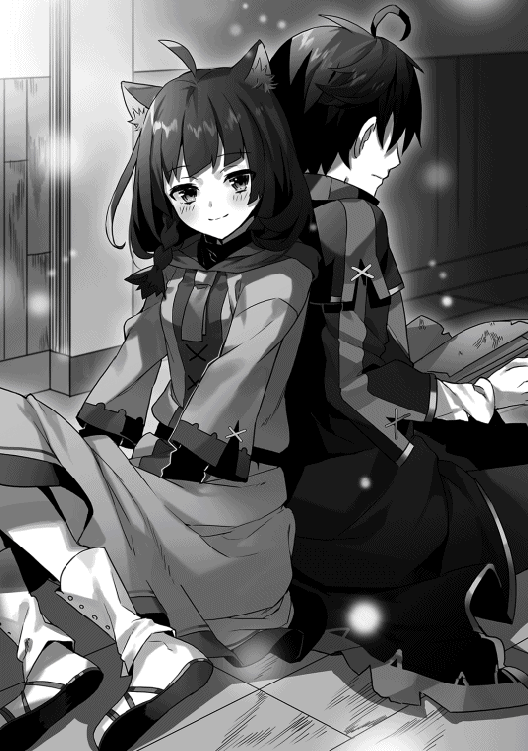
「だって......タカハが大丈夫って言ったから」
「──！」
「私にとって......タカハはいつでも、すごい人だから......算術のことも、魔法のことも......全部、タカハから教わった......」
そのとき、僕の胸のうちを埋め尽くした感情は、よく分からないものだった。
「............どうして？」
「......？」
「どうして、僕のことをそんなに信じられるのさ？」
......みんな、そうだ。みんな、大魔法使いだからとか、村一番だからとか、そういう理由で、僕に全てを託してくれる。
けど、僕ができるのは魔法だけだ。それも、借り物の力。
前世の僕もそうだった。幼い頃から教育された数学の力は借り物だった。だから、僕は届かなかった。鈴木に。その借り物の力を引き算した僕には──何も残らない。
「どうしてって......言われても、ねえ......」
間延びしたマルムの声に、僕はなぜか唾を飲み込む。決定的なことを言われるような、そんな予感に、僕は身構える。
「だって──タカハは、タカハだから」
「............え？」
「本当は......いろいろなことに怖がって......それが嫌で、強がって......でも、諦めないで、がんばり続けられる......。タカハは......そういう、男の子だから......信じられるの」
「僕......は......」
「魔法も......算数も......すごいけど......。タカハはいつだって......どんな逆境だって......がんばれる人だから......。本がぼろぼろになるまで読んで......使ってもいないのに、全部の単位魔法を暗記する、なんて......そんなことできるのは......タカハくらい......」
とりとめのないマルムの言葉に、僕の中の何かが揺さぶられていた。
もしかして、僕は勘違いをしていたのかもしれない。
魔法の実力とか、戦闘の結果とか、精霊の福音とか。そういう、事実としての結果だけが求められている。暁の大魔法使いである僕が必要とされている。そう思っていた。
だってそうだ。僕の能力を規定するパラメータの最大値はそこにある。魔法の実力。
でも。
でも、もし、マルムのように、僕という個人を必要としてくれる人がいるなら。
僕がラフィアという個人を助けたいと願うように、『数字』が定める能力値以外の『僕』を必要としてくれる誰かがいるのなら。
僕は────
「だから......タカハも、私たちを......信じて」
「......うん」
「......私たちは弱いかもしれないけど......でも、必ず、生き抜いてみせるから......」
マルムの言葉が、広がっていく熱とともに、たしかに僕の胸の底に火をともす。
負けられない。
僕は今度こそ、鈴木を倒さなければならない。
胸に宿った炎が僕の目尻に飛び火したかのようだった。わけのわからない感情だった。前世で一度も覚えたことのないほどに痛烈で、でも、決して消えることのない勲章のような感覚。
その感覚を僕は理性でねじ伏せ、背中合わせの熱に語りかける。
「僕も信じるよ。マルムとピータ村の村人たちのことを。みんなは、大丈夫だ」
「......うん」
「だから、これはマルムに持っていてほしい」
僕は肩越しに、ゲルフの日記を手渡した。
「神秘使いに対する基本的な戦術が書いてある。もし戦うことになれば、その知識が必ず役に立つはずだ。......あと」
「あと......？」
「それは、僕の大切なものなんだ。マルムに、預ける。必ず取りに帰ってくるから、それまで、持っててほしい」
「............分かった」
僕の手からゲルフの日記が離れていく。その内容は全部、頭の中に叩き込んである。
顔を上げると、ゆっくりと、明るくなっていく窓の外が見えた。相変わらずの土砂降りだ。どうやら、天気も僕たちに味方をしてくれるらしい。
「さあ、行こうか、マルム」
「がんばろー。おー」
間の抜けたかけ声とともに、僕たちは動き出した。
第八章：土砂降りの森を、僕たちは逃げ延びる。
「ぼさぼさするなぁッ！ 運べぇッ！」
怒号に続いて、鞭が空を踊る音が響く。誰かの悲鳴が雨音に押し潰されていく。
ピータ村の村人たちは、大雨のせいで崩れかけた鉄柵の補強に借り出されていた。老若男女関係なく選抜された十数名が、ぬかるんだ大地を踏みしめ、身を切るような雨の中、砂袋を運んでいる。
僕も密かにその作業に加わりながら、ときを待っていた。
「休んでいいと誰が言ったッ!?」
「ぐぁっ......！」
転んだミカルバさんに容赦なく鞭が飛ぶ。黒鎧の兵士の放ったその一撃はやせ細ったその背を的確に打ち、皮膚を切り裂いた。
理性では、動いてはダメだと理解していた。
まだその時ではない。
だが──気付いたとき、僕はミカルバさんをかばう位置に立っていた。
「......なんだぁ？ 貴様」
黒鉄の兵士が鞭を高く掲げる。それでも僕がひるまないと悟ったのか、腰の剣をしゃらりと抜き放った。
「名を名乗れ」
「──タカハだ」
「タカハ、だと......？ そんな者、この村にはいなかったはずだ......が──」
そこで、兵士の瞳が驚愕に見開かれる。
「ま、まさか、お前──」
そのとき、僕の耳に『伝令』の声が届いた。
『定時監視の巡回部隊が十分に離れたことを確認した。作戦を開始する。......ったく、お前らしくないぞ、タカハ』
「ごめん。でも、もういいんだろ？」
『ああ。敵兵士は全部で十三人だ。神秘使いはなし。──ぶちかませ』
「了解ッ！」
言うが早いか、僕は目の前の黒鉄の兵士に飛びかかった。動揺するその手から剣を奪い、大上段に掲げる。
「お、お前......！ 暁の......ッ！」
「そのまさかだよ。──みんな！ かかれ！」
「「「「応──ッ!!」」」」
それまで従順に作業をしていた男たちが、一斉に兵士たちに襲いかかった。
この作業を監視している兵士は三人。その三人は全方位から襲いかかる村人たちになすすべもなく武装解除させられる。
「プロパ！ こっちはクリア！」
『了解。──正門から突入する。挟撃を頼む』
「みんな、僕に続いて！」
言い終わるが早いか、僕はきびすを返して正門に向かった。雄叫びを上げつつ、村人たちが僕に続く。
「なんだぁ──ッ!?」
飛び出してきた別の兵士は、僕が詠唱する間もなく、誰かが放った風の刃に胸を切り裂かれた。
広場に飛び出す。──と、戦闘の光が見えた。
「襲撃だ──！ 正門を守れ！」
黒鉄の兵士たちが六人、正門の外側に向けて大きな盾を並べようとしているところだった。その盾に、正門の外側から立て続けに魔法が撃ち込まれる。
「たしかに、ちゃんと正門は守らないと、ね！」
僕は、奪い去った剣を思い切りその兵士の後ろから投擲した。がんっ、とすさまじい音が響き、一人の兵士の体勢を崩す。それで十分だった。正門の外側に向かっていた意識を一瞬でもこちらに引きつけさえすれば、あとは圧倒的な倍数魔法が兵士たちを蹂躙する。ものの数十秒のうちに、戦闘は圧倒的にプロパたちに優位に進み、収束した。
プロパたち革命軍の小部隊が、ゆっくりと村に入ってくる。
「プロパ！」「正騎士プロパ卿！」「さすがだなあ......！」「プロパぁ！」
「ふんっ。当然だ」
村人たちの賞賛の嵐にプロパが片手を上げて答える。
「顔、赤いよー......？」
「な、なに......!?」
どこからか出てきたマルムがそれを台無しにして、村人たちはどっと笑った。いい傾向。
示し合わせていたタイミングで、村人たちが次々広場に集まってくる。他の場所でも兵士たちを無力化させることに成功したようだ。
僕は周囲への警戒に意識を向けた。
このタイミングが一番危ない。
「全員いるか！」
雨の中、ガーツさんを筆頭として、大人たちが手早く人数を数え上げる。
「よぉし！ いつでもいけるぞ！ プロパ！」
プロパが剣を指揮杖のように高く掲げ、よく通る声で言った。
「敵と遭遇する可能性が高いのは、これからの半日！ 異変があればすぐに知らせてください！ 慌てず、騒がず、移動を開始！」
「「「「応ッ!!」」」」
あらかじめ決めてあった順番に従って、村人たちがプロパに続いていく。進行方向は、村の裏手側。裏手の山を迂回し、敵の監視が及んでいない森に入った後、進行方向を大きく変えるという計画だ。
村人たちは整然と歩み始めたけれど、六十人の全員が広場から離れるまでに数分を要した。......やっぱり遅い。移動速度は、もっとも遅い者に合わせなければならない。分かっていたことだけど、危険な逃避行であることは疑いようもない。
「さあ、タカハも！」
プロパが先頭で、僕は最後尾を守る。
僕は村人に促され、広場を離れた。村の中央を貫く坂道を登り、もう一度振り返る。
人気の消えたピータ村の広場や家々が、雨霧の中にかすんで、消えていく。
「......行ってきます」
僕はピータ村に背を向け、大荷物を背負う村人たちの列を追おうとした。
──そのときだった。
僕は振り返る。
今、何かが光った。広場で。
見間違いじゃない。
とっさに、喉が裂けるほどの声量で叫んでいた。
「伏せろ──ッ!!」
ピータ村の広場で、あり得ないはずの人影が動いた。
そして、その人影がなにか鈍い輝きを放ったように見えた。
直後──地面に伏せた数人の村人たちの頭上を猛烈な勢いで何かがよぎった。ずばんっと引き裂くような轟音とともに、森の大樹に何かが突き刺さる。それは、一人の村人の荷物を貫き、大樹に縫い止めている。
巨大な、黄銅色の、槍だった。
僕はもう一度、広場の方を振り返る。
人影が、まるで宙を飛ぶような速度で、坂道をこちらに駆け上がってきていた。
「あいつは......！」
純白の法衣は、まるで触れることが叶わない至上の宝石のような輝きを放ち、大粒の雨を切り裂いている。
神秘使い。
──それも、ただの神秘使いじゃない。
赤髪を悪魔の翼のように広げ、ガラス玉のように感情をうかがわせない瞳でこちらを睨み付けるのは──あどけない少女だった。
「尻尾を出しましたね！ 暁の大魔法使い！」
黄銅色の巨槍。
それを操る、赤髪の少女。
敵国で序列二位を誇る神秘使い──『聖槍の乙女』ハーミリア。
予測できた中でも最悪の罠が、僕たちを待っていた。
「プロパ！ 展開五！ しかも、『聖槍の乙女』だ！」
『なに──!?』
鈴木は、僕がいつかピータ村に戻ることを読んでいたのだろうか。だからこいつがここにいるのか。それは分からない。いずれにせよはっきりしていることは、逃げ出そうとするピータ村の村人たちを守り抜けるのは、革命軍に所属する僕たちだけ、ということ。
考えを振り払い、僕は詠唱を開始する。
「〝土─七の法─九つ──〟」
単位魔法は『土の七番』。
巨大な岩塊を撃ち出す、土属性の中級攻撃魔法──六マナ。
「〝─待機─眼前に〟」
発動時間指定に三マナ。発動位置指定に二マナ。
──その九倍魔法。
「〝ゆえに対価は 九十九〟。で、〝待機解除〟」
僕の足下から、立て続けに八発の巨大な岩塊が射出される。直撃すれば人間を文字通り挽き肉に変えるような強力なその攻撃を、僕は拡散させて放った。あの女がどちらに飛ぼうと、その逃げ道を潰す軌道──だが。
「──同じ手が通用すると思いましたか？」
僕の放った八つの岩塊は、同時に発射されていたけれど、厳密には同じスピードではなかった。ハーミリアに岩の群れが衝突する頃には、その初速の違いが岩塊二つ分くらいの差を開けている。
一瞬で、稲光のように純白の法衣がその隙間をすり抜けた。一つ目を踏み切り台にすることで、平面で制圧する岩石魔法の群れに隙間を見出し、そこをすり抜けたのだった。
赤髪が空中に踊る。
その軌跡は、僕に向かってまっすぐに。
背負っている直剣を抜き放ちつつ、ハーミリアが猛烈な速度で僕に迫る。
「〝待機解除〟」
僕は──杖を振るった。
「もちろん、思ってないけど？」
「な──ッ!?」
ばがん、と戦艦の砲撃のような轟音とともに、僕が九発で展開した『土の七番』の、最後の一発が解き放たれた。
呼吸一つの間さえ与えず、岩塊が突進する少女と直撃する。
「きゃぁ──っ！」
響き渡るのは少し間が抜けた、甲高い悲鳴。
当たるとは思っていなかった。だってあいつには『敬虔の瞳』──二秒先の未来を読む神秘がある。どうやらその発動は温存していたらしい。
「土属性の使い手は、同じ魔法を広場に叩き込め！」
プロパの命で、一斉に魔法使いたちが詠唱をする。先ほどの僕一人の魔法とは比べものにならないほどの数の岩塊が、まるで濁流のように、ハーミリアの着地地点を押し潰した。
村の広場に人影が動く気配はなかった。
倒せた、と考えるのは希望的すぎる。深い雨にまぎれ、ハーミリアは森の中に入ったのだろう。
「あの女のことだ。すぐに追ってくるぞ。タカハ、後衛を頼む！」
「任せて！」
村人たちが可能な限り速度を上げて、密林の行軍を始める。僕は魔法でハーミリアの大槍を大樹からえぐり出すと、それを肩に担いで移動した。
ベアトリーチェに渡した剣もそうだけれど、相変わらずとても軽いのに、信じられない硬度の金属だ。金属としての特殊な製法だけでなく、何らかの神秘的な加護もかけられているのかもしれない。
あいつはこの槍を必ず狙ってくる。
以前の大盾も、これも、教皇猊下からたまわったものだと言っていた。信仰とその序列がすべての価値観を決する国において、教皇猊下からたまわった槍をあの女が放置するはずはない。
「......！ 来た......！」
雨が叩きつける深い森の中で、その姿に気付くことができたのは、たぶん奇跡以外のなにものでもないだろう。──隊列の右側。木の枝を足場にして、飛び回るように純白の法衣が迫ってくる。
『タカハ、もうすぐだ！ もうすぐ作戦予定地点に到達する！』
「ここは僕が食い止める！」
『了解した。すぐに始めるぞ。──逃げ遅れるなよ』
樹上にいるハーミリアはまるでそこに道があるかのように、猛然と距離を詰めてきている。その右目には、純白の光。未来予知モードだ。さっきのような誤魔化しは通用しない。プロパに返答をしている余裕もなさそうだ。
「〝水─六の法─十五個─待機─周囲に〟」
単位魔法は『水の六番』。鋭い氷槍を生み出す水属性の中級攻撃魔法、六マナ。
発動の直前の状態を待機させるのに、三マナ。
僕の周囲に展開させるために、三マナ。
合計十二マナ。
──その十五倍。
「〝ゆえに対価は百八十〟」
僕の周囲に十五本の忠実なしもべたちが展開される。僕の身長の半分ほどもある鋭い氷の槍を、僕は立て続けに五本、解き放った。
「──ッ！」
『聖槍の乙女』、ハーミリア。敵国で序列二位とされるこの神秘使いの異能は意外なほどシンプルだ。未来を読むあの瞳と、すべての神秘使いの中でも最大級と思われる身体能力への加護。筋力も素早さも、常人の数倍まで引き上げられている。すべての攻撃を未来予知と身体能力で避けきり、至近距離の物理攻撃で一瞬で戦いを決する。そういう戦い方。
シンプルだからこそ強い。
世界の真理をえぐり出した数式が、一行で表されるように。
対応できる僕の戦術は、距離を詰めさせないことの一点に尽きる。敵が予知できる二秒間に存在するすべての可能性の芽を潰し続けるのだ。
僕の放った五本の槍は、ハーミリアが選ぶことのできる接近のための経路をすべて潰していた。足場となりそうな太い枝をたたき折り、地上に下りられる足場にも牽制の一本が放ってある。
「暁の少年！ タカハ！」
ハーミリアは身動きを一瞬、止めた。
「やはりあなたは強い！ とってもとっても面白い！」
叫んだ少女は、笑っていた。翡翠色の瞳には輝かしい光が宿り、まるで恋愛小説に心躍らせるかのように期待に満ちた表情。百人が百人思わず振り返ってしまうような、無邪気で、鮮烈で、底抜けに艶やかな微笑。
ぞくり、と背筋が凍えた。
──こいつは、この状況を、楽しんでいる。
「やぁ──ッ！」
ハーミリアの右手がぶれ、一瞬だけ輝いた。僕の目にはそう見えた。
倒れ込むように回避した僕の頭があった場所を、一本の黒塗りのナイフが走り抜けていく。とっさに、手元から黄銅色の大槍を手放していたけれど、もう構っていられる状況ではなかった。
飛び道具か。
心臓が強く締め付けられ、息ができなくなる。
今の一撃は、僕が回避したんじゃない。
未来を読んだ上で、投擲の技術が未熟だから、外れただけだ。
同時に、ぱりんっ、と甲高い音を立てて、僕が放った五本の氷槍のうちの一本が黒塗りのナイフによって砕かれる。接近のための足場を完全に潰すための五本だった。その一本が失われば──そこがハーミリアの道になる。
「く......っ」
時間が引き延ばされ、思考が加速する。構築した戦術にほころびが生まれれば、僕はもう一度、二秒後までの可能性を考えなければならない。
加えて、敵には飛び道具もある。
もう四秒あれば、ハーミリアは僕の目の前に立つ。
そして、未来を読むあの瞳と身体能力で、僕の心臓に必定の一撃を突き立てるはずだ。
「ち──ッ！」
だが、その瞬間──ハーミリアは大きく後方へ飛んだ。
一拍遅れて、ハーミリアがいた当たりの梢に、無数の魔法が殺到する。大火球が木々を押し倒し、雷撃が枝葉を焼き切り、氷霧が雨ごと領域を凍りつかせた。
「タカハ！」「大丈夫か！」「思わず加勢しちまったぜ！」「さあ逃げよう！」
ピータ村のみんなの支援だ。彼らの攻撃がなければ、僕は厳しい戦況に置かれ続けていたに違いない。
「走って！ 視線を周囲に！」
「「「おう！」」」
──だが、ハーミリアの位置を見失ってしまった。
村人たちが走る。僕は最後尾を続く。すでに足の遅い老人や子どもたちは予定地に到達しているはずだ。森の歩き方を知り尽くした一部の者たちが、僕に手を貸すために戻ってきてくれたのだろう。
僕たちは獣の群れのように粛々と、それでいて素早く、ぬかるむ森の中を走り続ける。
どこだ。
どこから来る。
梢が揺れる気配は、雨音に隠れてしまう。
光量が足りないせいで、視界も狭い。
自分の足音と荒い息づかいが、聴覚による索敵を困難にする。
たしかに、雨は僕たちの作戦には大きく貢献してくれるだろう。
だが、その前段階にあたるこの局面においては──雨は完全に襲撃者の味方だ。
「みんな。戦闘が始まったら、迷わずに逃げてください」
「タカハ、お前──」
「僕を信じて。必ず、僕が止めます」
数人の村人たちが一瞬、視線だけを僕に向けた。そして、了解を示すように、こくりと深く頷く。
僕は後方を確認しながら走る。ハーミリアの姿はどこにもない。
──敵の手を読み切れ。
やつは獣よりもはるかに俊敏に、僕たちに忍び寄る。そして、未来まで視ることができる。
だが、こちらも森の中の立ち回りに関しては精通している。これほどの狩猟者たちの目を誤魔化して接近することは困難────
待てよ。
どくり、と心臓が拍動する。
『聖槍の乙女』は未来を視ることができる。
だとするなら。
僕たちの視線の動きだって見えているはず──
「〝待機解除──ッ！〟」
残った氷の槍を全部、まるで散弾銃のように、僕は解き放った。
頭上へ。
「──いい読みです！ しかし、この距離ならば──ッ！」
少女の声は、ほとんど至近距離から聞こえた。
見上げた視界の中央から、黄銅色の槍を構えた神秘使いが落ちてくる。
僕の放った魔法を、少女の槍が払い落とす。弾丸のような速度に上乗せして、さらに黒塗りのナイフが二本、放たれた。視認できない速度。必中の一撃。
だから。
僕は。
そのナイフを、避けなかった。
「な──ッ!?」
「〝火─十の法─五つ─〟──ッ！」
左肩と右の大腿に、灼熱のような感覚が突き刺さる。
だが、僕は詠唱をやめない。
「〝─今─眼前に〟」
単位魔法は『火の十番』。唐突な爆発を引き起こす、火属性屈指の高火力中級魔法、十二マナ。時間と位置の指定に二マナずつ。
──その五倍魔法。
僕のすぐそばに立ったハーミリアが、未来予知の瞳を驚愕に見開く。
「自爆──!?」
上から落ちてくる時間、ハーミリアに回避行動をとることはできない。その着地の瞬間に、爆発を重ねれば、必中する。──それが僕を巻きこむ爆発なのだから、なおさらだ。
僕の唇は不敵に歪んでいた。
「〝──ゆえに対価は 八十〟」
直後。
僕の認識が、消し飛んだ。
身体の全面を強烈な爆風が打ち、爆圧に押し込まれた両側の鼓膜が破断される。僕は嵐に放り込まれた木の葉のように、きりもみしながら吹き飛ばされる。
「............っつぅ......」
頬とまぶたに落ちる雨粒が、かろうじて僕の意識をつなぎ止めている。僕は計算通りに森の中にある台地まで吹き飛ばされ、その上で仰向けに空を見上げていた。
「あ......が......っ......」
顔だけをなんとか動かして、周囲の状況を探る。
そして、僕は勘違いに気付かされる。たしかに詠唱の瞬間に狙っていた台地に僕の身体はあるけれど、もう一段上がある。そこまで上らなければ、たぶん、高さが足りない。
「くそっ......きっつい......なぁ......」
全身がばらばらになりそうだ。ハーミリアに打ち込まれたナイフの傷の痛みを認識できないほど、全身が傷だらけで、火傷だらけなのだろう。
「〝水─......八の......法─......今─......〟」
焼け焦げた喉からなんとか回復魔法の詠唱を絞り出す。青い光が僕の全身を覆って、痛みと火傷を一時的に緩めていく。だが、その光が引いてもなお、脳みそにシェイカーを突っ込まれたかのように、全身が狂った痛覚の信号を伝えてくる。
「こんな......ところで......ッ」
僕は芋虫のように、緩慢に身体を横に向けた。それだけで、気絶した方が楽だと思わせるような痛みが全身を貫く。
「......僕......は......ッ」
............なにをしているんだろう。
唐突に、力が抜けた。
びちゃり、と頬が岩の上に落ちる。
こんなに苦しくて、痛い思いをして、どうして戦わなければならないんだ。
もう、僕が持っている『対訳』の力は、僕だけのオリジナルの力ではなくなった。約数の多い数字を僕はたくさんの魔法使いたちに伝え広めた。
もう、僕がいなくたって、革命軍は戦えるはずだ。
それまでの革命軍よりも、ずっと強く、神聖軍に立ち向かえる。
やめてもいいんじゃないか。
お前はよくがんばったよ。
なあ、そうだろう？ 僕。
「....................................いやだ......」
僕は震える腕に力をこめる。今にも折れてしまいそうなほどに軋んでいるその腕に、全力で動くように命じ続ける。膝を身体に引き寄せる。
『──......タカハ』
鈴を鳴らしたような少女の声を、僕は幻聴する。
笑った顔、怒った顔、泣いた顔、悲しむ顔......この世界にきてから、いつも僕の隣にあったその無数の表情が、一瞬で記憶の底からあふれ出してくる。
いつも他人のために振る舞って、その行動原理を僕はいつも馬鹿にしていた、義理の姉。
そんな僕だから分かる。
分かってしまったのだ。
彼女がなぜ、敵に加勢しているのか。
彼女がなぜ、あんな表情で戦い続けているのか。
その勘違いを正せるのは、僕だけだ。
ラフィアを救うことができる人間は、革命軍にはいない。
どれほど倍数魔法を手に入れたって、革命軍には今のラフィアを倒すことはできても、救うことはできない。
だから。
僕は、生き延びるんだ。
だから、戦い続ける。
──僕らしくもない。
──全く合理的じゃない。
だとしても。
「......あぁ──ッ！」
叫びながらでなければ、無理だった。
ぼろぼろの僕は、立ち上がっていた。
そこだけ森が途切れた台地。
周囲に人影はない。ピータ村のみんなは僕を信じて、先に逃げてくれたらしい。
あとは、僕がこの台地を一番上まで上がれば、完全勝利だ。
僕はもう一度森の方を振り返って、純白の法衣が見えないことを確認する。
そして、台地のてっぺんを見上げた。
やや急な坂が五メートルほど続いている。その坂は無限に続いているように見えたけれど、僕は一歩を踏み出す。瞬間、全身を引き裂くような激痛が足から頭のてっぺんまで駆け抜けて、僕はたぶんみっともなく悲鳴をあげた。
『......ッ......!! ......ッ！』
耳元で、なにかの気配がする。ああ。そっか。プロパとつながってる『伝令』の魔法。音はもう、聞こえていない。鼓膜が破れているのだ。
「大丈夫......僕は......大丈夫だから......やっちゃって......」
『............？ ......！』
「うん......いいよ......台地にいる......。あとは......ちょっと坂を上るだけだから......」
『............！』
僕はもう一歩を踏み出した。世界がひび割れるような感覚とともに、地面がゆっくりと後ろに進んでいく。だが、坂は相変わらず無限の絶壁のように、僕の目の前に立ちふさがっている。
拷問のような時間だった。
僕はみっともなく悲鳴を上げながら、最後は四つん這いになって進み続ける。
『............！』
いつ、登り切ったのか。
はっきりと分からない。
僕は台地のてっぺんにうつぶせに倒れていた。
ゆっくりと顔を上げると、雨がやんで、雲の切れ間から光の帯が幾筋か垂れ下がっている光景が広がっていた。艶やかな緑色の森を照らし上げる光が、近くの山の麓にスポットライトをあてる。
「......あははっ。......やったね......プロパ......」
そこには、ピータ村の村人たちが集合していた。
プロパ、ガーツさん、マルム、さっき僕を助けてくれた狩猟団員たち。全員が僕に全力で手を振っている。応えるように僕は右手を掲げた。村人たちが手を振るスピードを早くする。そんな彼らの足下のあたりから、今回の脱出計画の最後の一手が動き出していた。
僕はもう一度、魂を振り絞るようにして、身を起こした。
震える膝に渇を入れ、なんとか立ち上がる。
振り返る。
「──......お前への......プレゼントだ」
僕は不敵に笑んで、眼下の敵にそう言った。
「............！」
赤髪は焼け焦げて縮れ、脱力した左腕は恐らく肩が外れている。額からかすかに血を流し、泥水を吸った純白の法衣を引きずるようにして、『聖槍の乙女』がゆっくりと台地を上ってこようとしていた。
「............」
『逃がすものですか』。唇がそう動いた。
翡翠の瞳を血走らせ、唇を引き締めたハーミリアは、僕と同じくらいボロボロだった。その右手には黒塗りのナイフ。槍を持ち運ぶ体力は残っていなかったと見える。凄絶な表情だけれど、今のハーミリアには、どこか幼い子どもがすごんでいるだけのような滑稽な印象がある。
「......聞こえないよ......ばーか......」
「............！ ......！」
こっちの声は聞こえたらしく、ハーミリアは強く地面を蹴った。しつこいやつだ。
「〝土─七の法─九つ──〟」
撃ちまくった。
「〝火─六の法─十二個──〟」
岩塊、大火球、雷鞭、氷槍。
回路の限界まで僕は打ち尽くし、そして詠唱を止める。
「............？」
あれほどのダメージを受けながらそれを回避しきったハーミリアは、傲慢な表情で笑んだ。『それで打ち止めですか？』。そのようなことを言ったのだろう。
「うん......。おしまい」
「......──」
「だって、君、もう詰んでるからね」
「......。────ッ！」
そのとき──ハーミリアがぎょっとした表情で、右側に顔を向けた。
僕もつられてそちらに視線を向ける。
──森が、押し流されていた。
それは、妄想でも、比喩でもない。
大量の木々が地面からめくり上げられるようにして、こちらに迫ってきているのだ。
僕の立っている台地にも地響きのような振動が伝わってくる。
「君一人には盛大すぎる濁流だけど......大きな部隊に追いかけられると思ってたからね......。このくらいの備えは......当然ってわけ」
昨晩の間に、村の外にいたプロパたちは別の行動をとっていた。大雨で増水した河を、土属性の魔法で構築した堤防でせき止めていたのだ。それを解き放てば、緩みきった地盤と、大量の水圧が──森を押し流す。敵の追撃から村人たちを一人残らず逃がすために、プロパが考え出したもっとも確実な作戦。
「〝土─七の法─十二個──〟」
「────！」
僕は十二個の岩塊を拡散させるように放った。ハーミリアが台地を駆け上がるためにとれるルートをすべて潰す。
足下の振動はいよいよ強烈な縦揺れに代わり、僕は尻餅をついた。
僕の放った魔法を回避するハーミリアが、矢のように鋭い視線を僕によこす。
「──！」
「──残念。僕たちの、勝ち」
「──！ ──ッ!!」
その瞬間だった。
横なぎの濁流が、その純白の法衣を押し潰して、流れ去った。
圧倒的な泥の流れが、僕の台地の足下まで及んでいる。
すさまじいスピードで森を破壊しながら進んでいく。
「これ......大丈夫なのか......？」
僕は笑いながらそう言った。圧倒的な濁流と比べれば、僕が立つ台地は嵐の中の小舟のような頼りなさだ。でも、障害は排除された。あの濁流に呑まれてしまえば、いくら身体能力に加護を授かった神秘使いでも、僕たちを追撃することはできないだろう。これから先のことは、まあ、どうとでもなる。
仰向けになって、空を見上げる。
吸い込まれそうなほどに遠い空が、僕を見下ろしていた。
「............──え？」
その瞬間だった。
ぐい、と僕の視界がずれた。
引き寄せられた。そう認識した瞬間、僕はその引力の原因となった自分の左足を見た。
ほっそりとして、小さな手のひらが、台地のへりに尻餅をついている僕の足を掴んでいる。
「............嘘でしょ？」
「............」
その腕がつながる先には当然、身体があって、顔があって、人がいる。
全身を泥まみれにした『聖槍の乙女』が、僕の足をつかんでいた。
ぐっと強く足が引かれる。ハーミリアは台地に上ろうとしていた。
詠唱を。ダメだ。頭が回らない。自爆するような魔法はこの体力ではもう使えない。今度こそ本当に死んでしまう。だが、この距離ならば、ハーミリアは素手でも僕を殺すことができるだろう。だったら、反撃の魔法を────
「............」
悪鬼のような笑みを浮かべたハーミリアが、荒い息をつきながら、ゆっくりと台地のへりに足をかける。左腕には力が入らないのだろう。全身でよじ登るようにするハーミリアの身体が、僕の目の前に姿を現す。勝利を確信した狂気的な微笑が、間近に迫った。
──その、瞬間だった。
「「............あ」」
声はたしかに、シンクロしていたと思う。
ずるりとハーミリアの足がへりから滑り落ちる。初歩的なミスだ。しっかりと足をかけていないのに、全身の体重をかけるからそういうことになる。
普段の彼女ならば、なんの問題もならないような重心のずれだったはずだ。
だが、今のハーミリアは満身創痍だった。
がっ、と一時的に、強烈な力のベクトルが僕にかかる。
人一人分の衝撃を、ただ尻餅をついていただけの僕に受け止められるはずもなく。
──僕たちは宙に躍っていた。
足下は、信じられない勢いで右から左へ過ぎ去っていく濁流。
「......あのさあ」
ハーミリアが困惑するように眉をひそめて。
そして、僕たちは濁流に押し包まれた。
第九章：凍りついた世界で、聖女は二つの光を視る。
ハーミリアは夢を見た。
夢は好きだ。理由ははっきりとしている。次の瞬間に何が起こるか分からないから。
草原を馬に乗って走り続けていると、その馬から翼が生えて空を飛ぶことができる。
つまづいて転がり落ちた地面の穴から、妖精たちの住む不思議な地下の国に行ける。
本の中の人物が語りかけてきて、本の世界を救うための冒険譚の一員になれる。
顔から火を噴いてしまうのではないかと思えるような、甘美な恋をすることだってできる。
だから、夢は好きだ。
とってもとっても好きだ。
──今日みたいな、最悪の夢でなければ。
「素晴らしい！ 素晴らしい聖痕だ！ 祝福された聖女だ！ 村人たちよ！ 喜びなさい！ あなたたちの敬虔な祈りが、彼女に宿ったのだ！」
でっぷりと肥え太った司祭が、私の肩に手をかけ、私の赤い髪を撫でるのが、なぜか二秒くらい前から分かっていた。
司祭様は私たちと違って外で行う仕事はない。だから、手のひらは太らせた芋虫のようにまんまるで、やたら肌につやがある。そして、その指にはぎらぎらと輝く指輪がいくつもはめられている。幼い私はいつも思っていた。その指輪を売れば、村人たちはもう少し楽な暮らしができるはずなのに、と。でも、なぜかそれを口にする大人はいなかった。
そんな司祭に触られるのは、嫌だった。だから避けた。
想像していた位置に私がいなかったせいだろう。司祭はきょとんとした顔を向け、そして安心させるように、にたりと笑う。頬の肉がだらしなく緩む。きもちわるいかお。そう思った。
「さあ、顔を上げなさい」
司祭の手に促されて見ると、村人たちの全員が司祭と私に平伏している。迷子になったときのような不安が、私を襲う。
「お母さん......？ お父さん......？」
私は二人の姿を見つけることができなくて、戸惑う。
「喜びなさい。君はミシア神に選ばれたのだ。ご両親も、祝福してくれている。君は羽ばたくのだ。両親のもとを離れ、輝く神都で神の寵愛を受けることになる」
祝福してくれている。なら、どうしていつものように私を抱きしめてくれないのだろう。
偉いねハーミリアと言いながら、頭を撫でてくれないのはなぜだろう。
視界が下向きにぶれる。
胸の真ん中に、光り輝く紋様が刻まれている。
これがここに宿ったのは、四日前。
それからは大騒ぎだった。
ほのかな熱をもつそれは、セイコンというらしい。ミシア神に選ばれた者に宿る祝福の証だと、幼い私は知っていた。
でも、もうお父さんとお母さんに会えないのだとしたら。
こんなもの──要らない。
「司祭様、わたし──」
「すぐに仕度を。君は巡礼の旅へ向かうのだ」
みすぼらしい村に、この世のものとは思えないほどに美しい馬車がやってきた。純白。どこまでも白いその馬車が私のために用意されたと言われても、理解できない。
「さぁ、乗りなさい」
司祭様はどうだと言わんばかりの表情で、あのきもちわるい笑顔を浮かべる。おかしいな、と思う。だって、それはさっき聞いたような気がするのだ。
「司祭様、お父さんとお母さんに会いたい」
そう言った瞬間、司祭様の笑顔がさっと引っ込んだ。
同時に『それは、できないのだ』と返答する司祭様の言葉が耳元で聞こえた。それを言う司祭様の同情するような表情も、大げさな身振りも、目の前にあるように感じ取る。
まばたき。
目の前の司祭様は無表情のままだった。
「それは、できないのだ」
──その瞬間、幼い私は自分の胸に宿った力を理解した。
未来を視るチカラ。
言葉や、仕草や、光景──私が直視する二秒後の世界を、私は常に把握することができる。
頭の中で司祭様が二人に分裂したのはそのときだった。一人の司祭様は同情するように話を続けている。もう一人の司祭様は目を見開いて『捕まえろ！』と叫んでいる。
誰を？ ──私を。
そうだ。私はそうするかもしれない。
だって、二秒先の未来が見えるのだ。
ここから逃げ出すことも簡単だ。
一度だけでいい。ただ、お父さんとお母さんに会って、いってきますと言いたいだけ。
瞬間──分裂した司祭様のうち、同情の言葉を垂れ流している方が脳裏から消失した。
私は息を一度吸い込み──素早く身を翻した。
「捕まえろ！」
司祭様の手が、馬車から下りてきた僧侶たちの手が、次々と伸びてくる。だがそれを避けるのはあまりに簡単だった。彼らがどういう風に近づいてきて、どういう風に手を伸ばすのか、二秒前から分かっていたから。
村の大通りを行き交う馬車の間をハーミリアはかけぬける。商人が「危ねえぞ！」と怒号をあげる。でも、危なくなんかないのだ。安全な道のりは二秒も前に分かっている。僧侶が馬車の荷に突っ込んで麦の粉が爆発したみたいに広がる。司祭様は馬に轢かれそうになって尻餅をついた。......よし、いまのうちに。
私は走った。知り尽くした路地裏。家までの一番の近道。
『いやあ、本当によかった』という、はっきりした声を幻聴したのはそのときだった。
レンガ作りが仕事のポルテさんだ。二秒後のポルテさんは、裏路地で友人のジャルクさんに言う。『あの子のおかげで、税がぐっと軽くなるんだから』
......え？
『そうだな。この先十年は、ほとんど税がなくなる。ミリィちゃんさまさまだよ』
『おいお前、信徒ハーミリア様だぞ。ミリィちゃんなんて呼んだら、司祭様に殺されるよ』
立ち尽くした私の耳に、今度は現実の声が聞こえてくる。「あの子のおかげで──」「そうだな。この先十年は──」
「......うぅ......」
二秒前に幻聴した声。
二秒後に聞こえてくる現実の声。
その二つは、声のトーンも、息を吸い込むタイミングも、完全に同じで、それがあまりにも不気味で、私はかすかに呻きながら路地裏にしゃがみこむ。あたまがいたい。きもちわるい。
『なにより喜んでるのは、あの二人だろうな』
幻聴したポルテさんの声に、どくりと心臓が跳ねる。誰のことを言っているのか、幼いハーミリアは直感していた。
『ああ。正直うらやましいよ。死ぬまで仕事もしなくていいし、街に招待されて美味い物をずっと食えるらしい』
『ジャルク、祝ってやれよ。あの一家は礼拝だって一度も欠かさなかったじゃないか』
『......だから、あんなすっぱり諦められるんだな。リーンと引き離されるなら俺は娘に聖痕なんて宿らなくていいね』
『税が軽くなるって言ったのはどの口だよ』
『ははっ、違いない。はははっ』
『見つけたぞ──！』
私は路地の向こうから叫ぶ司祭様を幻視する。二秒すれば、司祭様はここに姿を現す。逃げなくちゃ。そう思った瞬間、幻視がまた二つに分裂した。もう一つの幻視では路地を飛ぶように走り抜ける自分がいた。こっちだ。
私はその幻視に従って、入り組んだ路地を走り始めた。二秒後に僧侶や司祭様が次々と顔を出し、そのたびに私は逃げる道を変える。
そうして逃げながら、ポルテさんとジャルクさんの言葉が頭の中をぐるぐると回った。
──いやあ、本当によかった──
──税が軽くなる──
──ジャルク、祝ってやれよ──
──だから、あんなすっぱり諦められ──
「うそだ......っ」
お父さんとお母さんが、私を諦める......？
そんなのうそだ。ぜったいにうそだ。
次第に私は路地を追い詰められていく。村人たちに見つかる幻視も増えてくる。『ミリィちゃん！』『いけない！ 戻らなければ！』『君は信徒様なんだ！』『さあ、あの馬車に行って』『輝く王都に』『ミシア神のたもとに』
うるさい。うるさいうるさいうるさい──！
走る。ひたすらに走る。幻視が示すすべての危険をかわして、ただひたすら走る。家に帰りたい。帰って、お父さんとお母さんに会いたい。その一心で。
目をつむって走る。それでもすべての危険が分かる。急いで。急いで。
ふと、いくつにも別れていた幻視が、ぱたりと一つに収束した。
目を開ける。
──小さな家が、目の前にあった。
レンガを買うお金がないから、家の右半分は木でできている。左の屋根からは、お父さんが頑張って作った煙突が飛び出している。お母さんが集めてきた薪が丁寧に積み上げられ、お母さんが織ったタペストリーが扉にかけられている。
私はゆっくりとその扉に近づく。
ドアノブに手をかける。
そして、幻視が始まった。
『......あ、あぁ......！』
『なにをしてるんだ！ ハーミリア！』
『すぐに馬車に戻りなさい！ すぐに！』
──ぶつり、とそこで幻視は終わる。
現実の私がドアノブを開けなかったからだ。
だが、ドアを開けようと思うたびに、またすぐに幻視が始まる。
『......あ、あぁ......！』
『なにをしてるんだ！ ハーミリア！』
『すぐに馬車に戻りなさい！ すぐに！』
何度も、何度も、繰り返される。
その光景が嫌で、私はドアノブを引くことができずに、立ち尽くす。ただ、立ち尽くす。
「見つけた......！」
荒い息をつきながら司祭様が言う。その声は幻視なのか、現実なのか、すぐには分からなかった。
その前に、ドアノブを開けなければ。怒られても、諭されても、二人に会えるのはきっとこれが最後なのだ。
『......あ、あぁ......！』
『なにをしてるんだ！ ハーミリア！』
『すぐに馬車に戻りなさい！ すぐに！』
ドアノブは固く、冷たく、私の手から熱を奪っていくだけだった。
ぐいと強く肩を引かれた。
「ご両親の覚悟を無駄にするのか？ 信徒ハーミリア」
司祭様の力はあまりに強くて、肩が外れそうなほどに痛い。
「いや......！ いやぁ......！ お父さんに会いたい！ お母さんに！」
「聞き分けなさい！ 君は信仰の徒となるのだ！ すべての民の導き手となる！ 選ばれし者が醜態をさらしてはならないとなぜ分からない!?」
選ばれる？
私が？
なんで？
私はそんなの、望んでない。
こんなもの、要らない──！
もう一度、私は逃げだそうとする。そこで愕然とする。幻視するすべての未来で、私は司祭様に取り押さえられていた。もう逃げ出すことはできないのだ。
そのときだった。
分裂した幻視のすべてで──家のドアが開いた。
深くフードをかぶった両親が飛び出してくる。顔がよく見えない。でも、がっしりした肩がお父さんで、赤髪がフードからのぞくのがお母さんだ。間違いない。
『お父さん！ お母さん！』
幻視の中で、私は叫ぶ。
だが、二人は答えない。
答えないまま、その場で地面に額をつけるように、平伏した。まるで私を拒絶するように。
「......ぁ......」
現実のドアが開き、二人が姿を見せる。二人は二秒前に幻視した光景と同じように淡々とした仕草で、私に平伏する。視線を合わせることさえなく。
「......っ......うぅ......うぅぅぅ......っ！」
涙が頬を伝う。声を隠すこともできずに、私は涙を流す。
だが、幻視が教えてくれる。──それでも、二人が顔を上げることはない、と。立ち上がって、声をかけて、抱きしめてくれることは、決してあり得ないのだと。
そう理解した途端、世界が凍りついた。
ぴたり、と嘘のように涙がやむ。
「......おろしてください」
「それは──」
「ならない。また逃げ出すつもりだろう？」
言うべき言葉をぴたりと当てられた司祭の瞳に動揺が走る。私はその目をまっすぐに見つめ、ふりほどくように地面に下りた。
両親と住み慣れた家に背を向ける。
振り返ることはしなかった。
その結果は、分かりきっていたから。
光り輝く神都で私を待っていたのは、だが、神の寵愛なんていう生やさしいものではなかった。
「お前たちはミシア神の手となり、足となり、立ちはだかるすべての敵を穿つ矛となり、その凶悪なる剣から信仰の民を守る盾となるのだ。そのために宿った力と心得よ！」
服も、食べ物も、ベッドも、以前の村とは比べものにならないほどに豪華なものとなった。
だが、過酷な教練と、能力開発の日々は、毎日のように続いた。
聖痕にどんな力が宿っているか、それは誰にも決められない。戦争の尖兵となるための能力がもっとも評価され、使えない子どもは切り捨てられる。
そんな中で、私の能力は──圧倒的だった。
相手がどのように剣を振るうのか、どこに光の矢を飛ばすのか。それが分かる私には、そもそも、すべての攻撃が当たらない。攻撃の手段がないじゃないか、と誰かが強がりで笑った。それも、私が武術を身につけるまでだった。投擲を含めればすべての距離に対応できる槍術を身につけた私に、敵はいなかった。
熾烈な序列争いの中で、私は何度も暗殺されそうになった。そういう生命の危機が近づくと、決まって私の力は勝手に発動し、私の命を守った。
仲間といえるような人物は、だれもいなかった。だれもが未来を読む私に萎縮し、怯え、言葉を交わす前に私の前を去っていった。
いつしか、幼い私は序列の階段を信じられないペースで駆け上がっていた。
理由なんて、なにもない。
ただ、模擬戦で目の前に現れた相手を倒し続け、戦場では敵兵を殺し続けた。
その結果はすべて確定している。
二秒後まで凍りついた世界。
でも、二秒でも分かれば十分なのだ。
そう思っていた。
あの日までは。
「──......こんな子どもが？」
男は高い位置から私を見下ろしながらそう言った。
彫像のように整った顔立ちをした男だった。切れ長の瞳は故郷の冬の湖と同じ、アイスブルー。金色の長髪は深い色を湛えていて、優美に風に流れる。
私は無言のまま、男を見上げ続ける。男もまた、じっと観察するようにこちらを見つめていた。人間を見るというより、私という道具の機能を観察するための視線。
ちりちりと首筋の後ろ側が逆立つ。
この目は、怖い。
「──少しは楽しませてくれそうだ」
と私が言って、男は一瞬だけ片目を見開いた。
「未来を読む異能か。俺の言おうという意思ではなく、言っているはずの可能性を観察しているようだ」
「......」
再び私が言葉を先取りしたけれど、今度は男は表情を変えなかった。
すでに、私は同時に十程度の未来を観察することができるようになっていた。その可能性は相手と自分の行動によって次々と変化していき、確率の高い順番に再生されている。
「だったら、これから、見せてやろう」
「......！」
続く幻視の男が放つ言葉に、私は沈黙する。
「貴様の能力の限界をな」
私が黙ったのは、男の言葉が挑発的で威圧的だったから、ではない。
その口調は、あまりにも自信に満ちあふれていて、敗北の可能性を少しも考えていない様子だったからだ。自分を疑う、という選択肢なんてはなから存在しないと言わんばかりの、傲慢な口調。
強がりでその言葉を放ってきた他の信徒たちとは明らかに違っていた。
「ハーミリア＝ライネルトです」
「エィム＝アルバレア。この国でもっとも強い神秘使いの名だ。よく覚えておけ」
「その称号は私が頂くものだと確信しています。この御前試合が、あなたの無敗記録に終止符を打つでしょう」
「言葉を間違えているぞ。貴様の無敗記録に、だ」
その日──私は完膚なきまでに敗北した。
最後は十七個まで観察できる未来の可能性を広げ、攻撃から逃れる術を探ろうとしたが、どこにもなかった。
十七個の全てで、私は神秘の光に打ち据えられていた。
爆発のような歓声が降ってくる中。
私は仰向けに空を見上げていた。
どこまでも青く透き通る空に、燦然と輝く太陽が昇っている。ミシア神はたぶん、あそこにいるのかもしれない。そんなことを思う。
視界の端から、エィムと名乗った男が近づいてくる。
その男が手を差し出し、私の身を起こす光景を幻視して、少し意外に思った。
『妙な能力だが......その程度か。お前はなにも分かっていない』
現実の手が、目の前に差し出されている。
瞬間、私の迷いを反映するかのように、未来がいくつにも分岐した。手をとる未来。手を払いのける未来。自分で立ち上がる未来。もう一度戦うそぶりを見せる未来──
「......！」
「妙な能力だが......その程度か。お前はなにも分かっていない」
その瞬間、私を貫いた衝撃はたぶん、この能力を授かったとき以上のものだった。
分岐した未来の可能性の男が、全員、同じタイミングで同じ言葉を放ったのだ。
『『『その異能を使いこなすには知性がいる。お前は、まだその域に至っていないだけだ』』』
現実の私は手をとらずに、ただ呆然と、その手を見つめながら、今度は現実の声を聞いた。
「その異能を使いこなすには知性がいる。お前は、まだその域に至っていないだけだ」
幻視の男は分裂したまま、ふたたび、全く同じタイミングで言葉を発した。
『『『だから、俺にこんなに簡単に負ける。貴様、分かるか？ ──貴様を使いこなせるのは、俺だけだと言ってるんだよ』』』
私はまだ、手をとれない。
現実の男が、言う。
「だから、俺にこんなに簡単に負ける。貴様、分かるか？ ──貴様を使いこなせるのは、俺だけだと言ってるんだよ」
ぶれない。
この人は、私が未来を視ようとも、そんなことは欠片ほども意に介さず、自分の言葉を発するだけなのだ。
「......あぁ......」
強烈すぎる個性。
他者を蹂躙するほどに、強靱な自我。
そんな相手を前にすれば──未来予知のチカラなど、なんて小さいのか。
未来に振り回され、心を閉ざして、すべてを拒絶していた私は、どれほど多くの時間を無駄に過ごしてしまったのだろう。
生まれ故郷など。両親など。すべて過去だ。
この人のように強く生きたい。
この人が視る未来を、現実の瞳で見てみたい。
「......ふふっ」
腹の底をくすぐられたかのように、吐息が漏れて──止められなかった。
「......あははっ......。あははははっ......！」
男は少しも姿勢を変えずに、私を見下ろしている。
凍りついていた世界が、音を立てて動き出す。
「──エィム様」
私は「ミシアの使徒」の手をとらず、自分の足で立ち上がった。ずっと高い位置にある瞳を、それでもまっすぐに見上げ、精一杯に不敵な笑みを浮かべて、言う。
「私を、この力を、使ってください」
ふん、と男が鼻を鳴らして笑う。その笑顔は冷酷で残虐な色に満ちていたけれど、胸の底に確かな熱が生まれるのを、私はたしかに感じていた。
無数に分岐した「ミシアの使徒」が一斉に同じ言葉を放つのを、私は幻視する。
『『『使ってやるさ、壊れるまでな』』』
「はいっ......！」
ぴくりと眉を動かした男は、今度は現実で同じ言葉を放った。
「使ってやるさ、壊れるまでな」
いくつもの戦いを、ともにした。「ミシアの使徒」の戦いは、その全てが完全で圧倒的な勝利だった。
私が誰かに負けたのは、後にも先にもエィム様に敗れたあの一度きり──となるはずだった。
だった。
......そう。
そうだ。
私は負けたのだ。
それも二度も。同じ相手に。
夜明けの太陽を二つ名にもつ、あの少年に。
ざっくり切りそろえた黒の短髪と、不屈の瞳をもつ若き天才魔法使い。
あの少年の戦い方はエィム様とまるで違う。
私の身じろぎ一つで、幻視する可能性のあの少年は常に行動のパターンを変えた。瞬時に変え続けた。最適な解答に向かって、行動のすべてを研ぎ澄ましていく。それは、魔法の詠唱にも、二秒くらいの時間がかかるから、だろうか。
幻視のすべてが敗北で塗りつぶされる。
その結果は、エィム様と変わらない。
だが、戦い方は真逆。
興味深かった。面白い。とっても面白い。
なにより、濁流に落ちるときの、あの戸惑いの顔といったら、それはもう傑作で──
濁流。
私は濁流に呑まれた。
森を食らいながら進む破壊の奔流に飲み込まれたのだ。
だったら、これは最後の走馬燈──？
それとも、私は本当にまだ、生きているのか。
ぱちりと右目の奥に鈍い痛みが走った。
危機が迫っている。
それも、現実の私の二秒先に。
私が生きているなら、あの少年も生きているはずだ。戦闘態勢を整えている可能性もある。すぐに自分の状態を把握して、立ち向かう。
意識が表層へ浮かび上がっていく感覚に、私は身を任せる。
それにしても最悪の夢だった。まるで私の人生を結晶にしたような、身動きもとれない、悪夢めいた夢。
でも、その夢の中で燦然と輝く二人がいる。
エィム様、そして、暁の少年。
──見てみたい。
二人の戦いの果てにはどんな未来が待っているのだろう。
それはきっと、私の瞳なんかでは予知することもできない輝きと、そして、絶望と虚無に満ちているはずだ。
だから目を開けなければ。
生き延びて、この目で見届けるために。
「............あ。起きた。......しくじったな」
声は、目の前から。
黒い瞳が、そばから私を見下ろしていた。
私は仰向けに寝かされているようだ。右腕と左足に鈍い痛みがあるけれど、戦闘継続不可能なダメージを受けていればもっと痛いだろう。
すぐに襲いかかるべきでしょうか。
そう考えた瞬間、脳裏の幻視がいくつも分岐する。──その全てで、私は魔法に撃ち抜かれていた。炎の玉、雷の鞭、氷の槍。......逃げ道は完全に塞がれている。動かないことを決める。
『『『無駄だよ、動かないで。動いた瞬間に撃つ』』』
暁の少年、大魔法使いタカハが幻視の中でそう言った。二秒後、全く同じ言葉を現実の私の耳が聞き取る。
「無駄だよ、動かないで。動いた瞬間に撃つ」
「なぜ、殺さないのですか」
その瞬間だった。幻視が爆発的に膨れあがり、観測が難しくなる。いくつもの幻視で視界がめちゃくちゃに振り乱され、自分のわめき散らす声を幻聴する。
攻撃されているわけではない。
だったら──私がひどく動揺している？
二秒後に何が起こるのか、それが分からない。
これ、なに？ どうして私は──
「決まってる。君が貴重すぎるサンプルだから」
「サン、プル......？」
言葉の意味が分からない。
状況を把握しよう。仰向けに寝かされている。全身のコンディションは決して悪くない。むしろ普段よりも全身の感覚が研ぎ澄まされているのがよく分かる。周囲を流れ去っていく寒風をはっきりと知覚することができる──
「............風？」
私はゆっくりと首を持ち上げた。
自分の身体を見る。
身体はいくつかの切り傷を負っているだけで、無事だった。胸に宿った聖痕が三つのうち二つ消費されて、鈍い光に変わっている。
それがはっきりと分かった。見ることができた。
──服を、着ていないせいで。
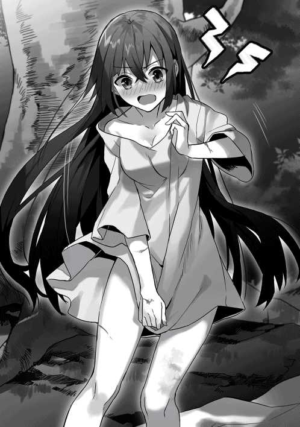
「......いっ、やああああぁぁぁぁ──ッ！！！」
はね飛ばされたかのように立ち上がり、とっさに少年から距離をとろうとする。が。
「ばかっ！ そっちは罠の火属性魔法が──」
「ひぃっ！」
「逆！ こっちに戻ってこないと土の槍が──」
「な......っ！」
「違う違う！ 西ってこと！ そっちは雷の──」
「ひゃあああぁ......っ！」
数々の驚異的な魔法をなんとか回避しきって、結局、私はもとの立ち位置に戻っていた。大樹の陰になるそこには、泥でぐちゃぐちゃに汚れた法衣と、その上に布が敷かれているだけだ。
「ちょうど観察してたところだったから」
「観察！ 観察ですって!? 殺します！ とってもとっても殺しますよ!?」
「いや。わけわかんないよ......」
ひょい、と少年が手渡してきた別の布を空中でつかみ取り、大急ぎで身にまとう。正しい関係のない他者に肌を見られるのは、ミシア教の聖典で禁忌とされている戒めの一つだ。だが、たぶんそれ以上の屈辱を味わわされた。顔が強い熱をもっているのがはっきりと分かる。
反撃を。
そう思うが、やはり魔法が四方八方に伏せられているし、少年は警戒して十分な距離をとっていた。幻視が告げる。接近する前に、やられる。緻密な計算による魔法の配置には感服する。
「でも、今ので分かった。君のその能力は無意識の状況でも、君自身を守るためにはたらくってことがね」
そのとき、ゆっくりと、右目の真ん中に生まれた熱のような感覚が消えていく。
「持続時間は約五倍した十七秒ってところか」
「......ッ」
今の私でも、未来を感じることはできる。だが、実際に「敬虔の瞳」を発動させている時間の方が、圧倒的にクリアな光景を視ることができるのだ。
「......そうか。裏を返せば、君は能力なしでも、おぼろげな未来が見えているんだ。だから、適切なタイミングで能力を発動させることができる」
ぞくり、と背筋が凍えた。
鋭い理性がたった数秒の問答で私の能力の性状をえぐり出していく。その感覚は──エィム様と会話しているときと似ている。
底知れぬ感覚。この人はどこまで理解して、どういう意図でこの言葉を放っているのか。未来予知があったとしてもうかがい知ることができない、圧倒的な計算。
ハーミリアは思わず唇を噛みしめていた。
自分は、なにをしているのだ。
敵に最重要の秘密である能力の性状を探られている。しかも、なすすべもなく。
「我らもまた、あなたの『対訳』の能力の性状、あなたの魔法回路の太さすら把握しています」
「────」
す、と少年は目を細めた。
「なるほどね。ってことは、神聖軍は僕たちの魔法の詠唱文だって理解してるんだな。......これは作戦を立て直す必要がある。貴重な情報提供ありがとう」
「あっ！ ち、違います！ 我らは魔法の仕組みなど知りません！」
「なんで自分たちのことを貶めてるんだよ......」
少年は大きくため息をつくと、興味を失ったかのように肩をすくめた。
「てか、さっきから喋ってて思ったんだけどさ。君って意外とバカだよね？ 超重要な機密情報をあっさり喋っちゃうし」
「な......」
絶句した。真正面から、大上段に、こんな風に否定されたことは今までの人生でなかった。
最初のでかすぎる衝撃が去ると、あとに残ったのは爆発寸前の怒りだけだった。
「神秘使いは幼い頃から戦闘訓練ばっかりって聞いたことがある。基礎的な学問を修める時間はないんだろうな......」
「言わせておけば！ 私だって聖典の教義はすべて暗記しています！ 細則まではおぼえていませんが、民を相手に説話をすることだってできます」
「君が説話？ 冗談もたいがいにしてよ。......それに、僕に裸を見られちゃったけど、それは教義的にはオッケーなの？」
「ダメに決まっています！ あなたのせいでしょう！」
「でも、今の君には動けない。脳みそが筋肉な聖女様にはそれが限界か......」
「むぅぅぅぅ──ッ!!」
なんなの、この男は。
失礼にも限度というものがある。あの精密で緻密な計算の上になされる戦いには、一種の芸術作品のような美しさがあったのに。
「無駄話をした。......最後に、君に一つだけ言っておくよ」
瞬間──少年の気配がさっと変わった。
全身から油断の気配が消え、いつでも動き出せる状態になっていく。あの唇はためらいなく、必殺の詠唱を口にするだろう。
右目がかすかに疼いた。
「敬虔の瞳」を発動させるか。
............まだだ。
残りの聖痕は一つしかない。聖痕に光が戻る夕刻まで、まだしばらく時間がある。
「鈴木は、誰のことも頼らないよ。一番の側近である君のことも」
「スズ、キ......？」
頭の中の情報が、かちりと組み合わされる。
「それは、エィム様のこと？」
「そう。君たちの教皇様のことだ。君は理解していないみたいだから、もう一度だけ言っておく。──あいつは誰のことも頼らないよ」
──使ってやるさ、壊れるまでな。
そう言った神秘使いの表情が脳裏にまざまざとよみがえる。
凍りついた世界を打ち砕いてくれた、ただ一人の存在。私はあのお方に救われて、尽くしてきた。
そんなことは、理解している。
エィム様は私を使う。道具のように。
それでいいと思っていた。
だが──この胸の底をうごめく、底冷えするような感覚はなんだろう。
目の前の魔法使いの言葉に宿る圧倒的な重みはなんだ。
「君はなぜ戦っている？ この戦争で僕たちを殺し回って、それで何が得られる？」
「それは──」
「教義が定めるから？ 聖典に、魔法使いは皆殺しにしろって書いてあるから？ それとも、教皇様が命令したから？」
「......」
聞く必要はない。私を動揺させるための言葉だ。そんなこと、十分に理解している。──なのに、聞き入ってしまう。この少年の言葉に。
「その教皇様と聖典は、確定した未来を視てしまう君の苦しみを救ってくれたのか？」
「............なぜ」
瞬間、少年は乾いた苦笑を浮かべた。一瞬のその仕草に、膨大すぎる絶望の影をみたような気がして、私は思わず息をのむ。
「だって、未来が分かってしまうこと以上の絶望は、僕には想像ができないから」
「......そんなもの、慣れてしまいました」
「そ」
あっさりとそう言った少年は、ふたたび戦闘態勢を整える。
「だとするなら、君は鈴木のためだけに戦ってるってことになる。僕はそれだけはやめるべきだって、忠告しておくよ。君は必ず......いや──」
私は「敬虔の瞳」を発動させた。
右目に熱のような感覚が灯り、脳裏に無数の未来の可能性が提示される。五倍した十七秒間で、私はこの少年から逃げ切らなければならない。
ふと、疑問が浮かぶ。
なぜ、この少年はこんなことを私に告げるのだろうか。私以上にエィム様のことを知っているとでも？
だとして、その言葉には、やっぱり私を動揺させることが目的なのだろう。
未来が分かること以上の絶望はない。
たしかにそうかもしれない。
でも、私のこの力はエィム様が必要としてくれている。
それだけで十分だ。
「......はぁっ！」
もう躊躇うことはなかった。
両脚に全力の力を込め、前に踏み込む。
「──正解」と少年が言った。
周囲から私を押し潰そうと大量の魔法が迫ってくる。だが、至近距離に詰めれば、少年は自分の身を守らざるを得なくなる。
伏せてある魔法だけならば、回避しきれる。
背後でいくつもの爆発が連続する。正面からは土の槍が飛んでくる。見えている未来が次々と姿を変え──私はその中に、かすかな一筋の希望の道を見つけた。
「そこ──ッ！」
少年の懐に飛び込むような角度で接近し、それをフェイントにして、右側に抜ける。
私は襲い来る魔法の群れに飛び込んだ。
衝突は次の瞬間だった。
いくつもの爆発が弾け、踊る。
私は、笑っていた。
第十章：「あまねくミシアの光を世界に満たせ」と教皇は言った。
鈴木は玉座について、頬杖をついていた。
次々と神秘使いがその前に平伏し、言葉を並べていく。
「ご報告を申し上げます。南方、サンベアー地方で反乱分子を多数捕縛し、そのすべてに極刑を下しました。中には、かつての大魔法使いも何人か含まれており──」
「エィム様、どうかご覧ください。西方、スターシープ地方でうごめいていた反乱の計画案を入手しました。我らはこれを逆手にとって──」
「暁の革命軍。国内で最大の反乱勢力に関する重要な情報を入手しました。どうかこの私にお任せください。必ずや、かの勢力を──」
「今回の税収です。田舎の小国とあなどっておりましたが、魔法を応用した生産技術には目を見張るものがあります。我ら直轄支配軍の継戦能力は──」
素朴な疑問がある。
なぜ、その程度のことを俺が理解していない、と考えるのか。
分かりきっていることを奏上するということは、自分の愚鈍さの証明だとなぜ気付かないのか。
玉座につき、頬杖をついて、ただ時間だけが無為に過ぎ去っていく。
神秘使いの中でも優秀だと思えたものばかりをそろえた遠征だった。だというのに、このざまだ。俺が計画し、俺が動かした軍略の成果を、まるで自分のことのように誇るしかできない。
......いっそ、皆殺しにしてやろうか、と思う。
それはきっと、多少なりとも刺激的に違いない。
だが、その後が面倒だ。これほどの戦力を再び集めるのには骨が折れるだろうし、再び集めたところで同じような人間しか集まらないだろう。
俺に選び取れるのは沈黙だけだ。
沈黙と、かすかな微笑。
それだけで、この愚か者たちは餌に集う獣のように働き続ける。
「............こんな世界など、滅んでしまえ」
「エィム様？ 今、なんと？」
「聞こえなかったか」
鈴木は微笑を向ける。
「あまねくミシアの光を世界に満たせ。そう言ったのだ」
幼い頃から、世界を支配する法則を理解するのは容易かった。
人間の社会には、金だとか、序列だとか、自己の幸福だとか、明白な尺度があって、誰もが自分の価値に従って生きている。
その仕組みを理解しないで、うわべだけで踊る他人の心を理解するのは、もっと容易かった。そんなものはどこか緩慢で、弛緩した、無用の長物でしかなかった。
生まれたその瞬間から、俺には数学の才があった。だからそれを続けた。それ以上でもそれ以下でもない。
賞賛と祝福しか俺の人生にはなかった。当然だ。俺がそうなるように、俺の未来を選び、俺自身を調整してきたのだから。
だが、愚かな者たちはそんな俺を疎ましく思う。自分の力で俺に立ち向かえないからと、弱者同志で団結し、甘い諦念に沈んでいく。──それも、世界を支配する法則の一つだ。そんな弱者のことを覚えている必要がどこにあるというのだろう。
だが、たった一人。
忘れることのできない人間がいる。
執念なんて言葉が甘く聞こえるほどの、身を削るような努力の果てに、俺の隣に立っていた人間が一人だけいた。
印象に残らない、黒髪と容貌。──だが、痩せこけた獣のような貪欲な輝きを隠そうともしない瞳。
高橋は、俺と同い年でありながら、唯一、俺を理解することができた人間だった。俺の導き出す数式や概念に、どんな凡人でもたどれるような道筋をつけ、到達する。遠回りにしか思えないようなその道筋の途中で、俺は何度も新しい発見に出会うことができた。競い合い、高め合っている。そう確信していたあの数ヶ月間、俺はたしかに高揚していた。
だが、あいつもまた、俺の前を去った。
俺の知らないところで、何かに絶望し、敗北を認めたのだ。
瞳の輝きを失ったあいつはもう、あいつではなかった。
その瞬間、俺の胸に刻まれた空洞は、すぐに怒りで満たされた。一瞬でも期待させた俺を裏切ったという怒り。
だから、俺は──あいつを踏みにじる。
あいつの全てを奪い去り、あいつの全てを破壊し尽くす。
それで終わるような男ならばそれまでだ。愚かな者どもと同じように、すべてを俺は忘却するだろう。数学という土俵で競い合ったあの日々も。この世界で唯一傷をつけられたあの戦いのことも。
だが、お前は本当にそうなのか。
少し頭が切れるだけのこざかしい人間なのか。
俺は確かめたい。
この世界の俺を生かすのはその衝動だけだ。
「教皇猊下！」
謁見の間に飛び込んできたのは、動揺しきった一人の神秘使いだった。荒い息をつき、臣下としての礼さえも忘れたその態度には、罰を加えるという決定よりも興味が勝った。
「貴様！ 控えよ！ 御前であるぞ！」
「いい。何事だ？」
頬杖をついた姿勢のまま、俺は言う。我が意を得たとばかりに神秘使いがまくしたてた。
「ハーミリア様がお戻りになりました。辺境の地で、暁の革命軍率いる勢力と交戦。──撃退され、聖槍と法衣を失い、現在は高位の法僧たちによる治療を受けています」
「......」
「え、エィム様......？」
「それで報告は終わりか」
左腕の付け根に宿った聖痕がわずかな熱を帯びる。
その次の瞬間、神秘使いの身体の周囲に光の拳としか言い様のないものが構成された。巨大なその拳が、神秘使いを文字通り握り、宙に浮かび上げる。
「え、エィム様......！ 御前での無礼を、どうかご容赦ください......！ すぐにご報告せねばと思い、はせ参じたのです！」
「お前が知っている情報はそれが全てなのか。すべてを語れ。潰される前にな」
ぎりぎりと光の拳が締め上げられる。もうすぐ肋骨が砕け、肺腑を突き刺し、神秘使いの命を奪うだろう。
「い、いえっ！ 申し上げます！ ハーミリア様に大きなお怪我はなく──」
ぎりり、と拳が締め上げられ、神秘使いが奇妙な声を発した。
「て......敵の......中には......暁の大魔法使い......その姿があり......ハーミリア様は......恐らく......彼に倒されたものと............」
「それを最初に言え」
「ぐあっ！」
光の拳がかき消え、神秘使いは大理石の床にたたきつけられる。その衝撃で男は気絶していた。すぐに兵士たちが気絶した男を運び出していく。
「......ついに動き出したか」
ふつり、と胸の底で何かが揺れる。そんな感覚がした。
見せてみろ、高橋。
お前の決断を、俺は見たい。
そして、その全てを蹂躙し尽くしてやる。
「──エィム様」
謁見の間に、よく響く声が通ったのはそのときだった。
居並ぶ歴戦の戦士たちの中にあって、細い体つきと、柔和な顔立ちをしたその神秘使いは、逆の意味で目立っていた。その銀色の瞳が、まっすぐにこちらに向けられている。
「暁の少年はやはり別格。『聖槍の乙女』さえも撃退した、かの魔法使いは、猊下が直接手を下されるべきでしょう」
「貴様は俺に指図するのか、『羊使い』」
まさか、と言って『羊使い』はすべての感情を覆い隠す仮面のような微笑を浮かべた。直後の一瞬、『羊使い』の身体を神秘の光が包んだ。
「............」
そこに、黒い髪と瞳の少年がいた。継承した黒衣と、黒い長杖を持ち、こちらに平伏している。その容姿はこの世界の高橋のものに他ならなかった。その瞳に、痩せた獣のような貪欲な輝きをたぎらせている。
「ほらね。この姿を見た途端、猊下はとても楽しそうな表情をなさった」
『羊使い』が高橋の顔と声で言う。
「ボクが、暁の少年を倒していいはずがない。そうでしょう？」
鈴木はかすかに肩を揺らした。多少は、楽しませてくれる人材もいる。
「......ああ。そうだな」
「だとするなら、ボクにできることは一つだけです」
まばたきの間に、『羊使い』はもとの容姿に戻っている。
「暁の革命軍。あの周到な反抗勢力を、ボクは破壊します」
「......どうするつもりだ？」
「うーん、そうですね。例えるのは、建物にしましょう」
大きな身振りで『羊使い』が続けた。
「どんな建物や橋にも、一番力のかかる場所があります。そして、そこを破壊するのは、大抵一番力が必要ないんです。だって、普段から大きな力がかかっているんだから」
『羊使い』は天使のような笑みを浮かべた。
「今の革命軍の実力の源は、猊下が大好きな暁の大魔法使いではありません」
周囲に集う歴戦の戦士たちから、失笑の声が飛ぶ。あの賊軍がなぜ暁の名を冠しているのか。彼らが急速に戦闘力を拡大できているのはなぜなのか。考えれば分かるだろう。あの少年が最重要の中核にいるからだ、と。
「みんな、甘いなあ。ボクはそうは思わない。暁の大魔法使いは、言うならば建物の一番上に飾られた飾り金具さ。誰もがその姿を見ることができるし、誰もがそこを目指す。──でも、その建物で一番力がかかっている場所は、屋上なんかじゃないでしょ？」
人差し指を左右に振りながら、まるで歌うように『羊使い』が言う。
「今の革命軍がこれほど周到に力を蓄えることができたのは、二人の人物による。──一人は、今の革命軍の本当の盟主、かつての正騎士であるジークっていう名前のさえない犬人族のおじさん。それと、彼に使える若き俊英、妖精種のプロパだ。彼ら二人が革命軍をここまで大きくしたっていう事実が、いろんな報告を付き合わせれば分かってくるんだよ」
「興味深い話だな」
俺のその一言に、反論の言葉をのど元までせり上がらせていた戦士たちが一斉に沈黙した。なかば呆然とした表情で、こちらを見上げている。
「俺も手を貸そう」
「本当ですかっ！ 猊下はボクの神秘を使える！ 作戦の幅が広がります！ えっと、なので、ボクにお任せください、教皇猊下」
ニコニコとした笑みを崩さず、少年は言った。
「──あの組織、中から崩壊させてご覧に入れます」
第十一章：「定義の違いは理解するけど」と青年は苦笑する。
「タカハ──！」
「おーい！」
「どこにいるんだー！」
村人たちの声が、夕暮れの森の中を反響していく。
「......タカハー......！」
マルムも、普段は小さな声を張って、彼の名を呼んでいた。
足下はひどくぬかるんで、探す者たちの足取りを阻む。人為的な濁流が押し流した森は、その様相を大きく変えていた。流れ着いた木々や泥が、多くの動物や植物の生態系に打撃を与えたに違いない。範囲こそそこまで広くないように調整していたが、その痛みは、この森の恵みで生かされていた自分たちが誰よりも知っている。
「......あった。......青い洞窟」
マルムは思わず声をあげた。
流木や泥の塊が存在感を主張しているせいで、確信するのに、ずいぶん時間がかかったが、間違いない。幼い頃によく遊んだ景色が目の前に広がっている。
青い洞窟は子どもたちの間の通称だ。やや青みがかった灰色の岩でできた小さな洞窟。かくれんぼや追いかけっこのときは、いつもタカハがあの洞窟を利用して逆転勝利を掴んでいた。『地形も使わないとね』という自信たっぷりのタカハの口調が脳裏に再現される。もし、タカハが動けない状況ならば、あそこに逃げ込むかもしれない。探索が始まってからずっと、マルムはその可能性を考えていた。
いてもたってもいられず、洞窟に駆け寄る。
幼い頃は、童話に出てくる巨大な獣の大口のように大きく、暗く見えたその洞窟は、身長が伸びた今となっては、ちっぽけな小さなくぼみのようでしかない。
「......タカハ？」
声をかける。すぐに奥の方から反響が帰ってきて、人の気配がないと分かった。
吐息をつく。期待をしていた分、その落胆は大きかった。
だが、マルムはすぐに顔を上げる。
希望は十分にある。
探索を開始した直後、ピータ村の村人たちは重大な痕跡を発見していた。
切り裂かれた純白の法衣と、タカハが持っていたはずの毛皮の布が、見つかったのだ。
その周囲は、見るも無残なほどの魔法の痕跡がまき散らかされていたが、狩猟団員たちの綿密な調査の結果、そこで血が流れたり、人間が倒れた痕跡はなさそう、ということだった。そこから足跡も二人分伸びている。一人はまっすぐに神聖軍の拠点の方向へ。もう一人は、ややふらつきながらも森の深い方向へ。状況としては疑いようもない。タカハとハーミリアは濁流に流された後にほぼ同時に意識を取り戻し、戦闘に突入。その結果は引き分けで、二人は互いを追撃することなく別れた──
とするならば、危機的な状況にあるのは、むしろタカハの方だ。
神秘使いは基本的な身体能力にも加護を授かっている。運動能力のみならず、身体の頑丈さも、ふつうの人間を大きく上回っているのだ。ましてや『聖槍の乙女』は、その加護の強さもまた魔法使いたちに恐れられている。
対して、タカハはあらゆる魔法に精通しているが、その身体能力は一般人と同等。しかも、『聖槍の乙女』を濁流に叩き込むために、自爆を覚悟した魔法を発動させていた。あの台地に立ったタカハは見ているこっちが目を覆いたくなるほどに、ボロボロだった。
回復魔法を使い続けて回路が焼きついたとしても。
敵の捕虜になったとしても。
なんでもいい。
ただ、生きてさえいてくれれば。
「ここが......青の洞窟なら......」
他にもタカハが隠れそうな場所にはいくつか心当たりがある。その全部を探す。見つからなくても、マルムは諦めるつもりはなかった。
ティーガの内側で、羊皮紙の本を握りしめる。擦り切れ、何度もつぎはぎの補強をされた、ゲルフ様の日記。
『それは僕の大事なものだから』
タカハはそう言って、これを私に預けた。この日記にも、それを私に預けたという事実にも、大きな価値はないかもしれない。でも、タカハは必ず生きて帰るつもりだった。あのタカハがそう決めていた。──だったら、タカハは必ず帰ってくる。いつだって、どんなときだって、どんな状況だって、タカハは打ち破ってきたのだから。
大きく一歩を踏み出そうとした、そのときだった。
「マルム──！」
それは囁き声だったが、鳥の鳴き声のように鋭く私の耳元に届いた。
村人の一人が背後の木立で手招きをしている。
「神聖軍だ。逃げるぞ──！」
「......！」
意識を集中すれば、深く陰った森の木立の奥の方から、金属の鎧の関節が互いにぶつかり合う音が聞こえてくる。
マルムは後ろ髪を引かれるような思いで、その場を立ち去った。
二日間、濁流が押し流した森を探し続けて、それでもタカハを見つけることはできなかった。
二日後の夕刻。
「......以降の探索を、ピータ村のみんなにお願いしたい」
そう言ったプロパの声と表情は憔悴しきっていた。その表情を見た者の全員が、プロパの葛藤を理解した。
マルムが手を伸ばすよりも早く、大きくてがっしりした腕がその肩を叩く。
「任せろ。ピータ村狩猟団の名にかけて、必ずタカハを見つけて、革命軍のアジトまで送り届ける」
「ガーツさん......」
プロパは寝不足のために充血した瞳でこちらを見渡した。
ピータ村の村人たちが安心させるように頷く。
「タカハは生きてる。敵が『聖槍の乙女』だろうと、負けるはずはない。そうだろう？」
「......はい」
「そして、お前さんは革命軍の屋台骨だ。戻ってやらなくちゃならないことがある」
「......はい」
「あのまま村で生きていたなら、俺たちはいずれ飢え死ぬだけだった。その命を、お前さんとタカハに救ってもらったんだ。この借りは、必ず返す。俺たちの命にかけても」
「............っ」
顔を背けたプロパは、はっきりと苦悩していた。
この地にとどまってタカハの探索を続けるべきか。
タカハの救出を一度は諦め、革命軍の指揮官としての任務に戻るべきか。
「......プロパ」
思わず駆け寄り、マルムはプロパの両手をとる。
「私たちは......大丈夫だから」
プロパは深く頷くと、身を引いて、村人たちの全員にもう一度言った。
「タカハを見つけてください。どうか、よろしくお願いします」
プロパは革命軍の魔法使いたちに向き直る。
「予定より遅れたが、これより次の作戦地域に移動する。すぐに準備にかかれ」
「くそ......っ、こっちもダメだ。神聖軍のやつら、何人送り込んできてやがるんだ？」
引き返してきたガーツさんは、肩についた枝葉を払おうともせずにそう言った。
深い沈黙の底に沈んでいるはずの夜の森は、今はそのベールを強引に引きはがされている。いくつかのかがり火が列をなして踊り、無秩序に木々が切り倒されていく音が響き渡っていた。神聖軍は大量の人員を投入して探しているのだ。私たちを──そして、『聖槍の乙女』と死闘を演じたタカハのことを。
進行方向をあらかた塞がれてしまい、探索部隊は数時間の間、この地点で釘付けになっていた。退路は確保してあるが、前に進むことができない。今日の探索を切り上げてもいいタイミングだった。
「タカハはどこに隠れてるんだ......？ 人が息を潜められる場所なら、あらかた探し回ったぞ」
ガーツさんのため息交じりの言葉に、狩猟団の若手の一人が肩をふるわせる。
「まさか......あいつ、もう......」
「だが、神聖軍のやつらが今もまだあれほどの人数を使っている。俺たちを狩り出すのが目的なら、あそこまでしらみつぶしな探索は必要ないはずだ」
マルムは村長の言葉に納得した。そのとおりだ。足の遅い老人や子どもをふくむ私たちを捕まえたいだけならば、もっと小規模な偵察部隊を使って私たちを見つけ出すだけでいい。......人手が必要ということは、タカハや『聖槍の乙女』を探しているからだろう。
「......そう遠くは行ってない......はず」
「ああ。ピータ村の周囲には神聖軍の部隊がいくつかいる。傷ついているタカハなら、そこを突破するよりもまず、俺たちとの合流を優先するはずだ」
そのとき、マルムの脳裏をふと一つの考えがよぎった。
「タカハも......」
「ん？ どうしたんだ？ マルム」
「タカハも......動き回ってるのかも」
「まあそりゃあ、多少は動けるだろうがな。あの戦闘の痕跡、タカハの足跡は乱れていた。『聖槍の乙女』と一騎打ちを演じて、かなり消耗しているはずだぜ」
「つまり、すれ違ってたってわけだね。広い森だからそのすれ違いもしょうがないとは思うけど」
マルムははっとして顔を上げた。
「たしかにこの森じゃあ、お互いが動いているなら見つけられる可能性は低いのかもしれねえな」
「僕は素直に助けを待ってればよかったのか。......やれやれ、これだけ疲れたのに、裏目に出るなんてね」
「タカハ──！」
マルムは思わず叫び、駆けだした。
深い影を落とす森の木々の間に、その影よりも黒いローブ姿の青年が立っている。左腕は傷を負ったのか布が巻かれているけれど、愛用の杖を背負ったその姿は間違いなく、探し続けていた人影だった。
視界がぐにゃりと歪む。タカハの苦笑がその端に見えて、直後、マルムはその胸に飛び込んでいた。体温とその存在を、全身で感じる。
「心配させちゃった？」
「......した。......許さない」
「でも、言っただろ？ 僕を信じてって」
「信じるのと......心配しないのは......違う」
「定義の違いは理解するけど、使い分けが難しいなあ」
タカハが苦笑して、じわりじわりと胸の底に熱が広がっていくのをマルムは感じていた。
「お、おまっ、お前さん......！」
マルムの肩にそっと手を置いたタカハが、探索隊のメンバーに向き直る。
「ガーツさん、みなさん、僕を探してくれていたんですよね？ 本当にありがとうございました。このとおり、ぴんぴんしてます。さすがに『聖槍の乙女』と戦うことになったあの瞬間だけは、肝が冷えましたけど」
「ったく、こいつは......！」
「うわっ！」
ガーツさんが屈強な腕でタカハの頭を抱え込む。
「肝が冷えた程度で済んでるのがおかしいんだよ。相手は文字通りの化け物なんだからさ」
「ご心配をおかけしました」
「お前さんが無事ならそれでいいさ」
ガーツさんはにっと笑って、タカハを解放する。
「傷だらけだな。大魔法使い様」
「ええ。できれば専門家の治療をお願いしたいです。肩と足の傷は結構深いみたいなので......」
「よしきた。みんな、獲物は捕らえた。さっさとずらかるぞ」
「はい。......っと、そうしたいのは、やまやまなんですが」
「ん？」
「ちょっと限界みたい、で......す──」
その直後だった。
──タカハが意識を失うようにして倒れたのは。
「幸いに幸いが重なりました。まず、肩の傷」
僕を見つめるジーナさんは、包帯が巻かれた僕の右肩に触れる。
「あとほんの少しでも内側に刺さっていたら、刃先が確実に肺に到達していました。自らの血に溺れて息ができなくなっていたはずです。すぐに回復魔法を使っていなければ、どうなっていたか分かりません」
ハーミリアが投擲したナイフが、僕に刻んだ灼熱のような痛みを思い出す。
「そして、足の傷。こちらもあと少しでも内側に及んでいれば、血管を傷つけていた。足を切り落とさなければならない状況になっていたかもしれません」
その状況を想像して、戦慄する。
「そんな深い傷が二つも開いた状態で、泥に飲まれました。その傷から体中に毒が回っていたのです。回復魔法を継続的に使用していたため、なんとかその毒に拮抗することができていましたが、非常に危険な吊り橋を渡っていたような状態でした」
ハーミリアとの戦闘の後、全身が熱っぽく、だるかったのはそのせいか。単なる風邪のようなものかと思っていたけれど、一歩間違えばどうなっていたかは分からない。
「それから、右の肋骨が二本折れています。上位の回復魔法でほとんど治癒が終わっていますが、あまり無茶はしないこと」
「はい」
「右耳の鼓膜は再生が遅れています。耳鳴りは、もうしばらく続くと思ってください」
「はい」
ジーナさんはにっこりと笑んだ。
「いいでしょう。では、ベッドから下りて動き回ることを許可します」
「はい......！」
慌てて身を起こそうとしたところ、ずきんと刺すような痛みが右の胸で走った。その表情を見つけたジーナさんがすぐに僕の肩を押して、ベッドに押さえつける。
「無茶しない。いいですね？ タカハくん？」
「......はい」
今度はゆっくりと、いたわるように身体を起こしていく。僕にはまだ使いこなすことができない回復魔法を夜通しで使い続けていてくれたらしい。全身にあった鈍い痛みや熱っぽい感じが消えるだけで、自分の身体がとても身軽になったように感じる。
「ありがとうございます。ジーナさん」
ジーナさんは申し訳なさそうにうつむいて、すぐに顔を上げた。
「本来ならば、もう数日は安静にしてもらわなければならないような傷です。治療をしたい箇所が他にもいくつか残っています」
「はい」
「ですが、タカハくんにはやらなければならないことがある。国中の魔法使いたちが私たちと同じように、革命軍の存在を心待ちにしているはずです。これ以上、タカハくんをベッドに縛り付けておくことはできません」
「ジーナさん......」
癒し手の立場にしてみれば、まだ余談を許さない状況なのだろう。心の底から心配してくれていることがさすがの僕にも分かって、返すべきふさわしい言葉を見つけられなくなる。
ジーナさんは再び、にっこりと笑った。その笑顔はプロパとよく似ている。
「安心して。できる限り最大限の治療は施してあります」
「はい」
「主人と、それからプロパのこと、どうかよろしくお願いしますね」
「ゾリンさんに会うことがあれば、ジーナさんは無事だと伝えます。......プロパは、僕がいなくたって大丈夫です。僕よりもずっと頼りになる、革命軍の指揮官ですから」
「......あっ......」
瞬間、ジーナさんは顔を背けた。
その直前、白いその頬を一筋の輝きが伝ったのを確かに見た。
「ご、ごめんなさい......、私ったら。なんだか、泣けてきてしまって......」
「......」
「タカハくんも、プロパも、本当に大きくなったよね。若い二人が魔法使いたちの尊厳を取り戻すために戦ってくれていると考えたら、なんだかとてもかけがえのないようなものに感じてしまって......」
その『かけがえのなさ』は僕にはよく理解できなかった。ふさわしい実力があって、ふさわしい時期に、ふさわしい立場についた。それだけのことだと、僕は思う。
いつもの僕ならそう考える。そのはずだった。
「............プロパは」
気付いたときには、言葉が滑り出していた。
「プロパは、僕と違って、みんなのかけがえのないもののために戦っています。以前と同じように、魔法使いたちが隣人と笑い合える。そんな国を取り戻すために。どうか誇りに思ってください」
「そうね。私が誰よりも一番応援しないといけないわね。......ええと、それじゃあ、タカハくんは？」
「僕には、魔法使いたちの全員を救うだなんて、嘘でも言えません」
「......でも」
「はい。僕は戦います。神聖軍に奪われたラフィアを取り戻す。それだけが目的ですから」
ジーナさんは、ぱちくりと目を瞬かせた。
「......ふふっ」
そして、すぐに満面の笑みを浮かべる。
「なんだかいいわねえ、そういうの」
「......いい？ どこがいいのですか？」
「タカハくんには分からないことかもね」
「どういうことです？」
ちょっと悪戯っぽく返されたその言葉に、僕は少しだけむっとした。
「きっとラフィアちゃんを連れ戻したときに、よく分かるわ。タカハくんが命をかけて頑張ってきたことには、とても大きな意味があるってこと」
そりゃあもちろんあるだろう、と思う。僕がラフィアを取り戻したいと願って、実際にラフィアが帰ってくるのだから。
「やっぱり、分かってなさそう」
「もう少し明確な言葉で説明してください」
「あららー？ 口ごたえするのね？ また絶対安静に戻しちゃうけど、いいのかしらー？」
「......」
手強い。意外と、手強い。プロパとは対照的に優しげでたおやかな雰囲気だけど、会話のテンポはとてもよく似ていると思った。
「タカハくん。どうか、気をつけてね」
「はい。ジーナさんも、ご無事で」
うん、と頷いたジーナさんは、かすかに肩を震わせた。もう一度、高原に咲く花を濡らす朝露のような輝きが癒し手の頬を伝う。それをぬぐったジーナさんは、きっぱりと、言った。
「いってらっしゃい」
第十二章：「すぐに出立の準備を整えます」と女騎士は踵を返した。
革命軍のアジトを見上げて、懐かしいという感想を抱くなんて、思わなかった。
敵国の進軍を警戒するために建設された哨戒砦は、巧みな計算で山の斜面に構築されていて、一見するとそこに建造物があるようにはとても見えない。敵がまだこの地をかぎつけていないのも、先人たちの残してくれたこの砦をアジトと定めたおかげだ。
「着きましたね、タカハ様。長旅お疲れさまでした」
「ライナスさんのおかげで、最後は馬車での旅でしたから、とても助かりました」
「こうして再び旅をともにできたこと、私は光栄に思います。暁の大魔法使い」
商人ライナスは目元に穏やかな光を湛えて微笑んだ。
いつか僕が救出したライナスは、すでに革命軍に密かに協力する商人として復帰していた。今はどういう筋から手に入れたのか、ライノールという別の商人の証明書を使っているらしい。ほんと、たくましい。
たくましさ、という意味では、その娘も相変わらずだ。
「では、タカハ様とマルムは兄妹なのですか？ 本当に？」
「......だから......ホントだってば......」
「お姉さまはあの最後の王女、ラフィア。父親はゲルフ様だったのでしょう？ まあ、なんということ！ この国の因果をすべて詰め込んだようなお家なのですわね！」
「......そうかもねー......」
小鳥のさえずりのような澄んだ高音が荷台の方から聞こえてくる。ライナスの娘で、その稼業を手伝う商人見習いのミライアの声だ。あれほどの危険な目にあっていながら、『スリリングな体験でしたわ！ これだから商人はやめられませんの！』と言い切る肝っ玉の据わりようには、一抹の不安すらおぼえる。ライナスさんの心労を僕は理解できた。
「ねえねえマルム。私にあなたの土属性の魔法を教えてくださらない？ 私、筋はいいと思うんですのよ。ねえ、お願いですから」
「......ミライア......うるさい」
数時間途切れることなく続いたその会話の相手をし続けたマルムは、少し疲れているような印象があった。
「ミライアとマルムは知り合いだったの？」
「はい！ タカハ様！」
ものすごい勢いで、荷台の方からミライアが顔を出した。よほど話しかけられたのが嬉しかったのか、翡翠色の瞳をきらっきらに輝かせている。......控えめに言って、得意なタイプではない。
ミライアは水が流れるようにすらすらと語り始めた。
「大部分の国民が名目上は奴隷という形で貴族様にお仕えしていた私たちの国において、商人という存在はやや特殊な立ち位置になるんですの。単純に言ってしまえば、身分がなくなるわけですわ」
「身分が、なくなる？」
「はい。貴族様に任命されて、奴隷という名目上の地位は解き放たれるのです。その代償として、一定の量の税を毎年収め続けなければならないんですわ。これは普通の奴隷の一人分よりもずいぶんと多い量です。独り立ちして、お得意様がいらっしゃらない若手の商人に収めることができないくらい。......ですので、私たちは商人組合に加入するのです。若手が独り立ちできるまでは、組合にその税を肩代わりしてもらう形ですわね」
「その見習い同士だから、知り合ったってわけか」
「ええ。見習いは言うならばみなライバルですから、全員の顔も名前も、もちろん弱点も知り尽くしておりますわ」
厳しい世界だな、と思う。僕が知っている商人は、村に来て、村の特産品と、村ではとれない生活必需品を交換していくのが仕事だった。当然、村の数も限りがあるし、貧しい村だってある。一人前の商人になる、ということは、大きさの決まったパイを奪い合うということなのだろう。
「そんな見習いたちの中で、頭一つ分くらい抜けて、独り立ちできそうだったのが、マルムだったのですわ」
ミライアが視線を向けると、マルムはすでに荷台の毛布にくるまって寝息を立てていた。
「決して、見習いたちの中でも口が上手い方ではありません。むしろ、あのゆっくりとしたしゃべり方が足を引っ張ってしまっているとさえ思えるほどです。しかし、売り上げの計算をしてみると、いつだってマルムは見習いの頂点だったのです」
「......へえ」
「ですから、私、観察しましたの。マルムのやり方を。そしたら、あの子、手帳になにやら怪しい文字を書き付けているんですね。あの手帳の怪しい文字の列にマルムの商売の秘密があると思うのですが、それが突き止められません」
僕は確信した。たぶんそれは、僕が前世から持ち込んだアラビア数字だ。商売に応用できそうないくつかの計算はマルムに教えてある。
「私、悔しいんです。このまま行けば、私もお父様のもとを離れることができる日も近いと思うのですが、一度もマルムに勝てないまま終わるというのは......」
「その気持ちは分かるよ」
そんなプライド、捨ててしまえばいいのかもしれない。誰とでも仲良くなれるし、強い芯を持ち、心優しいミライアは、ライナスさんの跡を継いできっといい商人になるだろう。
だが、マルムに負けたままという記憶は残る。
その記憶はいつだって目の前によみがえって、悔しさとして跳ね返ってくる。
僕だって忘れられない。自分で自分の可能性の芽を折ったあの日のことを。そして、後悔し続けるだろう。もっと数学という土俵で、戦い続ければよかった、と。
鈴木にとって僕が笑えるほどに無価値な存在だったとしても。それでも、僕は挑み続けるべきだった。
「......ミライアは......買い付けの量が、大雑把すぎ......」
「聞いてたんですのッ！」
「弱点、ゲット......？」
「反則ですわよ！ マルム！」
じゃれあいのような、他愛のない喧嘩が始まる。僕はなんとなくまぶしいものを見たような気がして、目を細めた。
「でも、私、マルムの弱点ということならば、一つ確信していることがありますのよ」
不安定な荷台でとっくみあいの寸前のような姿勢で互いの隙をうかがう二人。そのうちの一人が、自信たっぷりに指さしたのは──僕だった。
「マルムにとって、タカハ様は特別な存在ということですわ！」
「......それはもちろん......義理の兄だし......タカハは大魔法使い様だし......」
「そういうことを言ってるんじゃありません」
ふふん、と不敵な笑みを浮かべたミライアは真犯人を追い詰めた探偵のように、びしりと言い放った。
「──マルムはタカハ様のことを愛しているのです！」
「......愛？」
僕はぽかんと首をかしげた。それはあまりに唐突な言葉だったのだ。流れ星が落ちてきて直撃するのと同程度に予測不能。
「いつもクールなマルムが、タカハ様のお話になると信じられないくらいにムキになるのです。商売の稼ぎでさえ期待を低く見積もるマルムが、タカハ様のご活躍に関することだけはとても希望的なことばかり言うのですよ。それを愛と言わずになんと呼びましょう！」
どどん、と書かれた大きな文字が背後に浮かび上がって見えるような、大演説だった。
対するマルムは──
「......そんなわけ、ない」
顔を赤らめ、怒っていた。肩を震わせて、まっすぐにミライアを見つめている。
「ふっふーん。そうなんですのね？ でしたら、私がタカハ様に抱きついてもなにしようとも、マルムは気にしないと。そういうことでよろしいんですわね？」
「......気に、しない......」
いや、理由もなく抱きつかれたら僕が気にするんだけど。──と思っているうちに、ミライアが水を得た魚のように御者台にいる僕に近づいて、腕に腕を絡めてきた。
ミライアは確信した様子でマルムへの言葉の攻撃を続けている。マルムは赤い顔で反論しているが、怒りに我を忘れているのか、いつもの淡々とした切れ味がない。
マルムが、僕に好意を持つ──？
その可能性はとても低いと思う。よく分からないけれど、普通は優しい男がモテるのではないだろうか。自己採点として、どう考えても僕は優しいの対極にいる。女の子に興味もないし、そういうそぶりをしたこともなかったはずだ。
馬車はゆっくりと道を逸れて、アジトの方へ進んでいく。茂みに偽装された馬車のための入り口が素早く開き、すぐに後ろで閉じられた。それとほぼ同時くらいだった。
「タカハくん──！ ご無事でしたか！」
飛び出してきたのは、銀色の髪をもつ女騎士。背負う特大剣には専用のホルダーが用意されていて、歴戦の雰囲気を身にまとっている。
「『聖槍の乙女』と交戦したと聞きました。それを聞いたときから、タカハくんに万一のことがあったらと思って......」
「なんとか生きてるよ。ベアトリーチェ」
ベアトリーチェは大きく安堵の吐息をつき、それから、僕の腕をとっているミライアと、そんな彼女に飛びかかろうとしているマルムを見つめた。
「それで。あなた方は？」
なぜかその声は先ほどまでより一段階くらい声のトーンが低くて、僕はぎょっとしてベアトリーチェを見た。表面上はニコニコしているけれど、いくつもの戦場をともに駆け抜けてきた僕には分かる。あれは敵に向ける目と同じだ。......けど、なんで？
「タカハ様に命を救っていただいた商人ですわ」
「......義理の、妹......」
「タカハくんは『暁の革命軍』の中核をなす大魔法使いです。士気にも関わりますから、気安く触れないようにお願いいたします」
「そういうあなたはどなたなんですの？ いきなり失礼で不躾ですわ」
「戦場でタカハくんの命を守る戦絆。元王盾騎士団所属、ベアトリーチェです。不躾なのはそちらではありませんか」
「どういう点において不躾なのか、きっちり聞かせてもらいましょう」
「なんで喧嘩してるんだよ......」
僕の言葉は木枯らしに攫われた枯れ葉のごとく黙殺され、なぜか三人は怖い顔をして怖い言葉で会話を始めた。分析してみても、その理由がさっぱり分からない。
僕は彼女たちを放置して、馬車から降りた。
「大魔法使い様も大変ですねえ......」
アジトの中へ一歩を踏み出そうとしたところで、ライナスさんがのんびりした声を投げかけてくる。
「あ、もしミライアでよろしければ、各地の特産品を山ほどつけますので、もらってやってください」
「いや。そういう問題じゃないと思いますけど」
第一、好意という感情ほど合理的じゃないものはない、と僕は思う。その感情があれば何をしても許されるという当然の雰囲気が僕は嫌いだ。想い人のためならば無制限に時間やお金といった自分のリソースを投入できるという人もいる。けれど、その恋人が何を返してくれるのだろうか。刹那的な充足感でしかないのでは、と思ってしまう。惚れた方が負けというなら、僕は負けたくない。だって、僕の行動原理はいつだって──
「............あれ？」
ぐるん、と頭の中の前提が反転した。
そんな感覚がした。
僕は何のために戦ってるんだ。何のために革命軍に入り、自分の才能を切り売りするように、他の魔法使いたちに手渡してきたのか。
決まっている。
それは僕がいつも口にしてきたことだ。
僕が無制限に自分のリソースを投入してでも、得たいものは。
「........................なるほど」
僕が手に入れたいもの。
僕が取り戻したいもの。
「僕は......ラフィアのことが、好きなのか」
その認識は、あまりに衝撃的だった。理論と計算で全ての事象を理解しようとする僕にとって、そういう感情は生まれるはずがない。そう思っていた。
でも、なんでだろう。
僕の今の状態につけたその名前は──あまりにもしっくりくる。
僕はラフィアのためならば、全てを犠牲にしても戦い続けることができるだろう。間違いない。信じられないことに、今の僕にはその確信がある。
どくり、と心臓が強く拍動した。信じられない熱が胸の底から湧き出して、いてもたってもいられなくなる。今すぐに駆け出したい。王都へ。ラフィアが鈴木に捕らわれているはずの、あの敵地へ。
従ってもいいのだろうか。この強烈すぎる指向性に。──その問いかけすら焼き尽くすようなもどかしさが、身体の内側から湧き起こってくる。
冷静になれ。
どれほど冷静に動いても、鈴木は僕の上手を行くはずだ。その可能性の先さえも読み切らない限り、勝利はない。
思考がクリアになって、加速していく。
とりとめのない思いがそぎ落とされ、いくつもの可能性が無意識下で検討されていく。
──待ってて、ラフィア。
内心にそう呟く。
アジトの廊下はどこまでも続いているように見えた。
「旧ムーンホーク領に、『革命軍』への合流を望む反抗勢力が見つかりました。ジーク卿とプロパは彼らとの合流のために向かいました」
現状を報告してくれたベアトリーチェの言葉に、僕は自分の表情が険しくなるのを感じた。
騎士ジークとプロパが同時にアジトを離れている。
「そんな情報、どこにもなかったと思うけど」
「はい。新興勢力が見つかり、彼らとの合流には革命軍のトップの判断が求められるとジーク卿は判断したようです」
違和感がかすかに首をもたげていた。
ピータ村からの帰り道で、僕はいくつもの集落に立ち寄って『福音』を広めてきたけれど、革命軍以外の大規模な反抗勢力の話なんて聞いたことがない。
「いずれにせよ、このアジトの周辺の村々は革命軍への協力を確約しています。現状、ここに大きな戦力を置いておく必要はありません」
「それはたしかに、そうか......」
僕は頷き、ベアトリーチェに問いかけた。
「なんでもいい。その新興勢力の情報、あるかな？」
「ええと、人数としては我らの支部の一つに相当する大規模なもののようです。そして、その新興勢力を率いているのは、プロパのお父様だと分かっています」
「ゾリンさん......？」
「はい。ですから、プロパくんも同行したということのようですね」
「その情報はたしかなの？」
「すでに先遣隊が接触に成功し、ゾリンさんで間違いないという確信はあるようです。また、賛同する魔法使いたちも間違いなく確認した、と」
ベアトリーチェはテーブルに置いてあった封筒を取り出した。
「タカハくんには、プロパから別の命令が下されています。『指示があり次第、転移座を用いて大監獄を攻略せよ』とのことです」
「......」
僕はしばらく沈黙する。
大監獄は、敵がかつての優秀な魔法使いたちを捕らえていた最重要の拠点の一つだ。その救出作戦は、最終作戦の直前で行われる手はずになっていた。──その準備を進めておけ、という指示が、僕にはよく分からない。なにか考えがあるのだろうか。
だが、僕の胸のうちを埋め尽くすのは、最初に感じた違和感だった。
僕は旧ムーンホーク領から帰ってきた。でも、そんな新興勢力の話は聞いたことがない。彼らと合流できるのは、たしかに大きな一歩だと思うけれど──
「ベアトリーチェ、嫌な予感がする」
「嫌な予感、ですか？」
最初はきょとんとした表情をしていたベアトリーチェだったが、僕があまりに険しい顔をしていたせいだろう。すぐに表情を引き締めた。
「僕たちもプロパの支援に向かおう」
「それが必要なのですね？」
「大監獄の攻略準備はここにいる人たちだけでもできる。騎士ジークとプロパに万一のことがあれば、革命軍は崩壊する」
「分かりました。すぐに出立の準備を整えます」
ベアトリーチェが部屋を飛び出していくのを見送り、僕はふたたび手渡された書状に視線を落とした。
流麗なこの世界の文字が、プロパの筆跡で踊っている。
その文字の向こうに、どこかひやりとした暗闇が見えた気がして、僕もまたベアトリーチェの後を追った。
第十三章：「天地を統べるミシア神よ、ご覧あれ」と神秘使いは高らかに歌う。
「ゾリン様、間もなく『革命軍』と合流できます。ついに......！ ついのこの日が来たのですね......！」
薄暗い部屋で男が囁くように言った。その言葉には熱っぽい期待と興奮が満ちていて──『ゾリン様』は大きく頷いた。
「そうだな。みな、よく戦ってくれた」
鷹揚な口調で深く頷く。集った魔法使いたちの中には、涙を流すものもある。そんな彼らの中には、ゾリンと名付けられた中年の妖精種を本当に知っている者もある。
唇の端がかすかに歪んだ。それは歓喜を共有する自然な仕草に見えているはずだ、と『羊使い』は冷静に自分を観察した。
『鏡の貌』。
そう名付けられた神秘が自分に宿ったとき、『羊使い』は神のその采配に感謝した。
幼い頃から裕福な家庭で育ち、歌劇の道に進むことを決めていた。登場人物になりきって別の人生を生きるあの感覚と、自分の完璧な演技が観客から呼吸さえも奪うあの空白が、快感だった。
そんな『羊使い』にとって、他者の容姿を完全に模倣する『鏡の貌』という神秘は、どんな破壊力をもつ攻撃よりも圧倒的な力となった。
敵対勢力のもとに忍びこみ、指揮系統を混乱させることなど序の口。王妃になりきり──国王がそうと気付く前に──暗殺したことさえもある。
そんな『羊使い』にとって、今回の任務はあまりに簡単だった。
地方で神聖軍に抵抗する意思を示す魔法使いたちを焚きつけ、軍団を結集させる。その指導者として勢力を増大させ、最大の地下勢力である革命軍の盟主との会談の場を設ける──
革命軍の盟主であり、軍団を緩まぬ規律でまとめあげている元騎士ジークと接触できれば、それで十分だった。
だが、暁の革命軍に関する情報を収集しているうちに、『羊使い』はその重要なメンバーとして、騎士ジークの直接の部下にあたる元騎士プロパの存在を知る。彼の革命軍への貢献が騎士ジークと同等かそれ以上であると捕虜たちの証言から明らかになり、『羊使い』は狙いを変えた。
一つの石で二羽の鳥を落とす。
結集させる魔法使いたちの人数を多くすれば多くするだけ、合流のための会議に革命軍の盟主である騎士ジークを引きずり出せる可能性は高くなってくる。
そして、自分がすり替わる人物を、騎士プロパに関連する人物に絞り込めば、彼もまた必ずその会議に姿を見せる。
──果たして、その計画どおりに事態は進んだ。
『羊使い』が魔法使いゾリンに成り代わり立ち上げた反抗勢力『夜明けの同胞団』には、すでに十七倍した十七人よりも多くの人数が加入している。新規に出現した反抗勢力としては異例の規模だ。隠密行動を厳重に守る暁の革命軍でさえも、その盟主が接触してくるのは必然だった。合流のための会議には騎士ジークと騎士プロパが出席する、と書状が届いたのは、数日前。
『羊使い』は森の中の廃村で革命軍の到着を待っている。周囲には『夜明けの同胞団』の幹部クラスの数名の男たち。
──だが、当然のようにこれは罠だ。廃村を取り囲む形で、神聖軍の部隊が展開している。その中には教皇猊下の御姿さえある。
暁は、ここで終焉だ。
革命の日は訪れない。
魔法の国は永劫の冬に閉ざされる。
──その決定的な一撃を放つのが、ボクだ。
右の脇腹のあたりで、ほのかな熱が生まれている。他の者たちの平均よりもずっと遅くに授かったボクの『聖痕』。今まで経験してきたどんなステージよりもスリリングで刺激的な舞台が、幕を開ける。
目を閉じ、息を吐き出す。
騎士プロパは魔法使いゾリンの息子だ。血のつながった親子を欺くのは、愛でつながる夫婦を欺くよりもはるかに難しい。
脳裏に描き出す。魔法使いゾリンの口調を、態度を、仕草を。そして想像する。幼い頃から育て上げてきた一人息子との日々を。想像し、追体験する。自分が経験した現象として記憶にして、確定させていく。演じるとはそういうことだ。第二の人生として歩むということ。その果てにしか、完璧な演技は存在し得ない。
──それでも、欺けて数十秒がいいところだろう。
家族のつながりというのは、それほどに断ちがたく、強固なものだ。『羊使い』はいくつかの苦い経験とともにそれを知っていた。
だが、その数十秒で事足りる。
『羊使い』は胸元に仕込んだナイフの柄に手を触れさせた。その硬質な感触が、自分の興奮に揺らいでいる。──再会の抱擁は鮮血に彩られる。なんて美しい筋書きだ！ こんなステージを、ボクが用意できたなんて！ さあ、天地を統べるミシア神よ、ご覧あれ！
「来ました。ゾリン様」
一人の魔法使いが、廃村の外周から駆け戻ってくる。
『羊使い』は感情的に絶頂しかけていた『羊使い』としての己を抹殺し──そして、魔法使いゾリンとなった。
鬱蒼と茂った木々の向こうから、ゆっくりと数名の魔法使いたちが姿を見せる。その先頭を率いているのは、まだ若い妖精種だった。金色の髪をざっくりと切りそろえ、青い瞳に陰るような色を宿すその青年は、無表情のままでこちらを見つめている。すぐに確信する。あれが私の息子だ、と。
だが、プロパはケガをしている様子だった。右腕を三角形の布で吊っている。直近の戦闘で負傷したのかもしれない。
「......」
『羊使い』はただ自分の呼吸を感じながら、その場で待つことにした。魔法使いゾリンは言葉数の少ない男だ。感情を大きく揺さぶられたとしても行動に出にくい。だから、私はプロパを認識しつつも、動かない──
「──......あ」
妖精種の青年の瞳が見開かれた。
その表情が、まるで春の芽吹きのように、穏やかな色を取り戻していく。
「父さん......！」
少年の瞳に、歓喜の色が宿る。
少年は感動に目を見開きながらも、自分が革命軍の一員であるという状態を決して忘れず、たしかな歩調で近づいてくる。感動的で、共感的だが、それを上回る冷静さを兼ね備えた少年だ。数えで十七を少し超えたばかり。優秀な指揮官となるのは間違いないだろう。──すぐにこの欺瞞は見破られる、と『羊使い』は確信した。だが、最初の抱擁の時間くらいは騙しきれる。その時間で十分だ。
「プロパ」
名を呼びつつも、わずかな微笑に留める。過酷な状況に陥ったこの国で、同胞たちを救うべく、地下勢力としての戦いに身を投じていた息子──そう思うと、自然に目元に涙がにじんだ。すばらしい息子だ。よくぞ生きていてくれた。
「父さん......！」
あと、十歩の距離。そこで、プロパは歩みを止める。
『羊使い』はゆっくりと近づいていく。
「その腕は戦闘で？」
「うん。数日前の戦いでやられた。ちょっと失敗しただけだから......」
「回復魔法は必要なのか？」
「大丈夫。オレが誰に魔法を教わったと思ってるんだよ？」
「むろん、この私だな」
ぱっと少年は明るい笑みを浮かべる。正解を踏み続けている確信があった。情報収集は十分すぎると思ったその倍を行う。すべては、この先の数秒のために。
「そうだよ。だからあとは安静にしてれば大丈夫なんだ。......父さん」
プロパの肩がかすかに震える。
思わず両腕を大きく広げていた。
応えるように、プロパが飛び込んでくる。
『羊使い』は笑みを浮かべた。それは勝利の笑みだった。心臓を一突きにし、動揺する隊列の中で、騎士ジークに襲いかかる。この距離ならば、いずれの敵も逃すことはない。ボクだって神秘使いの端くれだ。魔法使いを殺す程度の身体能力は有している──
待ちわびた息子が至近距離に近づいて、胸を打つ重さがわずかに『羊使い』をよろめかせた。
「────え？」
ぎん、と。
硬質な金属音が響き渡り、時間が凍りつく。
飛び込んできたのは、人ではなかった。
鋭い白銀の刃の一閃だった。
「こいつは神秘使いだ！ 騙されるな！」
目の前で、騎士プロパが一喝する。すでに白銀の剣を正眼に構えた少年の後ろで、革命軍の魔法使いたちが詠唱を開始している。
「なにを言ってるんだ......？ プロパ......？」
「それ以上、オレの父さんを愚弄するな。お前が言ったばかりじゃないか。治療の仕方を、オレは父さんに教わったんだ。──父さんなら、こんな適当な包帯の当てかたを、決して許さない」
突き刺すようなプロパの視線に、憎悪の光が満ちていく。
直後、詠唱を終えた圧倒的な数の魔法が、『羊使い』を包囲した。
「こっちが罠にかけたんだよ」
プロパは不敵な笑みを浮かべ、ぐっと腰を落とした。その両肩に戦闘の気配がみなぎっていく。
「これがすべての答えだ！ 神秘使い！」
第十四章：「想いの進む方向を誤ってはならない」と歴戦の戦士は諭す。
プロパには、幼い頃から目の前に高い壁が一つあった。
人の世にはいろんな壁がある。生まれ持った素質だったり、才能だったり、性別だったり、出身地だったり、身分だったり。
でも、オレの目の前にあった壁はそういうものと比べてはるかに厳然としていて、圧倒的な存在感を放っていた。
それは人間だ。
同い年の、少年。
名前はタカハ。
魔法の実力も、冷徹な思考能力も、すべてにおいて、まるで歯が立たなかった。幼い自分では、勝負にすら、ならなかった。それは当たり前のようにそこにあり続けた。
何度だって、それでいいじゃないか、と思った。
あいつは魔法の天才で、あいつは生まれながらに頭がよくて、でも、オレは平凡。そんなの、どこにでもあって、誰もが受け入れている、単なる隔たり。
──だが、諦めることができなかった。
なぜ同じ年数しか生きていないのに、これほどの差が生まれるのか。同じような生活をして、同じようなものにしか触れていないはずなのに、あいつは大きく、圧倒的な存在だ。
もし、その差がすべて才能によるものなのだとしたら、オレはこの世界を設計した精霊様の趣味を疑う。と、同時に、精霊様がそんなことをするはずがないと信じている。だから、オレはあがいた。だから、オレは騎士になった。
なにか一つでもタカハに勝ちたい。
そう思っていた。
身を削るように鍛錬と勉学に打ち込み、同じ年に入団した従騎士たちを蹴落とすように、活躍を重ねた。でも、それでも、オレが満たされることはなかった。オレが正騎士になった十四歳、タカハは異例の若さで大魔法使いの称号をゲルフ様から継承した。オレが戦場で初めて神秘使いを仕留めたとき、タカハは戦場で十七人目の神秘使いの首級を上げた。壁だった。どこまでも遠く、高い、壁。見上げるばかりで、届くことはあり得ないと教えるためだけに存在する壁。
そんな焦りがオレを追い詰め、オレは任された仕事に失敗した。
管轄している小村で徴税をするだけの簡単な任務だった。経済状態も良好で、騎士団にも好意的なその村で、だがオレは高圧的に振る舞った。それが引き金となり、村人たちは騎士団に抵抗を示したのだった。
そんな状況になってもまだ、オレは戦場に早く戻りたいと考えていた。オレがこうしている間にも、タカハは戦果を積み重ねる。壁がどんどん高く、遠くなっていく。その焦燥感に突き動かされ、だが、目の前の問題も解決できずに、オレは動けなくなっていた。
そんなオレの前に姿を現したのが──騎士ジークだった。
騎士ジークは素早く村人たちから不満を聞き出し、その問いかけに嘘のない言葉で応えた。その態度はすぐに村人たちの心を掴み、簡単だったはずの任務は、簡単だった形のままで終わりを迎えた。ただ、プロパ一人を置き去りにして。
『魔法奴隷出身者の希望の星、とまで言われたお前らしくもない。彼らには、徴税で失態をしたことがないという自負がある。高圧的な態度もときには騎士に必要だが、それは不必要なタイミングもあるということの裏返しだ』
任務からの帰路、騎士ジークは軽口のようなトーンでそう言った。心配されているのだと、すぐに理解できて、プロパは言葉を返すことができなかった。
『ここしばらくのお前には違和感がある。なにを急いでいるのだ、プロパ？』
『......』
『お前はなぜ、騎士となった？』
『オレは......』
『富か？』
思わず、プロパは顔を上げた。
実直、勤勉、強壮──マジメを地でいく騎士ジークの口から、そんな言葉が飛び出すとは思っていなかったからだ。
『女にモテたかったのか？』
『......』
『お前の容姿ならば、それにも困ることはないか。......となると、名誉か？』
『ち、違います！ 自分はそんな俗物ではありません！』
『ほほう......ということは、私が俗物である、と従騎士プロパは言いたいのだな？』
『え......、あっ......』
騎士ジークは強面を不敵な笑みの形にした。
『プロパも、私も、人間だ。死にたくないし、楽だってしたい。ましてや魔法奴隷の出身だとするなら、富も名声も求めるのは必然。仕事なのだから、そうだろう？』
『し、しかし、ジーク様は、誰よりも民たちのために振る舞っておられるように思います』
貴族の権力代行者としての権能が、騎士たちには与えられている。村という小さな区切りに分割した国民たちから徴税し、罪状によってはその命を即刻奪う権利だって与えられている。──悪用しようと思えば、いくらでも悪用できる。現に、貴族階級出身の、いわゆる『正当な』騎士たちの中には私腹を肥やすためだけの騎士といえる者も多く存在する。
少なくとも、ジーク様だけは、そういった存在とは無縁だ。給金だって妻子が暮らすのに必要な分以上には受け取らないし、そのくせ戦闘になれば魔法奴隷たちの誰よりも先陣を切って戦う。
『私には、そういった富や名声への希求と同じくらいに、同じ魔法奴隷たちを救いたいという思いがある。ただ、それだけのことだ』
騎士ジークの小さな瞳が、心の奥底をのぞき込むようにじっと、こちらに注がれている。
『だから、改めて問う。お前はなぜ、騎士となった？』
先ほどよりも重みを増した言葉の刃が、深く刺し込まれる。
『オレは......』
プロパは一度言葉を飲み込み、その後に言った。
『負けたくない相手がいます。同じ村の出身の、同い年の』
『......ほう。そんな少年がいるのか』
騎士ジークはピータ村もまた管轄している。その人物がタカハであることはすぐに察しがついただろう。だが、騎士ジークはその名を口にはしなかった。
『そいつは、小さい頃からなんでもできて、いつもオレの先にいました。オレはいつも、同い年なのにどうしてこんなに違うんだって思って、そいつに食ってかかって、でも一度も勝負事で勝ったことがありません。......騎士なら、あいつと違う道なら、隣に立つことも、その一歩先に出ることもできるかもしれない』
『名声、か』
騎士ジークはそう相づちを打った。
『しかし、単純な疑問なのだが、それは騎士を目指す理由とはならないだろう？』
『............え？』
騎士ジークは指を立て、次々に折っていく。
『商人でも、狩人でも、測量士でも、文官でも──魔法奴隷の身分からでもこれらの道を選ぶことはできる。そうではなくて、騎士を選んだことには、理由があるはずだ。必ずな』
答えは。
すぐに見つかった。
『オレは、悔しかったんだと思います。タカハだって、オレだって、生まれたときから魔法奴隷っていう身分で、徴税されることも、戦場に招集されることも決まっていた。他の大部分の国民がそうです。そんな彼らを守りたい。なにかを変えられるかもしれない。そう思ったから、だから、オレは騎士になったんです』
目が覚めるような感覚がした。
問いかけられて、応えて、はじめて自分の真の思いに気付いた。気付かされた。
そうしてくれた偉大な騎士は、深く頷いて、言う。
『ならば、その想いを突き詰めるべきだ。民を守り、なにかを変える。それは騎士団の掲げる正義に他ならない。そうだろう？』
『はい』
『その道をひたすらに突き進めば、名声という結果は自ずとついてくる。お前のひたむきさは必ずや届くはずだ。お前が意識する、その少年にな』
騎士ジークの腕が、揺れる馬上でしっかりとプロパの肩を掴む。
『その想いの進む方向を誤ってはならない』
騎士ジークも、プロパと同じく辺境の魔法奴隷の村の出身の騎士だ。
凡才と周囲の者に笑われながらも、着実な努力と膨大な経験の果てに揺るがない実力を身につけた騎士の中の騎士。地位が実力に伴った後も、民たちのために振る舞う、厳しいが、心優しい騎士。
その瞬間、強い衝動が内側から弾けんばかりに広がった。
自分も、いつかこうなりたいと思った。
出自や才覚に悲嘆せず、ただ一心に『魔法の国』のために尽くす真の騎士に。
迷いがかき消え、鋭い一本のミスリル剣のように自分が研ぎ澄まされていくのが分かる。
──その日、オレは変わった。
小さな変化だったかもしれない。オレの中にあるオレだけの考えが、少し変わっただけなのだから。
でも、その瞬間をオレが忘れることはない。
そして、あの日がやってきた。
焼け落ちる王都と、奪われた国王。
騎士団の存在価値を無に帰す、完膚なきまでの敗北。国の終焉。
王都陥落の後、オレにできたことは、決意に従って戦い続けることだけだった。不当に弾圧される民たちに代わって立ち上がり、神聖軍に挑む。ソフィばあさまの旗のもとに集い、『革命軍』の指揮官として戦い続けて来た。
ソフィばあさまが最後に託した希望は──タカハだった。タカハのもつ、圧倒的な『対訳』という力から取り出される『福音』。すべての戦いが、犠牲が、タカハのために捧げられると聞いたとき、それでもオレは動揺しなかった。
変わったのだ。
小さく、でも、大きく。
オレはずっと、その『対訳』が欲しかった。タカハのような圧倒的な魔法の力さえあれば、なにも要らないと思っていた。──でも、今は少し違う。神聖軍の支配下にある魔法使いを解放することが、今のオレにとっての最大の目標なのだから。
ひとたび戦場に出れば、タカハやベアトリーチェ教官の輝かしい戦いぶりには、どうしようもなく憧れる。
でも、『革命軍』に必要なのは、華々しい戦果だけじゃない。
オレは大部隊を動かせる。糧食の管理ができる。補給線を計画し、作戦行動を設計することができる。──『革命軍』を、その来るべき勝利の日に向かって、前進させることができる。
それがオレのできることだ。
今回の作戦も、それは同じ。
『羊使い』という名前の神秘使いをオレたちはマークしていた。他者の容姿を完全にコピーし、その振る舞いさえも完ぺきに模倣する敵だ。その暗躍によって、いくつかの重要な情報や人材が奪われたことをオレたちは確認している。
父さんが反抗勢力をまとめ上げ、革命軍への合流を申し込んでいるという報告を受けたとき、騎士ジークはすぐに断言した。
「プロパ、今回の件はおそらく罠だ。ゾリン殿は回復魔法の優秀な使い手。ピータ村にもその姿はなかった。敵に捕らえられ、利用されているのは間違いないだろう。反抗の機会を伺っていたにしては、このタイミングで姿を見せるのは奇妙だ。違和感が強い」
「......そう、思います」
内心に広がった落胆を心の底に沈めるために、オレは目を閉じた。父さんの行方は依然として知れない。
「本当にゾリン様が立ち上がった可能性もわずかだが存在する。だが、その可能性に賭けてしまうのは危険だ。敵は、革命軍の盟主である私と、その右腕であるお前を狙っている」
「だったら、その状況を利用してやりましょう。それに、偽物の父さんに煽動された魔法使いたちも危険な状況にあるはずです」
「そのとおりだ」
騎士ジークは小さな瞳をこちらに向けた。
「やれるか？ プロパ」
「はい。最初は峰打ちでいきますが」
騎士ジークはぱちり、と目を瞬かせて、それから大きな手のひらで肩を掴んだ。
「お前は騎士だよ。誰よりもまっすぐで、誰よりも強い真の騎士だ。誰も知らないその決意を、私は決して忘れない」
唐突に言われた言葉を理解した瞬間、むずむずするような居心地の悪さに襲われて、プロパは顔を背けた。
「......褒めるのは、勝ってからにしてください」
「すまないな、私も年をとったのだ。頼もしい若者の成長は見ていて心地がいい」
騎士ジークは緩めていた頬を引き締めると、革命軍の盟主としての口調で言った。
「我らを餌に『羊使い』を仕留める。煽動された魔法使いたちを危険な状況から脱出させる。そのための作戦を立案する」
「──ボクに失敗はありえないんだッ！」
まばたきの間に、懐かしい父親は、見慣れない少年の声を発していた。オレが打ち払った短剣を拾い上げた『羊使い』が、父さんの姿をしたまま突っ込んでくる。
がっ、と強烈な金属音と火花。
正眼に構えたミスリル剣と、『羊使い』の剣が鍔迫り合っている。
「父さんの名が出たときから神秘使いの介入を疑っていた。父さんは、人を束ねて決起させるような人じゃ、ない！」
鍔迫り合いの重心をわずかにずらした。それだけで、『羊使い』はバランスを崩す。すかさず、その腹に蹴りを打ち込んだ。
「ぐっ......！」
父さんの表情をした『羊使い』が、苦悶の表情を浮かべる。......この神秘は凶悪だ。戦う意欲が手のひらから次々とこぼれ落ちていく。プロパは歯を食いしばって、魔法の詠唱を絞り出した。
「〝水─六の法─五つ─今─眼前に〟」
単位魔法は『水の六番』。氷の槍を生み出す水属性屈指の攻撃魔法。対価は六。──その五倍魔法。
「〝ゆえに対価は──六十〟」
瞬間、プロパの周囲に五つの氷槍が瞬時に生み出された。それは瞬く間に穂先を『羊使い』に向ける。
「待、て！ プロパ！ 私だ！」
「その口を閉じろ！ 下衆野郎！」
疾走した氷の槍が『羊使い』の周囲に次々と突き刺さり、氷の牢獄を構築する。『羊使い』はまるで標本にされた蝶のように、その場から動くことができない。
プロパは目を細め、地を蹴った。
ミスリル剣は低く腰だめ。
「やめろおおおお──ッ!!」
どっ、と。
鈍い手応えが返ってくる。
ミスリル剣の剣先は狙い通りに、『羊使い』の左脇腹を貫いていた。
「ぎぃあああああ──ッ！！！」
直後、剣先から膨大な純白の光があふれ出したように見えた。剣先が『羊使い』の神秘の源である聖痕を貫いたのだ。
直後、まばたきの間に、父さんだった人影が急速にしぼんだように見えた。中から姿を見せたのは金色の髪と銀色の瞳を持つ、天使のような神秘使い。だが、苦悶と怨嗟に表情を歪め、こちらを罵倒する言葉を放ち続けるその姿に、天使としての要素は全くない。
プロパは手早く剣を引き抜く。
「本当に、お粗末だったよ。演技も、脚本も」
もう一度絶叫した神秘使いを前に、大上段に構えたミスリル剣を振り下ろした。ばつん、と大きなものが断ち切られる感触がして、──絶叫が終焉を迎えた。
ほんの数秒の戦闘だった。
だが、周囲の全員が沈黙していた。
プロパはその沈黙に向かって、血にぬれたミスリル剣を掲げた。
「指名級神秘使い『羊使い』をここに討伐しました」
「「「「......おおおおぉぉ────ッ！」」」」
歓声が爆発する。聖痕を破壊してから討伐したことで、『羊使い』をゾリンと信じていた魔法使いたちにもまた、はっきりと理解できたはずだ。これが敵の策だったと。
「......よくやった、プロパ」
騎士ジークがすぐ隣に立つ。
「すぐに思考を切り替えろ。窮地に立たされているのは我々だ。ゾリン様の名に集った反乱勢力たち、そして、今回の合流に駆けつけた我々はおそらく、敵の包囲のただなかにある。撤退を迅速に指揮しろ」
「はっ！」
「よし。......──ッ!?」
瞬間、だった。
騎士ジークが強くプロパの身体を引いた。肩が外れるのではないかと思わせるほどの力。
「ぐ......っ」
鈍い声が至近距離から聞こえる。
プロパは確かに見た。
騎士ジークの身体を貫いた、純白の光を。
「──やはり生かしてはおけんな。貴様らは」
男が、立っていた。
まばゆい。目がくらむほどの純白に、金糸の縁取りが施された法衣を着こなすその男は、酷薄な嘲笑を浮かべ、右手をこちらにかざしている。
脳みそが、理解することを拒絶していた。
だが、プロパの目ははっきりとその男の姿を捉えて、離れない。
数巡月前、革命軍の総力を結集した反攻作戦を、あっさりと無に帰した男。
ソフィばあちゃんの命を奪い、革命軍に徹底的な爪痕を刻みつけた神秘使い。
エィム＝ルバーチェ＝アルバレア。『ミシアの使徒』。
王都にいるはずの教皇が、たしかに、プロパの目の前にいた。
「まさか......」
熱を伴った粘りけのある液体が頬に触れ、プロパは我に返る。
「じ、ジーク様......ッ!!」
「うろたえるな」
顔を青くしながら、騎士ジークは左肩を右腕で押さえた。──その先にあるはずの腕はどこにもなく、信じられないような血があふれ出してくる。
「回復魔法を頼む」
唇の端からごぽりと血の塊を漏らしながらも、騎士ジークの口調はいつも通りだった。
「〝水─九の法───〟」
内心が冷え切って、凍りついていた。回復魔法の詠唱をする自分が他人のようにさえ思える。思考が動きを止めている。今は止血を。あの一撃は肺にも届いている。急がなければ。ジーク様が──
「なぜ、貴様がここにいる。教皇」
「興が乗ったからだよ。革命軍とやらの首魁に興味があった」
「ふん。わざわざ教皇猊下自らその首を差し出してくれるとはな」
青い燐光が騎士ジークの左半身を包み、間欠泉のように吹き出していた出血が収まっていく。
騎士ジークは一瞬、プロパの目を見た。そして、顎で退路を指し示す。その意図を取り違えるはずはなかった。──撤退だ、と。
「総員！ 詠唱を開始しろ！」
突き飛ばすようにプロパから離れた騎士ジークはダメージを全く感じさせない足取りで、『ミシアの使徒』の方向へ賭けだした。残った右腕がミスリル剣を抜き放つ。
同時に、周囲の魔法使いたちの詠唱が完了した。火球、雷鞭、氷塊──『福音』によって手に入れた倍数魔法の扱いに革命軍の兵士たちは習熟している。小さな要塞なら一撃のもとに葬り去れるような圧倒的な数の魔法が、一斉に男に襲いかかる。
『ミシアの使徒』は立ち位置を変えずに、右手を振るった。その身を守るように、純白の防御膜が構成される。──直後、すべての魔法がその膜を押し潰すように炸裂した。
「プロパ、行け！」
「......！」
その爆発の中心に突撃しながら、騎士ジークが一喝した。プロパが周囲を見回すと、すでに革命軍の魔法使いたちが、ゾリンの名の下に集まった魔法使いたちを退路へ誘導している。
違う。
オレはなにをしているんだ。
すぐに騎士ジークを支援しなければ。
相手は、あの『ミシアの使徒』なのだ。
まともに戦って勝ち目はない。生き延びることだって難しい。オレが、オレにできることを──
「〝火─七の法─付与──〟」
騎士ジークは素早くミスリル剣に火属性の魔法を付与した。銀白の剣に灼熱の炎が宿り、その光が残影を引きながら突撃していく。
「うおおおおおお──ッ!!」
獣のような咆哮を響かせながら、騎士は一筋の矢となって神秘使いに突撃する。
「────くだらん」
ぱっ、と光が瞬いた。そう見えた。
次の瞬間、騎士ジークは片輪を奪われた馬車のようにもんどりうって転倒する。純白の光が左の脇腹のあたりをえぐり取った瞬間を、プロパは確かに見た。
「ジーク様ッ!!」
「行け！ プロパ......！」
数十歩の距離を隔ててもなお、その黒い瞳がまっすぐにこちらに向けられていることが分かった。
「お前はなんのために騎士となったのだ！」
騎士ジークは全身を震わせながらも、たしかな力で立ち上がり──そして、もう振り返らなかった。
「思い出せ！ プロパ──ッ!!」
オレは。
オレが騎士になったのは。
革命軍に身を投じて、戦い続けてきたのは。
未来を変えるためだ。
魔法使いたちを守り、その未来を変えるため。
神聖軍を打ち破り、この国の未来を取り戻すために、オレはここまで戦ってきた。
一人でも多くの魔法使いを救い、彼らの力となる『福音』を広め、来たるべき勝利の日に向かって一歩を踏み出すためだ。
騎士ジークは、もう、助からない。
癒し手の家で育ったプロパには分かる。生きていくために必要ないくつもの部位に、致命的なダメージを受けている。──オレをかばって、オレたちを生かすために、騎士ジークは矢面に立ったのだ。
その決意を無駄にすることが、お前のしたいことなのか。
違う。
断じて、違う。
オレたちは勝つためにここにいる。
だったら。
だったら、オレのとるべき行動は一つだ。
「────退くぞ！ 合流した魔法使いたちを先行させろ！ 革命軍！ 魔法を止めるな！ 敵は『ミシアの使徒』だ！」
思考がクリアになる。ここだ。直感したその瞬間、プロパは身をかがめる。まるで示し合わせたかのように、爆炎の中から純白の光の一撃が飛んできた。それをすんでのところで回避し、プロパはミスリル剣を掲げる。
「撃ちまくれ！」
革命軍の戦列から、猛烈な魔法の第二陣が放たれる。純白の膜に包まれた『ミシアの使徒』に向かって、ふたたび圧倒的な数の魔法が疾走する。
突撃する騎士ジークの両側を追い越すように走った無数の魔法が、再び破壊を周囲にまき散らす。
──寸前だった。
まるで、巨人の手のひらのように広がった三枚の翼が、その全ての魔法を空中で撃ち落としていた。
「魔法など、放つだけ無駄だ」
男は立っている。三枚の翼を右肩から伸ばし、純白の膜に包まれ、豪奢な法衣を汚すことさえなく、ただ、そこに立っている。抗う者たちを見下ろすように、酷薄な嘲笑を浮かべ続けている。
「無駄かどうか、試してみるか？」
低い唸り声を叩きつけたのは、騎士ジークだった。
その時間の間に、騎士ジークは『ミシアの使徒』との距離を詰めていた。
炎の剣を低い角度で構え、矢のように加速した騎士ジークは、一撃の刺突で決着をつける姿勢だ。鋭い剣先がその法衣に一瞬で到達する──
寸前。
しゃらり、と金属の音が響いた。
「く──っ!?」
激突は止まった。
炎をまとった剣先は、『ミシアの使徒』の抜き放った剣の腹に受け止められている。人間一人分の体重をかけた全力の刺突は、まるで鋼鉄の扉に阻まれているかのように、動かない。
「俺に触れるな」
口笛のような高音とともに『使徒』の剣が踊った。
血の玉と騎士ジークの右腕が握りしめているはずのミスリル剣が宙を舞う。残った右の手首もまた切り落とされたのだ。
だが、騎士ジークは淡々と言った。
「──あきらめの悪さだけが信条でね」
瞬間、『使徒』の目が見開かれる。
「貴様──！」
「最初から死ぬつもりだとも！」
直後、すさまじい爆発が二人を包んだ。騎士ジークは敵の防御領域である『信仰の盾』の内側に入り込んでいる。その爆発が確かに純白の法衣を焼くのをプロパは見た。
ぐにゃりと視界が歪む。
その視界の真ん中で、男が立っている。
法衣は弾け飛んでいるが、その肉体には傷一つない。別の神秘が、魔法を阻んでいたのだ。
「──十三だ!! プロパ！ 必ず、彼の元へ──！」
その声は、たしかにプロパのもとに届いた。
全身を粉砕するような衝撃にさらされながら、騎士ジークはまだ立っていた。それどころか、ふたたび『使徒』に突撃しようとしている。
十三。
その数字は、『ミシアの使徒』の法衣を破壊しなければ分からない数。
全身に刻まれた聖痕の数の合計。
騎士ジークが命を賭して手に入れた、何物にも代えがたい価値を持つ数字。
「総員！ 撤退しろ！」
プロパは素早く号令を発し、その地に背を向けた。視界の端に、純白の羽に焼き尽くされる騎士ジークの姿が映る。直後、魔法の第三陣が『ミシアの使徒』に襲いかかり、爆散した。
『お前はなぜ騎士となったのだ？』
『プロパ』
『真の騎士──』
「オレは──ッ!!」
目元を一度強くぬぐい、プロパは駆け出す。すぐに『ミシアの使徒』は追ってくるだろう。だが、もう奪わせない。誰一人として、失わせない。オレが守るのだ。このオレが。
「プロパ卿！ 前方に敵の部隊が！」
「攻撃詠唱、用意──！」
第十五章：「私だって、止めるよ。──タカハ」と王女が僕に弓を向ける。
「戦闘地帯は──？」
「もう間もなくです！」
「先行する！ 行くよ！ ベアトリーチェ！」
僕は騎士を伴い、森の中を疾走した。魔法使いたちの部隊は別の指揮官に任せ、突き進む。僕とベアトリーチェは彼らよりも早く移動することができる。状況は切迫していた。今は騎士ジークとプロパのもとに一刻も早く戦力を送り込むべきだ。
事前の偵察で手に入った情報を総合する限り、神聖軍による包囲網は完成しつつある。その中に、プロパと騎士ジークがいる。最初は見つからないように。見つかったのだとしたら、最速でその包囲の一部を食い破る。
「タカハくん、右前方！ 敵部隊です！」
森の木立に紛れて、黒い鎧の兵士たちの姿が見えた。
見つかる前に殲滅する。
「〝火─七の法─七つ─今─眼前に〟」
単位魔法は『火の七番』。大火球を生み出す火属性の最優秀攻撃魔法、その六倍。
「〝ゆえに対価は 七十〟」
膨大な熱量を押し込めた火炎球は瞬時に解き放たれ、圧倒的な破壊を周囲にまき散らした。奇襲は完全に成功した。恐らく、伝令を走らせる間もなく、敵兵団は壊滅した。
「生存者は......なさそうです」
「進むよ」
黄銅色の大剣を構えたベアトリーチェはこくりと僕に頷くと、ふたたび矢のような速度で疾駆した。ついていくので精一杯だけれど、周囲の警戒は怠らない。
進行方向の先から、遠く、爆発音の反響がいくつか聞こえてきた。魔法による超自然的な破壊の音と、神秘が発動する際の澄んだ高音が入り交じっている。戦闘は過酷なまま、進行している。
もっと早く......ッ。
今、騎士ジークとプロパを失うわけにはいかない。彼らは革命軍の屋台骨だ。ただ『祝福』を広められる僕とはわけが違う。
はやる気持ちが足を進めさせる。
木の根に足をとられ、体勢を立て直すよりも前に一歩を踏み出す。前へ。少しでも早く。
「────止まってッ！」
そんな僕たちの前に、必然のように、虹色の光が落ちてきた。
「魔法の発動を感知しました。禁詠令に基づき、拘束します」
ベアトリーチェが黄銅色の剣に力を込め、僕は脳内の魔法書を開く。
青く澄んだ瞳がまっすぐに僕を貫く。
銀白の鎧。
柔らかいカーブを描く頬を引き締め、淡々とした無表情で僕たちを見下ろすのは──少女。
「ラフィア」
「............」
返答はなく、僕も必要としていなかった。
もう、僕が迷うことはない。
「ここで、君を倒す」
「私だって、止めるよ。──タカハ」
「はああああ──ッ!!」
ベアトリーチェが爆発的な加速でラフィアに迫った。
「〝風─七の法───〟」
初手は補助魔法。ベアトリーチェの両脚に風の加護を宿す、『風の七番』。一陣の風が踊り、ベアトリーチェが輪郭がぶれるほどの速度を獲得する。
僕は一度周囲に視線を向けた。周囲の森の間から、黒鉄の鎧を身にまとった兵士たちが姿を見せる。だが、僕たちの後方からも魔法使いたちが追いついてきた。──彼らに任せて大丈夫だ。そう判断した僕は、ふたたび意識を正面に集中させた。
目を奪われるほどに激しく、鮮烈で、高度な戦闘が、目の前で始まっていた。
常人を凌駕する筋力に風属性の加護を授かったベアトリーチェは、森の木々の全てを足場にして立ち回っている。俊敏すぎる獣のようになった女騎士の牙は、巨大な黄銅色の剣だ。それをまるでナイフか何かのように軽々と振り回し、大きな軌道で連撃を叩き込んでいる。
対するラフィアは位置を大きく変えない。が、それは押されているから、ではない。銀白の鎧の効果か、ラフィアの身体はわずかに宙に浮いているのだ。地形の影響を受けないラフィアは、最短の移動距離でベアトリーチェの足場に対して有利な位置に移動し、虹色の光の矢をつがえた銀白の弓の一撃を放つ。接近戦はいなすに留め、虹色の破壊を効率よくベアトリーチェの足場に叩き込んでいく。
拮抗。
互角。
比肩。
二人はお互いに攻め手を欠き、互いの致命の一撃をしのぐことで精一杯になっている。永遠にこの鍔迫り合いは続くだろう。──二人だけなら。
「〝土─七の法─九つ─待機─彼方に〟」
単位魔法は『土の六番』。岩塊を生み出す土属性屈指の高火力単位魔法、六マナ。
発動のタイミングを待機させ、発動起点は遠方──ラフィアの頭上に置く。
合計十二マナ。その九倍魔法。
「〝ゆえに対価は百八〟」
ラフィアが一瞬だけ僕に視線を向けた。だが、僕の詠唱は聴き取れなかったはずだ。その隙を見逃すはずがなく、ベアトリーチェが枝の一つから飛びかかった。ぎんっ、と魂を引きはがされるような金属音が響き渡り、二人は交錯する。
ラフィアの敗因はたった一つ。
──一人で戦っていること。
「〝土─二の法─長大なる五つ──〟」
続けて詠唱。単位魔法は『土の二番』。大地を練り上げた槍を生み出す攻撃魔法、五マナ。その射程距離を伸ばす『長大な』の修飾節を加えて、四マナ。
「〝──今─彼方に──〟」
発動時間は直近、発動位置は遠方。ラフィアの足下を選ぶ。僕は地面に手を叩きつけ、触れさせた。その方が、イメージが伝わるような気がしたのだ。
合計十四マナ、その五倍魔法。
たった三秒のうちに、僕は回路の八割を使い切った。でも、構わない。──この一撃で、決める。
「〝ゆえに対価は七十〟」
詠唱を完了させた次の瞬間、荒ぶる大地そのもののようなすさまじい勢いで、五本の土の槍がラフィアの足下から飛び出した。
「──ッ!!」
ベアトリーチェの一撃をかわした直後だったというのに、よく反応できたと思う。もちろん、反応できると思っているからこそ、この魔法だけれど。
五本のイメージは拡散。まるでヒトデのように広がった大地の槍を回避する方法はない。──ラフィアがその高度にとどまっている限りは。
必然、ラフィアは空に逃げる。
「〝────待機解除〟」
立て続けに、僕は精霊言語で命じた。
ラフィアの唯一の逃げ道だった空に伏せておいた魔法に。
「そこ。危ないよ、ラフィア」
僕は人差し指を空に向ける。ラフィアが顔を上げたそこには、巨大な岩石の塊が九つ、姿を現している。直後、九つの岩塊は一斉に、真下に向かって疾走を開始した。
「──そこッ！」
下を大地の槍、上を岩塊に塞がれたラフィアに、黄銅色の残光を引く女騎士が襲いかかる。その連続攻撃にラフィアは対処しきれず──真正面からベアトリーチェの剣を受け止めた。
「きゃあああ──ッ!!」
白銀の鎧姿がはじき飛ばされる。
僕の方向へ。
ベアトリーチェがアメジスト色の目元を細めて、僕に笑みを向ける。タカハくんの仕事ですよ、と書いてあるような表情だった。全て、予定通りだ。
僕は腰から中剣を抜き放った。
はじき飛ばされたラフィアがまっすぐに向かってくる。その青色の瞳が、驚愕に見開かれる。ラフィアから突っ込んでくれている状況だ。どんな剣でも、その鎧を貫いて致命傷を与えることはできるだろう。
周囲の魔法使いたちが、黒鉄の兵士たちが、こちらに視線を向ける。
決定的な瞬間に、誰もが息を呑む。
そうだ。
チャンスは一度きり。
ベアトリーチェが必死の戦闘で作り出してくれたこの好機を、逃してはならない。
はじき飛ばされた空中で、ラフィアは体勢を立て直す。銀白の鎧に虹色の光が宿り、浮力が宿るが、剣を構えた僕に激突するコースを変えられるほどではない。
ラフィアが強く目をつむった。
僕は最後まで目を閉じなかった。
両腕を広げ、受け止める姿勢をとる。
そして、──衝撃。
「ぐ......っ！」
猛烈な加速度がかかり、僕の身体はすさまじい速度で空中に持ち上げられる。剣はどこかへいってしまったけれど、構わない。
「............え？」
呆然とした少女の声が、僕のすぐ耳元で。
風に煽られる彼女の髪が僕の首筋をくすぐる。
僕はラフィアを抱きしめた姿勢のまま、その銀白の鎧の浮力によって、森の上に浮かんでいた。
「......タカハ？」
「他の誰がこんなことすると思ってるのさ？」
僕はラフィアの肩を強く抱きしめた。そうしなければ落ちてしまうから、という単純な理由だったけれど、その圧力に気付いたラフィアの肩がびくりと震える。
「は、離して......！」
「嫌だ」
「ダメ！ 離れて！ 今すぐに私から！」
「断る。殺されたって離さない」
「だったら、力づくでも──」
「ちなみに、この高さから落ちたら僕は死ぬからね」
その一言で、ラフィアの動きがぴたりと止まった。
「だからラフィアも手を回してくれると助かる」
「う、うん......」
最初は躊躇うように、だが、すぐに強い力で、僕の背中に腕が回される。
確信する。ラフィアは洗脳されても、支配されてもいない。自分の意思で、神聖軍に協力しているのだ。自分の意思で魔法使いたちの敵として立ちはだかっている。裏切りの王女と罵られても、戦い続けている。
瞬間、胸の底を焼き払うような、猛烈な衝動が湧き起こった。このまま、ラフィアを魔法で気絶させて、どこかに連れ去りたい。そうすれば、少なくともラフィアは裏切りの王女ではなくなるし、それに──
くそ、と僕は内心に吐き捨てた。
ラフィアがなにを考えて、どんな覚悟で戦っているのか。分かっているんじゃないのか。僕だけが理解できているはずじゃないか。......そうして逃げ出した先で、ラフィアが必ず後悔することだって。
「時間がない。手短に言うよ」
だから、僕は説得するのだ。
理屈を積み重ね、このひたむきな少女に、教えてあげなければならない。
「小さい頃からずっと言いたかったんだけどね。君は他人のために行動しすぎだ」
腕にかけた力が、強さを増す。
「抗えば、確実に、命を奪われる。『ミシアの使徒』はそういう存在だ。間近で見た君はそう考えた。だから、僕たちが決して『ミシアの使徒』に挑まないように、僕たちを戦いから遠ざけるために、君は僕たちの前に立っている。そうだよね？」
「......ぁ」
震える吐息のような声に、なぜこんなにも心を揺さぶられるのだろう。理解できない。残された全ての理性を動員して、僕は言葉を続ける。
「悪いけど──僕はやめないよ」
「........................どうして」
ラフィアは長く沈黙した後、悲鳴のような声でまくしたてた。
「どうして分かってくれないの!? タカハでも勝てない！ ミシアの使徒は、そのくらい......強い......のにぃ......！」
すぐにその声の端がぐちゃぐちゃに崩壊していく。最後の方はもう聞き取れない、言葉にもならない声だった。
僕は思わず、その背をあやすように打った。
「ラフィアの言うことも一理あるのかもしれない。抗うことをやめて、神聖軍に従えば......そうだね、魔法使いたちは魔法を使えなくなるけれど、重い税には苦しむだろうけれど、多くの人が天寿を全うすることはできる。君が考えたにしては、なかなかの名案じゃないか」
「だったら──！」
「でも、その可能性の未来で、救われないものが一つだけある。──それは、ラフィアの心だ」
「......嫌......。嫌......！ もう、聞きたくない......！」
ラフィアの言葉尻を押し潰すように、僕は畳みかける。
「誰よりも他人のためにと願う君が、誰よりも他人たちから恨まれ、呪われ、憎悪され、侮蔑される」
「......お願いだから。それ以上、言わないで」
「そんな未来、僕は認めない」
「タカハ......、タカハぁ......！」
「だから、もう少しだけ待ってて。──僕が、君を取り戻す」
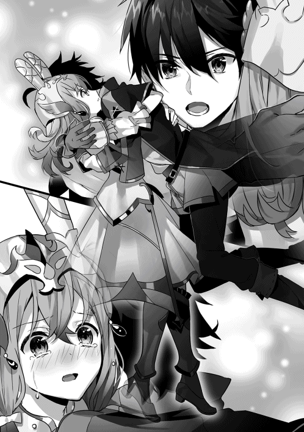
「──ッ!!」
瞬間、ラフィアは僕を突き飛ばした。
銀白の鎧に宿った力は僕のそれと比べるまでもなく強く、僕は宙に躍る。だが、まだ離れるわけにはいかない。僕はその手を掴んだ。
右手と右手が握り合っている。
その拳ごしに、僕たちは視線を交錯させる。
──青い瞳をいつかのように真っ赤に充血させ、ラフィアは叫ぶ。
「タカハはなにも分かってない！ 王都には強い神秘使いだってたくさんいる！」
「それが何？ 全員倒せばいいだろ？」
「できないから言ってるんだよ！」
「できる。僕なら。僕たち暁の革命軍なら」
僕はローブのポケットから取り出したあるものを、ラフィアの右手に握り込ませた。
「これで、言いたいことは全部」
僕はもう一度、ラフィアの瞳をまっすぐに見つめる。泣きはらしたその瞳は、星空に宿る光のすべてを詰め込んだように綺麗で、僕は息を呑む。
「じゃあ、またね」
心臓が締め付けられるような、あの感覚が襲ってくる前に、僕は全体重を預けた手を離した。
「タカハッ！」
落ちていく。高さにして十五メートルほどだ。
「〝風─一の法─五つ──〟」
足下に向けて風属性の最軽量魔法『風の一番』を放つ。足下から猛烈な風が押し返してきて、落下の速度が大幅に減速される。受け身をとって地面を転がったけれど、ダメージは少ない。悪くない着地だった。
すぐにベアトリーチェが駆け寄ってくる。その視線は空にいる銀白の鎧姿に向けられたままだ。ラフィアは宙の一点に縫い止められたように、そこから動かない。じっと僕を見下ろしている。
「タカハくん、プロパと合流しました。指名級神秘使い『羊使い』を撃破に成功。直後、『ミシアの使徒』が現れ、戦闘の中で騎士ジークが死亡したとのことです」
「......！」
ベアトリーチェが一瞬だけ顔をこちらに向ける。その面持ちはどこまでも悲痛だった。
「『ミシアの使徒』の追撃は？」
「......なかったようです」
「余裕か。くそ──ッ!!」
僕は一度強く大地を蹴る。大地が跳ね返す鈍い痛みを僕は感じなかった。
騎士ジーク。
どこまでも気高く、強い騎士だった。
まぶたの裏側に記憶があふれ出しそうになるのを、僕は首を強く振って振り払った。
「同時に、『革命軍』の盟主代行に指名されたプロパから命令が発せられました。──『大監獄』の攻略作戦を開始するとのことです」
「......了解」
僕はラフィアをまっすぐに見上げる。
もう一度合った視線を、僕は断ち切った。
「移動します！ 転移座の用意を！」
「「「応──ッ!!」」」
森の中から姿を見せた黒鉄の鎧の兵士たちに向けて魔法を一斉に放った革命軍の兵士たちが、素早く隊列を整える。
「タカハ......！」
名を呼ぶ声に顔を上げると、森から飛び出してきたプロパがいた。騎士団時代から着続けている緑色のコートはボロボロになっている。握りしめるミスリル剣はこびりついた血で汚れているが、ひとまずプロパに大きな怪我はなさそうだった。
一瞬だけ言葉を見つけられず、でも、僕はすぐに言った。
「行こう」
「ああ」
短いその会話だけで十分だった。僕たちは革命軍の構成員を追うように走り出す。
森の中を所定のルートで素早く進むこと、しばらく。森の切れ間が見えてきた。周囲から、その広場を目指して次々と魔法使いたちが集まってくる。そのすべてを受け入れていれば、すぐにあふれてしまう程度のスペースしか、その広場にはない。
だが、その広場の中央にはあるものが置かれている。金属製の輪の中に十字が渡してあるように見えるその物体からは、淡い燐光が間欠泉のように湧き出している。
それは、革命軍がこれまで温存してきた切り札だ。
──転移座。
かつては、国中の魔法使いたちを戦場に招集するために使われていた転送魔法のための道具。ラフィアの装備同様、現代の魔法技術では再現できないとされる古代の遺産だ。──これは、神聖軍には存在しない移動手段。使いようによっては、圧倒的な優位を獲得できる。
革命軍は全部で十二対の転移座を持っている。破損や紛失の可能性があるため、これまでその使用を温存していたのは、ソフィばあちゃんと騎士ジークの判断だ。
「全員、転移座へ！」
集結した魔法使いが次々とその燐光に包まれ、消えていく。
「結果的に、『ミシアの使徒』とラフィアを王都から遠く離れたこの地に引きずり出すことができた。......『大監獄』を攻略するこれ以上の好機はない」
プロパが決然とした足取りで、僕の少し前を歩いて行く。
その言葉に、僕は気付かされる。
騎士ジークは、もしかしたら、この展開を読み切っていたのかもしれない。姿を見せるのが『羊使い』だけならば、そいつを討伐するだけでいい。──だが、もし、『ミシアの使徒』までもが王都からその重い腰を上げたとしたら、その空白は『大監獄』を解放するための好機に他ならない。
「プロパ様、タカハ様、次で最後です。革命軍および合流した魔法使いたちの転移が完了しました。どうぞ転移座へ」
指揮官の一人の言葉にプロパが頷き、僕たちは淡い燐光を放つ転移座に近づく。
数名の魔法使いたちとともに、僕は転移座に乗る。
プロパとベアトリーチェがゆっくり振り返った。
無数の敵の気配にうごめく森は、早く行けと急かしているかのよう。
だが、二人はその森に向かって、騎士団に共通する最敬礼をした。足を一歩引き、身体を深く折り曲げた姿勢は、騎士ジークに捧げる祈りに他ならない。
「タカハ」
「なに？」
「............勝つぞ」
顔を上げたプロパは真っ赤に充血させた目元を一度強くぬぐった。僕は深く、強く、頷きを返す。
何人も、犠牲になった。
数えられないくらい、何人も。
僕たちは決して負けるわけにはいかない。
「転移します」
その言葉を最後に、世界が反転した。
僕の裏が表になり、表が裏になる。
一瞬の浮遊感と回路が弄ばれるような感覚。
もう一度──反転した。
目を開けるより前。肺が吸い込んだ空気が、ここが違う場所だと教えていた。雪解けを終えた、春の気配を濃厚に含んだ風。先ほどまでいたムーンホーク地方は深い雪に閉ざされていたから、その差を強く感じる。
目を開ける。
僕たちは、崖の上に立っていた。
そう遠くない距離に、盾のように丸みを描いて連なる山脈が見える。王盾山脈だ。その懐には王都が抱かれている。
僕は視線を下に向けた。
「......これが、『大監獄』」
大地が深い大口を開けていた。
巨大すぎる亀裂だった。視界いっぱいに広がるその亀裂は、数キロ以上続いているように見える。神様が引き裂いたようなその裂け目の底には、太陽の光だって届かないだろう。......だが、その深部には、大罪人を捕らえておくための監獄が確かにある。
「プロパ卿、タカハ様、部隊は配置を完了しています」
声に振り返る。
崖に近接する森の中に、無数の瞳があった。
「四属性に分類した魔法使いが、それぞれの属性につき、十七人隊で一隊ずつ。騎士隊が十七人隊で二つ。志願者による混成属性部隊が十七人隊で二つです。全員が『福音』による倍数魔法を使用可能」
百三十六人。
革命軍の戦闘戦力のうち、半分程度の割合を占める人数だ。全員が夜明けの太陽をモチーフにした黄色い布を身につけ、号令が発せられるのを待っている。いずれも、革命軍の戦力として神聖軍と戦い続けてきた精鋭たち。
「────目標は、眼下にある『大監獄』だ」
プロパが低く、よく通る声で決然と言った。
「あの地には、かつての『魔法の国』が誇った大魔法使いたちが捕らえられている。彼らは革命軍の大きな力となる。裏を返せば、この戦闘に敗北すれば、我らは最終作戦の際に大量の人質をとられている状態に陥る」
プロパはゆっくりとミスリル剣を抜き放った。こびりついた血が得も言われぬ凄みをプロパのその仕草に与える。
「この地は、敵の支配勢力のただ中だ。転移座を用いた奇襲である以上、我らに残された時間は少ない。厳しい戦闘や残酷な現実が待ち構えていることを覚悟してほしい。──だが、この勝利なくして、革命はあり得ない。ここが正念場だ」
プロパはそこで言葉を切り、うつむいた。
しばらくして顔を上げたプロパは、どこまでもひたむきな表情をしていた。
「......たくさんの仲間が、革命の日を願って、散っていきました。だから、オレたちの手で──この戦いを、終わらせましょう」
「「「「おおおおぉぉ──ッ!!」」」」
地鳴りのような魔法使いたちの咆哮を受け、プロパは崖に一歩を踏み出した。
「作戦開始」
第十六章：「追い詰められた獣はよく吠える、というからな」と大将軍が笑む。
大監獄を包む『大口』は、巨大な大地の裂け目だ。その底に下りるための経路は二つしかない。北側か南側の切れ端だ。
『オレたち本隊は南側の切れ端から侵攻し、敵の目を引きつける』
『大監獄』の真上から直接接近するルートは断崖があまりに急峻すぎて、ロープなどを使っても滑落の危険が大きい。......そう、それが普通の人間ならば。
『その間に、タカハと教官は断崖を下って、直接『大監獄』に接近」
僕は魔法使いだ。現実に干渉し、因果の向こうにあるエネルギーさえも取り出せる言葉を持っている。
土属性の魔法で足場を作り出し、風属性の魔法でその補強を続ければ、僕とベアトリーチェは危険すぎる断崖を踏破することができる。敵が予想し得なかった角度からの侵入──大監獄があると思われる『大口』の中心に直接降下するという経路を選べる。
『捕らわれている魔法使いたちを解放して、転移座で離脱してくれ』
僕は背にくくりつけた鉄製の輪を見た。中に十字がかけられている飾り金のように見えるそれは、マナを込めることで万里の距離を一瞬で超えることができる転移座の一端だった。
「半分くらい来ましたね」
ベアトリーチェのその声に、僕は顔を見上げる。大地の裂け目ははるか頭上にあり、太陽の光がずいぶんと遠くに見えた。
下を見る。その底は暗く、未だに見通すことができない。ひんやりとした冷気が足下から忍び寄ってくる。
「見えてきましたよ、タカハくん」
「あれが......『大監獄』」
僕は呆然と呟いた。
『大口』の底──天然の湖のようになっているその中央には、うち捨てられたみすぼらしい屋敷のような建物がある。だが、子細に観察すればよく分かる。それが他者を歓迎するための屋敷などではないことが。
周囲に張り巡らされた柵には、さび付いた褐色の鉄条網のようなものが幾重にも絡みついている。柵は人間の身長の三倍ほどの高さがあり、そこを乗り越えることは不可能だ。その柵には分厚いレンガ製の壁が寄り添っていて、強力な土属性の魔法を打ち込んでも破壊は難しいだろう。
その鉄条網とレンガの壁を突破した先には浅い湖が広がる。その湖は照り輝く汚泥をたたえていた。この距離でもはっきりと漂うこの臭気は、恐らく可燃性の油のような性状なのだろう。地下からそれが湧き続けているのだ。
油の湖を奇跡的に渡り切ることができたとしても、囚人はまだ逃げ切れない。すり鉢状になったその湖を取り囲むように、監視砦が設計されているのだ。
さらに、『大監獄』を見下ろす断崖には、いくつもの落石装置が設置されている。綱を切るだけで人間大の岩石が次々と放たれ、『大監獄』そのものを押し潰すだろう。
「......そもそも、この監獄は、地形の変動で沈んだ、ある貴族の屋敷であったと聞いたことがあります。精霊様の怒りを買った、若くも傲慢な貴族の屋敷です」
ベアトリーチェが打ちひしがれたような表情をした。
「『魔法の国』に残された記録で『大監獄』から生きて戻った者はいません。地底に押し込められた囚人は身を切るような寒さと油の臭気に早晩精神を蝕まれ、自ら命を絶つ者がほとんどだと」
「でも、神聖軍はここに魔法使いたちを集めて、魔法の研究をしていたはずだ。そうだよね？」
「......希望的な予測では、そうですね」
ベアトリーチェが両手に力を込めた。
僕もまたすぐに冷静になる。
「あの監獄に魔法使いたちが捕らえられている。魔法の研究のために生かされている。そう仮定して」
現実を直視するように、自分に言い聞かせるように、僕は観測した事実を言葉にした。
「でも、あの監獄には外からだって近づけない」
「はい。見たところあの塀には、門のようなものは見受けられません。......ゲルフ様たちは、食糧もろくに与えられずに、あの屋敷に閉じ込められた可能性が高い」
全員が、飢え死に。
そう考えて、僕は言葉にはしなかった。
『......攻撃を開始する。タカハ、教官。最悪の状況だった場合は、すぐに連絡を』
耳元で魔法的な手段によって伝達されたプロパの声が聞こえる。その声もまた強張っていた。
「了解」とだけ返事をして、僕とベアトリーチェは降下を急いだ。油のような臭気が強くなってくる。そして──南側から、魔法が炸裂する鈍い爆発音が反響してきた。
さらに数十メートルの距離を素早く下り、僕たちは石の台地に立った。
そのときだった。
「──ほう。本当に来るとはな」
響き渡った男の声に、僕たちは身構えた。
「右の砦です！」とベアトリーチェが叫ぶ。
湖を取り囲む砦の一つに、男が立っていた。
自分の目を疑うほどの大男が、純白の法衣を身にまとい、僕たちを見下ろしている。
武器は、その巨躯につり合うほどの巨大な大剣。ベアトリーチェの剣が子どもの剣に思えるほどのサイズだ。
「『大将軍』......ッ！」
ベアトリーチェが無表情に吐き捨てた。
『大将軍』──その名は、僕もまた知っていた。『鉄器の国』で序列六位に位置する二つ名もちの神秘使いだ。最後まで前教皇に忠誠を尽くしていたが、鈴木に倒され、その軍門に下ったという情報を聞き出したことがある。
「この『大監獄』へ向かえという命を受けたときはさすがに動揺したが、あの若造の読み通りだったということか。......ふん、忌々しい」
『大将軍』はゆっくりとした仕草で、背負っている特大剣を抜剣した。
「冥土の手向けに教えてやろう！ この地に重大反抗者たちを収容したのは三巡月前だ！」
三巡月前。三巡月間、食糧もなく、ゲルフたちはこの『大監獄』に収容されたのだ。その言葉の意味が僕の心を重くする。僕たちを突き動かす原動力はいつも希望だけだった。その希望をへし折ることが、なによりも僕たちの士気を下げる。全て計算した上での言葉だろう。
大男は狩りを楽しむ獅子のような喜悦を唇に滲ませて言い放った。
「──すぐに再会させてやる」
「ベアトリーチェ！」
「はい！」
同時──『大将軍』が天に突きつけるように構えた剣に、膨大な純白の光が宿る。
「────『海裂の業』」
圧倒的な光が縒り集まり、巨大な光の剣を構成する。武器を強化する神秘には『奇跡の剣』があるけれど、『大将軍』の剣はその比ではない。ビルのようなサイズだ。
「ぬぅおおおおお──ッ!!」
巨大すぎる光の剣が、爆発的な咆哮とともに振り下ろされる。僕の視界の左上から右下へ。まばたきの間に、それは振り抜かれた。──一拍遅れて、空気と崖が砕かれる轟音が響き渡り、僕のローブの裾を揺らす。
「大丈夫？」
「被害はありません！」
すでに剣を抜き放っているベアトリーチェは重心を低くし、僕を見る。
戦うか。
引くか。
そんな僕の逡巡を後押しするように、『大将軍』が切り裂いた落石装置がいくつか『大監獄』に向けて崩落を始めた。洋館のようにも見えるその薄暗い監獄に次々と岩石が落下していく。
「全てが罠だとしても、ゲルフたちが生きている可能性がごく低いのだとしても、僕たちはその結末を見届けなくちゃいけない」
「承知しました」
僕はもう一度、『大監獄』に目を向ける。
一部が落石によって打ち崩されたその建物の周囲に、動く人の姿はない。死体のようなものも見当たらない。
けれど、僕は希望を捨てていなかった。
ゲルフが、ゲルフと肩を並べる大魔法使いたちが、こんな監獄で黙って最後を迎えるはずがない。
「前衛を引き受けます！ タカハくんは魔法で援護を！」
「〝風─七の法───〟」
開幕の詠唱はいつも通りの風属性の補助魔法。『風の七番』。今回は自身にもそれをかけて、移動速度に加護を得る。
ベアトリーチェは『大将軍』を回り込むように距離を詰めるタイミングをはかっている。その牽制があるおかげで、僕の方にあの光の大剣を振るい落とす余裕はなさそうだ。
「〝土─七の法─回り込む九つ─待機─眼前に〟」
続けて『土の七番』。巨大な岩塊を射出するというシンプルな効果だけれど、破壊力、そして防御力にも富んだ土属性屈指の優良魔法、六マナ。
軌道は単純な湾曲。発動を待機させ、自分の目の前に発動起点を置く。
合計十五マナ、その九倍魔法。
「〝ゆえに対価は百三十五〟、で、〝待機解除〟」
僕は岩塊のうちの五つを大将軍に向けて放った。
僕の足下から解き放たれた岩塊は無秩序な放射状に拡散した──ように見えるはずだ。
「湾曲する魔法と見た！ 小賢しい！ 貴様らの失敗は、その女がこの私を相手取れるとあなどったことだ──ッ!!」
『大将軍』は巨大な光の大剣を横なぎに振るった。ベアトリーチェは一度の跳躍でそれを飛び越え、さらに距離を詰める。
「かかったな──！」
「──ッ!?」
直後。ぴたりと光の剣が動きを止める。
その剣はあまりに長大な射程と絶大な破壊力を有しているけれど、あくまで実体としての重さは男が握る両手剣でしかない。
二連撃。
横なぎからの、切り上げ。
単純なその斬撃は、神秘の光によって、振り抜きの死角さえも潰す凶悪な決殺の一撃となる。
二撃目を、空中にいるベアトリーチェに避けるすべはない。
「終わりだ」
光の大剣は振り抜かれた。
音はなかった。
神秘の光は無音で全てを奪い尽くす。ベアトリーチェの紫色のコートが光に包まれ、黄銅色の大剣だけが宙を舞っている。
声は、すぐに続いた。
「そうでもありませんよ」
「──！」
ベアトリーチェは、その光の大剣の一撃を、さらに上に飛んで躱していた。
小賢しい？
僕の魔法が？
ベアトリーチェの接近のための足場を作った僕の魔法が小賢しいだって──？
「な──ッ!?」
光の大剣が直撃する寸前、すぐそばに投射された岩石魔法をベアトリーチェは足場にして、その一撃を回避していたのだ。
あの重い黄銅色の大剣がなければ、風魔法の加護を得たベアトーチェの俊敏性は常識を超える。歴戦の神秘使いの目でも追い切れないほどに。
「はぁぁぁ──ッ!!」
空中で黄銅色の大剣を掴んだベアトリーチェは、一足飛びに距離を詰め、そして、『大将軍』に斬りかかった。
雷撃魔法が炸裂したと思わせるようなすさまじい金属音が響き渡り、衝突の余波が僕の身体を揺さぶったと錯覚するほどのエネルギーがぶつかり合う。
「いいだろう......。あくまで剣で雌雄を決するというのなら、受けて立つ──ッ!!」
そのとき、かすかな違和感が僕の背を焼いた。
よく喋るおっさんだ──
僕は、一瞬、戦闘に向けていたすべての意識を静止させる。
のめり込むような戦闘は、危険だ。戦うことには理由がある。僕たちの目的と、敵の目的がぶつかりあうから、そこに戦闘が生まれるわけで。戦場を把握できる後衛の魔法使いというポジションは、常にそれを検討し続けなければならない。
僕たちは大監獄へ到達したい。そこに魔法使いたちが捕らわれているのか、あるいは全員死亡しているのか、それとも、この戦いそのものが罠で別の拠点に移送されたのか。それを確かめることが革命軍の目的だ。
一方で、この『大将軍』の目的は──？
プロパたちが率いる革命軍が『大監獄』の守備隊と直接の戦闘をしている状況下。
恐らく、鈴木の指示でここを守るように命じられた。
でも、こんな強力な神秘使いを配備してまで、『大監獄』を守る理由が果たしてあるだろうか。
だって、三巡月前にあの牢獄に捕虜たちをぶち込んだと『大将軍』は言った。生きているはずがないと誰もが思っているはずだ。恐らく、鈴木でさえもそう思っている。
だとするなら、『大将軍』がこの地に派遣されたのは、この地に近づく敵を倒すためだ。──つまり、僕やプロパやベアトリーチェといった強力な駒を仕留めるために、『大将軍』がいる。
そう。だとするなら──やっぱり、このおっさんは喋りすぎだ。真正面から名乗りを上げて、こちらに声をかける必要なんて、どこにもないじゃないか。
その思考の間に、ベアトリーチェと『大将軍』はすでに二度、剣を交錯させている。
僕はぐるりと周囲を見回した。
『大監獄』とその周囲の油の泉。
ベアトリーチェたちが打ち合う砦。
『大将軍』の光の大剣が切り裂いた絶壁。
──視界の隅に、別の神秘の光がひらめいたのは、その瞬間だった。
「〝待機解除──ッ！〟」
僕は残った四つの岩塊を眼前に顕現させ、投射する。
同時。
絶壁の隙間から、大量の神秘の光が放たれる。
細い弓矢のような形をしたその矢は、数十発はあるだろう。数が多すぎて光の壁のようになったその矢が圧倒的な速度で押し寄せてくる。
僕が放った四つの岩塊と、無数の光の矢が激突し──すさまじい爆発が巻き起こる。
「──ッ!?」
四つの岩塊では阻みきれず爆発をすり抜けてきた矢が僕の周囲に着弾し、次々と爆発を巻き起こす。だが、それでも僕は目を閉じることだけはしなかった。矢が飛んでくる方向だけをまっすぐに見つめ続ける。
「〝火─一の法─五十個〟」
単位魔法は『火の一番』。人間の頭大の火球を生み出す、火属性の基礎魔法だ。
修飾節は一つも追加せず、その五十倍魔法。
「〝ゆえに対価は 百五十〟」
詠唱を終えるのと同時に、敵の矢の攻撃が終息した。間断ない小爆発にさらされた全身を鈍い痛みが襲っているけれど、直撃はゼロだ。ダメージは皆無に等しい。
絶壁の手をかけるように、一つの人影があった。
「......」
影に溶け込む深い色の服を着た細身の人影──最初はそう見えたけれど、違う。全身に背景と同化するような色の塗料をつけている。最低限の胸当てと腰当てに連続する身体のラインから、その敵が女だと分かる。
その容姿と、この状況から、僕は女の正体を確信した。
どの戦場でも、影に潜んで敵の陣営奥地に侵入し、矢の雨による一撃で甚大な被害を与える。標的の抹消も、巨大な軍団を相手取ることも可能な、強力な神秘使い。『鉄器の国』の序列十三位──通称『密林の射手』。
『大将軍』こそが、囮だったのだ。
敵は最初から、僕を倒すことを狙っていた。
後ろからあの矢の雨を撃ち込まれ、なすすべもなく爆散していた未来を想像し、背筋が凍える。その動揺は振り切って、僕は挑発するように、人差し指を神秘使いに突きつけた。
「その自慢の弓で、僕と撃ち合ってみる？」
「────」
『射手』の表情がさっと歪んだ。冷徹な刃のような、触れただけで切り裂かれると思えるような、鋭い表情。──怒り。その感情を引き出せた時点で、僕の優位を証明しているようなものだ。
瞬間、『射手』は足場を蹴った。崖に向かって重力が存在するかのような淀みのない足取りで素早く横移動をしつつ、黒塗りの矢が立て続けに三発放たれる。右に動いても、左に動いても、僕の移動速度では身体のどこかを貫かれる。驚嘆すべき射撃精度と強弓だ。まばたきの間に、僕はなすすべもなく貫かれる──そう見えているのだろう。
「望むところ──ッ！」
瞬間、僕の周囲に五つの火球が生まれた。
先ほど詠唱を終えたばかりの『火の一番』。それはあえて、発動時間も発動位置も指定していない。修飾されていない単位魔法は、詠唱をしなくとも、精霊様の気まぐれのようなタイミングと位置に次々と生み出されていく。
生み出されたその火球にイメージを送り込むような感覚──応えた火球が次々と矢に向かって突き進み、三発の火球は撃墜されたけれど、残り二発が『射手』へ向かう。
「────ッ！」
『射手』は素早い動きで軌道を変え、難なくその火球の爆発を回避する。彼女が動揺したのは、僕の周囲に追加で生み出されたもう十個の火球を認識したからだろう。
偏差射撃。
距離と移動方向と速度から『射手』が未来に存在する位置は確定できる。走る軌道を変えられる崖のでっぱりで方向転換する可能性の先も、すべてを潰す。『聖槍の乙女』との戦いで鍛え上げた思考回路をフルに活用し、僕は従順な魔法を決殺の隊列で投射した。立て続けに詠唱。
「〝火─一の法─二十個─今─眼前に────〟」
「──『慈愛の驟雨』」
『射手』の口がかすかに動き、その右の首筋のあたりがわずかな光を放つ。神秘。直後、『射手』の身体を取り巻くように数十発の光の矢が生み出された。
「〝ゆえに対価は百四十〟」
放った十発の火球に加えて、目の前にさらに二十個の火球を生み出した。
機関銃を撃ち合うかのように、無数の光の矢と無数の火球が交錯し、すさまじい爆発が僕と『射手』の中間点で発生した。その爆発がついに『大監獄』の周囲をとりまく油の泉に及び、目を奪うような炎光と熱風が押し寄せてくる。
偶然すり抜けてきた矢を、僕はすんでのところで躱す。背後の岩に着弾したその矢が小さな爆発を巻き起こす。避けきればいい。あるいは撃ち落とせばいい。すべてを。それだけのことだ。
「タカハくん──ッ！」
声に意識を向けると、『大将軍』から距離をとったベアトリーチェがすぐ近くにいた。紫色のコートにはいくつか切り裂かれたような後があったけれど、身体への直接のダメージはないらしい。
「もう一人いた。『密林の射手』だ」
「はい。彼女は──健在のようですね」
爆発の向こうから飛びだした『射手』は、機敏な足取りで『大将軍』の側に立つ。矢をこちらに構えているが、放つ気配はない。
『大将軍』の手の巨大剣から、光の強化が消えようとしていた。その眉根には、深い縦しわが刻まれ、ベアトリーチェの剣に向けられている。
「至宝級の加護がほどこされた金剛鋼の剣。──どこで手に入れた？」
ベアトリーチェはにっこりと笑って応えた。
「プレゼントしていただいたんです。こちらのタカハくんから」
「そのへんに落ちてたよ？ 至宝級の加護がほどこされた、金剛鋼の剣」
「......忌々しい」
「力づくでも奪えませんでしたからね」
ベアトリーチェの挑発に、びきり、と『大将軍』のこめかみが張った。対するベアトリーチェはどこか相手を諭すような余裕さえ滲ませて、にこにこした表情のまま応える。
「さすがは序列六位のお方です。鮮やかにして剛胆な剣技でした。しかし、剣筋は荒い。最近は素振りなどの基礎的な鍛錬を怠っていますね？ 身体能力はあなたの方が上なのに、私にいなされてしまうのはそのせいでしょう」
「貴様......ぁ......ッ!!」
肩を怒らせるとはまさにこのことだろう。力を込めた両腕のエネルギーが伝わって『大将軍』の上半身が膨れあがったかのように見えた。筋肉量がヤバい。あんな化け物と打ち合って余裕の表情をしているベアトリーチェはもっとヤバいけど......。
そのときだった。
ぴたり、と『大将軍』が動きを止めた。
その口元に、残虐な笑みがよみがえる。
「追い詰められた獣はよく吠える、というからな」
その表情の理由が、すぐに分かった。
ざ、と足音を響かせて、『大将軍』の向こうに隊列を組んだ人影が姿を見せた。
全員が──純白の法衣を身にまとっている。
神秘使いたちだ。
その数は、二十人を下らないだろう。
『大将軍』、『密林の射手』。そして、大量の神秘使い。恐らく魔法使いにとっての天敵である『信仰の盾』の使い手もいるだろうし、ベアトリーチェの動きを封じ込める遠距離攻撃の使い手も十分な数が揃っているだろう。
こうなってしまえば、勝機は万に一つもない。
二人の指名級の神秘使いを相手取るので精一杯だったのだ。もう二十人の相手をすることは不可能だ。プロパからの連絡もない。敵の防御は想像以上に堅いのだろう。
「暁。貴様を討ち取れば、全て終わりだ」
『大将軍』が、ふたたび剣を強く握り込んだ。
「ネズミ狩りといこうか」
「............」
神秘使いたちの隊列が動き出す。
その寸前。
「あのさあ──！」
僕は声を張った。
「追い詰められた獣が吠えるのはどうしてかなんて、知らないでしょ」
「......なに？」
「あ。ほんとに知らないんだ」
僕は自分の口元が不敵な笑みの形に歪むのを感じていた。
「──仲間を呼び寄せるために決まってるだろ？」
瞬間だった。
僕の頭上を、無数の魔法が飛び越していく。
雷光、炎槍、氷剣、岩塊──視界を埋め尽くすほどのそれらの魔法は、僕が詠唱しないせいで身構えてさえいなかった神秘使いたちの隊列に、真正面から襲いかかる。何人かの神秘使いがとっさに『信仰の盾』を展開したが、間に合わずに魔法になぎ倒された神秘使いたちの方が多い。
目を見開き、『大将軍』が叫ぶ。
「そんなはずはない──！ 三巡月だぞ！ 植物もろくに育たぬこの地の底で！ 三巡月だ！」
『大将軍』は先ほどまでとは別人のように取り乱し、僕たちの背後を見ている。燃えさかる炎の壁のようになった、油の湖の方を。
「なぜ魔法使いどもが生きている!?」
「......空が見えれば鳥も舞う。地の底を這い回る生き物などいくらでもおる。そして──我らには魔法がある」
炎の壁の向こうから、次々と黒い影が姿を見せる。全員がボロボロのローブ姿に、若い魔法使いは暑苦しいからと身につけないとんがり帽子をかぶっている。その歩みは地獄を這い回る亡者のような緩慢なものではなく、覚悟を決めた兵士たちのようだった。
幼い頃に向かった招集の戦場で見知った顔ばかりだった。火属性に傾倒しすぎたあまり、自分の髪型を炎の形にしていた老人。その人がいるだけで死者が半数になると言われる癒し手の中の癒し手。自ら肉弾戦もこなす、土属性使いの巨漢。──全員がどこか変わった性格をしていて、でも全員がいつだって戦場から飄々とした顔で帰ってくる。『魔法の国』が誇る至宝の大魔法使いたちが、監獄から解き放たれたのだった。
「手荒いのう、タカハ。もうちっとうまくやれなかったのか？」
ぽん、と肩に手を置かれる。
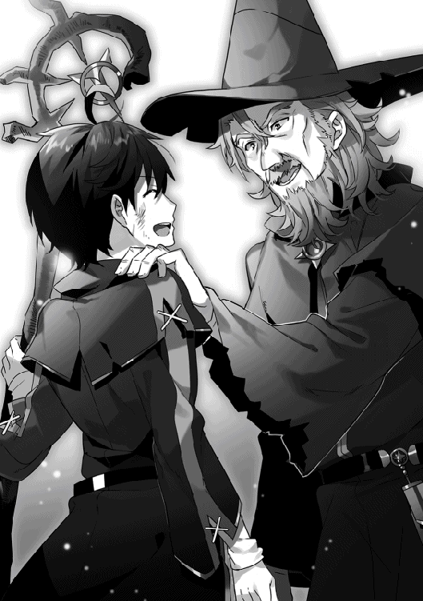
黒い小さな瞳と、視線が交錯する。
その瞳に映り込んだ僕の顔は、ちょっとダサいくらいの満面の笑みを浮かべている。
「寝てたのはそっちだろ。ゲルフ」
それは、目の前の老人も同じだ。痩せこけて、ひげもぼさぼさだけれど、瞳の底に宿った光が煌々と輝いている。
「岩が降ってきたときはさすがに終わりを覚悟したぞ。まあ、そのおかげであの忌々しい柵が壊れてくれたのじゃがな」
「岩を落としたのはあの神秘使い。僕とベアトリーチェは必死で時間を稼いでただけ」
「『大将軍』か......。昔からちと頭の回らぬ男じゃったが、今回もやはり足りておらぬな」
僕は背負っていた転移座を地面に置いた。
「話は後にしよう。さっさと帰るよ」
「ほう、準備がいいな。──みな、転移座にマナを込めるのじゃ」
応、という声が響いて、転移座が淡い光を増していく。全員が熟練の使い手ばかりだ。必要なマナの量にすぐに到達した。
「逃がすな──！ 突撃しろ！」
敵陣で圧倒的な神秘の光が膨れあがる。
だが、大魔法使いたちはこれっぽっちも動揺していなかった。
「遅すぎる」「帰りたくないのう......」「久々の戦場だってのによ！」
「──タカハ」
声をかけられ、僕は再びゲルフを見る。
足下から舞い上がった燐光が僕たちを包んでいく。
「助けが来るとは思っておらなんだ。そして、それがお前であるとは想像してさえいなかった。......お前は、本当にわしらが生きておると思っておったのか？」
どこか、確かめるような、弱気の表情。
「そうじゃなかったら、来るわけないだろ？」
ゲルフはしばらく僕を見て、にやりと笑った。
──直後、世界が反転した。
僕の中が表になり、外が裏になる。
もう一度、反転した。
「......状況は、分かった」
ゲルフが言い、それで沈黙が下りた。
革命軍の会議は、重苦しい雰囲気に包まれていた。
その理由はいくつかある。まず第一に参加者が増えたこと。先日『大監獄』から解放した大魔法使いたちが会議のテーブルの一角を占めている。彼らの放つ存在感が、一つ。
だが、それは理由の一部でしかない。
最大の理由はたぶん、誰もが理解しているからだろう。
これが、最後の会議になるということを。
「まとめます」
プロパがはきはきと言いながら、テーブルに広げた羊皮紙を指さした。
「最終作戦は一巡月後。革命軍が保有するすべての転移座を投入し、国中の協力的な魔法使いたちを王都の正面に結集させます。その後、タカハを中心とした精鋭部隊を王都の中に侵入させ、敵国教皇を討つ」
プロパは確かめるように、全員に視線を送った。
「転移座で移動させられる人数には上限があるので、多くの魔法使いたちには自力で王都へ移動してもらいます。この会議が終わり次第、革命軍はこの拠点を放棄し、国中でのゲリラ戦を開始します」
「どのくらいの人数が集まるじゃろうか」
「......確信のある数字は提示できませんが、『魔法の国』の人口のうち、十人に一人は集まると思っています」
「うむ。よかろう。どう転がっても、負けようのない戦力じゃな」
ゲルフは深く頷き、参加者たちに向き直った。
「問題は神秘使いたちと敵の手に落ちた魔導器じゃろう。とくに『冬を遮る膜』は今もなお王都を覆っておる」
「それだけの人数が魔法を撃ち込めばぶち破れそうなものだがな」と大魔法使いの一人が言った。
「加えて、あれは害意のある攻撃を阻む膜であるだけで、人が通り抜けることができぬわけではない。街壁まで敵を追い込むことができれば、大門を突破する希望は十分にあるじゃろう」
ゲルフの発する言葉の一つ一つが、魔法使いたちに安堵をもたらしていくのが分かる。戦いを知り尽くした人物は、たとえ自分に戦闘能力がなかったとしても、優秀な指揮官となることができるのだ。
「それを聞いて安心しました」
プロパはほっと──肩の荷を下ろしたような息をついた。
「ゲルフ様。一つお願いがあります」
「なんじゃ、プロパ」
「革命軍の盟主の座を、引き継いでいただけないでしょうか」
「............む？」
ゲルフは首をかしげた。
ゲルフだけではない。その場に集った魔法使いたちの全員がきょとんとした表情をしている。その表情の意味を取り違えたのか、プロパはやや慌てた様子で言葉を続けた。
「タカハに、まずは頼んだんです。でも、断られてしまって。やっぱり『暁の革命軍』ですから、二人のどちらかが盟主である方が、全員の士気があがるのではないか、と考えます」
「............」
「ゲルフ様？」
「プロパは、本当に、そう思っているのか？」
「オレは............」
そこで、プロパは言葉を区切る。
「では、ジーク殿が、そう命じたのか？」
「いえ。ジーク様の命ではありません」
ゲルフは参ったというように肩をすくめて、周囲の魔法使いたちを見やった。
「ならば、タカハがなぜ盟主を断ったのか聞いてみるとよいじゃろう。名誉と勲章ばかり求める戦闘狂がなぜ断ったのかをな」
「ゲルフ、あとで魔法の訓練に付き合ってくれる？ 実弾演習みたいなやつ。撃ちまくるから」
「ほほぅ。いつぞやのようにやるか。ちっとはマシになっておるとよいのじゃがのぅ」
「こんの......じじぃ」
これ以上、不毛なやりとりをしても仕方がない。僕は困惑した表情を浮かべているプロパに向き直った。
「この前は言葉が足りなかった。そういう意味で断ったんじゃないんだよ」
「『僕にできるわけない』と、そう言ったな」
「うん。言った。だって、革命軍の盟主はプロパがやり遂げるべきだって思うから」
「......オレ、が」
「あのさ。さっきから何を惚けたような顔してるんだよ」
プロパは戸惑うように視線をさまよわせた。プロパの態度があまりに勘違いをしたもので、意図が伝わらないもどかしさが苛立たしい。でも、プロパもまた傷だらけになってここまで来た。敬愛する騎士ジークを失い、それでも戦い続けるという覚悟でここにいる。
僕は衝動的な怒りを封じて、分かりやすい、伝わりやすい言葉を慎重に選んだ。
「たしかに、ここにいる全員が『魔法の国』を取り戻したくて戦ってきた。その想いに大小はあるけれど、共通している。──でも、それ以上に、僕たちが戦ってくることができたのは、騎士ジークとプロパがいたからだろ？」
「......ぁ......」
「『暁の革命軍』なんて、単なる名前だ。僕たちがここにいるのは、国中の魔法使いたちが立ち上がろうとしているのは、騎士ジークとプロパがどんなに厳しい状況でも決して諦めずに、ここまで歩み続けてきたからだ。いくつもの苦しい決断をして、最善を選び続けて、そのたびに正解を引き当ててきたからだ」
目を閉じる。僕は思い出す。革命軍の名は知りつつも、一人で戦い続けようと、一人でラフィアを取り戻そうと、歩み続けていたあの数巡月。
その過去を打ち壊し、勝利に近づけてくれたのはプロパに他ならない。
「僕はラフィアを取り戻す。彼女を説得して、魔導器を使うのをやめさせる。それだけが目的だ。目的だった。......今は、少しだけ違うんだ。どう違うかっていうことは、分かるだろ？」
「......タカハ？」
「君が率いる『革命軍』の勝利のためなら、僕はなんのためらいなく手を貸すよ」
プロパの肩が、ぴくりと揺れた。
プロパの魔法は平凡、剣術は平均を下回るレベルなのだとベアトリーチェから聞いたことがある。戦術や戦略の才はあるのかもしれないけれど、目を見張るようなほどでは、たぶん、ない。
でも、プロパには、僕にはないものがある。僕がどれほど願ったって手に入れられないものを、きっと、生まれながらにして持っている。
今のプロパは、それをなくしているように見えた。
その思いが、言葉を走らせる。
「やり遂げるべきだと、僕は思う。プロパ。君はムーンホーク領で最年少の正騎士になった男だ。そして、誰よりも民のために願って行動できる革命軍の盟主なんだ」
「そうだ......！」「しゃきっとしてくれよな！」「盟主様よぉ！」「騎士ジークのあとを継げるのはお前だけだよ！」「頼むぜ、プロパ卿！」
「みんな......」
プロパは俯いた。
「あれ......？ なんだこれ......くそっ......」
肩を数度振るわせたプロパを、会議に詰めかけた全員が温かい視線で見守る。当然だ。僕が柄にもなく全力で励ましてあげたんだ。立ち直ってもらわないと困る。
「すみません、取り乱しました」
顔を上げたプロパは、目元を赤く腫らしていたけれど、さっぱりした表情をしていた。容姿がいいんだから、そういう顔をしていればいい。プロパは僕たち革命軍の盟主様なのだから。
「革命軍の盟主、正式に引き受けさせてもらいます」
プロパは決然と言い放った。
「この一巡月が勝負です。『魔法の国』の正念場だと思います。みんな、力を貸してください」
その後の一巡月、僕たちはありとあらゆることをやった。
『鉄器の国』から迫る増援部隊に奇襲をしかけ、撃退に追い込んだ。
僕の『対訳』から抽出した『福音』を魔法使いたちに広め、戦いに参加してくれるように協力を求め続けた。
僕やプロパは何度も命を狙われ、そのたびにゲルフ率いる大魔法使いたちに窮地を救われた。いくつもの戦いの中で、たくさんの魔法使いたちが散っていった。
だが、その全てが無駄となったわけではもちろんない。
魔法の国を分割する四大領──ムーンホーク、スターシープ、ミッドクロウ、サンベアーのうち、外縁部に存在する二つにあたるムーンホークとスターシープ地方では団結した魔法使いたちの一斉蜂起が勃発。ほとんど実効支配をこちらが取り戻す形になった。
ベアトリーチェは指名級ではない神秘使いを安全に撃破するための戦術を生み出し、かつての騎士たちを鍛え上げた。『暁の騎士団』という下部組織を作り上げ、彼らの戦果によって多くの神秘使いが討たれた。
いつか僕が手助けした商人ライナスさんと、その娘ミライア、マルムの三人は、各地で協力的な商人たちをまとめ、神聖軍の検問を無視した『自由商人同盟』を立ち上げた。彼らの活躍によって、神聖軍の重税に苦しんでいたいくつもの小村に食糧などの物資が分配され、厳しい冬を乗り越えることができた。そうして救われた村人たちは決意をもって、革命軍への協力を確約してくれる。
風は確実に僕たちに追い風だった。
だが、革命の日に近づけば近づくほど、違和感は強さを増している。
──鈴木は、なにをしているのか。
この状況を、手をこまねいてみているとは思えない。ときには、驚愕するような手を放ってきて、局所的に革命軍が大敗を喫することがあった。
でも、全体の盤面を見渡せば、革命軍が有利に勝負を進めている。
やつはなにを考えている。
そもそも、あいつはなぜ、『魔法の国』を制圧しようとなんてしたのか。
それが分からなかった。
僕にできることは一つだけ。
ありとあらゆる可能性を検討し、鈴木を相手に可能な限り優位な状況を作り出すこと。敵の神秘の性質を調べ上げ、その攻撃能力を頭に叩き込む。どんな状況にも、予想外は許されない。僕が鈴木に挑めるチャンスは一度だけだ。その戦いは必然のように過酷なものとなり、そして、どちらかの死という形で幕を閉じるだろう。
......もしかして。
それが、やつの望みなのか。
僕と殺し合いをすることが、あいつの願いだとするなら、この対応の鈍さには納得がいく。ラフィアの命をあえて奪わなかったのは、まさか──
僕は首を横に振り、戦いの状況に思考を集中させる。
いくつもの眠れない夜と、過酷な昼を越えて、一巡月はあっという間に過ぎ去った。
第十七章：決意の果てに、僕たちは最後の敵に挑む。
──第四巡月、四日目。
その日は前日の春の嵐が嘘だったかように、快晴だった。
僕の表が裏になり、裏が表になる。
一瞬の浮遊感が終わり、目を開ける直前──もう一度、感覚が反転した。
直後、僕の両脚が大地を踏みしめる。吸い込んだ空気は永遠の冬に閉ざされていたようなアジトのそれとは違って、たしかに暖かく、春の息吹のような心地よい匂いに満ちていた。
──革命軍の最終作戦の朝は、慌ただしく幕を開けた。
見上げる王都の街壁は高く、沈黙している。城壁を取り囲むように、朝靄のような虹色のベールが見えた。ラフィアが今も続けている魔導器による加護だ。
その向こうに、朝日に照らされた王城が燦然と輝きを放っている。
「転移完了。集結した戦力を把握する」
プロパの声に、革命軍の魔法使いたちが次々と動き出す。
「これは......なかなか大仕事になりそうだな」
振り返る。
王都を取り囲む丘陵地帯は人で埋め尽くされていた。
黒鉄の鎧でもなく、純白の法衣でもない。
狩った獣の毛皮から作ったみすぼらしい服を身にまとった魔法使いたちが、視界いっぱいに集っていた。革命軍の号令に応じてくれた、国中の魔法使いたちだ。今もそこかしこで転移座の光が輝き、そのたびに各地から次々と魔法使いたちが到着する。
「使用可能な属性ごとに戦列を再編成する！ 敵は待ってはくれないぞ！ 急ぐんだ！」
「──その通りだな。待つ理由が、どこにもない！」
響き渡る大音量。
それに応えるかのように、王都の正面の大門が軋みを立てつつ開いた。
人が三十人は余裕で横に並べると思わせるほどの大門には、ぎっしりと兵士が並んでいる。全員が黒鉄の金属で武装された馬に騎乗している。
その先頭を切るのは、まばゆい純白の鎧に身を包み、大槍を高く構える大男。
「『大将軍』か」
「名乗りは不要だな？ 革命軍」
すぅ、と大きく息を吸い込んだ二つ名持ちの神秘使いは、大気を振るわす大声で叫んだ。
「突撃ぃ──ッ！！！」
革命軍が結集した陣地までは数百メートルの距離がある。そのさらに後方の丘陵地帯が魔法使いたちの集合地点だ。魔法使いの軍団の弱点は、もちろん接近戦。優秀な近接戦闘用の魔法が少ないことに加え、同士討ちの危険もある。戦闘に慣れた革命軍の兵士たちならまだしも、今回の決戦に義勇兵として参加してくれた魔法使いたちは、なすすべもなく蹂躙されるだろう。
「プロパ！ 『大将軍』は僕たちで押さえる！ 義勇兵たちの隊列の編成を！」
「頼む......！」
今日に限っては出し惜しみもない。プロパは革命軍が手に入れた中で最良の駿馬にまたがっていた。緑色のコートに革命軍の紋様をでかでかと刺繍したその背中が遠ざかっていく。
僕は視線を正面に戻した。
『大将軍』が率いる騎馬部隊は、百人程度の規模であるようだった。そのうち、数十名の神秘使いが混じっている。
「まずは足を止めるぞ！ 土属性部隊！ 二番の詠唱を用意！ その他の部隊はありったけの攻撃魔法じゃ！」
こちらの最前衛に立ったゲルフが、『大将軍』に負けず劣らずの大音量で号令を発した。すぐ側に控える兵士の一人が、この世界の文字で『土』と『二番』と書かれた旗をそれぞれ掲げる。
百騎の騎兵隊は、くさび形の隊列を乱すことなく、まっすぐにこちらに直進してくる。大地を揺るがす蹄の音が心臓を直接揺さぶるようだった。数字で表される以上の圧倒的な迫力に、戦場には慣れているはずの僕でさえも威圧される。
「引きつけよ！ 詠唱は足並みを揃えるのじゃ！ 号令を待て！」
今すぐに魔法を放ちたい。恐怖に押される感情が理性を振り切ってそう告げる。だが、あの俊敏な騎兵隊は、放たれた魔法は的確に回避するだろう。僕たちのイメージが届く絶対必中の範囲内で攻撃魔法を仕掛けるべきだ。
「おおおおおおお──ッ！！！！」
大将軍の咆哮が、魔法使いたちの肝を揺さぶる。
馬の荒い息づかいさえも間近に分かるようだ。
敵との距離はもうすぐ百メートルを切る。詠唱をしても間に合うのかどうかというぎりぎりの距離のように思えた。
まさかゲルフ、ビビって気絶してるんじゃ──と、思ったそのときだった。
「詠唱ぉぉぉ──ッ！！！」
地鳴りを跳ね返すような大音量で、ゲルフが杖を掲げた。指揮旗も同様に、天を貫くように高く、振り上げられる。
同時に、僕の周囲にいた魔法使いたちが一斉に詠唱を開始した。
「〝土─二の法─六つ─今─彼方に〟」
単位魔法は『土の二番』。大地の槍を生み出す土属性の優秀な攻撃魔法、五マナ。
発動時間は直近に、発動地点は──敵の足下に。
合計十マナ。──その、六倍魔法。
「放てえええええ──ッ！！！」
ゲルフの杖が、指揮旗が、一斉に振り下ろされた。
「〝ゆえに対価は六十〟」
瞬間──大地がうなりをあげて、騎馬隊に襲いかかった。
革命軍の戦闘部隊が率いる土属性の使い手は、合計五十人程度。その全員が『福音』に従って対価を六十にする六倍魔法を使ったはずだ。
合計、三百本超の大地の槍が、一斉に騎馬隊に襲いかかった。
敵兵の絶叫と馬の断末魔が、止めどない連鎖となって響き渡る。血煙が赤い霧のように広がり、合計百騎の突撃は完全に停止した。
──かに見えた。
「それを！ 待っていたぁぁぁ──ッ!!」
騎馬たちの死をものともせず、大地の槍を次々と兵士たちが乗り越えてくる。『大将軍』はすでに巨大な光をその剣に宿し、大上段に構えている。そこに無数の神秘使いたちと、恐らく精鋭であろう黒鎧の兵士たちが続く。
敵はこう思っているのだ。
距離を詰めさえすれば、勝てると。
──それはあまりに前時代的な考え方だ。
革命軍は、反乱した魔法使いたちを束ねた雑兵などでは決してない。
「ベアトリーチェ殿！」
「はっ！」
ゲルフの声に応えるように進み出たベアトリーチェが、黄銅色の剣を構える。
「『騎士団』！ 前へ！」
その号令に応えて、あえて隊列の後方で息を潜めていたかつての騎士たちの部隊が、最前衛に躍り出る。その左手には巨大な大盾。右手には統一されたミスリル剣を持つ彼らは、整然と魔法使いたちを守るように隊列を組む。
「『大将軍』の神秘は長くは持続しません！ 魔法使いたちを守り抜きます！」
「「「応──ッ！！！」」」
「我が剣の前に、すべては灰燼と帰すのみ！」
『大将軍』は光の巨大な大剣を横なぎに振り抜いた。こちらの陣地のすべてを射程に捕らえるような膨大な光の出力。だが、それはまるで片手剣を振り回すような速度で振り抜かれる。
ど──ッ、とすさまじい激突音と、甲高い高音が走り抜け、横なぎの光の刃が通り過ぎる。
通り過ぎて、それでもなお僕は立っていた。
僕だけではない。盾を隙間なく構えた『騎士団』もほとんどが健在だ。見れば、土属性の防御魔法を立ち上げた痕跡がある。それで威力の大部分を減衰させ、残り火を盾で受けきったのだ。
「小賢しい！ 隊列に潜り込めば、我らの勝利だ！」
「敵将を討てば残りは有象無象。私が『大将軍』を討ちます。──『騎士団』、前進！」
整然とした隊列を保ちつつ、盾を構えた騎士たちは前進する。
一瞬だけ、その隙間をぬって、ベアトリーチェが僕を見た。その瞳には申し訳なさそうな色がある。僕の側を離れることに対してそんな感情を抱いているのなら、全くもって感情の無駄遣いというやつだ。
「頼む！ ベアトリーチェ！」
僕は拳を高く突き上げた。
応えるようににっこり笑ったベアトリーチェは、表情を引き締めると、両脚に力をたぎらせ、『大将軍』に向かって突撃した。
「騎士団の邪魔とならぬよう魔法を投射せよ！」とゲルフが号令する。
僕は自分の詠唱に集中する。『大将軍』の周囲にいる神秘使いの中には光の膜──『信仰の盾』を展開している者が多い。あれを狙うだけ無駄だ。狙うなら、その後に続く黒鉄の兵士たち。
革命軍の魔法使いたちは瞬時にその意図を理解し、斜め上方に次々と強力な射出系の魔法を放った。視界を埋め尽くすほどの魔法が飛翔し──落着する。敵の後方で炎の壁が立ち上がったかのように見えた。
その壁を背景に、ベアトリーチェが『大将軍』と激突した。
「貴様か！ 小娘！」
「剣での決着がお望みとのことでしたので」
光の大剣とがっちりと組み合ったベアトリーチェは、すぐさまその身を翻し、側面に回り込む。
「く──ッ！」
その方向に剣を振るえば、長大な光の剣は味方を巻きこむ。距離を詰めれば必然となるその一瞬の動揺で、全てが決した。
「はあああああああ──ッ！！！」
裂帛の気合いとともに、ベアトリーチェが真正面から打ちかかる。大地を爆発させるような脚力とともに飛びかかったその一撃に、『大将軍』は片膝をついた。大男は神秘の光を剣から消すが、すでに戦況は決定的なものとなっていた。
万全の体勢から、ベアトリーチェが渾身の連撃を叩き込む。そのたびに、爆発のような土煙が舞い上がり、『大将軍』は受けることで精一杯になる。
「閣下──！」
慌てて神秘使いたちが支援に回ろうとするが、そんな彼らに整然とした隊列を組んだ『騎士団』が襲いかかる。大盾で敵の神秘の一撃を受け止め、鋭いミスリル剣の一突きで致命傷を放つ。神秘の力に奢っている神秘使いたちは、その統一された緻密な戦闘技術になすすべもなく次々と葬り去られていく。
そのとき。
「ぬおおおおお──ッ!!」
ベアトリーチェの剣戟の狭間──『大将軍』が咆哮した。被弾を覚悟した上で、ベアトリーチェに突進をしかけたのだ。圧倒的な体躯が繰り出す大剣の腹を盾としたその一撃に、ベアトリーチェは押し返される。
誰もが、そう見えた。
だが、乾いた金属音とともに『大将軍』の剣が砕け散った。
つまり、その突撃は受け止められていた。
──女騎士の縦断の一撃によって。
「堅い剣に、堅い鎧ですね」
ベアトリーチェは黄銅色の剣を振り抜いている。
その剣の軌跡が『大将軍』の身体を深くえぐっている。
「そして、あなたは強敵でした」
ベアトリーチェは左に振り抜いた大剣をすかさず逆手に持ち替え、真上に切り上げた。
黄銅色の剣が赤い軌跡を引き、純白の鎧を両断する。
「......ぐ......おぉ......ッ」
『大将軍』が天を仰ぎ──その身体から鮮血が吹き出した。
正面から二度切り裂かれたその身体は、後ろ向きにどうと倒れる。そして、それきり二度と動かなかった。
「『大将軍』ランドルフ＝カイゼルを討ち取りました」
ベアトリーチェは素早く大剣を振り払った。その刃についた鮮血が弧を描いて周囲の地面に飛び散る。女騎士はアメジスト色の瞳を細めて、敵兵たちに向かって一喝した。
「──死にたくない者は、下がりなさい！」
それが決定打だった。
「うわあああ──ッ！」「退け......！ 退けぇ......ッ！」
『大将軍』の存在によってなんとか士気を保っていた神秘使いたちが、次々と背を向けて城壁の方へ引き返していく。『騎士団』がその背に追いすがり、次々と容赦のない一撃を加えていく。
「騎士様ばかりに活躍をさせるわけにはゆかぬな！ 我らも続くぞ！ 押せぇい！」
ゲルフの号令に、魔法使いたちがゆっくりと前進を開始する。
視線の先には、大門から次々と姿を見せる神秘使いと黒鉄の兵士たちの姿がある。
「......！」
そのとき、僕は確かに見つけた。
大門の上に、一つの人影が立っている。
銀白の鎧をまとうその人影は、小柄だ。憂いを帯びた青い瞳が、王都を覆う膜越しにこちらを見下ろしている。
ラフィア。
いてもたってもいられない。
今度こそ取り戻すのだ。
激戦が、幕を開ける。
ここにいるはずなのに。
視ている光景も、聞こえる音でさえも、この目の前にある膜を通してみたかのように、現実感がなかった。
王都の目の前の平野から、視界を塗りつぶすほどの魔法が放たれる。
応えるように、純白の神秘の光が踊り、空中で猛烈な爆発を引き起こす。
二つの軍団の衝突の最前線では、剣や槍が鈍い金属の残光をまとって閃き、鮮血の花が咲く。
黒い鎧の兵士も、純白の法衣をまとった神秘使いも、コートをまとう騎士も、ローブ姿の魔法使いたちも、次々と死んでいく。雑草を刈るときですらもっと丁寧だと、そう思わせるほどに、あっさりと、無慈悲に、次々と人が殺されていく。
その死を目の当たりにするたびに、自分の心が少しずつ壊死していく。
（私は......）
膝から力が抜けそうになる。
（......私は......これを止めるために......戦ってきたのに......）
ラフィアは両手に視線を落とす。
銀白の金属でできた手甲に包まれた両手がある。その金属はすべすべとした不思議な感触で、決して冷たくはない。なのに、信じられないくらいの防御力がある。
顔を上げれば、美しい銀色の糸で編んだかのような光の膜が目の前にある。今もその膜に流れ弾の魔法が激突するが、光の膜は動揺することもなく、その魔法を弾き返している。
魔導器。
『魔法の国』の王族に継承される、いくつもの強力な武器。
こんな力、ほしくなかった。
これを授からなければ、苦しまなくて済んだのかもしれない。
神聖軍にとっても、革命軍にとっても、何の価値もない一人の女の子だったとしたら、私はここにいるはずがない。支配される一人として、きっとどこかでなんとか生きていたはずだ。
でも、私には力がある。
この戦いを止めなければならない。
背筋が凍えるような感覚。王城にいる『ミシアの使徒』はこの戦闘を見ているはずだ。あの冷酷な、氷の色をした瞳で。そして、その重い腰が上がるとき、今よりもたくさんの魔法使いたちが殺される。
どうして戦わなければならないのだろう。
命よりも大切なことが、生きているよりも大切なことがあるだろうか。
ただお互いに笑って暮らせばいいと思う。
『鉄器の国』はただの隣人として、なにかを奪い合おうなんて考えずに、お互いを認め合って生きる。そんな簡単なことがどうしてできないのだろう。
分からない。
本当に、分からなかった。
みんな、戦いたくなんてないはずだ。
でも、戦いたい一握りの人がいて、そんな彼らは狡猾で、たくさんの人々がその人の言葉に動かされて──そして、こんな血みどろの戦いが生まれてしまう。
もう、たくさんだ。
もう、見たくない。
でも、この膜を消してしまえば、王都の中で待機しているすべての神秘使いが戦闘に投じられるだろう。『ミシアの使徒』も『聖槍の乙女』も、動き出すはずだ。そして、きっと革命軍は負ける。タカハも、おとーさんも、プロパも、みんな、必ず殺されてしまう。
「小さい頃からずっと言いたかったんだけどね」
そのとき、脳裏を言葉がよぎった。
「君は他人のために行動しすぎだ。──抗えば、確実に、命を奪われる。『ミシアの使徒』はそういう存在だ。間近で見た君はそう考えた」
まるで、私の心の地図を手に取っているかのような、正確な言葉。
「だから、僕たちが決して『ミシアの使徒』に挑まないように、僕たちを戦いから遠ざけるために君は僕たちの前に立っている。そうだよね？」
ぴくり、と肩が震える。ラフィアはその震えを押さえるように、自分の肩をかき抱く。
「でも、その可能性の未来で、救われないものが一つだけある。──それは、ラフィアの心だ」
──私の心なんて、私の立場なんて、どうだっていい。
「誰よりも他人のためにと願う君が、誰よりも他人たちから恨まれ、呪われ、憎悪され、侮蔑される。──そんな未来、僕は認めない」
認めてほしかった。その未来を受け入れて、ただ、生きていてほしい。だってそれだけが私の願いだから。私の唯一のわがままだから。
「だから、もう少しだけ待ってて。──僕が、君を取り戻す」
タカハが生きていてくれればいい。
それが私のたった一つの望みだった。
そのはずなのに──私は変わってしまった。
踏みつけても、凍えさせても、何度でもよみがえる春の新芽のように、心に一輪の感情が宿っている。
助けて。
助けて。
私が魔導器を使えることも、王家の血を引いていることも、革命軍も神聖軍も全部、知らない。
ただ、戻りたい。
あの、幼い日々へ。
喧嘩をして、ぶつかり合って、気持ちが分からなくて涙した。そんな日もあったけど、それでも、ラフィアが覚えているピータ村の記憶は全部、温かかった。優しかった。日だまりのように心地よく、甘美な記憶の残照──
「分かっていますね？」
音もなく隣に立った彼女が、言う。
「あなたの防御が消失すれば、エィム様は全力での殲滅戦を開始します。革命軍は蹂躙され、すべてが終わり。──間違っても、この期に及んで寝返ろうなどとは考えないことです」
「......分かっています」
『聖槍の乙女』は大きな盾と槍で完全武装した姿でそこに立っていた。言いたいことはそれだけだったのだろう。ひやりと冷たい視線を残して、その場を去って行く。彼女は門前での戦闘には参加しないらしい。王都に革命軍を引きずり込んでから行われる殲滅戦を指揮することになっているのだ。
そのとき、一際大きな爆発が街壁の上に立つラフィアのすぐ側で炸裂した。
眼下を見下ろすと、革命軍が息を揃えて放った魔法に、神秘使いたちの最後の隊列が粉砕される瞬間だった。人がばらばらになる瞬間を直視し、ラフィアは強く目をつむる。再び目を開けたとき、街壁の外の神聖軍は、ほぼ壊滅的な状態にあった。
おぉおおぉぉぉおぉおぉおぉ──と風が鳴いているような音を響かせて、魔法使いたちが街壁に近づいていくる。
「──！」
ラフィアは、ついに見つけた。
その魔法使いたちの先頭を切る、二人の人影を。
まるでお揃いにしたかのような黒いローブ姿をした老人と少年。
見間違うはずもなかった。
おとーさんと、タカハだ。
二人は周囲の魔法使いたちに次々と指示を出しながらも、着実な足取りで街壁に近づいてくる。二人の命令によって革命軍の兵士たちが矢継ぎ早に魔法を繰り出し、隊列を乱された神聖軍の兵士たちが散り散りになって『大門』に引き返してくる。
「......ぁ......」
そんなタカハと目が合った。
タカハもまたラフィアに気付いた様子で、足を止める。
すぐ隣でゲルフが足を止め、その隣に立つ紫コートの女騎士──たしか名前はベアトリーチェさんが、私を見上げる。
「......ッ......!?」
よく見れば、革命軍の隊列の中には、ピータ村の人々の姿も多い。村長のガーツさん、プロパのお母さんに当たるジーナさん、血気盛んなアルトに、いつも優しくしてくれたミィコさん。
さらにずっと奥の方には、羊皮紙の束を手にとって話し込むプロパとマルムの姿もある。
そんな彼らが、恐らく魔法でつながっているのか、一斉に顔を上げて、こちらを見た。
大声でラフィアになにかを叫んでいる。
戦場の混乱のせいで、その声は届かない。だが、胸が引き絞られるような感覚は増すばかりだった。みんな、生きてた。生きててくれた......！
──でも。
直後、心が暗転する。
私はこちら側にいる。
いなければならない。
私の『冬を遮る膜』が消えてしまえば、神聖軍は王都の中に隠した全兵力を投入する。この城壁という優位を生かした殲滅戦を開始する。──そうなってしまえば、誰かが死んでしまうかもしれない。いいや。きっとピータ村の人にもたくさんの犠牲が出るだろう。
私はなんて言われたって構わない。
ただ、みんなが生きてさえいてくれれば、あとは、なにも要らない──
自分に言い聞かせるように、内心でそう呟いた──そのときだった。
「──聞こえるか、ラフィア」
ゲルフが進み出る。その言葉に、ラフィアの耳が踊った。
「うむ。聞こえておるようじゃな」
まるで耳元で聞こえるかのようなその声の出所は、すぐに分かった。
ラフィアは胸元からペンダントを引っ張り出す。一つ前の戦闘で、タカハが手渡してきた古ぼけた装飾品だ。そこから、声がする。
ゲルフは爆風に黒いとんがり帽子を揺らされながら、手に握り込んだ何かに向かって訥々と語る。
「返事をしておくれ、ラフィア」
「......おとーさん」
「元気にしていたか」
「......はい」
「何よりじゃ」
ずっと遠くにいるはずなのに、その安堵しきったような微笑がはっきりと見えて──それだけで、ラフィアの視界はぐちゃぐちゃに崩壊した。
「ラフィア、お前に謝らねばならぬことがある。お前の出自に関することを、わしはずっと黙って育ててきた」
ゲルフはゆっくりと、一言一言を染みこませるような口調で続ける。
「前国王の妹にあたるリーティア様と、筆頭貴族だったライネルト様の間に生まれた御子がお前じゃ。お前にはまごうことなく、『魔法の国』の王家の血が色濃く流れておる。......こんな形で告げることになって、本当にすまぬな」
その事実に動揺はしなかった。
だが、今このタイミングでゲルフがその言葉を告げたことに、ラフィアは胸の底に氷を敷き詰められたような感覚を味わった。
おとーさんは、私をどう思っていたのだろう。
そんな私を託されて、面倒だと思ったんじゃないだろうか。
きっとそうだ。きっと、私のことを──
「わしらの関係はよく分からぬ。常々考えておった。家族、とは言っておったが、そもそも血が繋がっておらぬ。タカハやラフィアが成人となり、一人立ちすれば、我らは家族と呼べる関係ではないのかもしれぬ。こうしてお前が王家の血を引いていると知れて、ますます分からなくなってしまったようにも思えるな」
「私は......ッ」
聞きたくない。そう思って言葉があふれ出しそうになったその瞬間、ゲルフが先に言った。
「じゃが、一つだけはっきりしておることは、お前が王女じゃったとして──それでわしらの関係は何一つ変わらないということじゃ」
「......！」
その言葉の意味を確かめたくて、ラフィアは目を開ける。
視界は涙の粒で滲んでいて、それを振り払う時間がもどかしい。
ようやくピントがあった視界で、ゲルフが穏やかな微笑を浮かべてこちらを見上げていた。いたずらをしてしまった私を叱ったあとに、いつも見せるあの微笑。
そして、その隣ではタカハがイライラするように足を震わせていた。
「多くの者が死んだ。敵も、味方も。たくさんのマナが失われ、たくさんの血が流れた。ピータ村も、巨大な柵で囲われていてな、正直、見るも無惨なありさまじゃよ」
じゃが、とゲルフは強い声で言った。
「それがどうした、とわしは言おう」
「────」
「わしら三人があの小さな小屋で生き、お前たちが育ったあの日々は変わらぬ。そして、わしらの関係が変わることもない。血のつながっていない家族、などではない。わしと、タカハと、ラフィア。わしらの記憶と歩んできた道のりは、何ものにも侵されることはない」
「......ああもう！ じれったいなぁ......！」
タカハの声がかすかに聞こえて、ラフィアは思わず笑う。暗く沈んでいた心が、二人の変わらないやりとりに、一気に色を取り戻す。そんな感覚がした。
「じゃが、知っての通り。わしもタカハも諦めが悪い人間じゃ。負けず嫌いに偏屈、女の子の心など何一つ分からぬ、魔法ばかりの馬鹿者が二人。そんなわしらは、諦めきれぬのじゃよ。決して、諦めることができぬのじゃ。敵がどれほど強大だとして、わしらはあの穏やかな日々を取り戻すために戦い続ける」
ゲルフは目元と表情を引き締めた。
「目を見開いてよく見なさい。我らは、魔法使いは、『魔法の国』は、たった一人の男の強烈な悪意などに屈したりはせぬ。......ぬおっ！ な、なにをする！ まだ話が──！」
「──ラフィア」
ついに、タカハがゲルフの手元からペンダントを奪い取った。その少し早口な声が鼓膜を揺さぶった瞬間、とくんと心臓が揺れる。
「魔法使いたちは強くなった。この力があれば、僕たちは『ミシアの使徒』を倒せる。必ず、僕が倒す。君を縛る縄は僕が全部断ち切ってみせる。だから、もう君がそこにいる理由はないんだ」
私が、ここにいる理由。
それは、タカハと『ミシアの使徒』と戦わせないようにするため。
勝てないと思ってたからだ。
あの神秘使いは、どこまでも残虐で、冷酷な存在だ。そして、ただひたすらに強い。
「もう一度だけ言うよ。君は他人のために行動しすぎなんだ。他の魔法使いたちのことを考えるな、とは言えないけどさ、君の性格を考えるに。......でも、一つだけ少なくとも、僕は怒ってるんだよ」
「......え？」
「僕が、誰かに負けるはずなんてないだろ？」
不敵な口調。不敵な笑み。
世界の全てを敵に回しても、タカハはきっとこういう表情をする。
「だから、僕を信じて」
いつだって、強がるだろう。タカハはそういう男の子だった。いつだって。これまでも。これからも。
「君の本当の望みに、君自身が気付いていないみたいだから、僕が言ってやる」
タカハの淡々としたその言葉が、容易くラフィアの心を揺さぶっていく。
「戻って来るんだ、ラフィア。そんなところに突っ立ってないで、ピータ村へ帰るよ」
瞬間、幼少期からのすべての記憶が一気にフラッシュバックした。温かい木漏れ日の光、しんしんと雪が降る日の暖炉の音、いくつもの笑い声と笑顔、些細な言い合いと仲直り、小さな小さな小屋──
「......ぁ......」
もう、立っていることはできなかった。
胸の底から、魔導器を維持するための力が失われていくのが分かる。
現実を鈍く包んでいた膜がかき消えていく。
私は。
私は──帰りたい。
あの日々に。
タカハとおとーさんがいる、あの日々に帰りたい。
私は、そう言ってくれたタカハを──信じる。
涙でぐちゃぐちゃに滲んだ視界で、ゆっくりと王都を覆っていた膜がかき消えていくのが分かる。自分の身を包んでいた銀白の鎧が輝きを失い、ゆっくりと解けていく。
信じよう。
魔法使いたちは負けない。
きっと、勝てるはず。
だから私は戻るんだ。
タカハと、おとーさんのところへ。
あそこへ。
ラフィアはゆっくりと立ち上がり、街壁の縁に足をかけた。
タカハとゲルフが大慌てになって近づいてくる。
行こう。
二人のもとへ。
「────────え？」
その呆然とした声が、自分の喉からこぼれたものだと気付くのに、少し時間がかかった。
足は前に進まなかった。
身体が、そこに縫い止められているかのようだった。
違和感に胸元を見る。
──虹色の光が、突き出していた。
それは刃の形をして、ラフィアを貫いている。
「────滑稽な劇だったな」
すぐに背後から冷酷な声が響き、視界の四隅から夜が忍び寄ってくる。
全身から力が抜け、ラフィアは街壁の上に倒れた。
タカハとゲルフが凍りついたようにこちらを見上げている。
すべての感情を置き去りにしてしまったかのような表情。その表情が、再びあの膜に包まれて遠ざかっていく。
なんで、そんな顔をしているのだろう──？
ああ。
私、もしかして────
そして、ラフィアの意識は暗闇に刈り取られた。
人々の呼吸も、戦場の気配も、風でさえも、凍りついているかのようだった。
どくり、どくり、と馬鹿みたいに僕の心臓は一定のリズムを刻んでいる。
「滑稽な劇だったな」
ラフィアが背後から刺された。
その瞬間を直視した瞬間、僕の全てが静止した。
「くくっ、愚かな力だ。真の主の見分けもつかないとは」
男は冷酷な声のトーンで言い放つ。その右手には、虹色の光をまとった銀白の剣。魔導器に間違いない。──だが、それを握るのは、あり得ないはずの人影だった。
質素な灰色のローブと、同じ色の瞳。草の冠をモチーフにしたミスリルの王冠と、ミスリルの錫杖を身につける、老人。
「馬鹿な......。国王陛下、じゃと──？」
「違います。あれは──」
ゲルフの呆然とした声に、冷静さを失っていないベアトリーチェが続ける。
「『ミシアの使徒』が、その姿を複製している！」
そうだ。たしかに僕たちは見た。国王陛下がその心臓を砕かれ、その命が静止する瞬間を。
そして僕たちは知っている。容姿をコピーする神秘使いの存在を。そいつは騎士ジークとプロパの活躍によって討ち取られたけれど、『ミシアの使徒』はすべての神秘を使いこなせる存在なのだとしたら。
その予測に答えを与えるように、一度は消失した『冬を遮る膜』が、その存在感を再び獲得していく。王都は魔法を無力化するあの防御領域に再び包まれ──
「そんなことはどうでもよい！ ラフィアは！ ラフィアが......！」
「落ち着きなよ、ゲルフ」
僕は自分に言い聞かせるように言った。
「あの剣で、ラフィアは血を流してなかったように見えた」
「その通りだよ。高橋」
くつくつ、と冷酷な笑みを浮かべた『国王陛下』が倒れたラフィアの首根っこを掴み、持ち上げる。意識を失っているだけの様子のラフィアは、まるで糸の切れた人形のように、容易く持ち上げられる。
「お前──ッ！」
「これは罰だ。この娘が俺に従っている間は、魔法使いたちを皆殺しにするつもりはなかったが、その契約は反故にされたんだ。王女様がそう決めたらしいからな。この国の全てを、終わらせる」
『国王陛下』は心底おかしくて仕方がないというような笑みを浮かべて、言う。
「なあ、高橋。問題を出してやる。なんで俺がこの娘に魔導器の使用を許していたと思う？」
「......なに？」
違和感。
革命軍に協力することを決めた後、はじめてラフィアと戦ったときに生まれた、違和感。
──なぜ、ラフィアは心を支配されることもなく、魔導器を使うことが許されているのか。
「ああ、不親切な出題だったな。ヒントをやろう。最初から魔導器の最上位権限は俺が握っていた。『国王陛下』は、生存している王族の中で一番多く魔導器を使っていた人間だからな」
なにを、言っている......？
最上位権限──？
思考が猛烈なスピードで回転を始めた。僕が知っている魔導器に関する知識を総動員し、あらゆる可能性の変数を投入する。だが──鈴木の言葉を読み解くことができない。
鈴木はゆっくりとラフィアの手をとり、その手に先ほどまで自分が握っていた剣を握らせた。
その瞬間だった。
「──!?」
爆発的な虹色の光があふれだし、ラフィアの身体を包む。繭のようになったそれがラフィアの身体を覆い隠した。その光の塊は一度真上に浮かび上がると、猛烈な速度で移動し始めた。
王城の方角へ。
そして、燦然と輝くその王城の最上階に、その光の塊が固定される。
「......まさか」
わなわなと唇を震わせて、ゲルフが言った。
「最上位の権限を委譲させるために、ラフィアに魔導器を使わせていたのか......！」
「どういうことだよ!?」
「魔導器の中でも、決して使用してはならないと伝えられているものが一つある。それは、その発動が『魔法の国』の終焉を意味するからじゃ」
「終焉──？」
「魔導器『十七番』──通称『大崩落』。その名が示すとおり、王都を中心に崩壊を呼び起こす。敵国の手に王都が落ちたとき、魔法技術だけは敵に渡すまいとするための、自爆のための魔導器じゃ」
かちり、とピースが組み合わされる。
「その発動は──」
「現存する王族でもっとも魔導器を多く使用している者、最上位権限をもつ王族にしか、使うことができない。......そして」
ゲルフはまるで未来に怯える予言者のように、間を置いてから言った。
「──必然、その発動には使用者の死を伴う」
鈴木は国王陛下の姿をコピーすることで、魔導器を操れると最初から理解していた。同時に、恐らくすべての魔導器の性能を調べ上げ、そして『大崩落』と名付けられた、すべてを終わらせる魔導器の存在も気付いたのだ。
だが、その発動には使用者の犠牲が必要となる。使えない魔導器だと、鈴木は切り捨てようとしたところで──ラフィアを見つけた。
他人のために自分を犠牲にできる、何も知らない王女を。
鈴木にとって、ラフィアの考え方を理解し、それを誘導することは簡単だった。だから、ラフィアのその良心を利用し、最上位権限が委譲されるまで戦わせたのだ。
「理解できたか？」
鈴木が冷酷な笑みを浮かべる。間違いなく愉しんでいる。惑いさまよう僕たちを見て、残虐な悦楽に表情を踊らせているのだ。
「一つだけ、教えろ──ッ！」
自分の喉から迸った声だと信じられないほどの大音量で、僕は叫んでいた。
鈴木がかすかに眉を動かす。
「お前は、なんのためにこんなことをしてるんだ!? 他の国を支配することも、人を殺すことも──そんなくだらないことのために動くような人間じゃなかったはずだ！ 僕の知っている鈴木は！」
瞬間。
鈴木の表情がひやりと凍りついた。
「......お前が、俺のなにを知っている？」
すっと細められたアイスブルーの瞳に宿った感情は、見紛うことのない、どこまでも純粋な憎悪と怒りだった。
だが、その狂気的な光はすぐに引っ込んだ。鈴木はあの酷薄な微笑を再び浮かべて言う。
「ただ俺は生きているだけだ。俺に意思などない。ただ俺には力があった。その力をこう振るえと俺に命じるのは、俺ではない。俺はただ『ミシアの使徒』であり続けただけだ」
「そんな理由で、この国を、この王都をふっとばすのか!?」
「だから言っているだろうが。理由なんてどこにもないんだよ。生まれながらに俺がお前よりも数学の才能を持っていたのと同じようにな」
「────」
す、と、こめかみから熱が引いた。
だというのに、心臓だけが、狂ったように強く、全身に血液を送り込んでいく。
僕は。
僕には。
ラフィアの考え方は理解できなかった。
他人のために自分を犠牲にして、戦いを止めるために魔法使いたちと戦うなんて、本末転倒じゃないか、と思う。
でも、それがラフィアにとっての最善だった。
ラフィアにとって、血の滲むような決意の果てに選び取った正しい選択だったんだ。
──それを、目の前のこの男が、路傍の塵のように無価値に踏みにじったことだけは、はっきりと分かった。
それどころか、命を奪い、王都を吹き飛ばすための核にしようとしている。
こんなのを、許していいのか。
......許していいはずがない。
だって、僕が欲しいものはただ一つだ。
ラフィアを取り戻す。
立ちふさがる万難を排して、その願いを、果たすだけだ。
「残念だよ。本当に残念だ。......お前を説得できるんじゃないかと、ほんの少しでも思ってた僕が間抜けだった」
「あっははははぁッ！ 説得？ 説得と言ったのか？ 高橋！ 笑わせる──」
「あまり騒ぐなよ。耳障りだ」
す、と鈴木が目を細めた。その瞳に、あの狂気的な憎悪の光が宿る。だが、僕がそれに怯えることはなかった。頭はいいのに、すぐに怒る。頭でっかちな子どもと一緒だ。
「──なら、死ね」
『国王陛下』の姿をした鈴木が右手を掲げた。
瞬間、その命令に応じるように、王都の周囲をとりまく街壁が動き始めた。猛烈な振動とともに街壁が形を変え──その内側から、ミスリル鋼と同じ色をした巨大な輪がいくつも姿を見せる。魔導器......！
「まずい！ 全員！ 防御魔法じゃ──ッ！」
ゲルフが振り返って杖を掲げた。素早く『防御』の文字を書いた指揮旗が高く掲げられる。
「〝土─十一の法─堅牢にして巨大なる四つ─今─眼前に〟」
単位魔法は『土の十一番』。土の壁を生み出す土属性が誇る最優の防御魔法。
修飾節でその硬度と大きさを強化し、発動時間と位置を至近に設定。十五マナ。
その四倍魔法。
「〝ゆえに対価は六十〟」
訓練された革命軍の兵士たちも僕とほぼ同時に詠唱を終えた。
魔法使いたちの前に一斉に土の防御壁が立ち上がるのと──魔導器が咆哮したのは同時だった。
視界をホワイトアウトさせるような圧倒的な虹の光が、巨大な輪から放たれる。外敵を討つために、かつての魔導王が生み出した強力すぎる兵器が、今、魔法使いたちに牙を剥く。
「う、うわああ──ッ!!」「熱い──！」「焼かれる！」「身体が──！」
見ると、防御魔法が間に合わなかった魔法使いたちが膨大な虹の光に包まれ、存在を消滅させられたようにかき消えていく。僕が立ち上げた四枚の堅牢な土の壁も、三枚までが一撃のもとに突破されていた。
「──ッ!!」
たえず有機的な動きで変形し続け、次弾を用意している街壁の上に──純白の法衣をまとった神秘使いたちが整列していた。
鈴木はオーケストラの指揮者のように優美な仕草で、再びその右腕を振り下ろした。膨大な数の遠距離攻撃系の神秘が、街壁から革命軍に降り注ぐ。再び混沌の底に沈められる。
「隊列を編み直せ！ こらえるのじゃ！ 踏ん張れ──ッ！」
「騎士団！ 土属性の使い手を死守します！」
「土属性の使い手は防御魔法！ 風属性と水属性の使い手は敵の視界を奪う！ 火属性の使い手は攻撃詠唱用意！」
老魔法使いと女騎士の指示に、革命軍の魔法使いたちは素早く従った。もっとも防御力の高い魔法を生み出すことができる土属性の使い手たちを前面に立て、その後ろから残りの属性の使い手たちが補助魔法を連続で詠唱し始めた。
僕もまた機械的に防御魔法を詠唱し続ける。視界を広くとり、戦況を見渡す。
大丈夫だ。まだ、僕たちは戦える。最初の魔導器の一撃は派手だったけれど、死者は全然多くないようだ。過酷な戦場で鍛え上げられた革命軍の魔法使いたちは、それぞれが最善のために動き続けていて、一糸乱れぬ統一感を保っている。
「あの膜を打ち破るぞ！ 火属性！」
ゲルフが杖で街壁の外を覆う『冬を遮る膜』を指し示した。
「三番！ 詠唱ぉ──ッ!!」
ゲルフの隣に立つ兵士が掲げた赤色の旗には、『三番』の文字がでかでかと刻まれている。
『火の三番』。人間大の大火球を生み出す、恐らく全属性を通してもっとも使い勝手と威力のバランスが高い攻撃魔法。
集中した火属性の使い手たちの頭上に、一人当たり五つ程度の大火球が生み出される。百個を超えるその大火球は、魔法使いたちのイメージが注ぎ込まれるまで、一秒間だけ、空間上の一点に静止する。
「『ミシアの使徒』の位置を狙い──放て！」
瞬間、膨大な熱量を内包した無数の火球が一斉に投射された。訓練された兵士のように、ためらいなく直進したその火球の群れが着弾するまで、わずかな時間もない。
直後。
再び、視界を奪い去るような熱量と光量が、僕たちの目の前で弾けた。
業火が連続で爆ぜ、そのエネルギーの全てを『冬を遮る膜』に叩きつける。
「やったか......！」
ゲルフが祈るように爆炎の残滓を見つめている。ゆっくりと、風がその黒煙を押し流していき──その途中で、答えが明らかになった。
虹色と純白の大量の光が僕たちに降り注ぐ。
結果は確かめるまでもない。
魔導器も神秘使いたちも健在。先ほどの火属性魔法の集団詠唱は、『冬を遮る膜』を突破できなかったのだ。
「なかなかの性能じゃないか！ この魔導器は！」
街壁の上で鈴木が笑う。心の底から愉しくて仕方がないというかのように、無邪気で、底抜けに明るい笑み。
鈴木はその表情のまま、側に控える一人の神秘使いに言った。
「──行け。高橋を殺せ」
「はっ」
素早く応えたのは、炎と同じ髪の色をした、あどけない顔立ちの少女。その小柄な体躯とは不釣り合いなほどに巨大な黄銅色の槍と盾を持つ、神聖なる乙女。
ハーミリアは素早く街壁を飛び降りると、右目に神秘の純白の光を宿し、猛然と僕に向かって迫ってくる。
「火！ 三番！ 接近する神秘使いに、放てッ！」
ゲルフの命令に火属性の魔法使いたちは素早く反応した。再び生み出された百個近い大火球が巨人の両腕のように神秘使いの少女に迫り、押し潰す──
だが、無駄だ。
今のハーミリアは未来を視ている。
すべての着弾点と爆風の範囲を読み切っている。
複雑なステップで最初の数発を回避したハーミリアは、大盾にわざと一撃を受け、爆風を連鎖させることでいくつかの大火球を無力化する。直後──信じられない高さへ己の脚力のみで飛んだ。彼女の背後で爆風が連発し、それを追い風にして、乙女は高く飛ぶ。
「な──ッ!?」
「──もらいます」
その放物線は寸分も狂うことなく、僕の立ち位置へ向かっている。到達まで一秒もないだろう。詠唱はもう間に合わない。僕にできるのは、数歩下がって場所を空けることだけだ。
「安心してください」
僕の目の前に、紫色のコートの背中が姿を現している。黄銅色の大剣の切っ先を突っ込んでくるハーミリアにまっすぐ突きつけた女騎士は、目だけで僕に振り返り、にっこり笑んだ。
「タカハくんには指一本触れさせません」
「その言葉、覆す──ッ！」
直後、猛烈すぎる金属音が響き渡り、二人の女戦士は大剣と大槍を撃ち合わせた。空中にいるハーミリアは踏ん張りが効くはずもなく、ベアトリーチェの剣の一撃によって敵陣の方へ十数メートル吹き飛ばされる。
「はあああぁ──ッ！」
両脚に力をたぎらせたベアトリーチェが姿勢を立て直そうとしているハーミリアに突撃した。──そして、すぐに、人間の限界を超越した高速かつ高威力の戦闘が開始される。もう、魔法による支援も無理だ。あの戦いに常人が入り込む余地はどこにもない。
だったら、僕にできることをしよう。
「ゲルフ！ 『大崩落』はいつ発動するの？」
「分からぬ！」
指揮旗の運用を兵士に任せたゲルフは苦々しい表情をしつつも、すぐに言葉を続けた。
「じゃが、危機的な状況で運用することが想定されておると考えれば、恐らくすぐにでも発動するはずじゃ！」
「だったら──！」
「いや。この場合、逆かもしれぬ」
逆。
その意味を、僕はゲルフの言葉よりも先に理解できた。
「──魔導器の核となったラフィアが抵抗しておるのではないか？」
見れば、王城の上に固定された虹色の光は、心臓の拍動のように光を強めたり弱めたりしているけれど、何かが始まるという気配はない。──少なくとも今は、まだ。
「最上位権限を持っているのは......今はラフィアだ」
「うむ。可能性はある」
可能性はある。
希望がある。
ラフィアはまだ生きているはずだ。
だったら、僕たちのとるべき道は一つ。
あそこに到達して、あの光をなんとかする。
......我ながら信じられないくらいに無謀な方針だけれど、仕方ない。僕たちには事前情報も計画を練り上げる余裕もないのだ。
今もなお、街壁の巨大なリング状の魔導器から立て続けに虹色の光が連射され、膜の向こう側から神秘使いたちが純白の光をこちらに降らせている。
問題は、『冬を遮る膜』だ。あれがある限り、僕たちは街壁に近づくことすらできない。ノーガードのまま一方的に殴られ続けるだけ。僕一人が放てる倍数魔法を全力で行使しても無駄──
「──ッ!?」
そのとき、僕は信じられないものを見た。
絶対だった何かが揺らぐようなその光景は、僕のすぐ近くで。
「く......っ！」
紫色のコートをまとった女騎士が、黄銅色の大剣とともに弾き飛ばされてきたのだ。
その向こうには、大盾と大槍を構え、右目に純白の光を宿した神秘使い。──『鉄器の国』で序列二位を誇る『聖槍の乙女』。
ベアトリーチェが、押されている。
僕はその可能性を完全に排除していた。いつだってこの女騎士は最強の剣士だったから。
「不壊の剣を手にしたところで、近接戦闘で私に勝つことは不可能。──トドメです」
ハーミリアがぐっと重心を落とす。
ベアトリーチェは険しい表情で剣を正面に向ける。
「──終わったな」
膜の向こうにある街壁で、国王陛下の姿をした鈴木が両手を天に掲げる。その手のひらに膨大な純白の光が宿っていく。
「『大神罰の光』」
巨大な光の柱が立ち上がる。天を貫くようなその光はただデカいだけではない。密度も、破壊力も、圧倒的だ。一目見ただけでそれが分かる。
ゲルフが声を限りに防御詠唱を命じた。
同時に──頭上から巨大すぎる光の柱が倒れかかってくる。
疾走する『聖槍の乙女』は決殺の構えで突撃した。
一秒が無数の刹那に分解され、引き延ばされていく。
このままじゃ──ジリ貧だ。
頭上から振り下ろされるあの光の柱は、たぶん土属性の防御魔法でも十分に防ぎきれないだろう。土属性の使い手たちが倒されていけば、いずれ、あの直撃を革命軍の本体が受けることになる。
そして、『聖槍の乙女』はベアトリーチェを押している。その拮抗がどこまで続くかは分からないけれど、このまま圧倒され続ければ、ベアトリーチェが敗北する可能性もある。そうなってしまえば、革命軍はその隊列の中に神秘使いの侵入を許すこととなってしまう。
どれほど逃れようとしても、追い詰められたキングが一歩だって動けないように、全ての現実が僕にチェックメイトを告げていた。
だから。
「────間に合ったぞ！ タカハ！」
僕にとって青年の声は幻聴だった。
間に合った......？
何に──？
その瞬間、僕たち革命軍の後方から認識することすらできないほどの数の魔法が、一斉に飛来した。
土塊炎弾風刃氷槍雷撃火剣砂塵水幕──膨大すぎる数の魔法は、鈴木が今まさに僕たちに叩きつけようとした巨大な光の柱を押し潰し、圧壊させる。数が多すぎて濁流のようにも見えるその魔法は『冬を遮る膜』に直撃し、甚大な振動と轟音を周囲に撒き散らした。
「──くっ！」
その衝撃でわずかにハーミリアの軌道がずれ、左腕の力を僕の回復魔法で取り戻したベアトリーチェが迎撃する。瞬時に三度大剣と大槍が交錯し──
「はぁ──ッ!!」
隙をついたベアトリーチェが、ハーミリアの小柄な身体をはじき飛ばした。
......生きてる。
その実感が確信とともに広がった瞬間、僕は救いの手を差し伸べてくれたその声の方に向き直った。
「────プロパ」
「生きてるな、タカハ」
緑色のコートをまとい、駿馬にまたがった妖精種の青年は、不敵な笑みを浮かべて僕を見下ろしている。
「後方の義勇兵たちの隊列が整った。十七倍して十七倍した十七人の軍団が三つ」
ええと。
ちょっと待って。
一万五千人くらい、だよね？
そんなにいたの──？
「次の一撃であの膜をぶち破るぞ。突っ込む準備をしておいてくれ」
プロパは馬にくくりつけた巨大な旗を手に取り、広げた。
ばさり、と大旗が翻る。
戦場の中にあって圧倒的な存在感を放つその旗の布地は黄色。山脈から上る太陽を描いた、『暁の革命軍』の軍旗。
「いくぞ!! みんな!!」
プロパは天を突くように大旗をかざす。
地鳴りのような音がすぐに応えた。
僕は理解する。──その地鳴りの全てが、『革命軍』の名の下に集った魔法使いたちの唇が紡ぐ詠唱だと。
「なんと......！」
ゲルフが感嘆の声を漏らす。
高揚感が僕の全身を包んでいく。
一万五千人の魔法使いたちを指揮する若い騎士は、後光を背負っているかのように見えた。
あとで機会があれば、正直に言うよ、プロパ。
今の君は、マジでカッコいい。
「これでも、食らえええええええ──ッ!!」
ごう、と大気を切り裂くように、その黄色の旗が振り抜かれる。
一瞬、音の空白が訪れた。
敵も、味方も、ただ見ることしかできなかった。
──王都を望む平原の果てに、海が生まれた。
無数の魔法の光が織りなす海だ。
すぐにその海は視界を埋め尽くすほどの津波になって、立ち上がる。
目をこらしてみれば、その津波を構成するものが、すべて僕の知り尽くしているいくつもの単位魔法なのだと分かる。だが、集まったそれらは津波にしか見えなかった。圧倒的な数の魔法使いたちが練り上げたエネルギーの結晶体のような津波。
それはすぐに僕たちの近くまで押し寄せてくる。思わず身をかがめたくなるほどの存在感が僕たちの頭上を飛び越していく。
「革命軍！ 伏せろぉ──ッ!!」
津波はそこで収束に転じた。
天地を切り裂く巨大な槍のように収束したその破壊力の群れは、寸分違わず、『ミシアの使徒』が立っているあたりの膜に直撃した。
直後。
太陽が落ちた。
そう思った。
光、音、熱、震動──僕の五感は、収束した一万五千人分の魔法に揺さぶられ、飽和する。
プロパの号令に従って革命軍の兵士たちの全員が伏せていた。そんな僕たちの上を、猛烈な爆風が流れ去っていく。
その爆風がどれほど続いたのか、分からない。
視界は茶色がかった土煙に覆い尽くされていた。
僕はゆっくりと立ち上がる。僕のすぐ隣でベアトリーチェが、ゲルフが身を起こす。
「......これで無理じゃとするなら......」
「絶対届いています、ゲルフ様」
余裕の仕草で肩についた土埃を払ったプロパが言う。その大きな青い瞳を僕にまっすぐに向けたプロパは、腰からミスリル剣を抜き放ち、それから視線を正面に向けた。
土煙が晴れる。
僕は思わず──こぶしを強く握りしめていた。
虹色の膜の向こうにあった街壁が、まるで飴細工のようにぐにゃりとへしゃげて、溶けていた。
虹色の膜にも巨大な穴が穿たれ、そのベールの向こうにはっきりと王城が見える。
届いたんだ。
魔法使いたちの祈りと願いの総決算は、かつての魔導王の遺産を完全に貫いていた。
「街壁に残っている神秘使いたちを殲滅しつつ、王都に攻め入るぞ！ 革命軍！ 攻撃詠唱用意！」
プロパの号令に、革命軍の魔法使いたちが雄叫びのような詠唱で返す。
「──放て!!」
すぐに僕たちの周囲から研ぎ澄まされたいくつもの魔法が放たれ、形を残していた街壁の上に立つ神秘使いたちを次々と襲う。
足音を響かせながら、革命軍は前進する。飛来する純白の光を土の壁で防ぎ、その倍の魔法で圧倒する。
この歩みは止まらない。
どこまでもまっすぐに続く道だ。
「いいぞ！ 愉しませてくれるじゃないか！ 雑兵どもが！」
引き裂かれた膜の切れ間、街壁の向こう側から、先ほどまでとは比べるほどもできない数の神秘使いたちが姿を見せる。王都の中にこれほどの数の敵が伏せていたのだ。鈴木が立ち上がり剣をとる。
──そして、この先は僕の仕事。
「ゲルフ」
「応よ！」
どこからか取り出した狩猟用の武器で武装したゲルフが声を上げる。
「ベアトリーチェ」
「はい。──タカハくん、次の交錯で『聖槍の乙女』を無力化します」
癒し手たちによる即席の治療を受けたベアトリーチェが大剣を高く掲げる。
「プロパ」
「勝つぞ。タカハ」
ミスリル剣と盾で武装したプロパが、かすかな緊張と高揚に震える声で応える。
「......」
僕は一瞬だけ、目を閉じた。
ラフィアを取り戻す。たった一人が抱いていた小さな願いは、いつの間にか革命軍の戦いとともにこれほど大きなものへと成長していた。
王城の上に固定されたあの光の中で、何が起こっているのかは分からない。──でも、きっと、ラフィアは抵抗しているはずだ。生き延びるために。生きて、僕たちのもとへ戻ってくるその瞬間のために。
だから、僕は戦う。
僕は鈴木を倒す。
何度も考えて、何度もシミュレーションをした。こちらの戦力と、敵の能力を考えつくし、ありとあらゆる戦闘パターンを考察し尽くした。これから始まる最後の戦いに、僕はすべてを賭ける。
だから、大丈夫だ。
今度こそ、僕は鈴木に届く。
鈴木を超える。
「道を切り開きます。我ら革命軍が」
「騎士団も全力で支援しよう」
押し寄せてくる神秘使いたちを前に、革命軍と騎士たちが突撃する。魔法の発動音、ミスリル剣の残光、神秘の光がそこかしこで満ち、彼らの支援を受けて僕たちは突き進む。
僕は知っているあらゆる魔法を連射しながら進む。ベアトリーチェの剣が次々と敵兵をなぎ倒し、そこに道ができあがる。プロパの防御魔法が的確なタイミングで敵の神秘の光を防ぎ、ゲルフが老練の手際のよさで次々と敵をしとめていく。
「──『幟天の片翼』」
国王陛下の容姿をコピーした鈴木が、ついにこちらに歩を踏み出した。強力な神秘が解き放たれ、僕たちを守るために立つ騎士団がまるで紙切れのようになぎ倒されていく。
「エィム様──！」
ハーミリアはまるで鈴木の右手の剣であるかのように、その周囲に甚大な破壊を撒き散らし始めた。
すさまじい混戦に突入した王都の正面の広場で、僕たちは鈴木だけを目がけて進み続ける。僕のすぐ近くを神秘の光と鉄矢がかすめとんでいくけれど、当たらなければいい。僕はもう、鈴木しか見ていなかった。
激突の瞬間は、間近に迫っていた。
「覚悟しろ──ッ！」
「はっ、自暴自棄か」
ついに、互いの攻撃が必中の距離にまで届く。
「俺には神秘に加えて、魔導器という力もある」
鈴木が掲げた右手に応えるように、生き残っている街壁が虹色の光を宿す。あの光を防ぎつつ、さらに神秘の攻撃を重ねられれば──持ちこたえられるはずもない。
初手は──決まっている。
「僕が一度でも自暴自棄になったことがある？」
僕は、笑った。
どこまでも、傲慢に、強気に見えるように。
その表情は半分以上がはったりだけれど、残りは確信に満ちていた。
「この展開も、対策済みだよ」
「......なに？」
そして、僕はローブに隠して背負っていたものを思い切り投擲した。
それは、金属の輪だ。その内側には同じ素材で十字がかけられている。武器ではない。攻撃でもない。魔導器の発動に集中する鈴木はすぐにそう判断し、その対応を放置した。
「魔導器はすべて外敵に向けて配置されている。だから、そこに攻撃するように設計されていない場所が一つだけある。──それは、『魔法の国』の神聖なる中核。王城だ」
言葉を紡ぎながら、僕はその鉄製の道具にマナを注ぎ込む。プロパも、周囲の魔法使いたちも、一斉にそれに倣う。
かすかな燐光がその輪を包み、すぐにその輝きを増していく。
「四巡月前、王都の中に一度だけ侵入することに成功したソフィばあちゃんたちは、僕たちに置き土産を残してくれた」
「エィム様！ あれは転移の──！」
未来を視たハーミリアが叫ぶが、遅い。
「そ。この転移座の行き先は、王城の中心部」
「貴様──ッ!!」
瞬間、膨大な光が僕の放り投げた転移座からあふれ出した。その光は僕たちを包み込む。
僕の内側が表になり、外側が中になる。
一瞬の浮遊感の後、その感覚がもう一度反転した。
僕の両脚はすぐに、硬質な感覚と接地した。
足下は鏡のように磨き上げられた白石。
赤、白、緑、黒──四大領の色で輝きを分けられた巨大なステンドグラスを背負う玉座。
華美な装飾が施された広場。
──王城、その中心部にある『謁見の間』。
僕たちはそこに転移していた。
ざ、と足音が響く。
僕のすぐ右隣に、黄銅色の剣を構えたベアトリーチェが立つ。
左側にはミスリル剣と盾を油断なく正面に向けるプロパ、そして、狩猟用の重弓を両手で持つゲルフ。
その後ろに、転送魔法の範囲内にいた魔法使いと騎士たちが数名。
それは向こうも同じだ。十数人の神秘使いたちが素早く隊列を組む。彼らに守られるように、二人の指名級神秘使いが立っている。
「────」
炎と同じ色の髪のあどけない顔立ちの少女。黄銅色の剣と盾が冗談のような存在感を放つ。
「......」
酷薄な笑みを貼り付けた、神秘使いの男。神が授けたと言われても信じさせるような、豪奢な純白の法衣に身を包み、全身から力を抜いた立ち姿で僕に爛々とした視線を注ぐ。
もう、言葉は必要なかった。
「〝土─六の法─〟」「はあ──ッ！」「『信仰の盾』」「散開して、敵集団を──！」「『敬虔の瞳』」
僕たちは同時に、戦いの火ぶたを切った。
「神秘は威力を問わず、一つの発動に対し、一つの聖痕を使用する」
この戦いに挑む前日の夜。
僕は、鈴木との決戦に挑むメンバーを前に、最後の確認をした。
「回復にかかる時間は半日。僕たちの勝機はそこにある」
全員が、深く、強い頷きを返す。
「あいつに、全部で十三回、神秘を吐かせればいい──」
今日の朝日が上ってから、鈴木は全部で三回、神秘を使った。
一つは『国王陛下』の容姿をコピーする『鏡の貌』と呼ばれる神秘。
二つ目は、僕たちにとどめを刺すために放った大出力の放出攻撃『大神罰の光』。
そして、先ほど使った『幟天の片翼』という自律攻撃の神秘。
──残り、十発。
あいつに神秘を使わせれば、僕たちの勝利だ。
「『信仰の盾』」
鈴木の初手は魔法を弾く防御膜だった。これは必然の一手。僕たちの距離は三十歩ほどしかない。魔法の発動起点のイメージをやつの足下にだって置ける。恐らく、その性質は理解されている。
国王陛下の姿をした鈴木の周囲に、純白の防御膜が踊る。
残り、九発。
僕は沈黙する鈴木を視界の端に収めつつも、周囲で散発的に始まった戦闘の支援に回った。
「騎士団！ 前へ進むのじゃ！」
ゲルフの命により、盾とミスリル剣で武装した騎士たちが神秘使いに肉薄する。
さすがに、鈴木の周囲にいた神秘使いたちだけあって、一筋縄ではいかない。強烈な神秘の攻撃がいくつも爆発し、騎士たちがなぎ倒されていく。革命軍の魔法使いたちの反撃が飛び、『信仰の盾』をかいくぐって突き刺さる。
だが、どんな戦闘よりも苛烈な、まるで芸術作品のような戦いが、僕の目の前で始まろうとしていた。
黄銅色の大剣が、雷のように踊る。
迎え撃つ大槍と盾もまた、別の角度から走った雷のようだ。
ベアトリーチェは『聖槍の乙女』に襲いかかっていた。
人間を超越した筋力とあらゆる武術に精通した女騎士は、未来を読めるはずの狂戦士と、まったく互角に撃ち合っている。
「無駄だと言ったはずですが？」
「決して、無駄ではありません。未来を読めるあなたの神秘は、五倍した十七秒程度しか保たない。そして、今の神秘が二つ目。残りは一つ」
ベアトリーチェは大槍の一撃を大剣で受け流した。
（......未来を読める。恐ろしい異能です）
ベアトリーチェは内心で独りごちる。
（この程度の武術しか使えぬ者を、私が押し切れないのですから）
「あと二つ分の時間、戦いが続くと？」
小柄であどけない顔立ちをした少女は、狂信的な笑みを浮かべて再び突っ込んでくる。その素早い一撃は単純なようで、ベアトリーチェの動きの中で一番脆い部分を的確に狙っている。
「エィム様が全てを終わらせてくれる！」
ふつり、とベアトリーチェの胸の底で、炎が揺らいだ。
信じる者は強い。迷いや動揺を振り切ることが、剣を極める上で欠かすことはできない。背後に控える絶対の教皇に忠誠を誓うこの少女の槍は、鋭く研ぎ澄まされていて、ぶれることがない。
その槍の穂先を見るたびに、ベアトリーチェの剣は次第に鋭さを増していく。
かつて、弟がいた。
同じ血が流れているとは思えないような、滑らかな白い肌と、生意気な口調をした、小憎らしい──そして愛すべき弟。
目の前の槍の穂先が、その弟の命を奪ったのだと、ベアトリーチェは知っている。
家族を奪われた。
そんな事実ですら、意識した瞬間に、剣は鈍る。だから、戦うときはその事実を深い泉の底に沈めるように、封印していた。
だが、どこまでもまっすぐに、未来の最適解に向かって突き出される槍の穂先が、ベアトリーチェを猛らせる。
この神秘使いの一撃は──あまりにも軽い。
目の前に敵がいるから、殺す。
熱いカップに手を触れた瞬間に引っ込めるような、反射のような戦い。
それ以上でも、それ以下でもない。
信条も。
正義も。
覚悟も。
決意も。
何一つ、その槍からは感じられない。
あるのは、ただ純粋な『ミシアの使徒』への忠誠──いいや、忠誠とは自分の道をもつ者にしか使えない言葉だ。だとするなら、この幼い神秘使いがミシアの使徒に向ける感情は、依存以外の何ものでもない。
そんな哀れな依存の刃に、弟は命を絶たれた。
コントロールしなければ。ベアトリーチェはそう思う。常人とは違い過ぎる筋力を持つベアトリーチェにとって、冷静さは戦場で立ち回るための大前提だった。
想いが剣の強さを変えることはあり得ない。
目の前のこの神秘使いがいい証拠だ。幼すぎる感情しか持ち得ないこの娘が、敵国で二番目に強い戦士と呼ばれるのだから、力と想いに何の関係もない──はずだ。
だというのに。
（なぜ、今日はこれほど身体がよく動くのでしょう）
踏み込むつま先の先を通り越して、大地にまで神経が通っているような鮮明な感覚。
踏み込む両脚は、いつもよりわずかに遠くに到達し、振り下ろす剣はいつもよりもわずかに高速だ。その差が──少しずつ、自分を成長させていることを実感する。
「とってもとっても、無駄」
鋭く突き込まれた槍は、信じられないくらい最適な角度へ。
二秒先までの未来が視えるこの神秘使いは、その可能性の中での最適解を常に求め続けているのだろう。
だが、二秒先に認識した未来の可能性で、私に致命傷を撃ち込むことなどできない。
二秒の間に戦況は刻一刻と変わる。
必中のはずだった一撃が、いなされる。
最適だったはずの立ち位置が、変化する。
「──あと三撃です」
「？」
逆に、二秒先の未来に固執している限り、知ることも予測することも対策を打つこともできないはずだ。──ベアトリーチェが最初から何を目的として打ち合いを続けていたのか。
ぎんっ、と撃ち込んだ黄銅色の大剣は、同じ色の穂先に受け止められる。その柄からかすかに金属の欠片が飛び散ったのを、ベアトリーチェは見逃さなかった。
「あと二撃──ッ」
受け止めようと迫る大盾を強烈な蹴りの一撃でまくり上げ、大上段に構えた大剣を頭上から叩きつける。
そこで引かずに槍で受けた胆力は褒めてあげてもいい。──だが、この状況では最悪手だ。
びぃん、と糸が引き絞られるような音がして、黄銅色の槍がふたたび軋む。
「────ッ！」
ようやく、ハーミリアもその意図に気付いたらしい。だから、ベアトリーチェはトドメを刺すような一言を放った。
「──教皇猊下の御前なのでしょう？」
「なめるなぁ──ッ!!」
引くことを封じる言葉。
逃げることを奪う言葉。
『ミシアの使徒』を絶対の価値基準とするハーミリアにとって、その一言を出されて、退却の二文字はなかった。
二人の女戦士は真正面から全力の加速でぶつかり合う。
互いの顔が目の前に迫り、衝撃。──そして、通り過ぎる。
「最後の一撃は......悪くありませんでしたね」
槍の一撃によってえぐり取られた胸当ての右端に触れつつ、ベアトリーチェは素早く振り返る。
目の前で──華美な装飾を施された黄銅色の大槍が真二つにへし折れた。
金粉のような輝きが宙を舞い──直後、ベアトリーチェの全開の一撃が、その小柄な少女に叩き込まれる。
「ぁ──ッ!!」
黄銅色の大盾をねじ折るようなすさまじい圧力が小柄な少女に向かって解き放たれ、砲弾でぶち抜かれたかのように神秘使いは吹き飛ばされた。『謁見の間』を横切り、大理石の柱に叩きつけられる。すさまじい衝撃がその柱を粉砕し──その根元に崩れ落ちた『聖槍の乙女』は完全に意識を失っていた。
剣を担ぎ直したベアトリーチェの鼓膜を、冷酷な声が揺らした。
「ふん。使えない」
最初の立ち位置を変えることもなく、敵国の教皇は言い放つ。無感情な瞳で、ぼろきれのようになった赤髪の少女を見下ろしている。
「──あなたは」
炎が、胸の底から燃え上がる。
幼いハーミリアの力だけを利用しておきながら、酷薄な表情で切り捨てる。
この男は、虚無だ。
全てを巻きこみ、破壊し尽くす虚無。
「ベアトリーチェ、回復」
すぐ背後から、淡々とした声と淡い青の光がかけられる。日だまりのようなその熱を感じながらも、ベアトリーチェは視線を男から逸らさない。
「タカハくん」
「......分かってる」
戦絆は深く頷いた。
「ベアトリーチェ、僕に考えがある」
「ふん。使えない」
ついに、鈴木が動いた。
右腕ともいえるハーミリアを失い、それでもなお、鈴木は余裕を失っていない。僕の目にはそう見えた。
「防御詠唱！」
「『大神罰の光』」
プロパの一喝と、敵の神秘の発動は同時だった。燦然と輝く光の柱が、鈴木の手から伸び上がる。
「〝待機解除〟」
僕は用意しておいた魔法を起動させる。
『土の十一番』、土属性が誇る最高の防御魔法だ。僕たちの目の前に堅牢な土の壁が立ち上がるが──その全ては瞬く間に膨大な神秘の光の一撃に焼き払われる。
あの光の柱にかすりでもすれば、致命傷だ。
そして、僕が生み出せる最高硬度の防御魔法は目くらましにしか使えない。
あと、九つ──
そこで、鈴木の灰色の瞳と目があった。
虹彩の色は変わったとしても、その奥底に宿る底なしの暗闇のような光は変わらない。
「俺にあと九回神秘を使わせれば勝てる、とでも計算しているのか？」
ぞくり、と全身が総毛立った。心臓を冷たい手のひらでわしづかみにされたかのような感覚。
僕は......怯えているのか。
たぶん、この男に怯えているわけでは、ない。殺されてしまう可能性も、きっとそこまで僕の感情を揺さぶらない。僕の積み上げた思考が、圧倒的ななにかに無価値にされる予感。──それに、僕は怯えているのだ。
拳を強く握りしめ、理性を鎧のように僕は身にまとう。
鈴木が、僕の考えをなぞることなんて、想定の範囲内だ。いつだって、鈴木は超越的な存在だったのだから。
そんな相手を倒そうっていうのにさ。
怯えている時間が、どこにある──？
「────ッ!?」
次に鈴木がかざした手のひらに宿った光を見て、そんな決意が再び揺さぶられた。
──虹色の光。
神秘のあの神々しい純白では、ない。
あれは──魔導器の放つ光だ。
国王の容姿を奪い去った男の身体に銀白の鎧が装備される。その鎧の右手部分が盛り上がり、分岐すると、一振りの巨大な剣に姿を変える。
「わざわざ神秘を使うまでもないんだよ......！」
言い放つと同時に、鈴木は残像が見えるほどの速度で加速した。
──僕の方へ。
神秘使いが授かる加護に加え、魔導器の鎧が身体能力を向上させた結果、鈴木の戦闘力は何人も阻むことができないほどに圧倒的だった。
「〝火─九の法─五つ─今─眼前に〟」
動揺を一瞬で振り払い、僕は詠唱に集中する。魂がすり切れるような一秒の間に、僕の目の前に紫色のコートが飛び込んできた。
「させない──ッ！」
がっ、と黄銅色の大剣と銀白の大剣が打ち合わされ、すさまじい火花が舞い散る。
「──ッ!?」
だが、ベアトリーチェが押し込まれる。単純な力比べでも、ベアトリーチェに勝機はないのだ。
「〝ゆえに対価は 八十〟！ ベアトリーチェ、退いて！」
単位魔法は『火の十番』。熱量を押し固めた熱線を解き放つ、恐らく全魔法の中で最大火力を誇る単位魔法。射程距離がごく短いという欠点があるけれど、この至近距離ならば問題ない。
──その五倍魔法。
僕の意を汲み取ったベアトリーチェが鈴木の剣撃をいなしながら、僕を抱きかかえるようにして飛び下がる。
直後──先ほどまでベアトリーチェの立っていた地点から猛烈な熱線が吹き出した。
溶岩を押し固めたような紅色の熱線は、遠ざかったはずの僕たちの肌を焼く。まぶたを開けていられないほどの光量の起点が、神秘の防御膜の内側に入り込んだことを僕はたしかに見た。
神秘の防御は内側に起点を置けば無効化される。並の神秘使いなら問答無用で決殺の一撃。
その熱線に鈴木は押し包まれ──
「それが貴様の全力か？」
銀白の剣が熱線を切り裂いて飛び出す。
僕は舌打ちをした。あの魔導器の鎧は必然のように魔法の防御力を兼ね備えている。
想定外だ。
鈴木が魔導器を手に入れることなんて、想定していない。
積み上げた戦術がすべて白紙に帰す。
──だが、諦めるにはまだ早すぎる。
前提が変わったのなら、計算し直すだけだ。むしろ、その前提が敵にとって有利であればあるほど、ひっくり返すことさえできれば、僕たちの勝機がぐっと近づく。
僕は周囲を見回す。『謁見の間』はそこかしこで戦闘が行われ、見るも無惨な有様になっている。
外に逃げるのは──愚策だ。敵に包囲される可能性がある。
なら──
「上だ！」
僕はとっさにそう叫んだ。謁見の間の両側には上階へ続く大きな階段が用意されている。その声を聞きつけたプロパとゲルフ、数名の魔法使いと騎士たちがすぐに僕たちに続く。
「〝風─八の法─七つ──〟」
単位魔法は『風の八番』。縒り上げた雷撃を解き放つ、風属性屈指の攻撃魔法、八マナ。
「〝──今─彼方に──〟」
発動時間指定に二マナ、起点指定に三マナ。
合計十三マナ。
その七倍魔法。
「〝ゆえに対価は 九十一〟」
再び僕たちに距離を詰めようと体勢を低くしていた鈴木に、七条の雷撃が容赦なく襲いかかる。あの鎧が熱に耐性をもっていることはよく分かった。──なら、鎧ごと感電させてやる。
「無駄だ」
鈴木は銀白の大剣を頭上に掲げた。まるで避雷針のようにその剣に紫電は吸い込まれ、かき消える。
──それどころか、銀白の剣に僕の放った稲妻が宿った。
「魔導王の遺産に、魔法が通じるはずがない」
口元に凄絶な笑みを浮かべた鈴木が、その剣を大上段に掲げ──振り下ろした。剣にまとっていた雷撃は一瞬で主を見失い、階段に届いた僕とベアトリーチェに襲いかかる。
「〝ゆえに対価は 六十〟！」
──寸前、プロパが魔法を解き放った。生み出された氷の壁の防御がその雷撃を受け止める。
「忌々しい魔導器だ！」
「よもや、あれほどの力が宿っておったとは──なッ！」
叫びながら、ゲルフが狩猟用の重弓を引き絞り一射した。ゆるやかな放物線を描いたその矢は、動き出そうとした鈴木の足下に突き刺さり、その動きを一瞬だけ止める。
「──手はある。起死回生の一手が一つだけ」
プロパとゲルフは僕を見た。
「お前がそう言うなら」「間違いはなかろう」
声がぴったりと重なる。
確信はもてない。でも、そのために逃げる方向を上にした。あとは、やりきるしかない。
振り返れば、鈴木が大階段に足をかけたところだった。僕たちの倍ほどの速度。すぐに追いつかれるだろう。
「あの身体能力と、魔法を吸収し、反撃に使える剣が問題ってことだな！」
「答えは一つだ。──階段をぶっ壊す」
「──お任せを。魔法の力を借りるまでもありません」
ざ、と振り返ったベアトリーチェは大剣の刃を下向きにして、大きく掲げた。
ずん、と腹の底を揺さぶるような重低音とともに、黄銅色の大剣が半ばまで石の階段に打ち込まれる。
「はああ──ッ!!」
裂帛の気合いとともに、ベアトリーチェはその大剣に体重をかけた。
瞬間──まるで要石を引き抜かれた石造りの橋のように、階段が崩落していく。
「面倒な......ッ！」
加速した鈴木が崩壊していく階段を蹴り抜き、僕たちに肉薄しようとする。──もちろん、僕の詠唱が完了している。
「〝ゆえに対価は八十四〟！」
生み出されたのは、膨大な水だった。『水の十七番』、海を切り取ったかのように膨大な水量を顕現させる水属性の最重量魔法。威力や使い勝手こそ他の属性のエース級魔法に比べれば劣るけれど、恐らく生み出されるエネルギーのコストパフォーマンスは最良。
崩れた階段を飛び越えようとした鈴木を押し包むように、真っ正面から濁流が激突した。そのすべてがあの銀白の剣に吸収──ということはさすがになくて、その身体が水に押し流される。一拍遅れて、『謁見の間』に水量が流れ込み、ずぅぅん、という鈍い音が響く。その音が耳に届く頃には、僕たちは次の階段へ向かっていた。
この王城は四階建てだ。実際には複雑な階層構造になっているけれど、屋上へと通じるこの経路は四つの階段を登り切ることで到達できる。『謁見の間』の階段が、さきほどベアトリーチェの粉砕したもの。残り三つ。
「タカハ、考えがあるって言っていたな？」
二つ目の階段を全力疾走で上り切り、絵画で飾られた大理石の廊下を駆け抜けながらプロパが言った。
「それは、屋上に用があるということか？」
「うん。プロパの想像通りだと思う」
その返答だけでプロパは僕の意図を理解してくれたらしい。
「なら──行け」
プロパはそこで剣を抜き放った。
まるでそういう打ち合わせがなされていたかのように、整然と、他の魔法使いたちと騎士たちも足を止める。
「プロパ？」
「時間が惜しい！ やつはすぐに追ってくるぞ」
足を止めかけた僕の肩を、プロパが強い力で押し込む。その青い瞳にはどこまでもまっすぐな光が宿っていた。まるで僕を試すかのような不敵な表情。
「死なないでよ。寝覚めが悪くなるから」
「お前に心配される日が来るとはな」
僕たちが走ってきた廊下の果てに、白の法衣が踊る。銀白の鎧と剣を身にまとった鈴木は、現実感を喪失した速度でこちらに突っ込んでくる。
「──迎撃準備だ！ 防御魔法を待機！」
「......っ！」
迷いを振り切るように、僕は正面を向いた。装飾の施された細い階段が僕たちを迎える。全力で僕はその一段目を踏み抜いた。すぐに背後からくぐもった戦闘音が連続する。
「......」
僕、ゲルフ、ベアトリーチェの三人の間に、もう言葉は必要なかった。風属性の補助魔法で加速し、ひたすらに突き進む。前へ。前へ。
階段を上りきり、先ほどよりは質素な廊下が僕たちを迎える。すぐ側に屋上へと通じるらせん階段があった。階下の戦闘音は続いている。もどかしい想いを抱えたまま、僕はその階段を駆け上がっていく。目の前にあるステップは無限回数続いているのではないかと思わせるほどに、いつまでたっても途切れない。
「タカハ」
息一つ切らしていないゲルフが、ぽつりと言った。
「次はわしが行こう」
直後──僕たちの上っているらせん階段に激震が走った。その振動が徐々に近づいてくる。中央の鋼鉄製の柱を取り巻くように作られたらせん階段は、その中心の柱が一番脆い部分だ。そこを破壊しつつ、敵は近づいてきている。
ゲルフは黒いローブを持ち上げ、口元までを隠した。全身を黒で覆った姿が、らせん階段の影に溶け込む。
「至近距離で一撃を見舞う。数秒は稼げるじゃろう」
「ゲルフ──」
「案ずるな。教皇の後ろからはプロパたちも続いておるようじゃ。すぐに合流するさ」
では、と言ったゲルフは、そこで足を止めて、らせん階段の影に身を潜めた。
「タカハくん」
「分かってる！」
鈴木を倒すためには、魔導器をなんとかするしかない。その希望は屋上にある。誰か一人でも屋上に到達し、その可能性に手を触れさせなければならない。だから、プロパもゲルフも自ら進んで足止めを買って出てくれた。一秒でも、一瞬でも早く、僕は屋上に到達しなければならない。
それは、分かっている。
理解している。
だというのに、足が鈍くなる。
もし。
もし──二人の命が奪われるようなことがあれば、僕はその決断をきっと悔やむだろう。あのとき、僕も鈴木と戦っていれば、なんて考えて。
いつから、僕はこんなに弱くなったのだろう。
理性を積み重ねる計算以外に、僕にはなかったはずだ。精密だったはずのその歯車に、でも、今は、言葉では言い表せない異物が砂粒のように少しずつ混じって、軋ませる。
迷いを断ち切るように、僕は太ももを強く殴りつけ、そしてらせん階段を上り始めた。すでに終わりが見え始めている。らせん階段には屋外の光が差し込みつつあった。
「前に進むことを決める。──それが強さです」
ベアトリーチェが僕の後ろから確かな口調で言った。
「タカハくんは、あの神秘使いに勝てます」
「......当たり前だ」
そして。
僕たちは屋上へ飛び出した。
美しい白石で作られたテラスからは、王都を取り巻く山脈と、大円湖が一望できる。風は少しだけ冷たく、僕をせき立てる。
そんな僕たちの頭上、十数メートルほどの高度に、巨大な光の球が鎮座していた。
ゆるやかに光の強度を変えるその色は、虹色。
ラフィアを閉じ込めた光の繭だ。
「ベアトリーチェ、僕を投げて。思い切り」
「はい」
黄銅色の大剣を背中のホルダーに背負ったベアトリーチェが、僕の両脇をがっちりと掴んだ。
「お手柔らかにね」
「善処しますが、キツいですよ」
ぐるん、と僕の視界が回る。ベアトリーチェが砲丸投げのように回転したのだ。すぐに猛烈な遠心力が僕の身体にかかり──
「やあ──っ!!」
意識が遠のくほどの浮遊感を伴って、僕は空中に放り出された。
後方に向けられた視界の中で、ベアトリーチェが直ちに抜剣する。
そこに、屋上へ姿を見せた鈴木の握る銀白の剣が打ち込まれた。
黄銅色の剣が悲鳴のような高音を上げる。
ベアトリーチェは、その一撃で数十歩の距離を吹き飛ばされていく。
「させるか」
鈴木が銀白の剣先を宙を舞う僕に突きつける。
その先端に、虹色の光が凝縮され──すぐにそれは僕に向かって解き放たれた。
神秘にも聖句の宣言が必要だ。だから、鈴木には魔導器を使う以外の選択肢はなかった。
空中にいる僕にとって、それを回避する手段はない。魔法的な防御は恐らく、あの虹色の光の前には無力。ラフィアが放つ虹色の光は敵を気絶させるだけだったけれど、鈴木はもちろん、殺意を持った出力でそれを放出しているだろう。
「それは、想定内」
僕はにやりと笑った。
鈴木の表情が、驚愕の色に変わる。
「〝待機解除〟」
僕は自分の目の前に、伏せておいた魔法を展開した。
瞬時に、膨大な爆発が膨れあがる。『火の十番』。爆発を生み出す火属性屈指の高火力魔法だ。
その衝撃は受け身をとった僕をさらに空中に押し飛ばし──結果、僕は虹色の光の一撃を回避することに成功する。
斜め下方から撃ち出された強烈な虹色の閃光は、同じ色の光の繭に突き刺さった。
きゅぃん、と甲高い高音が響き、虹色の繭の一部が真綿を散らしたかのように弾け飛ぶ。
その切れ間に──僕はたしかに見た。
銀白の鎧。二叉に別れた兜。
眠るように閉じ合わされた長いまつげと、ゆるやかなカーブを描く頬の輪郭。ベージュ色の髪。胸の前で腕を組み、空中に静止するように縫い止められた人影。
眠るように、あるいは、祈るように。
そこに、ラフィアがいた。
「〝土─七の法─今─眼前に ゆえに対価は十〟」
詠唱の完了と同時に『土の七番』が空中に生み出される。それが発射される前に、僕はその岩塊に逆向きに着地し、即席の足場にした。
「うおおおおお──ッ!!」
声を限りに叫びながら、僕はその岩を蹴った。
放物線を描きながら飛ぶ僕の身体は、繭の切れ間をくぐり抜ける。
穏やかで、温かい光の中に──たしかに、ラフィアの気配を感じる。
僕はその背に突き立てられた銀白の小剣を掴み、力任せに引き抜いた。
びくり、とラフィアの身体が揺れる。
次の瞬間──光の繭が消失した。
ラフィアは空中に縫い止められたまま。
僕は落ちていく。
僕の手のひらの中には、刃をもたない剣としかいいようがない銀白の柄が握られている。装飾の施されたそれは、どこか鍵のようにも見える。大崩落。魔法の国の終焉を決定する、最後の鍵だ。
僕はそれをローブの内側にしまう。
堅い屋上に、受け身をとって転がる。両脚に強い痛みが走るが、それどころではない。
「どけ、女」
「ぐぅ──ッ！」
すさまじい剣撃の音が、至近距離から。
黄銅色の剣と銀白の剣が交錯し、軋んでいる。
僕を守る立ち位置だから、ベアトリーチェは力比べに応じるしかないのだ。僕はすぐに立ち上がり、二人から距離をとりつつ詠唱を刻む。
「〝水─六の法─五つ───〟」
単位魔法は『水の六番』。鋭い穂先を備えた氷の槍を飛ばす、水属性の中級攻撃魔法だ。雷撃や炎熱はあの剣に吸収される。実体のある水属性や土属性ならば、銀白の剣を鈍らせることができるかもしれない。可能性に賭けた選択。
「〝─今──眼前に───〟」
だが。
敵は、そんな僕たちの目論見をはるかに上回る戦闘力を有していた。
大剣の押し合いの姿勢から、銀白の鎧で強化された蹴りがベアトリーチェの脇腹に打ち込まれる。
「か......っ......」
身体をくの字に折り曲げた女騎士が地面を転がされる。
「〝ゆえに対価は──〟」
鈴木は片足の踏み込みだけで、一気に加速した。
銀白の剣を刺突の姿勢で構え。
まっすぐに、僕の方へ向かってくる。
──終わった。
確信があった。
僕は詠唱を完了させることができるだろう。
でも、魔法の展開よりも、鈴木の剣が僕を貫く方が早い。
積み上げてきた全てが崩壊する。
感情が生まれる刹那さえ、ない。
「〝五十〟」
「──二度目だ。高橋」
鈴木の剣は、もう僕の目の前にあった。
それでも。
僕は、目だけは閉じなかった。
国王の姿をした鈴木が、確信に満ちた笑みを浮かべる。
冷たい死の刃が、僕の身体にめり込む。
────はずだった。
「──ッ!?」
鈴木が驚愕で瞳を見開き、僕を突き飛ばすように、すぐ横を通り過ぎていく。
僕はたしかに見た。
致命の一撃となるはずだった銀白の剣と、絶対の防壁だった銀白の鎧が、跡形もなく鈴木の身体から消滅する瞬間を。
「────それは、私たちの力だから。返して」
鈴を鳴らしたような、澄んだ声。
心をかき乱されるような、待ちわびていたその声が──僕たちの頭上から。
僕はその声の方向を見上げる。
銀白の鎧に虹色の光を宿し、宙に浮かぶ少女が人差し指を鈴木に向けていた。
先ほどまで鈴木が武装していた剣と鎧は宙に浮かび、ラフィアの周囲を踊るように舞っている。
「......最上位、権限」
歯の隙間から絞り出すように言ってこちらを振り返った鈴木が、鋭すぎる視線をラフィアに向ける。
『大崩落』の発動待機状態から解放されたラフィアは、王族の中でも最上位の権限を持つ魔導器の使用者だ。
鈴木が、ラフィアに魔導器の使用を許可していたのと同じように。
ラフィアは、鈴木の魔導器使用を禁じることができる。
僕たちの賭けたかすかな希望は──今、結実した。
「そういうこと」
一瞬遅れて、僕の周囲に五本の氷槍が生み出される。統制された兵士のように従順なその魔法を、僕は鈴木に向かって連射した。
「『信仰の盾』......！」
鈴木の周囲に防御用の神秘の膜が生み出され、氷の槍が立て続けに着弾する。まばゆい宝石のように砕け散った氷が舞い散る。
「──タカハ」
すぐ隣から、声が聞こえた。
ゆっくりと、僕は振り返る。
「やあ。意外と元気そうだね」
青い大きな瞳をどこか潤ませた兎人族の少女が、僕を見上げていた。
「君を助けるのが、遅くなった。僕にしてはね」
「わたし──信じてたよ、タカハのこと」
その湿った目元を見た瞬間に、胸を切り裂かれるような感覚が湧き起こる。全身の血管が締め付けられて、意識の全部が目の前の少女に奪い去られる。手を伸ばしたい。その頬に触れたい。──知らないその感覚を、でも、今は、理性でねじ伏せる。
「あいつを倒す。手を貸して、ラフィア」
「うん......！」
足音が、すぐに僕たちを取り巻く。
「形勢逆転だな。オレの計画通りに」
金髪を土埃で汚した妖精種の騎士が不敵に口元を歪める。
「油断は禁物です。敵は最強の神秘使いなのですから」
アメジスト色の瞳を細めた最強の剣士が、黄銅色の大剣を正眼に構えた。
「では──こらしめるとしようか」
魔法を失った大魔法使いが呵々と大笑する。
「はははは......ッ!!」
そんな僕たちの視線の先で。
純白の法衣をまとった神秘使いが、喜劇に突き動かされたかのように、笑っていた。
「いいぞ！ ああ！ 最高だよ！ こんなに楽しいのは初めてだ！」
国王の姿から元の姿に戻った神秘使いは、腰から宝石剣を抜き放つ。
「信じられないが、俺はこの時間が続いてほしいと願っているようだ。だから──せいぜいあがいてくれよ、虫けらども」
一瞬、息を吸い込む。戦闘の前提条件をその一瞬で再確認する。
フィールドは王城の屋上。磨き上げられた白石で作り上げられたその屋上は、おおよそ三十メートル四方くらいで、手すりはない。
こちらの戦力。
プロパは水属性と土属性の使い手。十七秒あたりで約二百マナ分の回路をもち、ミスリル剣の柄剣術と盾術を使える。
「プロパ、打ち合わせ通りに、例の台地を待機して。あとは防御だ」
「了解した」
黄銅色の大剣を構えたベアトリーチェは、近接戦闘では恐らく無敵ともいえる最強の剣士。
「ベアトリーチェは安全が確保できる範囲で、できる限り接近戦を」
「はい」
必中の強弓と剛胆な槍術を使いこなすゲルフは狩猟用の罠や爆弾を持ち込んでいる。
「ゲルフは、適当に」
「暴れまくってくれる」
そして、ラフィアは宙を舞うことさえできる至高の防具と、神秘と真っ向から撃ち合っても押し勝てる魔導器を有する。
「ラフィア。君の最優先の任務は、あの『信仰の盾』を打ち破ることだ。あれを奪えば、僕の魔法が届く」
「任せて」
鈴木の神秘は、残り八つ。すべての神秘を使いこなし、それを三重、あるいは四重に行使できる最悪の神秘使い。放たれる神秘の全てに必殺の威力が乗せられていて、それを重ねる組み合わせによって、さらに戦闘力が向上する。
僕たちは必殺の一撃を交換し、その果てに勝利を掴まなければならない。
でも、今の僕に不安はない。
鈴木の異能はすべて知り尽くしている。その全ては凶悪な能力を持つものばかりだけれど、この前提条件では僕たちの方が確実に強い。
「──戦闘開始」
「行きます」
ベアトリーチェが剣を正眼に構え、突撃する。ゲルフが右側に駆けだし、ラフィアはかすかに浮かび上がりながら魔導器の武装を展開した。
「『奇跡の剣』」
あと、七つ。
迎え撃つ鈴木の宝石剣に、どんな剣よりもまばゆい純白の光が宿る。その剣先が触れた白石が、とかされたバターのようにぐにゃりとねじ曲がる。
「〝土─十一の法─九つ──〟」
プロパの詠唱を聞きながら、僕もまた決殺の詠唱を開始する。
「〝火─六の法─三十個─彼方に〟」
単位魔法は『火の六番』。大火球を呼ぶその魔法を、あえて時間指定はせずに、遠方に展開させる。合計八マナ。──その三十倍魔法。
「〝ゆえに対価は 二百四十〟」
時間を与えれば、鈴木は万全の体勢を整えるだろう。身体能力を強化する神秘を使い、僕たちを一人ずつ倒すのが、鈴木の勝ち筋だ。
──だから、その隙を与えない。
──一瞬の余裕さえもないほどに、圧倒しきる。
「はあああ──ッ!!」
ベアトリーチェが真正面から全力の一撃を鈴木に叩き込んだ。鈴木はステップで回避しようとするが、それで逃れきれるほどベアトリーチェは甘くない。
「ち──ッ！」
鈴木は全力で光の剣を切り上げた。
光の大剣と黄銅色の大剣が打ち合わされる。
その一撃で弾き飛ばされたのは、ベアトリーチェだった。少なくとも、僕や鈴木の目には、そう見えた。
「そこ──！」
だが。
ベアトリーチェが衝撃に引いたのは──意図的だった。
紫色のコートが翻ったその後ろから、ラフィアの虹色の光の矢が飛ぶ。ラフィアの一撃を必中のものとするため、ベアトリーチェはあえて鈴木の全力を誘ったのだ。
虹色の光の矢が鈴木の身体を覆う防御膜に突き刺さり──それがガラスのように砕け散る。
魔法に対する絶対的な防御力を有するその膜を失った神秘使いの表情が驚愕に歪む。神秘使いにとって、魔法は気を抜かなければ届かない、派手な花火程度の認識だったはずだ。
だが、生身で受ける魔法はもちろん、人間の生命を一撃で終焉させる破壊力を有している。
そんな威力を内包した大火球が十発。
僕の頭上に展開し、僕のイメージを待っていた。
右腕を振り下ろす。
鈴木の周囲を押し潰す散弾のように、僕はその大火球を投射した。
到達まで──一秒もない。
再度『信仰の盾』を展開すればじり貧だ。至近距離に待つベアトリーチェの剣と、その『盾』を打ち破るラフィアの矢にさらされる。
だから、鈴木が選ぶ神秘は、移動補助系。
果たして、その読み通りになった。
「『聖別の靴』......ッ！」
あと、六つ。
吐き捨てた鈴木の両脚に、まばゆい光が宿る。足に翼を授け、空中に足場があるかのように歩ませるその神秘が、鈴木の移動速度を向上させつつ、僕の魔法からの絶対の死角への退路を生み出す。
すなわち、頭上へ。
鈴木は梯子を蹴り上がるかのように、数十歩分の距離を飛び上がった。そんな鈴木の足下に、僕の魔法が立て続けに着弾し、爆風と炎熱が押し広げられる。
この状況で、鈴木は誰を優先して倒すか。
愚問だ。
『信仰の盾』を打ち破れるラフィアを狙うに決まっている。
「ラフィア、立ち位置を維持して矢を連射！」
「はい......っ！」
ラフィアの右手の近くに虹色の矢が十数本、一気に生み出された。ラフィアは銀白の弓に次々と光の矢を装填し、放っていく。
空中にいる鈴木は不可視の足場を渡るように次々と空中で角度を変え、その矢を回避しつつ──一気にラフィアに突撃した。
僕は遅れて展開された残り十発の大火球を鈴木の進行経路に放つ。その全てを切り払うようにして進む鈴木の足は止まらない。圧倒的な移動速度が、致命的な隙を消している。
正面から連射される光の矢。
僕の投射する火属性魔法。
その二つを十字に重ねても、『聖別の靴』の移動速度を超えることはできない。
だが、そこに三つ目の軸を加えたら──？
「ぐああ──ッ！」
瞬間、純白の法衣の左腕が鮮血に染まった。
その二の腕に、大ぶりな矢が深々と突き刺さっている。
「忠告しておいてやろうかの」
黒いローブを目元まで持ち上げ、今まで気配を消していたゲルフが重弓に次の矢をつがえながら言う。
「痺れ毒をたっぷり塗り込んであるぞ」
「そんなもの、神秘使いには効かない」
冷酷な無表情を取り戻した鈴木は、貫かれた左腕の痛みを一切感じていないかのように、再びラフィアに肉薄する。ラフィアは立て続けに矢を三連射するが、残像が見えるほどの横移動で空中さえも足場とする鈴木に、その矢は当たらない。
「──まずはお前からだ。混じり物」
光の剣を構えた鈴木が、ラフィアの至近距離に迫る。
だが、ラフィアは立ち位置を変えずに、残った光の矢を斉射した。
その矢が法衣を切り裂くのも構わず、鈴木は剣を振り上げる。
まばたきの間に、それが振り下ろされ。
「────ッ!?」
──そして、受け止められた。
「まずは私がお相手しましょう。教皇」
アメジスト色の瞳をすっと細めたベアトリーチェ。
「なぜ──!?」
「無礼を詫びるつもりで打ち明けるならば、先ほどの一合は、手を抜いていましたから」
がんっ、とベアトリーチェは大剣の腹を前にして鈴木を押し込んだ。光の剣が揺らぐほどの猛烈な打突に鈴木の体勢が歪む。
「やぁ──ッ!!」
──すでに、ベアトリーチェは大剣を腰だめに構えている。それが振り抜かれるスピードは獣の疾走よりも紫電よりも、早い。
「『幟天の片翼』」
だが──鈴木の聖句の方がわずかに早かった。
ベアトリーチェが踏み込む寸前、鈴木の左肩から、荘厳な美しさを湛えた巨大な光の翼が三枚、伸び上がる。瞬時に、それは個々が意思を持つかのように屈曲し──一斉に女騎士に襲いかかった。
「く──ッ！」
刹那のうちに繰り出された光の翼の三連撃。
ベアトリーチェはそのうち二撃を避けきった。
だが、最後の一撃が、その右の足をざっくりと斬りつける。
血の跡を引きながらベアトリーチェが距離をとる。
「〝水─八の法───〟」
すぐにプロパが回復魔法を詠唱する。青い光に包まれたベアトリーチェは「まだいけます」と言わんばかりに親指を立てた。
『幟天の片翼』──接近した敵を自律的に攻撃する神秘。あれがある限り、ベアトリーチェは接近戦に挑めない。
「ラフィア──！」
「うん......！」
僕が声をかけるよりも前からラフィアは虹色の光の矢を連射していた。それが神秘を砕くことを理解しているのだろう。鈴木は『聖別の靴』によって強化された脚力で一気に飛び下がる。ラフィアの矢は、三枚ある翼のうちの一枚を砕いただけで終わる。
「よくやるじゃないか。正直、見直したよ」
鈴木が唇を不敵に歪める。
同時に、僕は回路が全回復したことを感じた。
──次の魔法で、決着をつける。
鈴木の次の手は、間違いなくあれだ。殲滅力と攻撃力を重視した、恐らく最強の神秘。
「だが、これで終わりだ。──『信徒の残影』」
それは、予想通りの選択。
「〝土─二の法─二十五個──〟」
その聖句が耳を揺らした瞬間、僕は自分の詠唱をスタートさせていた。
『信徒の残影』。
前教皇を最強の神秘使いとしていた、固有系の神秘。
歩んだ地点から、自らと同じ戦闘能力を有する影を無制限に生み出す、対人戦闘用の異能。
生み出された軍勢は一瞬で戦力差をひっくり返し、敵を圧殺する。
鈴木は僕たちの周囲を回るように走り始めた。その足から『靴』の光は消えているけれど、『剣』と『翼』は継続している。──その状態で、同じ戦闘能力を有する影の分身が次々と生み出されていく。
「〝─今─彼方に〟」
ラフィアが虹の光の矢で影を攻撃する。そのたびに分身は崩壊するが、鈴木の生産速度の方がそれを上回っている。
「──くっ」と、すぐ側に立ったゲルフが呻いた。
僕たちはごく短いその時間に、数十人の鈴木に取り囲まれてしまった。ただ一人、影の軍勢の中にあって、燦然と輝く純白の法衣を身にまとった鈴木が、刺突の構えをとる。
地面を蹴り、鈴木がまっすぐに突き進んでくる。
──僕の方へ。
「────まだだッ！」
答えたのは。
僕ではなかった。
盾を構えたプロパが、よく通る声で、精霊言語を宣言する。
「〝待機解除〟」
その瞬間だった。
僕たちの足下が激震に見舞われ、猛烈な勢いで揺さぶられる。立っていられないほどの加速度は猛烈に勢いを増し、上方向へ。
突撃をやめた鈴木が呆然と周囲をみやる。
「城の上に、台地を──!?」
プロパが待機させておいた魔法は、『土の十一番』。大地の防壁を生み出す土属性屈指の優秀な防御魔法。それは、サイズを巨大化させ、倍数魔法として重ね合わせることで、どこまでも高く伸ばすことができる。生み出された影の軍勢を下に置き去りにして、鈴木の本体との戦闘に持ち込む。──そのために僕が考えておいた策だった。
「だが──ッ！」
鈴木は再び突撃を始める。台地は屋上よりも狭く、僕との距離は十数歩しかない。その歩みのたびに、新たな影が生み出されていく。
今度は僕の方が、早い。
「〝ゆえに対価は 二百七十五〟」
単位魔法は『土の二番』。足下から土の槍を生み出す土属性の中級魔法。発動時間は至近、発動位置はもちろん、鈴木の足下だ。
その、二十五倍魔法。
『翼』の発動と同時に『靴』が消えている。
鈴木に空中に逃れる術はない。
「食らえ！」
僕は足下に手のひらを叩きつけた。
鮮明なイメージが、寸分の狂いもなく、鈴木の足下に到達する。生み出された影に一本ずつ分け、残った十七本の土の槍が今、鈴木の足下から解き放たれる。
その寸前。
鈴木は光の剣と『翼』を足下に広げた。
直後、爆発的に膨れあがった大地の槍が一斉に生み出される。
機銃を掃射するような断続的な音が響き、残り二枚の翼が次々と崩壊する。鈴木の身体は空中に打ち上げられるが、さらにそれを追撃するように、土の槍が次々と伸びる。光の剣がその穂先を消滅させていくが、それよりも土の槍の勢いの方が勝って──
「ぐぅあああああ──ッ!!」
二本の槍が鈴木の左腕と右足を貫いていた。
まるで磔にされるように、その身体が空中に縫い止められる。
そこで僕の十七倍魔法は打ち止め。
だが──僕の両側で風切り音が二つ響いた。
先行する光の矢と、続く鉄の矢。
ラフィアとゲルフが放ったその二撃が、空中で身動きを封じられた鈴木の上半身へ疾走する。
──とった。
確信した。
『盾』を生み出したとしても、ラフィアの矢がその『盾』を砕き、続くゲルフの矢が届く。そもそも、聖句を放つ時間はない──！
鈴木の瞳が見開かれ──
「──やらせません」
巨大な黄銅色の盾が、二つの矢を弾く音が響き渡った。
黄銅色の盾はぐしゃりとへしゃげるが、二つの矢の衝撃を完全に受け流していた。
「『聖槍の乙女』......！」
ベアトリーチェが悔しげに言う。
額から血を流すハーミリアが、大地の槍の柱を駆け上り、鈴木を守っていた。
僕の失態だ。『聖槍の乙女』を完全に戦闘不能とみなしていたのは僕だ。だから、周囲を警戒することもなかった。状況は、動きをとめる。
「『信仰の盾』」
鈴木の周囲に光の防御膜が再び生み出され、あと三回。
ぞくり、と背筋が凍えた。
僕たちは小さな台地の上に集まって立っている。
僕が鈴木なら、広範囲を攻撃できる神秘で圧殺する。
それに──鈴木はさっき、僕の大地の槍を発動前に予期していた。
精霊言語の発音も、文法も、理解されている。
だとするなら。
僕とプロパの回路が限りなくゼロに近いことも、把握されている可能性がある。
「エィム様！ 今すぐその戒めを......！」
「お前たちの手が尽きた。そうだな？」
側に寄り添うハーミリアに光をまとったままの剣を手渡しつつ、鈴木は僕に言う。
「────『大神罰の光』」
その右手に膨大な純白の光が集う。
禍々しいまでに美しいその光が引き起こすのは、純粋な破壊だ。
巨大な円柱状に巻きこまれた物体を消滅させる、『ミシアの使徒』の最大火力。
僕の詠唱はもう、間に合わない。
「〝ゆえに対価は十〟」
だから、そのかすかな声に僕は驚愕した。
「────」
鈴木が手元から膨大な光を解き放つ。圧倒的な光の濁流が僕たちに迫って──その瞬間、光の柱が大きく角度を変えた。
「なんだと──!?」
それは、小さな一撃だった。
どんな初心者でも使えるような、シンプルな魔法。
『水の六番』。氷の槍を生み出す攻撃魔法。──プロパが生み出した小さなその槍は、『ミシアの使徒』に直接放っていたとしたら、『信仰の盾』に、ただ弾かれていただろう。
だが、プロパが狙ったのは──鈴木を空中に縫い止める大地の槍のうちの一本だった。
左腕を貫いたその槍が砕けたことで、空中にいるはずの鈴木は大きくその角度を変え、僕たちにまっすぐ狙いを定めることができなくなった。
「大火力だけが魔法じゃない。そうだろう？ タカハ」
盾を頭上に構えたプロパが、すぐ近くに駆け寄ってくる。
プロパだけじゃない。
ベアトリーチェも、ラフィアも、ゲルフもそれぞれの武器を構え、僕の前にかざす。
まるで、みんなが、僕をかばうように。
「胸がすくような一撃をお願いします。タカハくん」
「わしが魔法を使えるのなら、こんな美味しい役割は譲らぬのじゃが」
「──勝って。タカハ」
「みんな、なにを──ッ？」
直後──狙いをつけ直した『大神罰の光』が僕たちに叩きつけられた。
光が網膜を焼き、熱が全身の肌を焼く。
プロパの鋼鉄製の盾が一瞬で蒸発し、ゲルフの狩猟用の大槍が滅却される。ベアトリーチェの黄銅色の剣が瞬く間にその剣身を痩せさせていく。
そこで──プロパが作り上げた足場が崩壊した。
『大神罰の光』は足場だけに飽き足らず、王城を真上から貫通する。
僕たちはその真ん中へ落ちていく。
崩落を始めた台地が『大神罰の光』を散らし、僕たちに直撃する光量は急速に減衰した。
落ちていく。
プロパとゲルフはその衝撃に意識を失っていた。ベアトリーチェは、そんな二人に手を伸ばしている。
ラフィアは銀色の鎧を大きく溶かされ、それでもなお頭上に向かって弓を構えようとしていた。
頭上。
僕は見上げる。
崩落した台地の欠片を蹴り進みながら、二人の神秘使いが急速に接近してきている。
「当たって──！」
ラフィアは落下する姿勢から、光の矢を連射した。迸った矢が鈴木の足場となる岩石を粉砕し、その移動を鈍らせる。
「ちぃ──ッ！」
そして、そのうちの一本が鈴木の周囲を踊る『信仰の盾』をかすめ、ガラス細工のように粉砕した。
「エィム様、これ以上は──！」
「『聖別の靴』！」
鈴木はハーミリアを抱きかかえるようにして、空中で急制動をかける。
あと、鈴木に残った神秘は一回。
本能のように数えた僕はそこで思い至る。
──なぜ、あいつはこの状況で移動補助系の神秘を──？
ああ。
そうか。
決まっている。
僕たちは、自由落下の最中にあるのだ。
そうしなければ、地面に叩きつけられて終わる。
「タカハ！ ベアトリーチェさん！」
振り返るまでもなく、ラフィアだった。
空中で気絶したプロパとゲルフを両肩に抱えたベアトリーチェが、ラフィアに手を伸ばす。僕もまた手を組み、ゲルフの身体を支える。
「んんんん──ッ！！！」
瞬間──銀白の鎧から膨大な虹色の光があふれ出した。まるで翼のように広がったその光は、僕たちが落ちていく方向に吹き出して、猛烈な逆方向の加速度を加える。つないでいる両肩が千切れるのではないかと思わせるほどの出力。
だが、僕たちはすでに王城の天井だった高度を通り過ぎ、三階ほどにまで落ちていた。
ひやりと背筋が凍える。
もうすぐに地上──謁見の間に叩きつけられる。
その瞬間は、あっけなくやってきた。
「ぐぅ......っ！」
身体を押し潰されたのではないかと思わせるような、猛烈な痛覚が全身から脳みそに突き刺さる。つないでいた手はバラバラになり、岩か何かに背を強く打った僕は、前後も分からなくなって地面を転がる。けど、頭は打っていない。両脚も信じられないくらいに痛むけれど、折れていない。あの衝撃を考えれば奇跡だった。
同時に──僕は回路が全開まで回復したことを知った。
みんなを探そうとして、僕は一瞬でその迷いを断ち切った。
全員が、僕に賭けてくれたのだ。
今はなにも考えるな。
ただ一心に、魔法を。
僕が僕であることを証明する、最高の一手。
「〝火─九の法─十七個───〟」
単位魔法は『火の九番』。圧倒的な熱量を押し固めた熱線を解き放つ、火属性屈指の高火力魔法、十二マナ。
天井をぶち抜かれた『謁見の間』に、二人の神秘使いが落ちてくる。
鈴木の瞳が立っている僕を捉え、驚愕に見開かれた。
「〝──今─彼方に〟」
発動時間は至近、二マナ。
発動位置は遠方、鈴木の眼前に置く、三マナ。
合計十七マナ。
「〝ゆえに対価は〟」
その十七倍魔法。
「〝──二百八十九〟ッ!!」
鈴木が着地をしたその瞬間、その場所に──獄炎が顕現した。
太陽を押し固めたような圧倒的な熱量が、周囲の空気を焼き尽くすように押し広がる。謁見の間を鮮やかな光で照らすステンドグラスがその衝撃で次々と砕け、無数の宝石のように輝きを放って散る。
だが、僕が考えていたのは別のことだった。
「......みんな......」
僕に武器はない。回路も限界まで使い切った。これから十七秒間、僕は次の魔法を放てない。
みんなを、探さなければ。
僕は震える足に鞭を打ち、ゆっくりと落下地点に歩を進める。崩落した瓦礫が密集して、小山のようになっている。僕はそこに落ちて、偶然傾斜に当たったから、これほどダメージが少なくて済んだのだ。
最初に目に入ったのは、黄銅色の大剣だった。『大神罰の光』に真っ向から焼かれ、その刀身を半分ほどの長さと細さにさせた剣が、まるで墓標のように突き刺さっている。
「............ぁ」
そして、僕は四人を見つけた。
全員がまるで挽き肉のように、肉体に致命的なダメージを受けている──という最悪の予想は裏切られる。
全員が瓦礫に受け止められ、その衝撃に意識を失っている。かすかな呼吸の気配を全員から感じ取って、僕は安堵に崩れ落ちそうになった。いや、半分くらい崩れ落ちていた。──それができなかったのは、音が、声がたしかに聞こえたからだ。
「──しぶといやつらだよ。本当に」
「────」
振り返る。
そこに、悪鬼が立っている。
そう思わずにはいられなかった。
謁見の間の床を構成する白石。それさえも蒸発させるような熱量の中で、人が生きていられるはずがない。
上半身の法衣を焼き尽くされ、全身に火傷を負ったその身体でも、爛々とした瞳の輝きをなくしていないその立ち姿。胸の真ん中には、確かに神秘の光が一つだけ、残っている。
鈴木は、生きていた。
「......お前......！」
教皇と名付けられた男は、自分が両腕で抱えていたその物体を用済みと言わんばかりに放り出した。──人間の形をしたそれは、たしかに、『聖槍の乙女』と言われた少女そのもの。黄銅色の盾はかろうじて形を留めているけれど、その後ろの熱量にあぶられた少女の皮膚は全身が赤くただれ落ちていた。
自分を慕う、まだ幼い少女を犠牲にして、生き延びる。
怒りとも、恐怖とも、戦慄ともつかない感情が僕の背筋を駆け上るけれど──同時に、僕の中の理性が告げる。これが鈴木の必然だ、と。
「これまでも、これからも──俺が負けることは、あり得ないんだよ」
「......どうして、そう思うんだ？」
「俺が、俺だからだ」
「与えられた力を目的もなく振りかざすことが？」
「お前だってそれを欲していたはずだろう？ 誰にも敗れることがない、圧倒的な才能を」
「......ああ、そうだな」
僕は頷く。
『対訳』。
この世界の誰にも負けない、圧倒的な才能。
精霊が僕だけに授けた反則。
「この力の使い方を、僕は知ってる」
鈴木は確かな仕草で、両腕を天に掲げた。
応えるように、僕は目を閉じ、周囲のマナを知覚する。世界に散らばる無数のエネルギー体は今もなお、僕の詠唱を待っている。回路を開き、息を吸い込む。
「ふん、無駄だ。お前に残された魔法の使用回数は──」
そう。
さっきの全開の魔法で、僕の回路はほとんどを使い切ってしまった。残されているのは、数マナ分くらいだろう。十七秒経たなければ、僕は次の魔法を唱えることができない。
同時に僕は詠唱をスタートさせていた。
「〝土─十一の法─堅牢なる──〟」
「『大神罰の光』」
鈴木の胸元の聖痕が最後の光を失い、その手のひらから神々しい光の柱が伸び上がる。瓦礫の廃墟と化した王城を背景に、全身に傷を負いながらも神秘の力を顕現させるその姿は──まごう事なき、神の御遣いだった。
「〝─百個─今─眼前に〟」
「──馬鹿な!?」
単位魔法は『土の十一番』。土の壁を生み出す、土属性屈指の優秀な防御魔法、三マナ。ゲルフが僕に最初に唱えることを許可した、誰かを守るための魔法。
堅牢な修飾節を加え、発動時間と位置を至近に。
合計十一マナ。
──その、百倍魔法。
「〝ゆえに対価は 千百〟」
魔法の詠唱には、いくつかの代償がある。
詠唱の文法の間違いや、対価の計算の宣言に失敗すると、自分の使用可能な回路の総量が削られる。精霊様が『噛みつく』という状態だ。
もう一つは、自分の残っている回路以上の対価の魔法を連続で唱えた場合。これも同じように、代償として回路が削られる。回路のオーバーロード、『焼きつき』と呼ばれる現象だ。
裏を返せば。
一度だけなら、誰もが回路の限界を超えるような魔法を唱えることができる。
いつかゲルフが僕の回路を守ってくれたときのように。
回路を犠牲にすると決意した今の僕の魔法は──無限だ。
「させん──ッ！」
鈴木が猛烈な勢いで光の柱を振り下ろしてくる。
周囲に漂っていたマナが猛烈な勢いで僕の心臓の横を通り過ぎていく。すぐにオーバーロードした僕の回路が悲鳴を上げ、灼熱の棒を突っ込まれているような強烈な痛覚が僕を襲う。
だが、僕はまっすぐに立ち続けた。
「それが『盾』だったら、僕は詰んでた」
「なめるなぁ──ッ!!」
振り下ろされた膨大な神秘の光が僕たちのいる瓦礫の山を消失させる寸前──僕の目の前から大地の壁が立ち上がった。
一枚一枚は容易くその聖罰の光に焼き尽くされていく。もう二十枚消された。
だが、僕が生み出したのは百枚。
圧倒的な光の奔流を押し返すほどの勢いで次々と大地の壁が立ち上がり、その光と拮抗する。
「僕の魔法が──負けるはず、ない！」
僕は次々と立ち上がる大地の壁の裏側で、墓標のようにひっそりと突き刺さっている黄銅色の剣を引き抜いた。
瞬間、純白の光がかき消えた。
最後の一枚の壁が、瓦礫の中で誇らしげに残っている。
僕は体重を前に傾けた。
瓦礫の山を転がり落ちるように疾走する。
「全部、返してもらうぞ、鈴木」
鈴木の姿があっという間に大きくなる。動揺した神秘使いは、すぐ側に落ちていた宝石剣を拾い上げようとして、無様に膝をつく。
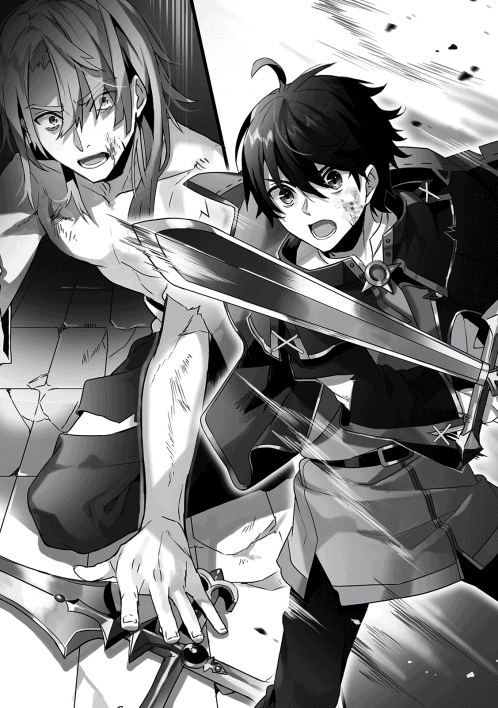
「高橋ぃぃ──ッ!!」
交錯は一瞬だった。
「づ......ぅ......っ」
左肩に意識を断ち切るような痛みが走る。
深々と、宝石剣が僕の左肩に突き刺さっていた。
その剣を握る鈴木の手が、力を失い、瓦礫に落ちる。
黄銅色の剣が、男の胸の真ん中を貫いていた。
大の字に倒れ伏した姿勢で、鈴木はアイスブルーの瞳だけを動かして、僕を見る。
「......愚かな。全員を救うために、自分の魔法を捨てた、ということか？......が、は......っ」
鈴木は口の中から、大きすぎる血の塊をごぼりと吐き出した。
「その力を、誰にも敗れない至高の力を、お前は欲していたんじゃなかったのか？ 俺を、超えるための力を......」
鈴木が視線を瓦礫の山に向ける。
そこで意識を失っている、彼らを、鈴木は見る。
「どっちが大事なんて──比べるまでもないだろ？」
「くっ......ははは......っ、はははは......っ！」
鈴木は目元を細め──笑った。滑稽でたまらないと言わんばかりに。あるいは、どこか自嘲するかのように。
「ああ。そうだ......」
鈴木の瞳からゆっくりと焦点が失われていく。僕に向けられていた光が彷徨い、どこか遠い彼方へ向かう。
「この世界に来る前の......お前の数学の解法は......嫌いではなかったぞ」
「......え？」
嫌いではなかった。
そんな言葉を鈴木が口にするとは思えなくて、僕は思わず聞き返している。
「......見ていて、あまりに凡人らしくて......本当に、滑稽だったからな......」
「僕は、君のことを、なんとも思っていなかった。僕は僕自身に失望しただけ、だから」
「......ふん。......そういうやつだよ......お前は......」
そして、鈴木だった男の身体からすべての力が抜けた。
神々しい神秘の光も、あの強烈な瞳の輝きも失ったその亡骸は、どこまでも彫像めいた、一種の芸術作品のような美しさを湛えている。
何の感情も湧き起こらなかった。
今日、僕と鈴木のどちらかが死ぬ。
その確信があって。その結果がここにある。
ただ、それだけだった。
──そんな僕の視界に、四隅から闇が忍び寄ってきた。
「だったら......抵抗なんて、するなよな......」
黄銅色の剣に絡みつく右手の指をゆっくりと解き、僕は左肩に手を触れさせる。信じられないほどに温かい液体が、信じられない量、そこからあふれ出している。
「魔法で......せめて、止血だけでも......」
回復魔法。水の八番。
それを使うために周囲のマナを知覚しようとして、僕は気付く。
「あぁ......そっか......」
周囲に漂っているはずの光の粒を、僕は知覚することができない。
心臓の横にあるはずの回路の感覚も、もう、残っていない。
すべて、焼き切れてしまったのだ。
ゆっくりと僕の全身から力が抜ける。
瓦礫が、まるで羽毛のように優しく、僕を受け止める。
そこで、僕の意識は闇に呑まれた。
終章一：「でも、それが私を生かす理由にはなりません」と赤髪の少女は問う。
この国の処刑方法は変わっている、とハーミリアは思った。
私の育った『鉄器の国』では断頭台を使う。
でも、この国では、裁縫針を巨大化させたようなレイピアで心臓をひと突きにするらしい。
......そう。
これから私は、その剣で心臓を串刺しにされる。
四肢は汚らしい布で十字架に縛り付けられていた。目の前には、信じられないくらいにたくさんの人が『聖槍の乙女』の処刑を一目見ようと集まっている。詰めかけた群衆の熱気が、ハーミリアを揺さぶる。
そのとき、歓声が爆発した。
木の板が軋んで、フードをかぶった処刑人が、台に上がったことをハーミリアは知る。
その手には、幾人もの罪人の血に汚れた、鉄錆のレイピア。
「なにか言い残すことはあるか？ 『聖槍の乙女』ハーミリア」
いつもの癖で神秘の声に耳を傾けようとして──応える気配はない。
ハーミリアの全身は、魔法で一度焼かれた。その胸に刻まれた聖痕は醜くひきつれて、神秘の加護は完全に失われている。──もう未来は見えない。両手と両足を縛り上げている粗末な布を引き裂く力さえ、ない。
未来が見えなくなって、必然、ハーミリアの考えは過去にばかり向かっていった。覚えていない両親のこと。神秘使いとなった後、勝ち抜いてきた醜い序列争いの日々。凍りついた世界。命が奪われそうになった瞬間、血走った瞳でハーミリアを盾としたエィム様の表情。その後にハーミリアを襲った拷問のような魔法の痛み。そのときに失われた聖痕の輝き。
（......もう、なにも信じない。......この世界に生きる意味など）
「ありません」
処刑人はしばらくハーミリアを見つめたあと、剣を構える。
「では、刑を執行する」
処刑人が深く腰を落とし、駆け出した。
ハーミリアの心臓が強く一拍を打つ。
『敬虔の瞳』が死の瞬間を予見し警告することは何度もあった。その度に、身を切り裂かれるような思いに負けないように、それを切り抜けてきた。
「............うぅ......」
今は怖くない。
なにも見えないのだから、怖いはずもない。
そのはずなのに──その瞬間、ハーミリアの頬を熱が伝い落ちる。
「......こんなの......いや、だぁ......！」
すさまじい衝撃が、胸の真ん中で弾ける。
まるで抱きとめるように、処刑人は至近距離にいる。
その黒い瞳と目が合って、ハーミリアの意識はそこで途切れた。
「ミリィ......これ、ミリィ」
肩を揺さぶられて、少女は目覚める。
朝の光が穏やかに射し込む部屋だった。全身が毛布の心地よい温もりに包まれている。決して高くはない天井を背景に、老人が心配そうな表情で少女をのぞき込んでいた。家の中だというのに、黒いとんがり帽子と黒いローブを身にまとっている老人は、どこか戸惑うように少女を見つめている。
「......ゲルフ......？ どうしたの......？」
「うむ。いや、またうなされておったようじゃからな」
「また、あの日の夢を見てた」
「......そうか。まあ、無理もあるまいな」
ゲルフはしばらく少女の目を見つめて、立ち上がる。
「ちょうどよい時間じゃ。仕度をして、仕事へ行こう」
質素な食事をとり、服を着替え、少女はゲルフの後に続いて家を出る。今日は野草摘みだと言っていた。単調な作業のようでいて、手早く終わらせると褒めてもらえるし、楽しい。
村の広場への坂を下っていくと、朝早くから起きている村人たちが次々に声をかけてきた。
「おはよう、ゲルフ様、ミリィちゃん」「いい朝だねえ」「早起きだな、ミリィちゃんは」「うちのにも見習わせてやりたいよ。てか、うちの娘にならない？」「おい、抜け駆けするなよ。ミリィちゃんはみんなの娘なんだからさ」
「ねえ、ミリィちゃん。お父さんとお母さんのことは、思い出せそう？」
「あ......」
少女は自分の境遇を思い出した。『魔法の国』と『鉄器の国』の戦争の中で両親を失って、戦争の動乱の中で出会ったゲルフに拾われた。......そういう、設定だった。
「......いえ。どうしても、思い出せなくて」
村人たちが口々に同情の言葉を投げかけてくる。
涙を浮かべている者までいて、少女は戸惑った。
少女の言葉は嘘ではない。記憶がはっきりと形成される前に、少女が両親と引き離されたのは事実だ。今となっては、記憶の底にある両親の顔が、あやふやになってきている。
そのまま広場を折れ、村を取り巻く森の中へ進んだ。
ゲルフと少女は野草を摘みに行く。
この生活が始まって、もうすぐ一巡月が経とうとしていた。
信じられないほどに、あっけないほどに、穏やかな日々を少女は生きていた。毎日ゲルフの手伝いをして、村人たちと他愛もない会話をして、食事を作り、片付けをして、そして、眠る。それだけの単調な繰り返し。だというのに、心はいつも穏やかだった。こんな安らぎを、少女はこれまでの人生で感じたことがなかった。
いいのだろうか。
私が、生きていて。
その想いは、言葉になってあふれだす。
「なぜですか？」
と少女は、前を行く老魔法使いの背中に問いかけていた。
ゲルフは苦笑して振り返る。
「それは、どれに対しての問いかけじゃ？」
「全部です」
ゲルフは表情を崩し、茶目っ気のある微笑とともに混ぜ返す。
「全部では分からぬなあ。花の色がなぜこの色かと問うておるのか。それとも、昔話の英雄はなぜいつも勝利するのですかと問うておるのか」
「はぐらかさないでください」
「はぐらかしてなどおらぬさ。わしには、お主と違って、相手の心が分かるような力など、持っておらぬからのう」
「では、言います」
少女はむっとしつつも、自分の疑問を掘り出すように、ゆっくりと言葉にした。
「なぜ、ゲルフは私を迎え入れてくれたのですか」
「......」
「なぜピータ村の住人たちは私に優しい言葉をかけてくれるのですか。......なぜ、あの日、彼はあんなことをしたのですか」
「ううむ」
腕を組んだ老魔法使いは飄々とした表情をしていたが、その瞳は真剣だった。
「全てに答えるとするなら、お主がミリィじゃから、ということになるのじゃろうな」
「............分かりません」
「『聖槍の乙女』が全員の前で命を絶たれれば、それで全てが丸く収まったのじゃ。『鉄器の国』は『魔法の国』が神秘使いの序列一位と二位を同時に屠った強力な外敵であると理解した。魔法使いたちは『聖槍の乙女』への復讐が終わり、納得することができた。......裏を返せば、本当にミリィが生きておろうが死のうが、それは重要ではなかったということになるな」
「......でも、それが私を生かす理由にはなりません」
「うむ。ミリィを生かしたのは、わしではない。なぜ生かしたのか。それは本人に聞いてみなさい」
とくん、と心臓が揺れ、同時に少女は自分の胸に刻まれた傷跡を思い出す。
処刑人が持ち出した刺突剣は、どういう魔法なのか、少女の皮膚を貫かなかった。だが、処刑場に集った魔法使いたちにとっては、血が流れ、少女は命を失ったように見えた──
「少なくともあやつは確信しておったのじゃろう。この村は、問題児の一人や二人、たやすく矯正してしまうことができる、とな」
「問題児？ 私のことですか？」
「他に誰がおるのかな？」
「むぅ......」
「お？ 怒っておるのか？ 野草摘みでわしに勝つことができれば、先の言葉は撤回してやってもよいぞ？」
「とってもとっても吠え面をかかせてやります！」
「そういう言葉を使っておるうちは、まだまだじゃのう」
呵々と笑った老魔法使いのわきをすり抜けるように、少女は駆けだした。野草の群生地を先行して押さえるのだ。今日こそはゲルフに負けない。
「森の中では急ぐと転ぶぞー！ 気をつけなさい！」
「分かってる！」
──結局、野草摘みは完敗だった。それはもう、完膚なきまでに。
「大人げないなあ、ゲルフ様は」「ミリィちゃん、気にしなくていいのよ。この人だって負けず嫌いなんだから」「そうだな。ミリィちゃんに負けたらへそを曲げるぞ」
「誰がへそをまげるじゃと！」
面白おかしくその話をゲルフが語り、広場に詰めかけた村人たちがどっと笑う。そのたびに、少女は少しだけ怯えた。次に何を言われるのだろう。もしかしたら、野草摘みが下手なお前はこの村にもう要らないよ、と言われるかもしれない。そうだ、きっとそうだ。
「............帰ろうか、ミリィ」
「......はい」
疲れ切った少女に、しわくちゃの片手が差し出される。思わず、すがるように、少女はその手を掴んでいた。またねーミリィちゃん、とかけられるいくつもの声になんとか微笑を返し、家へと続く坂道をゆっくりと上っていく。
「なぜ、ゲルフは、未来が見えなくても他人と言葉をかわすことができるのですか」
「......疲れたじゃろう？ あれほどの人に囲まれて」
「......」
ゲルフはゆっくりと足を止めた。坂道の途中で振り返ると、遠くの山の稜線に沈んでいく夕日が見える。
「それは『聖槍の乙女』と名付けられた少女にしか、未来を見ることなどできぬからじゃよ。人は、未来が見えぬから、相手を信頼するのじゃ」
「......？」
「この者は自分の敵とならない。そういう者を増やして行くことでしか、人は他人と接することができない。ミリィはこれまでの人生で、少しだけずるをしておったのじゃ。今から、その返済をしていなかればならない。今言ったことは、分かるな？」
「はい」
頷いて、同時に、素朴な疑問が浮かんだ。
「......私も、いつか、だれかを信じることができるのでしょうか」
「む？ なにを言っておる？」
ゲルフが穏やかな微笑を浮かべる。
「少なくとも一人、ミリィが信頼する人間はおるじゃろう？ この者は自分の敵ではない、そう確信できる存在。それは──」
少女はこくりと頷いた。
聞いてみたい。
私の命を救ってくれた、彼に。
「それは──なにを隠そう、このわしじゃ」
「ううん。ゲルフじゃありません」
「な、なにぃぃぃ──っ!?」
......とってもとっても冗談です。
心の内側で呟いて、少女は満面の笑みを浮かべた。
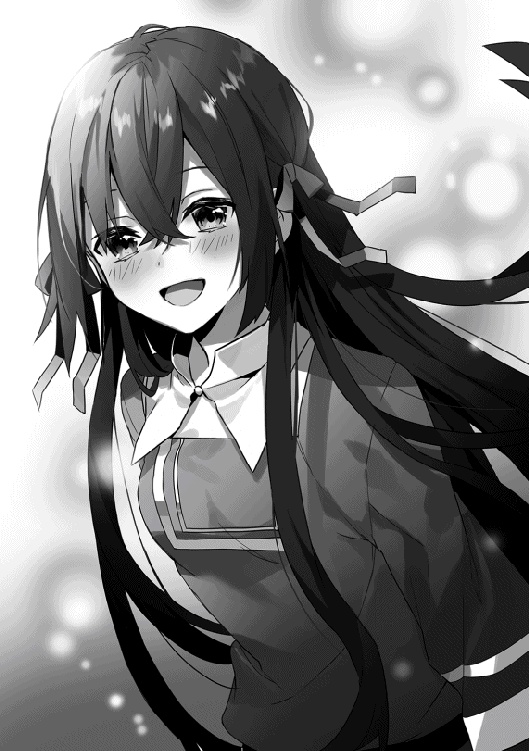
終章二：「あいつも、あいつの大切なもののために、戦ってます」と若き騎士は告げる。
「見つかってしまいましたか」
ベアトリーチェは嘆息混じりでそう言った。
その視線の先には、ちっぽけな石を積んだだけの小さな墓標がある。ベアトリーチェにとっての唯一の家族ともいえる弟が眠っている場所だ。置かれたイーリの白い花が、かすかな芳香を周囲に漂わせている。
ベアトリーチェはゆっくりと立ち上がり、振り返った。
あの革命の日々を隣で戦い抜いた青年が、肩をすくめて立っている。
「......本当に、探し回りましたよ。教官」
「探し回ってほしくないから、こうして各地を旅していたのです。プロパ」
「家出した娘みたいなことを言わないでくださいよ」
金色の髪と緑の瞳をもつ妖精種の青年は穏やかな微笑を浮かべた。その身にまとう黄色のマントは生まれ変わった『魔法の国』の中枢に彼がいることを示している。だが、若いはずのプロパはずいぶんと着慣れた様子で、その重苦しいマントがよく似合っていた。
「タカハが、目を覚ましました」
ベアトリーチェの胸の中に、大きな安堵が広がっていく。
「当然です。彼が目を覚まさないはずはない。私は確信していました」
「まあ、あいつにも多少の昼寝の時間が必要だったんでしょう。すごい戦いでしたからね」
「はい。本当に。よく生きていたものです」
思い出すだけで足が震えるような、すさまじい戦いがあった。いくつもの光が飛び交い、いくつもの命が失われ、そして、勝利を収めるまでの戦いが。終わってみれば、それははるか過去のようにさえ思える。
「その後も、本当に大変だったんですからね」
プロパはどこか不満げに言った。ベアトリーチェも旅の途中でその噂はよく知っている。一度はすべての秩序が失われた国に、新たなる体制を立ち上げる。想像も絶する、なんていう言葉が生やさしいほどの苦労を、この妖精種の青年はその両肩に今も背負っているはずだ。
それでも、そんな素振りを少しも見せずに、青年は笑う。
「というわけで、お迎えにあがりました。教官には、新生騎士団の総団長としての地位を引き受けていただきたいと思っています」
「お断りします」
「......と、言われるのではないかと思っていました。でも、オレは諦めませんよ」
そこで、プロパは何かに気付いた様子で、ベアトリーチェの足下に視線を投げた。
「っと。失礼しました。オレも、いいですか」
それが、墓に手向けていいか、という意味だと理解して、ベアトリーチェは首肯する。
プロパはコートの内側から小さな欠片を取り出すと、その墓の手前に置いた。それは黄銅色の金属片だった。敵国の神秘使い、それも最上位の人間にしか与えられない祝福の武器の素材──金剛鋼、というものらしい。
それを墓前にそなえ、プロパはずいぶんと長い時間、手を合わせていた。
しばらくして、プロパはゆっくりと立ち上がる。
「総団長を引き受けてもらうまで、また来ます」
「参りましたね」
「教官はどうして、旅を？」
ベアトリーチェは言葉に詰まった。少し考えて、さらりと真実を告げることにする。
「これは、失恋の傷心を癒すための旅なのです」
「........................え？」
「私の初めての恋は、どうやら叶わぬようですから」
プロパが信じられないくらいに目をまん丸くした。威厳をその身にまとうために日々努力しているであろう青年の驚愕の表情が見られただけで、悪くない。
「......革命の、戦いで？」
「はい。残念ながら」
「思い出させてしまいましたね。本当に申し訳ありません。教官」
「いいえ、構いませんよ」
ベアトリーチェは心底そう思って言った。本当に、構わないのだ。ベアトリーチェの願いは、誰かを守り、戦うこと。いつも彼の側にいるときは、その願いが満たされていたのだから。
「......ん？」
そこで、プロパがかすかに首をかしげた。
「どうしたのです？」
「いえ。本当に失礼なことを聞いても、いいですか？」
「私とあなたの仲です。本当に失礼な言葉など、あり得ないと思いますが」
プロパは嬉しそうに笑って、すぐに真剣な表情に戻した。
「では、失礼して。──その失恋の相手っていうのが、まさかタカハってことはないですよね？」
「............まさか」
「ですよね。失礼しました。お許しください」
ベアトリーチェの心臓は、これまでないほどに早鐘を打っていた。そんなに分かりやすかったのでしょうか。だとしたら、旅に出ていると逃げ出した自分はみんなの目にどう映るのでしょう──とそこまで想像をして、顔から火が出そうになる。それを強引に咳払いでねじ伏せる。
「まあ、プロパには分からない感情かもしれませんが」
「はは。そうかもしれません。オレは男ですし、初恋の相手と結ばれることができましたから」
「............え？ プロパ、結婚していたのですか？」
「あれ？ 言ってなかったですか？ 正騎士になったときに」
「............」
先を越されている、なんていうレベルではなかった。今度こそ顔に血が上っているのがはっきりと分かる。でも、もともとそれが見えにくい肌色をしているから......たぶん、大丈夫だろう、とベアトリーチェは自分に言い聞かせる。
「もし、その心の傷が癒えたら、教官には戻ってきてほしいです。オレたち革命軍はこれからも民のために戦い続けなくちゃいけない。教官の力は、革命軍の誰もが頼りにしています。オレも、もちろん、タカハも」
その名を聞いた瞬間、ベアトリーチェの胸の底でくすぶっていた何かが、再びよみがえった。
「タカハくんは、元気ですか」
プロパは唯一無二の相棒を案じるように表情を曇らせた。
「まあ。なんとかやってるみたいです。傷は結構でかいみたいですけど」
「傷？ あの怪我のことですか？」
「いいえ。身体の方は完治してるんですが、うーん、なんて言ったらいいのかな......」
プロパはそこでふさわしい言葉を見つけられなかったのか、言葉を切った。
「でも、なんとかやってますよ。あいつも、あいつの大切なもののために、戦ってます」
「......そうですか」
タカハの大切なもの。それは戦いの中ではっきりと分かった。正直に言ってしまえば、剣を振るっているときは何も考えずにいられた事実から逃れたくて、ベアトリーチェは旅をしていた。
けれど、それももう終わりだ。
「お引き受けします」
「......教官？」
「新生騎士団の総団長の件、ですよね？ お引き受けしますよ」
「ほんとですか！ ありがたい！」
「プロパが、タカハくんのために頑張っていることがよく分かりましたから」
「え？ 何を言ってるんですか。オレは民のために頑張ってるんです」
ふん、と不満げな表情を浮かべたプロパ。その面影は、やっぱり従騎士時代からあまり変わっていない。結局なんだかんだで、全員に優しいその態度も。
ベアトリーチェはもう一度、墓石を振り返った。
それでも、私はなにかを守りたい。この両腕を誰かのために使うことができる場所で生きていたい。守れなかった何かを乗り越えて、先に進むために。
「戦絆が不在では、彼の身の回りも心配ですしね」
「......やっぱり教官、タカハのことが好きだったんですか？」
「まさか」
「ですよね」
二人の騎士は笑い合い、そして、一歩を踏み出した。
終章三：夜明けの光の中で、僕はすべてを知る。
──僕は目を開けた。
信じられないくらいに高くて、美しい天井が、視界の全部を占めている。
僕はかけられた柔らかい毛布を払いのけて、ゆっくりと身を起こした。
右手に開かれた窓の外は、藍色だ。夜が明け、朝に変わっていくその時間。
暁。
右側では太陽が上り始め、夜を追い払っていく。
「............あ」
声が出た。
ベッドの足下に、少女が立っていた。ベージュ色のうさ耳と、同じ色の長い髪。宝石のような色を湛えた、青の瞳。──探し続けていた、彼女。
「タカハ。......タカハ！」
寝ずに看病をしてくれていたのだろうか。信じられないものを見るような目をしたラフィアがベッドを回り込んできて、身体を起こした僕に飛びついてくる。その衝撃と、柔らかさと、温もりを僕は全身で感じる。髪が首に触れてくすぐったい。そのくすぐったさすら、心地よかった。
生きている。
僕も、ラフィアも。
その事実がじわじわと頭に染みこんでくる。
「おはよう。ラフィア」
ラフィアが僕の首にからめていた腕を解いて、少し距離をとる。柔らかい頬の輪郭も、ちらりとのぞく白い歯も、涙で濡れる頬も、すべてが記憶の中のラフィアと全く同じで、そのすべてが大切に思える。まどろみの中で、理解できないほどに心地よい感覚に僕は身をゆだねる。
だが、続くラフィアの一言が、僕を一気に目覚めさせた。
「────、──？」
ラフィアはやたらサ行の多い、僕の知らない言葉を言った。
「え？」
「タカハ、────？ ──？」
「僕が喋ってること、分かる？」
「──────？」
言葉が、お互いに全く通じていないことを、僕はすぐに理解した。
その理由も、たぶん、察しがつく。
『対訳』。
僕に絶対の魔法を授けてくれた、精霊様の反則。
それが、焼け付いた回路とともに──失われてしまったのだ。
「ははは......。そっか。......そう、だよな......」
「────！ ────？」
ラフィアが不安げな表情で僕を見つめている。
僕は何度も頷いた。笑顔で。もう、怖いことなどないと伝えるように。
そして、僕はためらいを振り切るようにして、ラフィアを抱き寄せた。すぐにその腕が僕の背中に回されて、お互いの体温が交換されていく。
今の僕には、何もない。魔法も、言葉も、何一つ僕には残されていない。
でも、僕は生きていく。
魔法も、言葉も、もう読み解けないけれど、きっと大丈夫だ。腕の中のこの温もりが確信させてくれる。
だから、僕は生きていく。
異世界で。
ここで。
あとがき
いつもありがとうございます。扇屋悠です。
お手にとってくださったあなたのおかげで、書籍版『算数で読み解く異世界魔法』、完結を迎えることができました。ここまで物語にお付き合いくださったこと、こうしてメッセージを送ることができることに、心の底から感謝しています。
打ち明け話をすると、書籍版のタカハの物語を描き続けることは、僕にとって、とても苦しい経験でした。理由ははっきりしていて、書籍版のタカハの考え方が普段の僕の思考回路にとてもよく似ているからです。読み返してみると「主人公なのにマジで変わった人間だなぁ」と思う瞬間が多く、それはすなわち僕自身への批判として跳ね返ってきて、自分で書いて自分で悶絶していました。こういうところが変な人間ですね。ええ。
同時に、タカハの『人間に点数をつけて評価する』という視点で観察すると、ライトノベル作家の扇屋悠はあまりにも未熟です。どうしてもっと適切で心を奪うような文章が出てこないのだろう、どうしてもっと魅力的な人物を生み出せないのだろうと、わりと切実に何度も悩み、もうやめちゃえよと思う瞬間もときどきありました。以前の僕ならば、たぶん、あっさりと投げ出していたようにも思えます。しかし、やめることなく続けることができたのは、こうしてあとがきを読んでくださっているあなたの存在を感じることができたからです。読んでくれる人がいるという確信が、僕のこの想像を形にしてもいいのだと教えてくれました。書籍版を出させていただいたこの経験は、僕にとって、何物にも代えがたい、人生の宝物です。
書籍化には本当に多くの皆さまのお力添えをいただきました。
担当編集様。僕の書きたい展開や癖を理解した上で、物語をまとめあげるという目的に向かって適切な助言をくださるその言葉には、幾度も救われました。激務に追われる日々だと推察しますが、どうかお体に気をつけて、今後も活躍されてください。
三巻にわたって息をのむようなイラストを描いてくださったえいひ先生。いつも完成イラストを拝見するのが本当に楽しみで、僕の期待を常に上方向に裏切る実力に、完全に心酔しております。一緒に仕事をさせていただいたこと、光栄に思います。
校正や装丁、電子書籍化作業をしてくださった方々。
あらためて、この書籍をお手にとって下さった皆様に、心から感謝を。
いつかどこかで、もう一度お会い出来たら、と願いをこめて。
平成三十年 扇屋悠
算数で読み解く異世界魔法３
2018年６月１日発行 ver.1.0
著 者 扇屋悠
発行所 TOブックス
〒150-0045 東京都渋谷区神泉町18-８
松濤ハイツ２Ｆ
03-6452-5766（編集）
0120-933-772（営業フリーダイヤル）
Ⓒ2018 Yu Ogiya
※無断で複製・複写・データ配信などをすることは、かたくお断りいたします。
本電子書籍は下記にもとづいて制作しました
算数で読み解く異世界魔法３
発行日 2018年６月１日 第１刷発行
本作品の全部または一部を無断で複製、転載、配信、送信したり、ホームぺージ上に転載することを禁止します。また、本作品の内容を無断で改変、改ざん等を行うことも禁止します。
本作品購入時にご承諾いただいた規約により、有償・無償にかかわらず本作品を第三者に譲渡することはできません。
本作品を示すサムネイルなどのイメージ画像は、再ダウンロード時に予告なく変更される場合があります。
本作品は縦書きでレイアウトされています。
また、ご覧になるリーディングシステムにより、表示の差が認められることがあります。